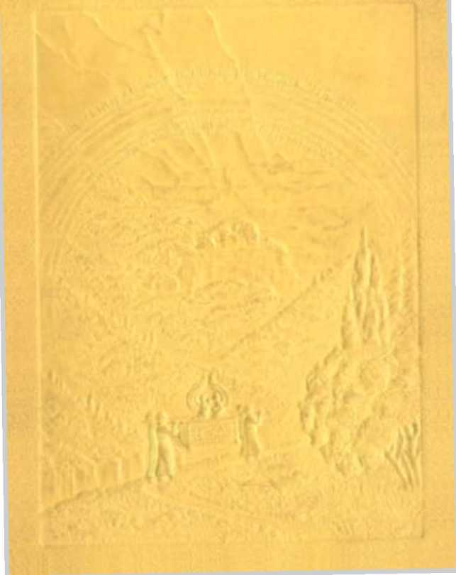
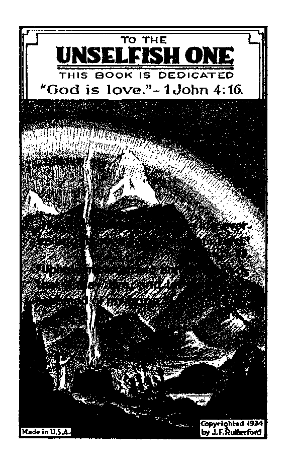
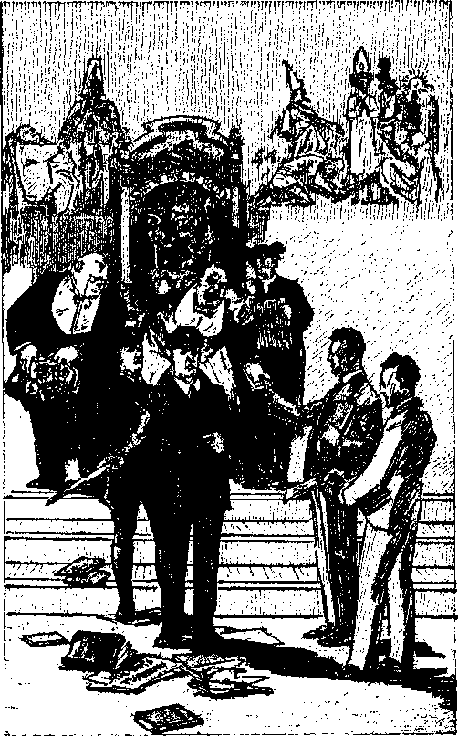
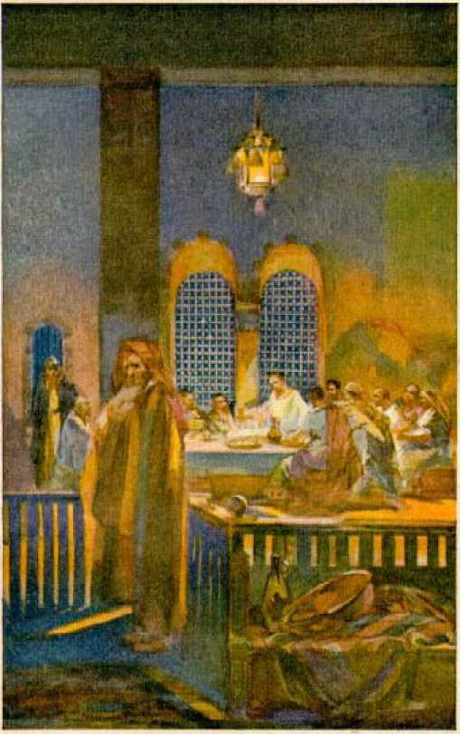
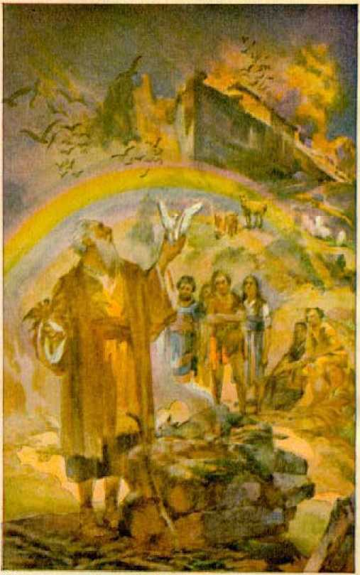
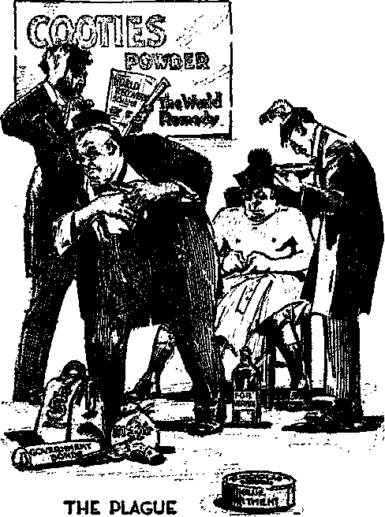
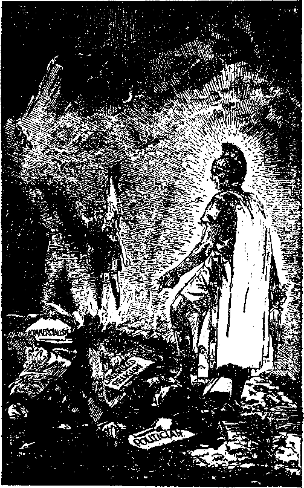
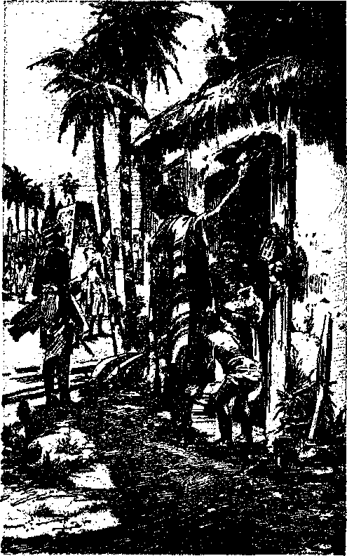
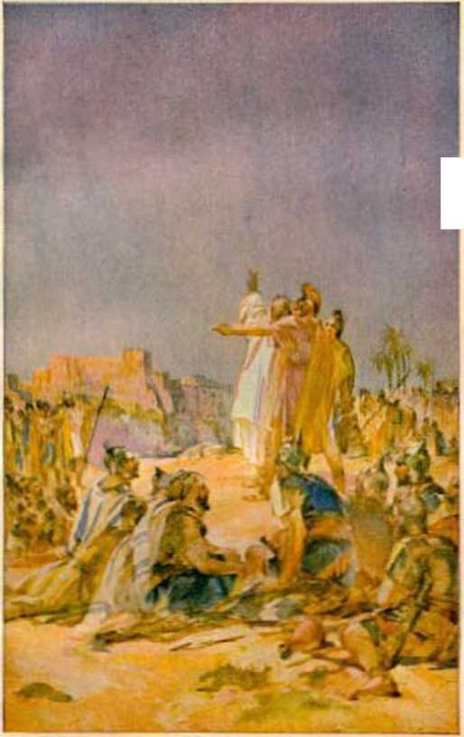
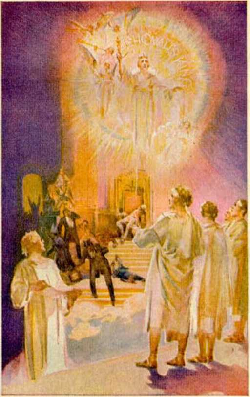

JEHOVAH
The revelation, of the KING OF ETERNITY involving his name, his covenants, his memorial, and his Vindicator; disclosing why all persons who get life everlasting must love, joyfully obey, and serve Him.
f By J. F. Rutherford f
Author of
CREATION DELIVERANCE
RECONCILIATION GOVERNMENT PBOPHECT LIGHT
and other books
First printing 1,000,000 copies
Publishers WATCH TOWER Bible and Tract Society International Bible Students Association Brooklyn, New York, U.S.A. 4iso London, Toronto, StratMeM, Cape Town, Berne, Magdeburg, and in other countries.
JEHOVAH
[BLANK]
CHAPTER I
JEHOVAH GOD is the owner of the universe. He made the heavens and the earth, and all things are at his disposal. “The Lord God made the earth and the heavens.’’ (Gen. 2:4) “Lo! unto Jehovah thy God belong the heavens, even the highest heavens; the earth with all that is therein.” (Deut. 10:14, Rotherham) ‘ ‘ The heavens are thine, the earth also is thine: as for the world, and the fulness thereof, thou hast founded them.” (Ps. 89:11) “Of old hast thou laid the foundation of the earth; and the heavens are the work of thy hands.” (Ps. 102:25) “The earth is the Lord’s, and the fulness thereof; the world, and they that dwell therein.” (Ps. 24:1) “I am Jehovah, that is my name.” (Isa. 42:8, A.K.V.) “Thus saith Jehovah, the King of Israel, and his Redeemer, Jehovah of hosts: I am the first, and I am the last; and besides me there is no God. ”—Isa. 44:6, American Revised Version.
Jehovah God is the unselfish One, because “God is love”. (1 John 4:16) Love means unselfish devotion to righteousness. “For righteous is Jehovah, righteousness he loveth, the upright shall behold his face.” (Ps. 11:7, Roth.) “0 Jehovah! in the heavens is thy lovingkindness, thy faithfulness as far as the fleecy clouds: thy righteousness is like mighty mountains, and thy just decrees are a great resounding deep;
man and beast thou savest, 0 Jehovah! How precious thy lovingkindness, 0 God! therefore the sons of men under the shadow of thy wings seek refuge.” (Ps. 36: 5-7, Roth.) In the Scriptures “father” means lifegiver, and Jehovah God is the Life-giver to all who live forever. “One God and Father of all, who is above all, and through all, and in you all.” (Eph. 4:6) All creatures that get life everlasting must receive it from Jehovah God through his chosen One. Life is the gift of God through Jesus Christ.—Rom. 6:23.
Jehovah the immortal One is “from everlasting to everlasting”. (Ps. 90: 2) He has revealed himself to his creatures by his name Jehovah, meaning his purpose toward his creatures; by his name God, meaning the Creator of all things; by his name Almighty, meaning that he is all-powerful and nothing can successfully resist him; and by his name Most High, meaning that he is the supreme One above all. His name has been defamed before all creation. In due time he will vindicate his name for the good of all creation. His Vindicator is his chosen, anointed, beloved One who executes his judgment.
The covenants of Jehovah God manifest his purpose and reveal the manner of carrying out his purpose. Because his name and his covenants are so vitally important to man consideration thereof is given in the pages following. His name and his covenants are inseparably linked together. The carrying out of his covenants will be a vindication of his name, and the opening of the way for mankind to gain everlasting life, and will bring everlasting peace and joy to those that live on the earth.
The present-day visible rulers of this world are woefully deceived. They think they have the right to rule the people. They possess no such right. God, “whose name alone is Jehovah,” is the “King of eternity”. (Ps. 83:18; Jer. 10:10, margin) All just power and authority reside in him. The time is at hand when all must know that Jehovah is God, and that “to the intent that the living may know that the Most High ruleth in the kingdom of men, and giveth it to whomsoever he will”. (Dan. 4:17) When God took away from the nation of Israel all authority to rule, which he did in the year 606 B.C., he said: “It shall be no more, until he come whose right it is; and I will give it him.” (Ezek. 21:27) He “whose right it is” has come. The great question now before living creatures is, Who is supreme? and who shall rule or control the world? The proper consideration of this question involves the name and the covenants of Jehovah, to the intent that men of intelligence may choose whom they will serve.
Jesus Christ is the Son of God, the Chief Executive Officer of Jehovah, the Redeemer of man, and the world’s rightful Ruler. Satan the Devil is the wicked one, the opposer of God, and man’s greatest enemy. For centuries Satan has been the invisible overlord or controller of the world. There must be a change from Satan’s rule to that by Jesus Christ. That change is impending and will take place within this generation.
WORLD
There is first here given the Scriptural definition of “world”, and then the proof that Satan controls the world, and why a change of world control must shortly come to pass. “World” means the peoples of earth organized into forms of government, under the supervision of an invisible power or overlord. In the Bible the word “heaven” is used to represent the invisible part of that rule, while “earth”, as there used, means the visible power that rules, and it is “heaven” and “earth” together which constitute the “world”. The ‘people of good will’ herein mentioned are those who have an honest and sincere desire to see justice and righteousness prevail, and hence they desire that the will of God may be done on earth as well as in heaven.
Jehovah God created the earth and put perfect man upon it, and made the spirit creature Lucifer the invisible overlord of the earth. Associated with Lucifer were many spirit creatures or angels forming a part of his immediate organization. Lucifer rebelled against Jehovah God, in which rebellion his host of angels joined, and man was led into lawlessness and sentenced to death. Since the entire human race sprang from that one man after he had sinned and was sentenced to death, all mankind have been born imperfect. (Rom. 5:12) God changed the name of Lucifer to that of Devil, Satan, Serpent, and Dragon, and since then Satan and his host of wicked angels have controlled the world. .
Satan defied Jehovah God to put on earth men that would be faithful and true to God. That challenge God accepted. (Job 1:8-12; 2:1-6) Although sentenced to death, Satan and his wicked angels have been permitted to continue for a definite period of time unhindered in the prosecution of their wicked work, God abiding his own due time to take action against them. As the human race increased on the earth, other angels which had been wholly devoted to God materialized in human form and were induced by Satan and his wicked angels to mingle with humankind and marry the daughters of men, and from that union there came forth an unusual offspring. There followed a period of great wickedness in the earth, and God announced his purpose to destroy the “world that then was” by a flood. That time in the Scriptures is called “Noah’s day”, because Noah was a righteous man and remained true to God.—Gen. 6:1-8; 1 Pet. 3:19, 20.
Jehovah God then told Noah to build an ark in which he would find refuge for himself and the immediate members of his household. Noah did as commanded, and then there came upon the world the deluge or great flood which destroyed all flesh. That destruction of all flesh was a type foreshadowing the destruction of the present wicked world. The saving of a few persons who found refuge in the ark pictured or foreshadowed the millions of people of good will who will be carried through the battle of the great day of God Almighty soon to be fought. A knowledge of the truth of and concerning these things is now of most vital importance to all persons of good will; hence that message is now declared as a notice and warning to all such people.
In the flood God destroyed all flesh, but he did not destroy the Devil and the other wicked spirits, but permitted them to continue to exercise power and influence over humankind until God’s due time to take action. Why did not God then destroy the Devil? Jehovah’s answer to that question is found in the Bible, at Exodus 9:16, in these words: “But for this cause have I allowed thee to remain, in order to show thee my power; and in order that they [my witnesses] may proclaim my name throughout all the earth.” (Leeser) But the day of final reckoning must come, and in that day Satan and his power will be completely destroyed and there will be a complete change in the rulership of the world.
After the flood the human race multiplied in the earth and then men began to organize themselves into governments, the first organization being under the leadership of Nimrod, (Gen. 10:8-10) In that government and in every government from then till now three elements have constituted the visible ruling power, to wit, religion, polities and commerce. During all that time Satan the Devil has exercised his subtle power over the men of the nations, defrauded and deceived them, and led them away from the true God. But in all the centuries past God has had a few men on earth who have remained true and faithful to him, and such men he has caused to be his witnesses in the earth.
Then Jehovah organized the people of Israel into a nation for himself and used that nation to foreshadow and foretell his purpose toward the human race. For some time that nation was faithful to God, but in the course of time the rulers and people fell under the V/'ily influence of the Devil, turning away from God, and then that nation was completely destroyed. Israel was a type foreshadowing "Christendom”. The nations of earth now called "Christendom” began to serve Jehovah, but in the course of time those nations fell away from the true worship of God, yielded to the seductive influence of Satan, and became corrupt, and God’s decree is that they shall be completely destroyed at Armageddon, even as Israel was destroyed.
Satan, the wily and subtle foe, in order to deceive man, has caused the people to be kept in ignorance of himself and his work, his agents even denying that Satan exists at all. The question which you must determine now is whether you will believe and accept the word of man or believe and accept the truth of the Bible, which is God’s Word. This message is addressed to those who believe that the Bible is the Word of God; and it will be a comfort to them, but not to others. Now the world is in great distress; the rulers in every nation under the sun are in very great perplexity. They sense disaster ahead, but do not know the reason why, nor will they give heed to the Bible truth of and concerning the same. Many religious leaders have said that the present trouble upon the world is a punishment from God, whereas the Scriptures plainly state that Satan the Devil is the one causing the great distress and woe now upon the people. Therefore it is written: “Woe to the inhabiters of the earth, and of the sea! for the devil is come down unto you, having great wrath, because he know-eth that he hath but a short time.” (Rev. 12:12) Why has Satan brought this great woe upon the nations of earth?
SEED
At the beginning of Satan’s rebellion Jehovah God promised that he would produce a “Seed” that would in due time rule the world in righteousness, destroy Satan and his organization, and bring blessings of peace, prosperity and life to all the peoples and nations of the earth that would do justice and righteousness. (Gen. 3:15) That promised “Seed” or Ruler is Christ Jesus, the beloved Son of God. Concerning him it is written: “The government shall be upon his shoulder; and his name shall be called Wonderful Counsellor, The mighty [Ruler], The everlasting Father, The Prince of Peace. Of the increase of his government and peace there shall be no end, ... The zeal of [Jehovah] of hosts will perform this.” (Isa. 9: 6,7) Thus Christ Jesus is identified as earth’s rightful ruler, by and through whom the human race must receive the desired blessings.
In A.D. 33 the man Jesus, after having delivered God’s message of truth to Israel, was killed by Satan’s agents. God then raised Jesus out of death and gave him life divine and made him the most exalted one in the universe and appointed him to the office of King or Ruler of the world. Jesus was required to wait, however, until God’s due time for him to assume his rulership. (Ps. 110:1) When on the earth Jesus declared that he must go away and receive the kingdom and that he would then come again and set up the kingdom; and for that reason he taught Christians to pray: ‘Thy kingdom come; thy will be done on earth. ’
In answer to the question as to what would be the proof of his coming and his kingdom Jesus stated that the world war would mark the beginning of his operations concerning the world. That world war came in 1914 in fulfilment of the prophecy uttered by Jesus. It was in that year that Jehovah God installed Jesus and commissioned him to rule the world. (Ps. 2: 6-12) Christ Jesus is a spirit now, and cannot be seen by human eyes. As Satan has long been the invisible ruler over the world, henee unseen by men, so now his rule must cease and Christ Jesus becomes the invisible ruler and controller of the world. Jehovah God has for centuries suffered or permitted Satan to be the invisible ruler; but now that time limit is up and the end of Satan’s world has come, and the time for Christ Jesus to take over the affairs of the world; and just before he begins the administration of blessings he will destroy the wicked ruler of this world and all who support that wicked ruler.—Heb. 2:14; 1 John 3: 8.
Satan knows that it is only a short time until Armageddon, which will be the final fight by Satan and his angels on one side and Christ Jesus and his angels on the other side, and, knowing this, Satan brings great woe upon the world, his purpose being to turn the people away from the true God and cause their destruction. This is further supported by the words of Jesus, who said that at the end of the world there would be great distress upon earth, with perplexity, and men’s hearts failing them because of things they sense coming upon the world. (Luke 21: 25, 26) This is exactly the condition that we see today. The great change from unrighteous to righteous rule or control of the world is impending.
Seeing the great danger of world collapse, earthly rulers organized the League of Nations as a substitute for God’s kingdom, and the religious element of the world hails that League of Nations as “the political expression of God’s kingdom on earth”; which claim is wholly false. Today an organization in America known as “The League of Nations Association, Inc.”, by its president, has issued an appeal to the people to support the League of Nations, and which appeal among other things says: “In a world as dark as this, why blow out the only light there is?” meaning that the League of Nations is the only hope of the world. Let the people be warned that the League of Nations is the product of Satan, brought forth to deceive the people and blind them to the truth concerning God’s kingdom. The League of Nations is absolutely certain to go down with the other parts of Satan’s organization. God foreknew and foretold this confederacy of nations, and concerning it by his prophet he said: ‘Associate yourselves together, 0 ye people, and ye shall be broken in pieces.... Bind yourselves together, and ye shall be broken in pieces. Take counsel together, and it shall come to nought.’—Isa. 8:9,10.
In giving his answer concerning the evidence proving the end of the world Jesus referred to the League of Nations as that “abomination that maketh desolate’’, because it assumes to take the place of God’s kingdom. He said to his followers: ‘When ye shall see the abomination of desolation [which is the League of Nations] stand in the holy place, then flee to God’s kingdom.’ (Matt. 24:15,16) Jesus gives this warning because the League of Nations is Satan’s scheme to blind the people to the truth. All who seek refuge in the League of Nations will come to disaster. God’s kingdom under Christ is the only hope of the human race, and refuge will bo found only in God’s organization.
For more than 1800 years the Israelites were God’s typical people, and it is expressly stated in the Bible that what came to pass in connection with that nation foreshadowed what shall come to pass at the end of the world, where we now are. The nation of Israel began to function while domiciled in Egypt, and there the people of Israel pictured or represented the peoples now on earth who are on the side of God and Christ and who desire to see righteousness control and oppression end. Pharaoh, the king of Egypt, represented or stood for Satan, the god or invisible ruler of the wicked world. Pharaoh and the officers of his government heaped great oppression upon the Israel-ites.—-Ex. 1: 8-22; 2:23-25.
Jehovah God sent Moses and Aaron to Egypt to be witnesses to his name and power. Moses was a type of Christ Jesus, while Aaron was a type of Jehovah’s witnesses working under the direction of Christ Jesus. God commanded Moses and Aaron to go before Pharaoh and demand that his people Israel be permitted to serve and worship God in the way that Jehovah had appointed for them. Pharaoh refused to grant that request. Then God commanded Moses to bring plagues upon Egypt, that the rulers and the people might be informed and warned that Jehovah is the Almighty God and that his commandments must be obeyed. In all there were ten plagues that befell Egypt. The ninth plague was that of great darkness over all the land of Egypt except that part where God’s chosen people were, and there the Israelites had complete light, which was a special favor from Jehovah,
Now at the end of the world Jehovah has sent Christ Jesus, the Greater Moses, and has sent forth his witnesses, pictured by Aaron, and commanded that his testimony must be given to the rulers of the world and to the people that Jehovah is the Supreme One and that his people shall be permitted without interference to worship and serve God in the way he has appointed for them. In the year 1919 the religious, political and commercial elements of “Christendom” set up the League of Nations in opposition to God’s kingdom under Christ, and since then all these visible rulers have vigorously opposed Jehovah’s witnesses. At the command of the Lord his witnesses have served notice and warning upon the rulers that the world has ended, and that the kingdom of God is at hand, and have demanded of the rulers that God’s people be permitted without interference to serve and worship him in the manner Jehovah has appointed for them. The serving of such notice and warning constitutes the fulfilment of the nine plagues of Egypt; which nine prophetic plagues have been fulfilled upon the rulers of the world.*
As the ninth plague on Egypt was great darkness, just so now the rulers of the world arc in great dark-•See pages 55-94.
ness as to God’s purpose, because they refuse to heed God’s truth. This is particularly shown by the fact that the League of Nations is openly claimed to be the only light that now shines on earth. The only exception to this great darkness is that those persons who have taken their stand on the side of God and his kingdom are now enjoying the light of the Word of God and by it are directed in the right course. At the conclusion of the ninth plague upon Egypt Pharaoh said to Moses and Aaron: ‘Be gone and see me no more.’ Even so now after the ninth antitypical plague has been served upon the rulers of the world, they have in effect said to Jehovah’s witnesses: ‘Be gone and let us have no more to do with you. ’ Pharaoh defied Jehovah God. The rulers of the world are now doing the same thing. They oppose Jehovah’s witnesses and spurn God’s warning, and they reject God and his kingdom.
After this, and in harmony with the will of God as he has commanded, Jehovah’s witnesses will give no further notice and warning to the rulers of the world, but must now bring to the attention of the people of good will the message of notice and warning concerning Armageddon and God’s kingdom, even as Moses and Aaron gave special instruction to the Israelites just before the tenth plague came upon Egypt.
The firstborn of Egypt under their law constituted a specially favored class; and hence in the prophetic picture the firstborn represented the present visible ruling element of the earth. The tenth and last plague which God sent upon Egypt was this: He sent his angel throughout the land of Egypt and slew every one of the firstborn of the Egyptians, but gave protection to the firstborn of the Israelites because they obeyed his commandment, showing faith in man’s Redeemer.
The Israelites immediately left Egypt and were pursued by Pharoah and his official organization, all of which were destroyed in the sea. That foreshadowed or pictured Armageddon, which will mean the complete destruction of Satan’s rule of this world, both visible and invisible.—Rev. 16:13-16; 19:19-20: 3.
WARNING NOTICE
The Scriptures reveal that God never takes advantage of the ignorance of anyone, but always gives notice and warning before taking action to vindicate his name. Mark this, that he caused Noah to testify to men and angels of his purpose to destroy the world before he brought the flood, which destroyed the world. He caused Moses and Aaron to give full notice and warning to Egypt, and then came the destruction of that world power. He caused Jesus to give fair notice and warning to the rebellious nation of Israel; and then followed the destruction of that nation. Now Jehovah has caused his witnesses to give full and fair notice and warning to the rulers of this world; and when this witness work is completed there shall quickly follow the complete destruction of the world. The flood, the destruction of Egypt, and the fall of Jerusalem brought great trouble upon the people, but Jesus declares that Armageddon shall bring upon the world the greatest tribulation ever known, and that it will be the last. (Matt. 24:14, 21, 22) Hence we may know that the impending battle of Armageddon will be the final and complete execution of Jehovah’s judgment against the wicked, both invisible and visible.
Armageddon will not be fought between men of the nations of earth. Armageddon is the ‘battle of the great day of God Almighty’, in which Christ Jesus and his angels will fight against Satan and his wicked host, and Christ will be completely victorious. Mark now the words of the record in 2 Peter 3, to wit: ‘In the last days shall come those who will deny and scoff at the kingdom of God, and for this they willingly are ignorant of the truth, that by the word of God the heavens and earth that were of old, constituting the world that then was, being overflowed with water, perished; but the heavens and the earth which are now, by the same word are kept in store, reserved unto destruction against the day of judgment and perdition of ungodly men.. . . Looking for and hasting unto the coming of the day of God, wherein the heavens, being on fire, shall be dissolved, and the elements [visible ruling powers] shall melt with fervent heat.’ —2 Pet. 3:3-7, 12.
Those inspired words recorded in the Bible tell what shall shortly come upon the world, making a complete end of Satan’s rule, thus clearing the way for the righteous rule of Christ Jesus. Continuing the apostle says: “Nevertheless we, according to his promise, look for new heavens and a new earth, wherein dwelleth righteousness.” (2 Pet. 3:13) This marks the complete change of world control, the “new heavens” being the Christ or invisible rule, and the “new earth” meaning those faithful men of old from Abel to John the Baptist, who being resurrected as perfect men shall become the visible rulers in the earth; and that rule shall be one of righteousness.—Ps. 45:16; Isa. 32:1; Heb. 11:4-35.
In Revelation 21 the new rule of the world is symbolically called “the holy city” or organization, and is described as coming down from God out of heaven, which holy and righteous rule under Christ shall bring the greatest blessings to the people. Exercising
‘BE GONE; SEE MY FACE NO MORE? Page 18
[BLANK]
his supreme power by and through Christ Jesus, Jehovah the great God of the universe will then bless all the people who obey his righteous law. “And God shall wipe away all tears from their eyes; and there shall be no more death, neither sorrow, nor crying, neither shall there be any more pain: for the former things are passed away. And he that sat upon the throne said, Behold, I make all things new: . . . for these words are true and faithful.”—Rev. 21:4, 5.
The so-called “holy year” has failed to bring the promised peace and prosperity, and that failure should of itself convince the people of good will that God did not authorize the year 1933 to be called a holy year, nor will he answer the prayers of men who try to make it a holy year. Upon earth there is now no peace, and poverty continues to stalk hideously through the land. Jehovah’s witnesses have no controversy with men. Their only purpose is to be obedient to God’s commandment to tell the message of truth. As he has commanded this message to be delivered, by his grace they will do it, regardless of opposition; and when they have thus done, their responsibility ends and the people’s begins. All human schemes to recover the world are certain to fail. The world is sick unto death, and it is going to die. There may be a temporary period of prosperity, but it will be very brief. Jehovah’s decree is that there shall be a complete change of world control, and for this reason the old world must perish.
In the terrible disaster that shall soon come upon the present world all who oppose God will die and will find no possible way of escape. (Jer. 25:33-36) Money, property and worldly influence will not avail anyone to buy protection or relief in that time of great trouble. Concerning the same it is written in
God’s Word: “The land shall be utterly emptied, and utterly spoiled: for the Lord hath spoken this word. The earth also is defiled under the inhabitants thereof, because they have transgressed the laws, changed the ordinance, broken the everlasting covenant.” (Isa. 24:3, 5) The everlasting covenant here mentioned is God’s covenant concerning the sanctity of life. (Gen. 9:1-11) Every nation on earth has grossly violated and willfully broken that covenant by causing the unnecessary and untimely death of human creatures. Examples of such needless bloodstains upon the record of America are the cruel treatment to which the Indians have been subjected, and the wanton slaughter of animals; and which was done chiefly because of greed for gain. The commercial and political elements of the earth have unjustly oppressed and killed millions of human creatures, and the religious element has connived at and condoned such wrongful deeds. God will balance the books at Armageddon.
The people are here warned of a wicked conspiracy formed by Satan, and in which conspiracy there are joined the international bankers, the unfaithful clergy, and the conscienceless politicians, among the purposes of which conspiracy are these: To put America into the League of Nations, control the money and all other property, rule the people by the hand of their one-man dictator, destroy the freedom of speech and press, and stop the true worship of God and Christ.
But be of good courage! The hand of Almighty God at Armageddon will smite all these enemies to the dust!
What, then, is the hope of the nations of the earth? Jehovah God points to Christ Jesus, the new Ruler of the world, and says: ‘Behold my servant, in whom my soul is pleased. He shall show righteous judgment to the nations, and in his name shall the nations hope.’ (Matt. 12:18-21) Having been warned, men are at liberty to join whatsoever organization they may wish; but let the people of good will who desire to see righteousness, peace, prosperity and life everlasting on the earth take their stand wholly on the side of God and his kingdom. There is no place of safety anywhere else. To take your stand on Jehovah’s side you do not need to join any human organization, but in the privacy of your home devote yourself to God and his kingdom under Christ. Be diligent to study the Word of truth and learn the way of righteousness. Avoid all controversies and strifes. If riots and revolutions come, keep away from them. Deal honestly and justly with your fellow man, and worship and obey the Almighty God. There are on earth today millions of people of good will who desire to know and to do what is right, and those who follow the instructions given to them in the Word of God may be hid in the time of the great tribulation, and be carried through it safely, and then live for ever on the earth and never die. (Zeph. 2: 2, 3) Hence it can be truly said, “Millions now living will never die.”—John 8:51.
Jesus said: “All that are in the graves shall hear his voice, and shall come forth.” (John 5: 28, 29) In Acts 24:15 it is written: “There shall be a resurrection of the dead, both of the just and unjust.” The general resurrection of dead mankind covers the period of the thousand years of Christ’s kingdom, and within that period all in their graves will be brought forth and given a trial for life. Human perfection and eternal life on earth will be given to the obedient ones. The earth will be made glorious and a fit place for perfected man to live. “Jehovah preserveth all them that love him; but all the wicked will he destroy.”
JEHOVAH sent Jesus to earth more than 1900 years ago to then do a preparatory work looking to the ultimate vindication of the name of the Most High. Jesus, therefore, came in the name of Jehovah and as his duly accredited representative. Jesus testified: “I am come in my Father’s name.” (John 5:43) Jesus was sent as a witness and must bear testimony to the truth of and concerning Jehovah’s name and purpose. When the man Jesus was thirty years of age Jehovah anointed him to be ruler of the world. When asked by the Roman governor, "Art thou a king?” Jesus replied: "To this end was I born, and for this cause came I into the world, that I should bear witness unto the truth.” (John 18: 37) During the three and one-half years in which he bore testimony to the truth before men Jesus emphasized the great truth that "the kingdom of heaven is at hand”. In this statement he referred to himself as Jehovah’s chosen and anointed one to rule, and which rule, when in full operation, is from heaven, because Christ Jesus, now divine, will ever be invisible to human eyes.
At the conclusion of his earthly ministry Jesus rode into Jerusalem on a colt of an ass and presented himself as King. The common people hailed him as king, crying out, ‘t Hosanna to the son of David! ” (Matt. 21: 1-9) The clergy class and their allies rejected Jesus. Shortly thereafter Jesus directed his disciples to prepare for the celebration of the passover. On the four-2C teenth day of Nisan, as required by the law, Jesus and his disciples celebrated the passover. On that occasion and immediately following the passover Jesus instituted the memorial of his death, which took place on the same day: “And as they were eating, Jesus took bread, and blessed it, and brake it, and gave it to the disciples, and said, Take, eat; this is my body. And he took the cup, and gave thanks, and gave it to them, saying, Drink ye all of it: for this is my blood of the new testament, which is shed for many for the remission of sins. But I say unto you, I will not drink henceforth of this fruit of the vine, until that day when I drink it new with you in my Father’s kingdom.”—Matt. 26:26-29.
Jesus told his disciples that he must go away, but that he would come again and receive them unto himself. (John 14:1-4) He invited these faithful disciples to share with him in his kingdom. (Luke 22:28-30) Why Jesus kept the passover feast, and why he emphasized the fact of his own death and that of his coming kingdom, could not be clearly understood until the return of the Lord according to the promise made to his disciples. Jesus Christ was crucified on a tree as though he were a sinner; on the third day thereafter Jehovah raised him from the dead.
Why did not Jesus begin his reign 1900 years ago? Why should he come the second time? These questions can now be answered according to the Scriptures and understood by those who devote themselves to Jehovah. The answers thereto may be summed up in a few words, to wit: Jesus is the chosen One to carry out Jehovah’s purpose, the chief or primary part thereof being the vindication of Jehovah’s name, and the secondary part being the redemption, deliverance and salvation of the human race who will come to know, love and serve Jehovah. By his rebellion and wicked challenge Satan had put in issue the supremacy and the name of Jehovah God.
Jehovah’s name was exalted by all intelligent creatures prior to the rebellion of Lucifer. All knew and delighted in His illustrious fame and honorable reputation. All knew that Jehovah was and is the source of life and that he is the unselfish Giver of every good and perfect gift. Such was the proper and happy state existing in the universe until lawlessness found a place in the heart of the creature whom Jehovah had made lord over a part of his organization. Coveting that which had not been given to him Lucifer exalted himself, defied the Most High, and received for himself the title of Satan, and God set a time limit for the continuation of Satan, at which time limit the wicked one must end. (Jer. 51:13) For centuries the name of Jehovah has been reproached, dishonored and made infamous by Satan and by his host of wicked angels and wieked men. The crisis has come, and from this time forth and for evermore the name of Jehovah shall be exalted. The wicked shall perish, and all who receive life everlasting must know and obey and honor and joyfully serve him whose name alone is Jehovah. His illustrious fame and honorable reputation must find a place in the mind of every creature that lives. He has taken out from amongst the nations of earth a people for his name, and to them is given the privilege of now proclaiming his great and honorable name.
Centuries ago God began to bring his name before fallen men. He revealed to Moses his name Jehovah; then to Egypt Jehovah ‘went to redeem unto himself a people and to make him a name*. (2 Sam. 7:23) God did not bodily appear in Egypt, but he sent Moses as his servant, and thus Jehovah appeared there in a representative capacity. Egypt was a type of the world, and Pharaoh its ruler was a type of Satan, the god of this wicked world. Moses was a type of Christ Jesus, the great Prophet and Servant by whom Jehovah redeems a people for himself and causes the name of the Most High to be put in the right place in the mind of all intelligent creatures.
In his due time Jehovah will cause all of his creatures to know his name and its meaning and to have in memory the time when he first revealed his name to man as Jehovah; and that memorable time dales from the time of his going to Egypt. A memorial marks a day or time certain when some great thing is done and which is to be ever afterwards remembered. Among the great things performed by Jehovah by his servant Moses were these: The revelation of His name, the making of the law covenant, the destruction of Pharaoh’s organization, and the deliverance of the Israelites from that oppressive organization. The pivotal point of these great events was the slaying of the passover lamb, because it pointed to the One whom God had ordained should be the vindicator of his great and holy name. All the things performed in Egypt by man as God’s representative and servant were incidental to the vindication of Jehovah’s name, which is the all-important thing. For this reason Jehovah said to Moses; “This is my name for ever, and this is my memorial unto all generations.” (Ex. 3:15, A.R.V.) Because the slaying and eating of the paschal lamb pointed to Jesus, the Vindicator, Jehovah said to Moses: “And this day shall be unto you for a memorial, and ye shall keep it a feast to Jehovah: throughout your generations ye shall keep it a feast by an ordinance for ever.”—Ex. 12:14, A.R.V.
When the time came for the fulfilment of the type by the death of Jesus Christ he said to his disciples concerning the bread which he broke in their presence and asked them to eat; “This is [represents] my body, which is given for you: this do in remembrance of me.” (Luke 22:19) The time must come, as Jesus knew, when his true followers must and would understand that his faithfulness unto death, and his death in the place and stead of the sinner, were not merely to furnish the redemptive price for man, but also to prove his own qualifications to be the vindicator of Jehovah’s name. Being thus perfected, Christ Jesus became Jehovah’s “high priest for ever”, the executioner of Satan and his organization, and the vindicator of Jehovah’s name and “the author of eternal salvation unto all them that obey him”. (Heb. 2:14; 5: 6-10) The greatest thing to be kept in memory is the name of Jehovah, and Paul intimated that at the coming of Jesus to the temple this important truth would be clearly understood. (1 Cor. 11: 26) * By partaking of the “Lord’s supper” until the coming of Christ Jesus to the temple of Jehovah his faithful disciples have shown forth the Lord’s death; but now these faithful ones gathered by the Lord Jesus unto himself are ‘drinking the fruit of the vine with him new’, and all are rejoicing and praising the name of Jehovah and must do so for ever. “Thy name, 0 Lord, endureth for ever; and thy memorial, 0 Lord, throughout all generations.”—Ps. 135:13.
COVENANTS—LAW AND NEW
Jehovah God made the law covenant by Moses as the mediator for Israel while in Egypt and at the time of the slaying of the paschal lamb. The inauguration
•See pages 109-116.
of the law covenant took place in the season of Pentecost, or about fifty days after the Israelites were brought out of Egypt and had come to Mount Sinai (Mount Horeb).—Ex. 19:1.
The making of the new covenant was marked by the death of Jesus, the antitypical passover lamb, on the fourteenth day of Nisan, A.D. 33. The inauguration of the new covenant is marked by the final outpouring of the holy spirit “upon all flesh”. (Joel 2:28, 29; Acts 2:16-18) The “Lord’s supper” as a memorial of his death, instituted in A.D. 33, and for centuries thereafter observed by his faithful followers, calls attention to the making of the new testament or new covenant and keeps the same in memory. ‘1 For this is my blood of the new testament, which is shed for many for the remission of sins.” (Matt. 26:28) “After the same manner also he took the cup, when he had supped, saying, This cup is the new testament in my blood: this do ye, as oft as ye drink it, in remembrance of me.”— 1 Cor. 11: 25.
From and after the year 1919 (A.D.), and particularly from 1922, until Jehovah’s witnesses pass from the earth, the “Lord’s supper” not only calls attention to the death of Jesus the Redeemer and Vindicator, but also directs attention to the inauguration of the new covenant, which covenant operates to the vindication of Jehovah’s name.
CONSPIRACY
Satan and all of his earthly representatives, meaning Pharaoh and his subjects who obeyed him, had formed a conspiracy to destroy the Israelites and to thus prevent them from being a nation. (Ex. 1:15,16; 2:23, 24) God heard the cries of the Israelites, and the law covenant made by him for Israel was an as-suranec in type that for Jehovah’s name’s sake that people would be brought forth and preserved. The Abrahamic covenant was involved, because Jehovah had given his word that he would bring forth a seed; and now Jehovah had respect to his covenant with Abraham.—Ex. 2:24, 25; 6:4, 5.
At the time of the making of the new covenant Satan and his crowd, including his earthly priests and clergymen, conspired to destroy Jesus. (Matt. 21 • 38) In carrying out this conspiracy Jesus, the antitypical lamb of God, was slain, but Jehovah preserved the ones with whom his new covenant was made. (John 17:11-15; Phil. 2: 9-11) At the inauguration of the new covenant again a conspiracy is formed by Satan and his crowd, including his Roman Catholic hierarchy and other religionists, to kill those who faithfully praise the name of Jehovah and to thereby “cut them off from being a [holy] nation”, and overt acts were and are now being committed in furtherance of that wicked conspiracy. (Ps. 83:1-18; 1 Pet. 2: 9,10; Zech. 13:7-9) Jehovah has preserved his faithful and hidden ones who are in the covenant, because they are under the shadow of his wing and have been selected for his purpose; and, they continuing faithful, he will preserve them for ever.—Pss. 91:1-4; 145:20; Isa. 54: 17; 42:6, 7.
VENGEANCE
Jehovah expressed his vengeance against Satan’s organization by slaying the firstborn of Egypt at the time the paschal lamb was killed. At the death of Jesus, the antitypieal passover lamb, the firstborn of antitypical Egypt, that is to say, of this world, did not die. The reason therefor now clearly appears and shows that the time is rapidly approaching when the firstborn of antitypical Egypt must die. As the blood of the passovcr lamb sprinkled on the doorposts of the houses in Egypt signified life and preservation to those who remained inside the house and under the protection of that blood-sign, so these trusting in the precious blood of Christ Jesus, and who have been in and who remain in the new covenant, have this added assurance of life and preservation; hence the “Lord’s supper” properly celebrated by such for centuries past has ‘shown forth the Lord’s death till he come’ and has been a guarantee of their preservation.
Now, however, the Lord has come, and his shed blood in a marked degree bespeaks that this is the day of Jehovah’s vengeance and destruction of Satan’s firstborn of this world. It is the day of God’s vengeance; hence all who properly celebrate the Lord’s supper now must certainly show their consistency by proclaiming the day of the vengeance of our God against the enemy’s firstborn who are not under the blood. This must be done in fulfilment of the divinely given commandment: “Proclaim the acceptable year of the Lord, and the day of vengeance of our God; to comfort all that mourn.” (Isa. 61:2) As Aaron acted as the mouthpiece and proclaimer for Moses (who was a type of Christ Jesus) in proclaiming the vengeance of God against Pharaoh and his organization, even so now those in the covenant with Christ Jesus must likewise proclaim the vengeance of God against Satan’s firstborn and all of his organization, because they “have the testimony of Jesus Christ” and keep God’s commandment. (Ex. 4:22, 23; Rev. 12:17) Those who would partake of the Memorial supper and then fail or refuse to obey the commandments to be Jehovah’s witnesses would thereby partake unworthily: “For he that eateth and drinketh unworthily, eateth
and drinketh damnation to himself, not discerning the Lord’s body.”—1 Cor. 11:29.
SHEPHERDS
The Egyptians hated shepherds, and for that reason refused to eat with the Hebrews, such being an abomination unto the Egyptians. (Gen. 43: 32; 46; 34) When Jehovah's time came to make a name for himself in Egypt he sent a shepherd down there to deliver his testimony, to lead out the people from Egypt and to act as the law covenant’s mediator. Satan and his earthly crowd hate the servants of Jehovah God who bring the divinely provided food to His flock and thus act in the capacity of undershepherds, which hatred is especially made manifest in this present day.
At the time of the making of the new covenant, and also at the time of the inauguration thereof, Jehovah God sends the “good shepherd”, the “chief shepherd”, Christ Jesus, and both Christ Jesus and those to whom he commits the work of carrying the divinely provided food to the people, who hunger for righteousness, are wickedly hated by Satan and all his earthly priests, clergymen and dupes. (John 10:11; 1 Pet. 5:2-4) This is further proof that those who are with Christ Jesus at the temple must bear and do bear or carry the fruits of the kingdom, that is to say, the life-giving truths of God’s Word, to those in the world who have the hearing ear, and at the same time declare God’s vengeance against the enemy and his organization, and that such faithful ones will be and are hated and persecuted by Satan and his servants. The Roman Catholic hierarchy and others of like stripe now manifest their wickedness and hatred against Jehovah’s witnesses because these witnesses speak that which is to the honor of the name of Jehovah God and the Lord Jesus Christ.—John 15:19-23.
The shepherd Moses was in the mount of Horeb (Sinai) when Jehovah drew him aside by attracting him to the burning bush and there spoke to him and directed Moses to go to Egypt and to deliver the testimony of God to Pharaoh. It was in that mountain at that time that Jehovah referred to the inauguration of the law covenant when he, addressing Moses, said: “Certainly I will be with thee; and this shall be a token unto thee, that I have sent thee: When thou hast brought forth the people out of Egypt, ye shall serve God upon this mountain.” (Ex. 3:1-12) Jehovah made the new covenant at the death of Jesus, and now he discloses to his faithful ones at the temple that the new covenant is inaugurated at Mount Zion, where the 144,000 followers of Christ Jesus are gathered by Christ Jesus unto himself. (Rev. 14:1-3) The faithful remnant now celebrate the Lord’s supper at Mount Zion, that is, in Jehovah God’s organization, rejoicing at the inauguration of the new covenant, and they continue to proclaim the name of Jehovah.—Heb. 12: 22-25.
THE LAND
God’s covenant with Abraham is the unconditional promise, and which promise is irrevocable, that Jehovah will carry into operation his purpose to bless all the families of the earth through his seed. (Gen. 12:3; 22:18) Satan for a long while has been god or ruler over the earth, but Jehovah’s purpose is that Satan’s rule now must for ever end, and Jehovah takes over the earth and its fullness for himself and gives all this to his beloved Son. To Abraham Jehovah said: “For all the land which thou seest, to thee will I give it, and to thy seed for ever.” (Gen. 13:15) In this prophetic statement made to Abraham by Jehovah Abraham represented God, while his seed referred to His Christ. (Gal. 3:16-29) Now he whose right it is to rule has come, and Jehovah God has installed him, Christ Jesus, upon his throne, and he has begun his rule. (Ezek. 21:27; Pss. 2:6; 110:2) Jehovah will now completely and for ever deprive Satan and his crowd of every part of the earth and will completely fulfil his word addressed to his Beloved, the Seed, to wit: ‘‘Ask of me, and I shall give thee the [nations] for thine inheritance, and the uttermost parts of the earth for thy possession. Thou shalt break them with a rod of iron; thou shalt dash them in pieces like a potter’s vessel.” (Ps. 2:8, 9) Christ Jesus is therefore the rightful possessor of all the earth.
There is no Scriptural reason to conclude that the man Abraham and his descendants will inherit the earth. God’s promise to Abraham was fulfilled in miniature and in a typical manner, but the greater fulfilment is to those of Jehovah’s organization. The earth is Jehovah’s, and the fullness thereof. (Ps. 24:1) The overlordship of the earth now belongs to Christ Jesus, the Seed of Abraham, whose right it is to rule, because Jehovah has given it to him. Christ Jesus is Jehovah’s heir of all things, and those of his royal house are joint-heirs with him. (Rom. 8:16, 17) When God said to Abraham, ‘I will give unto thee and unto thy seed after thee the land,’ clearly the meaning thereof is that Abraham in type was given the land and his Seed, the Christ, will possess it for ever.
Of and concerning his faithful and obedient followers Christ Jesus spoke, saying: ‘‘Blessed are the meek: for they shall inherit the earth.” (Matt. 5:5) In 1914 Jehovah gave to Jesus the whole earth and the right to rule the same. Later Jesus gathered unto himself the faithful and brought them into the temple, and those of the remnant who continue faithful to the end shall participate in this great and marvelous gift. Christ Jesus is now at the temple in the kingdom with his followers and, to be sure, it is a time of rejoicing, pictured by the ‘drinking of the wine new with him in his Father’s kingdom’. Jehovah has therefore fulfilled his promise to give all the land to the seed of Abraham, that is, to Christ Jesus; and the “meek” mentioned by the Lord who shall inherit the land, being the teachable and obedient ones, that is to say, the faithful members of his body, these inherit the earth with him for ever.
Nor is there any Scriptural reason to conclude that Abraham and the other faithful men of old shall ever be changed from human to spirit creatures, as was once thought. Their position, as the Scriptures clearly show, will be that of “princes in all the earth”, that is to say, the visible governors of earth, the direct representatives of Christ to whom God has given the earth as his inheritance, and as such princes they will rule under Christ and rule in righteousness. (Ps. 2:6-8; Isa. 32:1) The faithful remnant now taught of Jehovah God see that the kingdom is here, that righteousness in the earth must and will shortly be in full control, all of which will constitute a vindication of Jehovah’s name, and therefore these faithful ones rejoice and sing the praises of Jehovah and declare his mighty doings amongst the people. The meeting of the faithful remnant with the new princes in the earth will be a joyful one, and they are looking forward to it with joyful anticipation.—Ps. 45:16.
MOSES
When Moses was a young man he fled from Egypt. Later he became the keeper of the flock of his fatherin-law Jethro. While herding the flock at the base of Mount Horeb he saw a miracle performed. A flame of fire enveloped a bush, and yet the bush was not burned. It was then that the Most High revealed his name Jehovah to Moses. There Jehovah began to disclose his purpose to vindicate his holy name. He ordered Moses to return to Egypt, there to serve notice on Pharaoh and then to lead the Israelites out of Egypt and bring them to Mount Horeb to worship Him. The Scriptures do not disclose that the Israelites in Egypt were crying unto Jehovah, but that they were crying against their oppressors and Jehovah heard them. He said to Moses: “Now therefore, behold, the cry of the children of Israel is come unto me: and I have also seen the oppression wherewith the Egyptians oppress them. Come now, therefore, and I will send thee unto Pharaoh, that thou mayest bring forth my people, the children of Israel, out of Egypt. ’ ’—Ex. 3: 9, 10.
Moses feared that the people of Israel would not believe that he was sent by Jehovah God: “And Moses answered and said, But, behold, they will not believe me, nor hearken unto my voice: for they will say, The Lord hath not appeared unto thee.’’ (Ex. 4:1) Thereupon Jehovah gave Moses the power to perform three signs or miracles, “that they may believe that the Lord God of their fathers, the God of Abraham, the God of Isaac, and the God of Jacob, hath appeared unto thee.” (Ex. 4:5) The three signs or miracles were these: (1) The turning of Moses’ rod into a serpent; (2) the leprous hand; and (3) the turning of water into blood. Each one of these signs carried a message or proclamation that was ‘a voice, or testimony, from Jehovah’ making known his purpose to vindicate his name. Probably Moses did not understand that purpose; but he had great faith and obeyed Jehovah, and by so doing received Jehovah God’s approval.
In sending Moses to Egypt and using him in connection with the Israelites Jehovah used certain things and creatures which symbolically represent greater things to come. Moses represented Christ Jesus at times. God caused Moses to write: ‘ ‘ The Lord thy God will raise up unto thee a Prophet from the midst of thee, of thy brethren, like unto me; unto him ye shall hearken.” (Deut. 18:15) Confirming this Jesus said: “Moses . . . wrote of me,” (John 5:46) Jesus so taught his disciples, and Peter testified accordingly that Moses was a type of Christ Jesus. (Acts 3:22) In some parts of the picture made by Jehovah Moses represented, not Christ Jesus the Head, but the followers of Christ in the covenant with Jehovah, and particularly those on earth at the second coming of Christ.
Pharaoh and his organized world power pictured or represented Satan and bis cruel organization. It was in Egypt, the symbol of Satan’s world, that the Israelites, God’s chosen people, were domiciled, having been sent there by Jehovah that his purpose might be carried out. The Israelites primarily represented Jehovah’s chosen people in Christ, and secondly all of those who take their stand on the side of Jehovah God and who maintain their integrity toward him. It has been in these latter days, at the present time, that the Almighty God has revealed his name Jehovah and caused his people to understand the significance thereof. This he has done at the time of sending Christ Jesus to Ids temple to judge and deliver his own people and to judge and destroy Satan’s organization. The fulfilment of the prophecy which Jehovah has revealed to his people is good reason for them to expect to find that the three signs performed by Moses have been wrought by Christ Jesus, the Greater-than-Moses, and that the understanding thereof may now by the grace of the Lord be had by the temple class. If so, such is a further proof that Jehovah has sent Christ Jesus to his temple for judgment and that judgment is now in progress,
THE SIGNS
The three signs Moses performed before the Israelites, and in this Aaron was associated with him. Two of those signs were performed before Pharaoh. Jehovah would first supply the evidence and convince the Israelites that he had sent Moses to them, and then he would also give proof to Pharaoh as a warning to him and his organization. Both the Israelites and Pharaoh must know that Jehovah is the Almighty God. Both the people of Jehovah and those of Satan’s organization must now be informed that Jehovah is God. The first sign was the rod of Moses which was thrown to the ground and became a serpent. As a herder of sheep Moses carried a shepherd’s rod. This was used in connection with the first sign. (Ex. 3:1) “And the Lord said unto him, What is that in thine hand? And he said, A rod. And he said, Cast it on the ground. And he cast it on the ground, and it became a serpent; and Moses fled from before it. And the Lord said unto Moses, Put forth thine hand, and take it by the tail. And he put forth his hand, and caught it, and it became a rod in his hand: That they may believe that the Lord God of their fathers, the God of Abraham, the God of Isaac, and the God of Jacob, hath appeared unto thee. ’ ’—Ex. 4: 2-5.
The time had come for Jehovah to send his deliverer to Egypt to make for Himself a name. He had selected Moses for this purpose to deliver his testimony to the Israelites, and Moses had raised the question as to whether or not the Israelites would hear him and believe that the Lord had appeared unto him. The fulfilment of this prophetic picture began in A.D. 1914. The time had then come for Jehovah to send forth his beloved Son, whom Moses pictured, to make for himself, Jehovah, a name. It was then that he placed Christ Jesus his King upon his holy hill in Zion. (Ps. 2:6) It was then that he sent him forth to rule amongst the enemy. “The Lord shall send the rod of thy strength out of Zion rule thou in the midst of thine enemies.” (Ps. 110:2) That was the appropriate time for Jehovah to propound the question to the Christ: “What is that in thine hand?”
Moses held a shepherd’s rod in his hand. The shepherd’s rod of Moses could be used as a weapon against beastly and human enemies. It was a rod that could be used as a scepter. (Ezek. 19:14) Concerning his second coming as Judge and King, Christ Jesus said: ‘When the Lord shall come in his glory, and all his holy angels with him, then will he sit upon his throne of glory,’ and that would be the time that he would as a shepherd divide the sheep from the goats. (Matt. 25: 31-46) He began his reign in 1914, but it was in 1918 when he came to the temple for judgment and for the separation of the “sheep” and “goats”. He is sent to shepherd the nations, and his rod appears then to be “a rod of iron”, (Ps. 2:9) Concerning the “birth of The Nation”, or beginning of the Kingdom, it is written: “And she brought forth a son, a manchild, who was about to shepherd all the nations with a sceptre of iron.” (Rev. 12:5, Hath.) These scriptures prove that the rod or seepter is a symbol of authority and power which Jehovah has delegated to Christ Jesus and to be used to carry out Jehovah’s purpose.
Referring now to the picture: At the command of Jehovah Moses cast his rod on the ground. This could not mean the casting away or letting go of all power and authority by Jehovah or by Christ Jesus that wickedness might run riot. Long before Moses performed this sign Satan, who possessed the power to rule, had rebelled against Jehovah and had challenged Jehovah to put on earth men who would maintain their integrity toward God. The wicked one thereafter continued to operate in heaven as well as on earth. (Job 1: 6, 7) Satan in this picture made at Egypt is represented by Pharaoh who was then opposing God’s power. Moses represented Christ Jesus; and, at the end of the time of Satan’s rule without interference, Christ is sent forth to begin his reign. It would be inconsistent for Christ Jesus then to let go his power and authority to rule and at the same time fulfil Jehovah’s commandment, to wit, “Rule thou in the midst of thine enemies.” On the contrary, the casting of the rod to the ground or earth by Moses pictured the projecting or extending of the active power of Christ Jesus to things pertaining to the earth. Thus he did when the war in heaven took place and the casting of Satan and his angels down to the earth. (Rev. 12:7-10) Thereby Christ Jesus made all of his enemies his footstool, that is to say, confined them to the earth and its vicinity.
No longer are there any enemies in heaven; and now there is but one center of disturbance, to wit, the earth, where Christ Jesus keeps a watchful eye upon the enemy and by his power holds the enemy in restraint until God’s due time for the enemy and his organization to be destroyed. Casting the rod to the earth or ground had nothing to do with the permission of evil or wickedness which began long before the picture was made in Egypt. The ‘voice of the sign’ speaks a message relating to the coming of the Greater-than-Moses to deliver God’s creatures, and this is done centuries after wickedness has been in the world.
Immediately after Moses cast his rod to the ground “it became a serpent”. It was the rod that became the serpent when it reached the ground or earth. The serpent is a symbol of evil, but not always a symbol of wickedness. The power and authority of Jehovah delegated to his beloved Son now takes on the form of evil to the things pertaining to the earth, that is to say, to Satan’s organization, which is now confined to the earth. Evil is that which is hurtful and brings distress, adversity, affliction and sorrow upon the one against whom it is used. Jehovah God exercises his power to inflict punishment or to enforce his judgment, and such results in evil or that which hurts the wrongdoer; but that evil is righteously used. Jehovah says: “I form the light [for the righteous], and create darkness [for the wicked, my enemies]; I make peace [Roth.: prosperity] [for the remnant], and create evil [for Satan and his organization]. I the Lord do all these things.” (Isa. 45:7; see also Pss. 97:11; 82: 5-7; 107:10; Jude 13; also The Watchtower, 1930, pages 131, 147) All wrongdoing or wickedness results in evil to someone, but not all evil is wrong. When Jesus punishes his enemies, that is evil administered in righteousness. The Scriptures therefore support the conclusion that the casting of the rod to the ground and its becoming a serpent foreshadowed the extension of Jesus’ power and authority and activities to the earth, which become serpent-like or hurtful to Satan’s organization.
This conclusion is fully supported by Revelation 9:11: “And they [the locusts, the remnant, Jehovah’s witnesses] had a king over them, which is the angel of the bottomless pit, whose name in the Hebrew tongue is Abaddon [that is, Destroyer], but in the Greek tongue hath his name Apollyon.” Christ Jesus is that king, and as such he commands his organization and he inflicts punishment, which is evil, upon Satan’s organization. (See Light, Book One, page 145.) Even “the horses” in the army of the Lord inflict evil like serpents, as it is written: “For their power is in their mouth, and in their tails: for their tails were like unto serpents, and had heads, and with them they do hurt.” (Rev. 9:19) Concerning those who become the enemies of Jehovah he says: “For, behold, I will send serpents, cockatrices, among you, which will not be charmed, and they shall bite you, saith the Lord.” (Jer. 8:17) “And though they hide themselves in the top of Carmel, I will search and take them out thence; and though they be hid from my sight in the bottom of the sea, thence will I command the serpent, and he shall bite them.” (Amos 9:3) The Scriptural evidence is therefore conclusive that the ‘rod cast to the ground, and which became a serpent’, pictures power and authority from Jehovah which he had delegated to Christ Jesus and which is being used against the enemies of Jehovah now confined to the earth.
THE HAND
The first and third signs were performed before Pharaoh. The second sign was concerning the hand. “And the Lord said furthermore unto him, Put now thine hand into thy bosom. And lie put his hand into his bosom; and when he took it out, behold, his hand was leprous as snow. ’’ (Ex. 4: G) Manifestly the hand in such an instance was used as a symbol to teach Moses and others of God’s chosen people a specific lesson. There seems to be no good reason why the sign of the leprous hand should be performed before Pharaoh, and there is no record that it was performed before him. This seems plainly to teach that the sign pertaining to the hand is one of the means employed by Jehovah to testify to his selected people, and to them alone, and is to inform them, that they may be equipped for his service.
What is the symbolic meaning of the hand of Moses as here used in this picture? It has been said that the hand is a symbol of divine power always, but the Scriptures do not at all times support that conclusion. The Scriptures show that when Jehovah puts his hand upon a creature, such means that Jehovah has selected that creature and clothed him with authority to perform certain duties in the execution of God’s purpose. Jehovah has selected Christ Jesus as his special elect servant whom he uses to execute his judgments, and therefore he is symbolically the “hand” of Jehovah. “If I whet my glittering sword, and mine hand take hold on judgment, I will render vengeance to mine enemies, and will reward them that hate me.” (Dcut. 32:41) All just powers reside in Jehovah; and the fact that he has committed to his beloved Son all power in heaven and in earth is further proof that Christ Jesus is the elect instrument of Jehovah to execute his purposes and hence symbolically represented by Jehovah’s hand laid upon him.
Ezekiel had a vision concerning which he said: “An hand was sent unto me; and, lo, a roll of a book was therein.” (Ezek. 2:9, 10) The roll or book is a symbol of a message or testimony of Jehovah, and its being in a hand symbolically says: ‘This testimony is provided by the power or spirit of Jehovah, and this is his means of making it known.’ When the time came for Ezekiel the priest to begin his service he says concerning the same: ‘And the hand of the Lord was upon me.’ (Ezek. 1:3) “And the hand of the Lord was there upon me; and he said unto me, Arise, go forth into the plain, and I will there talk with thee.” (Ezek. 3:22) When the time came for Ezekiel to proclaim the prophecy concerning the royal house, it is written, “the hand of the Lord was upon me.” (Ezek. 40:1) In these texts “the hand of the Lord” clearly means that Jehovah has bestowed upon his creature divine favor and authority to represent him in bearing his testimony, and this he has done by and through Christ Jesus, who is his chief means of carrying out his purposes, or his “right hand”.
When the hand of a creature is employed or used the symbol clearly teaches a different thing. Let it be kept in mind that it was Moses’ hand that he put into his bosom and which there became leprous. For two reasons that hand could not represent divine power: (1) because it was the hand of a creature; and (2) because divine power cannot become leprous. Nor could the hand that became leprous represent anything in the heavenly or invisible part of Jehovah’s organization, because that part of his organization never becomes sinful or displeasing to Jehovah God. The conclusion, therefore, must be that the hand of Moses represents something pertaining to the followers of Christ Jesus while they are on earth and while in an imperfect condition.
For the foregoing reasons the following definition is given of the symbolic meaning of the hand: The hand of a creature on the earth, which creature is in a covenant with Jehovah, symbolically represents the divinely provided ways and means or equipment of that creature to actively engage in the service of Jehovah, In support of this definition the following is submitted: Moses was being sent to Egypt, not to deliver his own message, but to deliver Jehovah’s testimony. Jehovah had provided the ways and means and had equipped Moses to do that service. For Moses to become negligent or slothful in the performance of that service after having undertaken it would have been sin, and sin is symbolized by leprosy. Such negligence or indifference would be illustrated by putting the hand in his bosom, even as Moses did. “A slothful man hideth his hand in his bosom, and will not so much as bring it to his mouth again.” (Prov. 19: 24) (See also Proverbs 26:15.) He who would thus do would become poor and an unfruitful servant. “He becometh poor that dealeth with a slack hand, but the hand of the diligent maketh rich.” (Prov. 10:4) These scriptures definitely prove that the hand is a symbol of activity and service and that when it becomes inactive disintegration always follows.
This miracle or sign God gave, and it was being performed chiefly for the benefit of God’s covenant people on earth at the end of the world, hence intended to teach them a special lesson. (Rom. 15:4) These covenant people, particularly the remnant, God has taken out for his name’s sake, and has provided them with the ways and means and equipped them to bear his testimony to the world. To be negligent or slothful in the performance of that service would be sinful. Jesus tells of the “wicked and slothful servant’’ who was disapproved. (Matt. 25: 26) Jehovah’s witnesses are admonished to be “not slothful in [the King’s] business”; but “fervent in spirit; serving the Lord”. (Rom. 12:11) “That ye be not slothful, but followers of them who through faith and patience inherit the promises. ” (Heb. 6:12) “ The desire of the slothful killeth him; for his hands refuse to labour.” (Prov. 21:25) These scriptures show that unfaithfulness and inactivity on the part of the servant re-' suit in sin and death, whereas zeal and faithfulness in service bring the promised reward.
The picture made by Moses, however, more particularly concerns those of God’s covenant people who will ultimately prove their faithfulness. That does not mean that a time would not come when they would be in an unclean condition. There was a period of slothfulness in the Lord’s service on the part of the consecrated and to which the Lord Jesus referred in the parable of the virgins and said: ‘When all the virgins slumbered and slept.’ (Matt. 25:5) During the World War and for some time thereafter the consecrated were fearful, and there was very little testimony delivered. That slothfulness and negligence or lack of vigorous activity in using divinely provided ways and means to serve Jehovah God brought the consecrated into a leprous or unclean condition. “A leprous man ... is unclean. . . . And the leper in whom the plague is, his clothes shall be rent, and his head bare, and he shall put a covering upon his upper lip, and shall.cry, Unclean, unclean.”—Lev. 13: 44,45.
It was in the year 1922 that the Lord revealed to his covenant people their uncleanness resulting from inactivity in service. A picture thereof was set forth in the prophecy of Isaiah wherein that prophet represented God’s covenant people, and which prophet represented God’s covenant people as saying: “Then said I, Woe is me! for I am undone; because I am a man of unclean lips, and I dwell in the midst of a people of unclean lips, for mine eyes have seen the King: the Lord of hosts.” (Isa. 6:5) That uncleanness clearly was due to lack of activity or to slothfulness in the use of the divinely provided ways and means to deliver the testimony of Jehovah, and this is shown by the fact that the prophet was cleansed by fire being put upon his lips; “Then flew one of the seraphims unto me, having a live coal in his hand, which he had taken with the tongs from off the altar; and he laid it upon my mouth, and said, Lo, this hath touched thy lips, and thine iniquity is taken away, and thy sin purged.”—Isa. 6: 6, 7.
The hand of Moses in his bosom particularly represented the period of time from 1918 to 1919 inclusive when there was little or nothing done in the way of giving the testimony of Jehovah. God told Moses to take his hand out of his bosom, and when he took it out then he discovered that it was as leprous as snow; and God told him to again put his hand into his bosom. “And he said, Put thine hand into thy bosom again. And he put his hand into his bosom again, and plucked it out of his bosom; and, behold, it was turned again as his other flesh.” (Ex. 4:7) The command of Jehovah here given teaches that Jehovah would not completely cast away his people, but that if, when informed of their unclean condition, they then manifested repentance and became zealous for the Lord he would again bring them into his favor. Note that the record is that the first time he “took” his hand out of the bosom, but the second time Moses “plucked it out of his bosom”, which latter action indicates that he did so quickly and with energy and with a zeal peculiar to the Lord’s house. When in 1922 Jehovah’s covenant people discovered their uneleanness because of their inactivity in God’s service, as was prophesied by Isaiah, they immediately became active and the service work went forward from that time with energy and zeal.
No cure for the disease of leprosy has ever been found by man. The only cure is by the power of Jehovah, and he cures only those who obey him. 1 ‘ Christendom,” like King Uzziah, was willfully disobedient to Jehovah and will never be cured of the deadly malady symbolized by leprosy. (2 Chron. 26:16-23) The hand of Moses was healed only after full obedience to the commandment of Jehovah. The covenant people of Jehovah can be healed and kept clean only by the willing obedience and unselfish devotion to Jehovah.
The third “sign” performed by Moses was the pouring out of water from the Nile river upon the ground, and its turning to blood. (Ex. 4:8,9) As this was, in effect, the same as the first of the ten plagues upon Egypt, the turning of the water to blood is explained later herein in connection with the ten plagues.1
CONSISTENCY
Returning now to the shed blood which was used to put God’s covenant in force toward his people: If the blood of the new covenant has been sprinkled and that covenant has been inaugurated, then it necessarily follows that Jehovah has brought forth and made manifest the ones mentioned as “a people for his name” and that he has given them “a new name” (Acts 15: 14; Isa. 62:2); and upon none other than his covenant servant people does God confer that honor. Such faithful members of the remnant yet on earth now partake of the “Lord’s supper” at Mount Zion, drinking the new wine with the Chief One of the royal house, because they have had his invitation and entered into the joy of the Lord. (Matt. 25: 21) They must now be consistent and act their part and speak their part as a people for Jehovah’s name; otherwise they are not acting in harmony with the drinking of the wine new, the symbol of the blood of the new covenant. They must now therefore preach Jehovah God’s name and his kingdom. This is not discretionary, but it is absolutely mandatory.
It would not be permissible to ask for a license or a permit to be issued by worldly institutions to preach the gospel of God’s kingdom any more than it would have been proper for Moses and Aaron to ask permission of Pharaoh to worship God. “And afterward Moses and Aaron went in, and told Pharaoh, Thus saith the Lord God of Israel, Let my people go, that they may hold a feast unto me in the wilderness.” (Ex. 5:1) On other occasions Moses and Aaron delivered a like message to Pharaoh. (Ex. 7:16; 8:1; 9:1) Such, however, was not a request that Pharaoh or his officers should issue a permit or license to worship or to serve Jehovah, but the same constituted a demand made by the express commandment of Jehovah that Pharaoh and his officers must quit interfering with the chosen people of God in the exercise of their liberty to free’y worship and serve Jehovah-Even so now the people taken out for Jehovah’s name, to wit, the remnant, are sent forth by Jehovah and commanded to bear testimony before the rulers, and it would be wholly inconsistent for them to ask the rulers if they might preach the gospel, but it is their business to demand that Satan and his representatives cease their interference with Jehovah’s witnesses in delivering the gospel of his kingdom.
Pharaoh not only was notified of God’s purpose, but was granted full time and opportunity to identify himself as God’s enemy by ‘putting on the garments’ and showing on which side he stood. He was notified and warned of what God would do if he continued to interfere with His people, and notwithstanding this notice and warning he continued to harden his heart: “And the Lord said unto Moses, Pharaoh’s heart is hardened, he refuseth to let the people go.” (Ex. 7:14) Now the earthly representatives of Satan are given full warning, time and opportunity to put on the garments of identification before Jehovah takes final action against them. The supremacy of Jehovah must be made known to the rulers, and his witnesses must declare God’s supremacy and the greatness of his name throughout the earth. (Ex. 9:16, Lceser) It therefore must be displeasing to Jehovah God for anyone to ask permission of the antitypical Pharaoh and his officers that he might go about and preach the gospel. Since God has commanded this notice of warning to be given, Jehovah’s servants must obey his commandments.
The rod of Moses became a serpent when cast down before Pharaoh and was a symbolic warning of the woes to come upon Pharaoh and his organization, culminating in the destruction of the firstborn of Egypt and the destruction of Pharaoh’s host in the Red sea. In the year 1918 the Lord Jesus came to the temple for judgment, to which high position Jehovah had assigned him. He there appears as Jehovah’s special representative clothed with all power and authority; hence at that time began the fulfilment of the prophetic utterance: “Jehovah is in his holy temple: let all the earth keep silence before him.” (Hab. 2:20, A.R.V.) The rod in the hand of the antitypieal Moses is a symbol of the authority and power which Jehovah has fully delegated to Christ Jesus and which he uses to execute Jehovah’s purposes. (See The Watchtower, 1933, page 100, and scriptures there cited.) Now the announcement to the rulers of the world that Christ Jesus, the great Judge, has come to the temple for judgment is a warning to all such of the punishment God will inflict upon his enemies culminating in the complete destruction of the world at Armageddon.
The rod of Moses was employed by Moses and Aaron in invoking the ten plagues upon Egypt, including the death of the firstborn. In this connection Moses was a type of Christ Jesus, while Aaron pictured the members of the body of Christ to whom is committed “the testimony of Jesus Christ” and who deliver the testimony. That rod stretched forth symbolically said that this is done by the authority and commandment of Jehovah God. The plagues upon Egypt constituted notice and warning of God’s purpose to execute his wrath against all those who oppose him in carrying out his purposes. Nine of those plagues preceded the institution of the passover. The slaying of the paschal lamb and the institution of the first passover was directly interwoven with the tenth plague. It is certain that the Scriptures prove that the expression of God’s vengeance against the antitypical Egypt takes place after the coming of the Lord Jesus to the temple for judgment, and it also clearly follows that the ten plagues have an antitypical fulfilment upon the world of Satan following the appearing of the Lord at the temple for judgment, and that these plagues have an antitypieal fulfilment before the complete expression of God’s vengeance against Satan’s organization. That conclusion being correct, the memorial of the death of our Lord Jesus Christ, the antitypieal passover lamb, now signifies much more to God’s people than they have heretofore seen.
It is certain that we are now in the last days, concerning which the apostle Paul said; “This know also, that in the last days perilous times shall come.” (2 Tim. 3:1) This is the time in which the “man of sin”, “the son of perdition,” is made manifest. The clergy in general, and the Roman Catholic hierarchy in particular, and others that go to make up the “man of sin”, are described by the apostle in 2 Timothy 3: 2-9. Those persons, while claiming to represent God and his kingdom, are violently opposed to the Kingdom and have persecuted those whom Jehovah has taken out as a people for his name and who are delivering the testimony of Jesus Christ. These opposers of Jehovah have had every opportunity to hear the truth, but they refused to learn and to give heed to the truth; therefore they put on the garments of Baal and plainly identify themselves with God’s great enemy, concerning which the apostle prophetically wrote: “Ever learning, and never able to come to the knowledge of the truth. Now as Jannes and Jambres withstood Moses, so do these also resist the truth: men of corrupt minds, reprobate concerning the faith. But they shall proceed no further: for their folly shall be manifest unto all men, as theirs also was.”—2 Tim. 3:7-9.
It now appears to those devoted to the Lord that the ten plagues upon Egypt were prophetic. If those plagues, or even a part of them, have had an antitypi-, cal fulfilment, may we not expect the Lord to show to his faithful ones the meaning thereof and also to permit them to see what all those plagues mean? (Isa. 42:9) A consideration of those ten plagues in Egypt in connection with the memorial of the death of the Lord Jesus Christ now seems to be very appropriate.
THE PLAGUES
Jehovah speaks of the plagues upon Egypt as "wonders” and “signs”. (Ex. 3:20; 8:23; 10:1) "And I will harden Pharaoh’s heart, and multiply my signs and my wonders in the land of Egypt.” (Ex. 7:3) "How he had wrought his signs in Egypt, and his wonders in the field of Zoan.” (Ps. 78:43) It does not follow that the antitypical fulfilment of these signs and wonders or plagues would be in the same time order as they occurred in type. They differ in time order from the seven last plagues described in Revelation, chapter sixteen, the one exception appearing to be that of the last plague. Seeing that the Scriptures were written aforetime for the instruction, assurance and comfort of the remnant, it is reasonable to expect that these signs and wonders will be made known to the remnant while on earth.
One of the reasons why Jehovah has permitted Satan to remain and continue his nefarious work in all the centuries past is stated by Him as "that my name may be declared throughout all the earth”. (Ex. 9:16, A.R.V.) The declaring of Jehovah’s name through the earth takes place at the end of the world, and following the coming of the Lord Jesus to the temple God uses his people taken out for his name in connection therewith, just as he used Moses and Aaron in Egypt: "He sent Moses his servant, and Aaron whom he had chosen. They shewed his signs among them, and wonders in the land of Ham.” (Ps. 105:26,27) The antitypical Moses and Aaron con* stitute Jehovah’s servant whom Jehovah has commissioned to bear his message to the world. Christ Jesus is the Head of that servant and was pictured by Moses, whereas Aaron pictured the body members, including the remnant.
Jehovah, applying his words to the “day of the Lord”, speaks of his witnesses which are now as ‘an altar unto the Lord, and a pillar in the border of Egypt’. Jehovah in this connection also says: “And it shall be for a sign and for a witness unto the Lord of hosts in the land of Egypt.” (Isa. 19:19, 20) The time of the fulfilment of this prophecy of Isaiah is in the day when God serves notice first and then expresses his vengeance against Satan’s- organization. Jehovah has taken out his faithful ones, spiritual Israelites, and has made them his witnesses to declare his name in the earth. Concerning this the prophecy of Jeremiah now applies: “Which hast set signs and wonders in the land of Egypt, even unto this day, and in Israel, and among other men: and hast made thee a name, as at this day; and hast brought forth thy people Israel out of the land of Egypt, with signs, and with wonders, and with a strong hand, and with a stretched out arm, and with great terror.”.—Jer. 32: 20, 21.
It is written by Jehovah’s prophet: “He cast upon them the fierceness of his anger, wrath, and indignation, and trouble, by sending evil angels among them.” (Ps. 78:49) This refers typically to the plagues in Egypt, and antitypically “evil angels” here clearly appears to refer to the Lord Jesus Christ and to the faithful remnant on earth as members of his body. This conclusion is in harmony with the Scriptures when we remember that the word evil does not necessarily mean wicked, but it does mean that which brings misfortune, woe and punishment upon the wrongdoers. One translator of this text renders it thus: “A mission of messengers of misfortune.” (Roth.) Jehovah’s witnesses do now proclaim his message of misfortune, woe and punishment against Satan’s organization, both visible and invisible. This furnishes the clue to the understanding of the antitypical fulfilment of the ten plagues upon Egypt and suggests that Jehovah uses his witnesses on the earth in connection therewith.
The plagues from one to nine were pointed declarations and notices of Jehovah’s supremacy, and thereby both Jehovah's and Satan’s organization are made to appear. The tenth plague brought the release of Jehovah’s people from Satan’s organization and their deliverance out from Egypt. Such plagues were performed before Pharaoh, and hence constitute notice to him, and the antitypieal fulfilment of the plagues must be before Satan and his organization, and which constitute notice and warning to Satan and his organization. We know that Jehovah is not responsible for the economic depression, woes and misfortunes that have come upon the peoples of the world, because it is expressly stated in his Word that Satan has brought these woes; therefore the nine preliminary plagues upon Egypt could not properly apply to such woes. The antitypical fulfilment would not be those woes mentioned in Revelation 12:12. They must have some symbolic significance, sueh as the seven last plagues of Revelation, sixteenth chapter. Each plague is a specific message of misfortune, and these messages delivered in modern times against Satan’s organization irk, disturb, plague and forebode the downfall of Satan and his organization. As the plagues upon Egypt constituted notice and warning, antitypically fulfilled such must be notice and warning.
PLAGUE ONE
Jehovah commanded Moses to perform certain signs in Egypt, first before the Israelites and then before Pharaoh, the purpose of which was to supply convincing proof that Jehovah is God, and that Moses was sent to Egypt as God’s representative. The third of those signs when performed by Moses and Aaron before Pharaoh constituted the first plague upon Egypt. That sign or wonder was the turning of the water into blood. (Pss. 78:43, 44; 105:29) Jehovah’s commandment to Moses concerning the first plague is recorded at Exodus 7:14-25. Moses there appearing before Pharaoh was a type of Christ Jesus, the Vindicator of Jehovah’s name. The rod which Moses lifted up represented the divine authority conferred by Jehovah upon him, and antitypically represents the divine authority conferred by Jehovah upon Jesus, and antitypically represents the authority and power of the Lord Jesus Christ to oust the enemy and deliver His people, which authority has been conferred by Jehovah. Aaron acting with Moses pictured in the antitypical fulfilment the remnant on earth performing the duties of witnesses to whom is committed the testimony of Jesus Christ, and Aaron using the rod shows that these witnesses are acting under divine command. God had commanded the performance of this sign and wonder before Pharaoh.
“And Moses and Aaron did so, as the Lord commanded; and he lifted up the rod, and smote the waters that were in the river, in the sight of Pharaoh, and in the sight of his servants; and all the waters that were in the river were turned to blood.” (Ex. 7:20) The waters of the river Nile pictured the commercial part of Satan’s organization. Egypt depended upon the waters of the Nile as a means of carrying on her commerce; henee to the Egyptians those waters were a means of life and livelihood. Turning the waters into blood represented death. Satan claimed that he had made the river Nile for himself; meaning that this was his possession. (Ezek. 29:1-3) The people of the world, and many who have consecrated themselves to the Lord, have been induced heretofore to believe that commerce is vitally and essentially necessary for sustaining the life of mankind. In recent years God’s covenant people have come to learn that commerce was organized and has been carried on by Satan as a means of controlling the people and turning them away from Jehovah God. This sign or wonder was performed before the Israelites, and thus showed that God’s covenant people must first learn the meaning of commerce and that it is the institution of Satan, and then they must declare the same before the rulers and the people, that commerce constitutes an integral part of Satan’s organization which he has employed to deceive and oppress the people and to carry on his bloody and death-dealing work.
The turning of the water into blood pictured or foreshadowed a message of truth being declared or made known in the presence of Satan’s visible agents, as well as to the invisible part of his organization. In the -type it was a notice and warning to Pharaoh. In the antitype it must be a notice and warning to the antitypieal Pharaoh and his organization. Fulfilment of the prophetic picture began at the convention of God’s people at Columbus, Ohio, in July 1924, at which time public declaration was made that the commercial giants, who are the principal ones of the ecclesiastical systems of this world, and all of which are a part of Satan’s organization, constitute the chief rulers or representatives of Satan on earth that rule and dominate and oppress the people. A resolution was there adopted, and afterward widely published, entitled An Indictment. Its distribution extended throughout “Christendom” in many languages. The declaration was therein made and the notice hence served upon the rulers and the people that Satan’s organization is death-dealing, and that the hope of mankind is in the kingdom of God. That was notice and warning to Satan’s organization of God’s purpose to fully express his wrath against that wicked organization and that this he would do in due time.—See The Watchtower, 1933, page 121; Light, Book One, page 122.
That notice and warning was given five years before the great economic depression began and which continues until this day. Since then Jehovah’s witnesses have continued to call the attention of the rulers and the people to the fact that Satan is the author and creator of commerce, who has exercised beastly rule over the people, and which has served as a great defamation of God’s holy name, and that it will be destroyed in vindication of Jehovah’s name. This testimony continually given by Jehovah’s witnesses, and the Scriptural proof submitted in support thereof, has constituted and continues to constitute a great plague upon the organization of Satan. His visible representatives have no answer to these pointed truths, and hence they are tormented by hearing them.
As the waters of the river were turned into blood, bringing death, so in the past few years the people have been learning that commerce, instead of bringing them life and happiness, is a great system of oppression resulting in much suffering and death. As the peoples of Egypt dug about the river to find lifesustaining waters to drink, even so now the rulers and their allies are bringing forth many makeshifts in their desperate attempt to pull the world out of depression and to find that which will sustain their present organization. All these schemes and plans brought forth ignore God, and the visible agents of Satan refuse to give heed to the message of God concerning his kingdom which he is causing to be brought before them.
But the magicians of Egypt cooperated in making hard the heart of Pharaoh. By their enchantments they also turned water into blood. (Ex. 7:22) The modern magicians, to wit, the clergy and religious teachers of Satan’s organization, including the “man of sin” class, resist the Lord and his purposes by haranguing their allies and the people and saying that the waters of truth, that is, the testimony delivered by Jehovah’s witnesses, are death-dealing; and thus they turn the waters of truth into blood. Instead of receiving the testimony of Jesus Christ as a warning, the clergy and their allies contend that all the trouble, woes and economic depression now upon the world proceed from Jehovah. It is the message of truth that plagues Satan’s representatives, and by refusing to give heed thereto they continue to harden their hearts against God.—See The Watchtower, April 15, 1933.
The turning of the waters of the river Nile into blood was one of the ten plagues, and in connection with the first plague it is written: “And seven days were fulfilled, after that the Lord had smitten the river.” (Ex. 7:25) “Seven” is a divine symbolic number of completeness, and as here used it appears to say that the testimony of notice and warning to Satan’s organization must continue from that time onward until Satan’s organization yields to the Vindicator and rightful Euler of the world or else suffers complete destruction. It would therefore follow that when the ten plagues are antitypically fulfilled and performed, then would come the complete overthrow of Satan and his organization.
PLAGUE TWO
Satan is totally depraved, and many of his visible agents give evidence of their total depravity. God continues to give them notice and warning. The second plague of Egypt was that of frogs. “He sent . . . frogs, which destroyed them.” (Ps. 78:45) “Their land brought forth frogs in abundance.” (Ps. 105: 30) The record of the second plague appears at Exodus 8:1-15. Jehovah commanded Moses, the type of Christ Jesus, to say unto Aaron, the type of the earthly mouthpiece of the Lord Jesus, Jehovah’s witnesses, to proceed with the work of carrying out the second plague: “And the Lord spake unto Moses, Say unto Aaron, Stretch forth thine hand with thy rod over the streams, over the rivers, and over the ponds, and cause frogs to come up upon the land of Egypt. And Aaron stretched out his hand over the waters of Egypt; and the frogs came up, and covered the land of Egypt. ’ ’—Ex. 8: 5, 6.
The hand stretched out holding the rod, which manifestly was Moses’ rod, represented and pictured the power and authority of Jehovah God conferred upon Christ, the Greater Moses, and by him upon the earthly members of his organization, the servant class, who bear the message or testimony of Jehovah before the rulers and before the people. (Ezek. 2: 9,10; The Watchtower, 1933, page 115) The rivers and ponds and other waters pictured the peoples of the world, particularly of “Christendom”. Frogs are “marsh leapers” and inhabit shallow waters or marshes. They give the appearance of great wisdom and importance and make a loud and discordant noise, and these particularly represent the agitators amongst the common people who suggest divers and numerous remedies for the salvation of the world; for example, the socialists, bolsheviks, communists, Christian Scientists, and the various elements of organized religion. Frogs are unclean; and coming out of the waters of Egypt, that is, the world, shows that whatever they represent is from Satan’s organization.—See Light, Book Two, page 42.
It was the exercise of divine power and authority that caused the frogs to come up and to be exposed and to harass the people; which, antitypieally, is the authoritative exercise by Jehovah’s servants, including those on earth, of the power and commission in delivering the message of notice and warning to the enemy organization and which exposes the many so-called “remedies” for the human race. It appears that the second plague antitypieally fulfilled had its beginning upon Satan’s organization from the year 1927 and onward and corresponds to the sixth trumpet of Revelation (9:13-21). The facts which relate to the antitypical fulfilment of this plague are these:
At Toronto, Ont., before a large visible audience and one by radio, constituting a far greater audience, a message from the Lord’s Word in the form of a resolution and supporting argument was adopted and addressed “To the Peoples op Christendom”. The message broadcast on that occasion was afterwards printed and distributed by the millions to the peoples of earth and in many languages. Amongst other things that message said was in substance this: ‘ The blessings so much desired by the people can never come through any unrighteous system of “Christendom” oi’ any organization of so-called “Christianity”, because the same forms a part of Satan’s organization, and that there is no reason for the people to give support to that hypocritical and oppressive system that blinds them, misleads them, and turns them away from God. Further, that in this hour of perplexity Jehovah God bids the peoples to abandon and for ever forsake “Christendom” and all of her misleading systems and organizations, because all of these are of the Devil’s organization.’—See Light, Book One, page 163.
At the time of the delivery of that message commerce was at its zenith in operating fraudulent and oppressive schemes to get rich, and which were oppressive to the people. About the time of the delivery of that message men and women through the public press and by other means began a great croaking noise in the way of palaver and talk and agitation, and wind-puffing, assuming great wisdom and making much noise about the ability of their various systems to bring about the desire of the people, the falsity of which the message aforesaid exposed as being from Satan. Amongst these croakers were included the clergy and their newspapers, as well as the secular press. All of these things were the expression of human or man-made wisdom and all opposed to God’s kingdom under Christ.
Included also amongst these croakers is the “man of sin” class (Jannes and Jambres) who join with the public press and the clergy and other agitators to speak against Jehovah’s witnesses and against the message of truth delivered by them. Many who thought they were amongst God’s people were misled by these croakings and became offended at Jehovah and Christ
New Coven am
Pa$e 31
Covenant of Blood Page \ZT
and fell away, joining Satan’s organization openly. Some of these offended ones said in substance: “Had the radio speech at Toronto been tempered with moderation the National Broadcasting Company would have permitted the continued use of its facilities to the Society.” None of such frog-croaking, of course, came from Jehovah’s witnesses, but came from those that opposed the Kingdom; and the fact that Jehovah’s witnesses called attention to and exposed these croak-ings as being from the Devil, and cited the Scriptures in support thereof, and showed that none of such schemes were from God, made the croakers very angry. —Jer. 23:15-21, 31, 32.
The message above mentioned exposing the frogcroaking was distributed to the official element of Satan’s visible organization as well as to the people, and Satan induced his wiseacres to try to offset it by bringing forth some “frogs” of their own. “And the magicians did so with their enchantments, and brought up frogs upon the land of Egypt.” (Ex. 8:7) These latter frog-messages did not proceed from the croakers amongst the common people, but, as the Scriptures declare, they “come out of the mouth of the dragon, . . . the beast, and . . . the false prophet”, the official element of the Devil and his organization. (Rev. 16:13, 14) This latter scripture gives the clue to the meaning of the “frogs” of the second plague upon Egypt. In this text in The Revelation, and in connection with the Egyptian plagues, are the only places in the Bible where frogs are mentioned, and both show they represent the beastly and fraudulent claims made by Satan and his organization which the Lord by his power and authority has exposed.—See Light, Book Two, pages 42-51.
The plague of frogs does not in any manner refer to Jehovah’s witnesses or the message delivered by them, but that plague does show what resulted by reason of the delivery of the divinely given message, because the message resulted in exposing these various croakings or false claims. The dying of the frogs does not mean that Jehovah’s witnesses stopped proclaiming the message of truth, because Jehovah commands them to continue their work; but it does seem to say that the reasonable people begin to see that these croakers have no real means of bringing blessings to the people and they cease giving heed to them. The official part of Satan’s organization was greatly disturbed by the croaking noise of these antitypical frogs, and hence, fearing that the same might interfere with their schemes, they, like Pharaoh, lied in order to have themselves released from these frog annoyances, —Ex. 8:8.
The frogs of Egypt did not all die, but only those that were on the dry land and in the house of Pharaoh and his official family. All the other frogs remained in the rivers. (Ex, 8:11) The message of God’s kingdom published in 1928 specially pointed out that all attempts of government by agitation and agitators, such as hereinbefore described, must fail because only God’s kingdom under Christ can bring what is the desire of the people. (See Government, pages 242247.) That message was put in the hands of practically all the official visible part of Satan’s organization in “Christendom”. Satan and his official crowd probably have taken some satisfaction in believing that they will not be overthrown by such agitators, but that their own schemes, namely, the false, unclean messages that come from the mouth of the Devil, his beast, and his false prophet, bespeak the remedy for the controlling of humankind.
The message contained in the book Government, issued in 1928, further exposes the many false systems and attempts of government and points out that the only possible means for the blessing of the people is through God’s kingdom. The message of truth therefore angers Satan’s organization, antitypical Egypt, the members of which harden their hearts. Further testimony of notice and warning must continue, which will plague Satan’s organization, and which will be to the honor of Jehovah’s name.
JEHOVAH’S primary purpose in sending Moses to Egypt was to place before the Egyptian ruling class, and before the people, the proof that he is the Supreme One. His primary purpose in sending Jesus, the antitypical Moses, to earth at both his first and his second coming is to place before the creation of the world the proof that Jehovah is the Almighty, and that there is none besides him. This he does for his own name’s sake, that all may know that life and attending blessings come from God, and from him only. This conclusion is proved by his words to Moses that “the Egyptians shall know that I am Jehovah”. (Ex. 7: 5, A.R.V.) It is also proved by the words of Jesus: “This is life eternal, that they might know thee the only true God, and Jesus Christ, whom thou hast sent.” (John 17: 3) Moses was Jehovah’s instrument in Egypt to place the evidence before the people. Jesus Christ is his instrument or “hand” by which Jehovah places the evidence before the entire world.
Since the divine purpose is to bring knowledge home to creatures, looking to the vindication of his holy name, and this he did in Egypt by means of plagues, so we now see that the antitypical plagues in fulfilment of the type consist of some definitely provided means of bringing before the peoples of the world knowledge that Jehovah is God, that his kingdom is here, and that his time is at hand when the oppressive power must vacate and the people be dees livered; hence Satan must let them go or suffer complete destruction. All of this Jehovah does for his own name’s sake; hence what came to pass in Egypt was and is a memorial to Jehovah’s name. What is done in the earth by Christ and his faithful remnant is a memorial to the name of Jehovah God. The plagues upon Egypt culminated in the slaying of the passover lamb, which foreshadowed the death of Christ Jesus; and his faithful followers since his death, by celebrating the Memorial feast, do thereby show forth the death of our Lord, who is the Vindicator of Jehovah’s name. The ten plagues were immediately followed by the destruction of Pharaoh’s army, which foreshadows that immediately following the antitypical fulfilment of the plagues there must come the destruction of Satan’s organization at Armageddon.
In considering the antitypieal fulfilment of the plagues, therefore, we must not liken Jehovah’s witnesses to frogs or to any other beastly creatures which bring woe upon humankind. The frogs eame as a plague upon Egypt after the exercise of divine power and authority by Moses and Aaron. The evils or burdensome troubles upon antitypical Egypt come by reason of the divinely provided message proclaimed, which message of truth brings knowledge home to the creatures of Satan’s organization, and which knowledge is a woe and burden to those of that organization.
The redemption and deliverance of the Israelites from the oppression of Egypt was merely incidental to the vindication of Jehovah’s name. Likewise the redemption and deliverance of the human race, and particularly the deliverance of the church, are things incidental to the vindication of Jehovah’s name. Such redemption and deliverance are, however, proof that Jehovah has the right of the great question at issue. In considering the antitypieal fulfilment of the plagues upon Egypt it clearly appears that we must at all times keep before the mind that the vindication of Jehovah’s name is the chief thing, in order that we may have an appreciation of the truth concerning the same. By bringing these plagues upon Egypt before the destruction of the firstborn and the destruction of Pharaoh’s army Jehovah furnished ample opportunity for Pharaoh to yield to His demands and let His people go or to harden his heart and suffer destruction. Even so in connection with the antitypical fulfilment of those plagues Jehovah gives notice and warning to Satan’s organization and affords ample opportunity f oir Satan and his agents to either willingly bow to Jehovah’s will or else suffer complete destruction. Further examination of these plagues proceeds.
PLAGUE THREE
The third plague upon Egypt was one of lice. “And the Lord said unto Moses, Say unto Aaron, Stretch out thy rod, and smite the dust of the land, that it may become lice throughout all the land of Egypt. And they did so: for Aaron stretched out his hand with his rod, and smote the dust of the earth, and it became lice in man and in beast; all the dust of the land became lice throughout all the land of Egypt.’’ (Ex. 8:16,17) Lice are associated with filth and are found on creatures of unclean habits. The root of the word rendered “lice” means “to nip”; hence the lice here mentioned were nippers which would greatly annoy and plague the Egyptians or anyone else whom they might bite. It was the order to Moses to direct Aaron to stretch out his rod and smite the dust of the land, thereby showing that it is divine power and authority conferred upon Christ and by him put upon the remnant of earth to cause the coming of these antitypical nippers upon the world, which forms Satan’s organization. The lice symbolically stand for or represent that which results from the message of truth delivered by Jehovah’s witnesses and which greatly annoys, plagues and nips or bites the unclean organization of Satan, and particularly the official members thereof.
The visible part of Satan’s organization, particularly that called “Christendom”, is an unclean and abominable thing and a good habitation for lice. It hypocritically claims to be on the side of the Lord, whereas it is a part of Satan’s wicked organization. Herod Agrippa the First, who killed James and imprisoned Peter, posed as the representative of God but was the instrument of Satan. It is said that he died of a loathsome or lousy disease. “And upon a set day, Herod, arrayed in royal apparel, sat upon his throne, and made an oration unto them. And the people gave a shout, saying, It is the voice of a god, and not of a man. And immediately the angel of the Lord smote him, because he gave not God the glory: and he was eaten of worms [lice], and gave up the ghost.”—Acts 12:21-23.
Aaron used the rod of Moses to smite the “dust of the earth”. That dust was symbolic of the earthly, human, visible part of Satan’s organization, and particularly “Christendom”, because that part is hypocritical in the superlative degree. The antitypical mouthpiece of the Greater Moses, Christ Jesus, and which is God’s remnant on the earth acting by authority conferred upon them by Jesus Christ, bears and gives forth his message that smites “Christendom” and declares it to be not of God nor of Christ, but that it is unclean, filthy, and abominable in the sight of God and is exceedingly lousy with Satan’s agents who are nippers of the flesh and suckers of the lifeblood of the people. These lice bring upon the people great suffering, sorrow and death. The message of truth thus delivered by Jehovah’s witnesses to the visible organization of Satan declaring that organization to be lousy greatly offends “Christendom’s” respectability and plagues and annoys that organization. Thus Jehovah’s witnesses are used by him to bring a plague upon Satan’s organization by exposing the duplicity and hypocrisy of the chief visible operators therein.
It was in 1921 that The Watchtower, by the Lord’s grace, began to call attention to the visible part of Satan’s organization and that it is made up of commercial, political and religious elements which exercise a beastly rule over the people, and is exceedingly filthy. From that time forward Jehovah’s witnesses have been continuously and consistently heralding this message before the people and exposing the hypocritical duplicity and lousy state of “Christendom” in particular and Satan’s organization in general. By completely separating themselves from “Christendom” and refusing to have any part or anything in common therewith, or to touch the unclean, lousy, crawling thing, the faithful remnant of Jehovah’s witnesses add force to this plaguing message.
The third plague came upon the ancient Israelites as well as upon the Egyptians; which means that in order for a professed Christian to be pleasing and acceptable to the Lord such must be separate from the ■world and clean; hence the cleansing of God’s sanctuary is involved and includes the removing of the “elective elders” as parasites, and which must take place before God’s organization is entirely clean. “Depart ye, depart ye, go ye out from thence, touch no unclean thing; go ye out of the midst of her; be ye clean, that bear the vessels of the Lord.” (Isa. 52:11) “Wherefore come out from among them, and be ye separate, saith the Lord, and touch not the unclean
thing; and I will receive you, and will be a Father unto you, and ye shall be my sons and daughters, saith the Lord Almighty.” (2 Cor. 6:17, 18) This divinely provided message widely proclaimed throughout “Christendom” has been to that devilish organization like nipping lice, greatly plaguing and annoying particularly the clergy and the principal ones of their flocks, including, of course, the commercial and political chief men.
Pharaoh’s agents (Jannes and Jambres), the class opposing God, were unable to produce lice and had to admit to their chief, Pharaoh, “This is the finger of God.” (Ex. 8:19) The modern opposers see themselves as unclean and that those devoted to Jehovah are clean and nothing can be found against them except their devotion to Jehovah. By separating themselves from “Christendom” and devoting themselves entirely to the Lord, the remnant are pictured as the dust of God’s organization, meaning the earthly part thereof and which in God’s due time is cleansed. (Dan. 8:14) Jehovah has mercy upon Zion, that is, the visible members of his organization, and favors them by cleansing them; and his servants take pleasure in the faithful members of his organization. “Thou shalt arise, and have mercy upon Zion; for the time to favour her, yea, the set time, is come. For thy servants take pleasure in her stones, and favour the dust thereof.” (Ps. 102:13, 14) This dust of the earth is not lousy, but clean, by the grace of the Lord God. Jehovah declares that the unclean organization of Satan shall die like a louse. “Lift up your eyes to the heavens, and look upon the earth beneath; for the heavens shall vanish away like smoke, and the earth shall wax old like a garment, and they that dwell therein shall die in like manner [Hebrew, like a louse]: but my salvation shall be for ever, and my righteousness shall not be abolished.” (Isa. 51:6) The plague is still upon Satan’s organization, and he and his agents continue to harden their hearts.—Ex. 8:19.
PLAGUE FOUR
It is noteworthy that, beginning with the fourth plague, the Israelites were spared and that the seven last plagues were only upon the Egyptians. This would indicate a complete separation of Jehovah’s faithful remnant from the world. The fourth plague was that of a great swarm of flies (margin, a mixture of noisome beasts) that came upon the Egyptians. (Ex. 8:21) In order that God’s chosen people might be assured that Jehovah was with them, and that his enemies might know that Jehovah is God and favors those who love and serve him, Jehovah said to Moses: “And I will sever in that day the land of Goshen, in which my people dwell, that no swarms of flies shall be there; to the end thou mayest know that I am the Lord in the midst of the earth. And I will put a division between my people and thy people; to morrow shall this sign be.” (Ex. 8: 22, 23) Moses then served upon Pharaoh another notice of warning demanding that he should release God’s chosen people and permit them to go and worship him. “And the Lord did so: and there came a grievous swarm of flies into the house of Pharaoh, and into his servants’ houses, and into all the land of Egypt; the land was corrupted by reason of the swarm of flies.” (Ex. 8:24) “He sent divers sorts of flies among them, which devoured them. ’ ’—Pss. 78:45; 105: 31.
Just what composed the flies that came upon the Egyptians is not certain, since the word “flics” appearing in the Authorized Version is a substituted word, as appears from the text. The word "swarm” in the text is from the Hebrew meaning "to intermingle, to traffic with, to give security as a kind of exchange”. The expression well applies to swarms of flies which mix with one another in great numbers, especially in the East and Near East, and are a great pest to the people. ‘Dead flies \llebrew, zebub] cause the ointment to send forth a vile odor.’ (Eccl. 10:1) The word zebub is derived from the Hebrew root meaning "to flit”. "Baalzebub,” according to the Scriptures, means "lord of the flitting one; the side-stepper; the great transgressor”, that is, Satan himself, and which term would apply to all who willingly act according to Satan’s will. The whole world, orantityp-ical Egypt, lies under Satan the wicked one. (1 John 5:19, Diaglott) The world has been terribly pestered by these flies, that is to say, Satan and his numerous invisible and visible agents, since the coming of the Lord to the temple in 1918.—Rev. 12:12.
The Lord Jesus Christ, appearing at the temple in 1918, gathered unto himself the faithful and has anointed them and sent them forth with his message of truth to be given as a testimony, and which message has been and is a great pest to Satan’s organization on earth. That message has declared and continues to declare, particularly unto "Christendom”, the truth of and concerning what constitutes the "higher powers”. (Rom. 13:1-7) Prior thereto, the people, including the followers of Christ, understood and believed that the "higher powers” mentioned in the Scriptures are made up of the visible rulers of this world. The Lord has enlightened his people, and by his grace they now clearly see and declare to the world that "the higher powers” means Jehovah and Christ Jesus and that the world is serving the Devil, and that the big business, political and religious elements, jointly, rule and demand obedience from the people, and these are not of the “higher powers’’ but are in fact the agents of Satan and the opposers of Jehovah God. His witnesses further declare that Jehovah is in no wise responsible for the woes that have come upon the peoples of earth in these last days, but that Satan and his agents are the ones who have brought these woes and troubles upon the people, and that all mankind holding on to Satan’s organization are afflicted by the bites, corruption, annoyance and all the schemes and blood-sucking doctrines of the wicked rulers of this world, including Satan himself.
Jehovah’s witnesses now declare these truths, and this message exposing Satan and his organization galls and bites and plagues the chief rulers and their allies and supporters. Jehovah’s faithful remnant serve the true “higher powers”, God and Christ Jesus, and refuse to obey any part of Satan’s organization. In obedience to God’s commandments Jehovah’s witnesses go about the country preaching the gospel of his kingdom, which message is of great annoyance to Satan’s crowd and which message bites them and plagues them like numerous flies. The rulers in “Christendom” claim to be representatives of God, and if they were honest they would welcome Jehovah’s witnesses; but, instead, they side-step the questions that are presented to them by the Lord’s witnesses and declare Jehovah’s witnesses to be peddlers and hawkers and not preachers of the gospel. The rulers of this wicked world claim that they have no objection to anyone’s worshiping God according to their own ideas, but denounce Jehovah’s witnesses and evade the real issue by declaring them to be engaged in a commercial enterprise instead of preaching the gospel. The truth plagues them so thoroughly that they must make some apparent plausible objection thereto.
The flies so greatly annoyed the Egyptians that “Pharaoh called for Moses and for Aaron, and said, Go ye, sacrifice to your God in the land”. (Ex. 8:25) Otherwise stated, Pharaoh was willing that the Israelites might do some worshiping, but they must do it according to the Egyptians’ ideas and in the presence of the Egyptians. Now the antitypical Egyptians, the representatives of Satan on earth, say to Jehovah’s witnesses, in substance, ‘We have no objection to your worshiping your God, but do it in the church buildings (our “land”), as others do, and refrain from interfering with our commercial business or annoying our people by going from house to house. ’ Moses told Pharaoh that for Israelites to sacrifice before the Egyptians would be an abomination to God. Likewise Jehovah’s remnant today reply to the modern Egyptians: “We must obey God and not man; we will follow His commandments and obey the Higher Powers.” The Watchtower, in June 1929, set forth for the first time the truth of and concerning the “higher powers”, and then the flies began to bite Satan’s crowd because the truth exposed that wicked organization.
As Jehovah separated the land of Goshen, where the Israelites dwelt, from the Egyptians, so God cleans his people and separates them from Satan’s organization, showing them the truth as to who constitute the higher powers. Jehovah declared: “And I will sever in that day the land of Goshen, in which my people dwell, that no swarms of flies shall be there; to the end thou mayest know that I am the Lord in the midst of the earth.” (Ex. 8:22) When that plague came upon the Egyptians there were no swarms of flies on the Israelites, God’s people. Even so now Jehovah cleanses his own people, whom he uses as his witnesses, and there are no flies on them. They are in the world, but not of it. They continue to declare the message of truth, and, as Pharaoh and his house hardened their hearts, even so now those of “Christendom” continue to harden their hearts and more testimony is required.
PLAGUE FIVE
Pharaoh continued his obstinacy and hypocrisy, and Moses warned him that the hand of Jehovah would be upon all of his cattle in Egypt. “Behold, the hand of the Lord is upon thy cattle which is in the field, upon the horses, upon the asses, upon the camels, upon the oxen, and upon the sheep: there shall be a very grievous murrain.” (Ex. 9:3) The Lord specifically declared that this plague should not affect the Israelites, and then God appointed a set time for the coming of this plague upon Egypt, saying: “To morrow the Lord shall do this thing in the land. And the Lord did that thing on the morrow, and all the cattle of Egypt died; but of the cattle of the children of Israel died not one. And Pharaoh sent, and, behold, there was not one of the cattle of the Israelites dead. And the heart of Pharaoh was hardened, and he did not let the people go. ” (Ex. 9:4-7) Before any of the plagues began to come upon the Egyptians Moses declared before Pharaoh that Jehovah would fall upon the Israelites with pestilence if they failed to sacrifice unto the Lord. (Ex. 5:3) Because of the faithfulness of Moses and Aaron in giving the testimony God spared the Israelites from the pestilence. ‘Obedience is better than sacrifice.’ The Lord spared the Israelites from these pestilences that now were coming upon the Egyptians.
The plague of grievous murrain was upon all the beasts of the Egyptians. The. beasts of burden of the Egyptians, to wit, horses, asses, eamels, oxen and that sort, represented the live wealth of the Egyptians in carrying on its commerce and war and all such live Stock and equipment so used by the Egyptians in exercising their selfish purpose and opposition against Jehovah God’s kingdom.
The plague of “murrain” or pestilence on the beasts of Egypt was a further notice and warning to the Egyptians and which foreshadowed a message of truth to be declared by the power and authority of Jehovah God by and through the Greater Moses, Christ Jesus, and in which the faithful remnant are used; and which message is to the effect, to wit, that this world’s ‘beasts of burden’, including all military and economic organizations, human inventions, and all kinds of national recovery schemes, and such things as “holy year” schemes, are all fraudulent and are not from Jehovah God, and are not due to the fact that Christ is ‘preparing the way of Jehovah’; but that all such things are of the Devil and will completely fail to bring relief to the people, and that all must die. This message Jehovah’s witnesses began to declare emphatically after the coming of the Lord to the temple, and which message is set forth in Vindication, Book Two, page 165 and pages following. The Word of God declares that a great plague shall come upon Satan’s organization, and all of his instruments, represented by his cattle, shall die. This message of truth, that their beasts of burden, their implements and other means of carrying on their commercial and fraudulent schemes must perish, is a great plague to “Christendom” and greatly annoys Satan and his visible organization.
The Lord’s Word then declares that 'not one of the cattle of the Israelites died’, which foreshadowed that the means of activities, or “the beasts of burden”, employed by the faithful remnant are wholly devoted to the Lord, and, being thus devoted to the Lord, he, of course, protects them. They separate themselves from the world and continue to sacrifice unto Ged. (See Ex. 10:20; Zech. 14:20; Preparation, page 335.) That message declaring that vengeance shall come upon Satan’s organization because of his opposition to God is now being delivered by Jehovah’s witnesses and continues to plague the enemy organization.
PLAGUE SIX
The “botch of Egypt” was the sixth plague. The furnaces, limekilns and brickkilns of Egypt constituted a part of its economic or commercial industry, and hence pictured the things now pertaining to the commercial industry of the visible part of the world, which is Satan’s organization. (Isa. 33:12) Jehovah then directed Moses and Aaron to take these ashes from the furnaces and for Moses to sprinkle the same before Pharaoh. “And the Lord said unto Moses and unto Aaron, Take to you handfuls of ashes of the furnace, and let Moses sprinkle it toward the heaven in the sight of Pharaoh. And it shall become small dust in all the land of Egypt, and shall be a boil breaking forth with blains upon man, and upon beast, throughout all the land of Egypt.” (Ex. 9:8, 9) This resulted in breaking forth of boils with blains. According to the Rotherham rendering of the text blains are ‘burning sores, breaking out in pustules’. Such plague came upon man and beast throughout Egypt.
The sixth plague pictured a further message of Christ and his faithful remnant, his representatives on earth, which message is delivered by the power and authority of Jehovah God. The clue to the significance of this plague appears to be given in Revelation 16: 2,11. This shows that the plague would affect all those who are members of Satan’s organization on earth as the leaders thereof, as well as those who are supporters of that wicked organization. — For explanation see Light, Book Two, page 20 and pages following.
Pharaoh concluded that with all of his equipment and power to rule he could defy Jehovah and get away with it. Even so Satan and his earthly agents have concluded that they can weld together and unite the nations and the peoples of earth into a confederacy or league and thus defy Jehovah God by setting up their own organization and thus rule and control the world continuously. (Isa. 8:9-13) But all such schemes of the worldly organization must fail. Jehovah causes his faithful remnant on earth, his witnesses, to proclaim before the Devil and all of his agents in the world, which constitute modem Egypt, that the League of Nations, the World Court, the peace pacts, disarmament conferences, “holy year” schemes, prosperity schemes, and all such like schemes, are not of God, but of the Devil, and that the instigators and supporters thereof are unclean and an abomination in the sight of God, just as Uzziah was unclean and became leprous for his wrongful acts before Jehovah. (2 Chron. 26:14-23) The declaration of this message of truth beginning with the ‘pouring out of the first vial’, as described in Revelation, chapter sixteen, continues upon the world; and such declaration of truth throughout the realms of “Christendom” by means of radio, books, magazines, and word-of-mouth testimony has been and is a great plague to the modem Egyptians. The ancient Egyptians blasphemed God’s name because of the suffering from their pains and sores, and likewise the modern Egyptians, Satan’s earthly agents, do blaspheme and curse.
This plague of putrid boils afflicted the magicians as well as the others of Egypt. “And the magicians could not stand before Moses because of the boils; for the boil was upon the magicians, and upon all the Egyptians.” (Ex. 9:11) Those magicians could not stand before Moses to resist him; likewise the modern magicians, “Jannes and Jambres,” because of their corruption attempt to resist the message of God through Christ, but they cannot successfully do so, and their end is in sight and their fall shall appear before all men who survive. (2 Tim. 3:8) The clergy and the “man of sin” and all like modern “ wonder workers, and “holy year” workers of modern Egypt, now itch and scratch and are tormented, and thus mark themselves badly, and they continue to howl and express their agony, opposition to and indignation against the message of truth that is plainly placed before them, and thus are guilty of the ‘transgression that maketh desolate’. (Dan. 8:13) Jehovah’s witnesses are divinely permitted to proclaim the message of truth which thus plagues the opposers of the Most High. Instead of these opposers’ giving heed thereto, they harden their hearts against the Lord, and further plagues come upon them.
PLAGUE SEVEN
The seventh plague was a rain of grievous hail such as never before was known. “Seven” is a symbol of divine completeness, while hail symbolizes hard and unbreakable truths that eut, bruise and kill. All the plagues, antitypieally, have to do with the proclamation of God’s message of truth, and this proclamation of truth or work of Jehovah’s witnesses will not be completed on earth until they have proclaimed all of Jehovah’s warning messages of vengeance and vindication; and this they must do before Armageddon. Jehovah might well have completely smitten Egypt when Pharaoh first refused to let the Israelites go, but it pleased God to cause further testimony to be delivered to Pharaoh and his royal house. Even so Jehovah might well have smitten Satan’s earthly organization when first Christ came to the temple, but it pleased him to permit Satan to go on and to remain for a time, that further witness might be given, and that Jehovah’s power might be made more manifest, and that none of the world should have any reason to say that they were taken unawares by the judgments of Jehovah.
Six plagues had now been upon Egypt, and this had served only to harden the heart of Pharaoh. The purpose of the plagues upon Egypt was to place plainly before the Egyptians the name and supremacy of Jehovah. Instead of God’s completely destroying Pharaoh and his organization earlier, he said: “For at this time I send all my plagues [margin, all my remaining plagues] against thy heart, and against thy servants, and against thy people; in order that thou mayest know that there is none like me on all the earth. For even now I might have stretched out my hand, and I might have smitten thee and thy people with the pestilence; and thou wouldst have been cut off from the earth; but for this cause have I allowed thee to remain, in order to show thee my power; and in order that they may proclaim my name throughout all the earth,” (Ex. 9:14*16, Leaser) The remaining plagues that were to come upon Egypt and which did come were further notice and warning to Satan’s earthly organization. This notice of warning in modern times must be given and declared by Jehovah’s witnesses as members of his temple organization.
A great storm or downpour of hail accompanied by the fire of lightning smote the crops and men and beasts of Egypt. Jehovah had warned Pharaoh, but that warning was unheeded; and now he sent forth upon the Egyptians the seventh plague. “And Moses stretched forth his rod toward heaven; and the Lord sent thunder and hail, and the fire ran along upon the ground: and the Lord rained hail upon the land of Egypt. So there was hail, and fire mingled with the hail, very grievous, such as there was none like it in all the land of Egypt since it became a nation. And the hail smote throughout all the land of Egypt all that was in the field, both man and beast; and the hail smote every herb of the field, and brake every tree of the field.” (Ex. 9: 23-25) That great plague of hail came upon Egypt in the springtime, and which is shown by the words of. verse thirty-one: “And the flax and the barley was smitten; for the barley was in the ear, and the flax was boiled.” “He smote their vines also, and their fig trees; and brake the trees of their coasts. ’ ’—Ps. 105: 33.
Antitypically this plague began to come upon Satan ’s earthly organization in August 1928. It was then that Jehovah caused his people on earth, to whom had been committed the testimony of Jesus Christ, to declare his message against Satan and his organization. The proclamation of a specific message was there begun, and carried on through the earth, which message is designated “Declaration against Satan and for Jehovah”. This was first publicly declared at an assembly of Jehovah’s people in Detroit, Michigan. It was then that the “lightnings” flashed from the tern-pie and the remnant had their first clear vision of the great issue joined between Satan and Jehovah. (See The Watchtower, September 15, 1928; Light, Book One, page 221.) Since that time in particular God has continued to rain down upon “Christendom” great chunks of strong and weighty truths, unparalleled in the history of the world, and this because the time has arrived for the ‘increase of knowledge’, and for the announcement to be made that the end of Satan’s organization is at hand. (Dan. 12; 4; Rev. 11:17) It is the day of Jehovah God, the day of his vengeance and vindication, and his message of vengeance therefore must be declared.
That great hailstorm has continued to spoil “Christendom’s” self-righteousness (pictured by the linen flax in Egypt, which was destroyed) and “Christendom’s” spiritual fodder (first fruits, pictured by the barley destroyed in Egypt) and her self-conscious sweetness (pictured by the fig trees and their fruit in Egypt, which were spoiled). Satan’s lies, which had found refuge in “Christendom”, there began to be swept away, and are being swept away, by the flood of truth. (Isa. 28:2-17) Therefore Jehovah is causing his witnesses on earth to bear his message of truth throughout the world to modern Egypt, calling attention to his own supreme power and that this power will be completely made manifest at Armageddon.
In Pharaoh’s realm in Egypt there were some who heard and gave heed to the warning given by Moses concerning the approaching storm; while others failed and refused to give any heed thereto, and they suffered as a result thereof. “He that feared the word of the Lord, among the servants of Pharaoh, made his servants and his cattle flee into the houses; and he that regarded not the word of the Lord left his servants and his cattle in the field.” (Ex. 9:20, 21) Even so now some persons who are of the world arc hearing the word of warning given by authority and power of the Lord in which his witnesses are used, and some of these seek refuge, while others disregard and scoff at the message. The great storm comes upon all of Egypt except Goshen; and likewise this great storm comes upon all the world except God’s chosen people. “Only in the land of Goshen, where the children of Israel were, was there no hail.” (Ex. 9:26) Among God’s faithful people now on earth the truth, accompanied by flashes of “lightning”, brings great joy to the hearts of all such; hence there is no plague or hail for any of them. They dwell in the secret and protected place of the Most High and rejoice in the blessings that the Lord gives to them, even as he had long ago promised: “And my people shall dwell in a peaceable habitation, and in sure dwellings, and in quiet resting places, when it shall hail, coming down on the forest; and the city shall be low in a low place.” (Isa. 32:18, 19) But the poor old “Jannes and Jam-bres” crowd are having a very grievous time. The hail and lightning blinds, bruises, plagues and torments them, and they continue to harden their hearts. More testimony is required.
PLAGUE EIGHT
Had Pharaoh yielded to the demands of the Lord through Moses and let the Israelites go and worship Jehovah, such would have been a public acknowledgment by Pharaoh that he was wrong; and hence his pride would not permit him to do so. So now, if Satan’s earthly agents should give heed to the message of Jehovah delivered through his witnesses, such would be an acknowledgment that these faithful wit* nesses are telling the truth; and that would be a public admission on the part of Satan and his earthly agents in “Christendom” that the Devil and all of his organization are entirely wrong. It seems, however, that some persons in the Devil’s organization would be glad to give up the fight, because the truth is too much of a plague to them. Satan, however, has “Christendom” tightly tied, and his organization and all the members thereof continue to harden themselves against God’s purposes.
The eighth plague was that of a great swarm of locusts; but, as heretofore stated, the antitypical fulfilments of the plagues do not seem to follow in the time order of the other plagues mentioned. The key to the understanding of this plague appears in Revelation 9:1-12, concerning the locusts that came upon the world, an explanation of which is found in Light, Book One, pages 136-155. The locusts’ coming from the east, that being the same direction from which come the “kings of the east”, gives a clue to what constitutes this antitypical plague. “And Moses stretched forth his rod over the land of Egypt, and the Lord brought an east wind upon the land all that day, and all that night; and when it was morning, the east wind brought the locusts. And the locusts went up over all the land of Egypt, and rested in all the coasts of Egypt: very grievous were they; before them there were no such locusts as they, neither after them shall be such.” (Ex. 10:13,14) “He spake, and the locusts came, and caterpillars, and that without number, and did eat up all the herbs in their land, and devoured the fruit of their ground.”—Ps. 105:34, 35.
In the past few years the constant barrage of testimony of truth at and against “Christendom” has brought a great plague upon Satan’s visible organization. Among these shots thus fired may be counted the message contained in the booklets The Crisis, Escape to the Kingdom, Dividing the People, World Recovery, and Righteous Ruler. The first organized mass attack of these “locusts” was made upon the community of Bergenfield, New Jersey, May 22, 1932, and the work of these witnesses of Jehovah has increased and prospered from that time forward, and this by the grace of thfc Lord. Even though there is some indication that some of these agents of Satan seemingly would be glad to yield (Ex. 10:7-11), whatsoever repentance is shown by such servants of Satan, that repentance is not sincere from the heart, but entirely hypocritical. Jehovah’s witnesses must continue to serve notice and warning according to his commandment, that all may know that Jehovah is God, and particularly that those of good will may have an opportunity to take their stand on Jehovah’s side. As the plague of locusts came upon Egypt, so not only has the antitypical plague begun, but this plague continues upon modern Egypt throughout all the land of “Christendom”.
PLAGUE NINE
The ninth plague upon Egypt was thick darkness over all the land of Egypt except that part of the land occupied by the Israelites, and there the Israelites had light in their dwelling-place. Usually thick darkness strikes terror into the hearts of those who have no faith in God; and since Pharaoh possessed a hard heart and had no faith, he was frightened and desired to be quit of the Israelites when this plague came upon him and his people: “And the Lord said unto Moses, Stretch out thine hand toward heaven, that there may be darkness over the land of Egypt, even darkness which may be felt. And Moses stretched forth his hand toward heaven; and there was a thick darkness in all the land of Egypt three days: they saw not one another, neither rose any from his place for three days; but all the children of Israel had light in their dwellings. And Pharaoh called unto Moses, and said, Go ye, serve the Lord; only let your flocks and your herds be stayed; let your little ones also go with you.”—Ex. 10: 21-24.
It is noted that in calling forth some of the preceding plagues Moses stretched forth his rod over the land of Egypt, but in calling forth the ninth plague he “stretched forth his hand toward heaven”; which seems to symbolically say that this message of notice and warning given by divine command pertains to heavenly things, which became totally dark to those making up the visible part of Satan’s organization, and particularly those who form the religious or so-called “spiritual” elements of Satan’s organization. In 1919 the League of Nations was set up as a substitute for the kingdom of God, and which league the clergy, forming the spiritual part of Satan’s visible organization, hailed as ‘the political expression of God’s kingdom on earth’. Thus they disclosed the fact that they had no proper conception of God’s kingdom.
In 1926 Jehovah’s witnesses made public a declaration at the earthly seat of the beastly power of Satan, which declaration set forth that the League of Nations is a child of the Devil and wholly in opposition to God’s kingdom. That declaration, which began at London, England, was a specific notice of warning and was addressed To the Rulers of the World and emphasized the fact that Satan had set up, by his earthly representatives, an abominable thing, to wit, the League of Nations, which makes desolate because it is a hypocritical substitute for the Kingdom. Instead of giving heed to that warning the rulers of ‘ ‘ Christendom” continued to scoff at the message, to harden their hearts, and to oppose God. ‘The transgression that maketh desolate’ dates from that time because they then and there had specific notice and warning that the League of Nations is in opposition to the kingdom and is a great abomination to God; and from that time forward thick darkness has settled down upon ‘ ‘ Christendom ’ ’.—See Light, Book One, page 137.
Although given full opportunity to know the truth and to identify themselves with God’s kingdom, “Christendom’s” leaders have refused to give heed: “They know not, neither will they understand: they walk on in darkness: all the foundations of the earth are out of course.” (Ps. 82:5) That particularly marked the time spoken of by the prophet Isaiah, to wit: “For, behold, the darkness shall cover the earth, and gross darkness the people: but the Lord shall arise upon thee, and his glory shall be seen upon thee.” (Isa. 60:2) From that time onward all the opposers of the purposes of Jehovah God, and particularly the “man of sin” class (Jannes and Jambres), had their “understanding darkened” because of their hardness of heart. (Eph. 4:18) They received notice and warning that they were opposing God and his kingdom, and they refused to hear the message of warning, and to such the prophecy of God applies, “Let their table become a snare before them: and that which should have been for their welfare, let it become a trap. Let their eyes be darkened, that they see not; and make their loins continually to shake.”—Ps. 69 : 22, 23.
Jehovah says: “I form the light, and create darkness.” (Isa. 45:7) “Darkness shall pursue his enemies,” that is, those who oppose Jehovah’s purposes. (Nah. 1:8) It was Jehovah who caused the darkness in the land of Egypt; and now darkness by his command is upon Satan’s world. (Ezek. 32:8; Prov. 4:19; Isa. 8:22; Zeph. 1:15) “And the fifth angel poured out his vial upon the seat of the beast; and his kingdom was full of darkness; and they gnawed their tongues for pain, and blasphemed the God of heaven because of their pains and their sores, and repented not of their deeds.’’—Rev. 16:10, IL
There is no part of “Christendom” today that has any light of and concerning God’s kingdom. The effort of the Roman Catholic hierarchy to make 1933 a “holy year” has brought no light whatsoever to “Christendom”, but even greater darkness. All light Jehovah has withdrawn from the world. The hypocritical howl of the clergy in their present movement “back to the church” brings no light of relief, but only darkness and disappointment. More keenly now than ever the political and commercial elements of the world, which have trusted and hoped that they would receive favor by the ministration of the clergy, have come to realize that God is not blessing the clergy or any of their schemes. Even thousands of clergymen are now out of a job and have no opportunity of haranguing the people, by which they have heretofore been able to feed themselves. The three days of darkness coming upon Egypt symbolically means that the present-day darkness upon the world will continue and persist until Armageddon, when the whole of the Devil system will go down into the abyss of everlasting darkness.
Jehovah’s faithful witnesses are now in the temple, the secret place of the Most High, where they enjoy everlasting light from the glory of the Lord and from his King. To the rulers and their supporters of this wicked world under Satan the temple of God is a place of darkness, because none of them can see therein. In the temple Christ Jesus enlightens his faithful remnant and sends them forth as witnesses to proclaim from the housetops the message of God’s vengeance and of his kingdom. (Matt. 10:26, 27) After the faithful remnant had received the wages, the “new name” (Matt. 20:8, 9), they resigned from all connection with “Christendom”. (Zech. 11: 9-17) The rulers have been served with notice of warning, and now the remnant, the witnesses of Jehovah, will do what they can for the people of good will that they may hear the message and take their stand. While darkness covers the world, Jehovah continues to turn his light upon his faithful ones, giving them a more wonderful vision of his Word than they ever expected to have while on the earth. This suggests that the battle is near.
Pharaoh expressed a willingness to let the Israelites go upon condition that they would leave behind them in Egypt all things of a commercial value. Likewise the world rulers now make some concessions to those who serve Jehovah God, but this upon conditions that would make Jehovah’s witnesses go empty-handed before the Lord and be deprived of all means of offering the “continual sacrifice” before Jehovah. God’s faithful witnesses will not comply with any such condition, but they will obey Jehovah and not man or devil; and their attitude angers Satan’s representatives and calls down upon the heads of Jehovah’s witnesses the expression of wickedness and threats of destruction. This was foreshadowed by the anger expressed by Pharaoh. “And Pharaoh said unto him, Get thee from me, take heed to thyself, see my face no more [unless I send for you]: for in that day thou seest my face thou shalt die.”
Murder was in the heart of Pharaoh, and he threatened to kill Moses if he again appeared before him. With calmness and dignity Moses replied to the wicked Pharaoh: ‘ ‘ Thou hast spoken well, I will see thy face again no more.” (Ex. 10:28, 29) That was a final warning from Jehovah delivered to Pharaoh by Moses. Pharaoh threw down the challenge, and Moses, as the Lord’s representative, accepted it. The way was now clear for the final plague. It must have been a thrilling moment to Moses. Likewise it must be a time of great joy to the Greater Moses now to see that the hour has arrived when he shall vindicate his Father’s name.
PLAGUE TEN
From the Scriptures it appears that while Moses was still in the presence of Pharaoh God spoke to him, and that Moses gave a final warning to Pharaoh before he departed. “And the Lord said unto Moses, Yet will I bring one plague more upon Pharaoh, and upon Egypt; afterwards he will let you go hence: when he shall let you go, he shall surely thrust you out hence altogether.” (Ex. 11:1) Moses withdrew from Pharaoh never again to communicate with or see Pharaoh except upon the request of the latter; which request was later made. Fear had seized upon Pharaoh and his official household, and they were anxious to be quit of God’s messengers.—Ex. 12: 31,33.
It now appears that the nine plagues have been antitypically performed by Jehovah’s witnesses at the command of the Lord and under his direction, which messages of truth are still continuing, and persist, and are great plagues upon the rulers of the world and their henchmen. These messages of notice and warning constitute a great plague like a nightmare to the official element of Satan’s visible organization, which would be glad to be rid of the ‘pestiferous’ witnesses of the Lord. This is made manifest by the constant howls that go up from the Roman Catholic hierarchy and other clergymen, big radio preachers, and others of like stripe, who demand that the messengers be forbidden an opportunity to use the facilities of the world for proclaiming the truth. Jehovah’s witnesses are now thoroughly hated by all such opposers, and they would find some apparently legal excuse to destroy Jehovah’s witnesses. This was particularly made manifest by the recent actions of the Roman Catholic hierarchy and their public press, and further at Plainfield, New Jersey, when their “strong-arm squad” appeared on the scene at a public meeting of Jehovah’s witnesses, armed to the teeth, when there was no danger to anyone except to those who could be hurt by the plain proclamation of the truth. That strongarm squad was doubtless there at the instance of cruel Catholic priests, and to this day members of that strong-arm squad cannot understand why they did not commit murder. There is still some witness work to be done amongst the people, and preparation is now being made for the final plague to be visited upon Satan’s organization at Armageddon.
Jehovah had previously told Moses that, when his due time came for the deliverance of the Israelites, “ye shall not go empty,” but that the Israelites should borrow of the Egyptians: “and ye shall spoil the Egyptians.” (Ex. 3: 21, 22) Immediately following the ninth plague Jehovah spoke to Moses and said: “Speak now in the ears of the people, and let every man borrow of his neighbour, and every woman of her neighbour, jewels of silver, and jewels of gold. And the Lord gave the people favour in the sight of the Egyptians. Moreover, the man Moses was very great
in the land of Egypt, in the sight of Pharaoh’s servants, and in the sight of the people. ’ ’—Ex. 11:2, 3.
The borrowing of articles from the Egyptians was not merely for self-adornment, but for use in the service of the Lord by the Israelites. This seems to mean that it is right and proper now for Jehovah’s witnesses to apply for and ’use any and all of the facilities that the worldly rulers now control and to use them in order for the furthering of the witness work for the kingdom. That means that they are to use the enemy’s own means or instruments against them, such as radio stations, the facilities of the courts, the making of petitions and protests, the lawmaking bodies, which right is guaranteed by the fundamental law of their own land, and by the use of any and all other means to bring to the attention of the people the message of Jehovah’s kingdom. By thus doing they are not asking permission of Satan’s organization to do something, but they arc serving notice upon Satan’s organization and demanding that this worldly organization shall cease interfering with the execution of God’s purposes. The borrowing from the Egyptians would also include receiving money by Jehovah’s witnesses in the way of contribution for the literature, and then using that money in the preparation and publication of more literature. Thus the Lord’s people are diverting some things from the Devil’s crowd into the Lord’s work and service. This is further and conclusive proof that Jehovah’s witnesses are not engaged in a commercial enterprise, such as hawking and peddling and bookselling, regardless of what the worldly tribunals may decide or determine, and certainly regardless of what the clergy and their crowd may say.
Preparation must then be made, and was made, for the final plague, and at the same time for the pro-teetion of God’s people. Pharaoh and his official family had spurned and disregarded the notice of warning of the nine preceding plagues, and hence it would have been useless to give Egypt’s rulers any instruction concerning the passover protection; and none was given to them. It appears, however, that Moses plainly warned Pharaoh that all of his firstborn should die, but not even a dog’s tongue would move against any of the Israelites, and that this warning was given to Pharaoh before Moses withdrew from his presence.—Ex. 11:4-10.
Jehovah told Moses that the death of the firstborn would take place at midnight, antitypically meaning at a time of the world’s blackness or darkest period. The blackness of darkness is now upon the world, and must continue until Armageddon. At the command of Jehovah Moses prepared the Israelites by instructing them that each household should on the tenth day of Nisan take a lamb without spot or blemish and keep it up until the fourteenth day of that month, on which day, in the evening, the lamb should be killed and its blood sprinkled over the entrance into each house and all should go into the house and remain there during the night, roast the lamb whole without breaking a bone, and eat it with unleavened bread and bitter herbs, and while thus doing they should be fully equipped for travel, God saying to them: “It is Jehovah’s passover,” “For I will pass through the land of Egypt this night, and will smite all the firstborn in the land of Egypt, both man and beast; and against all the gods of Egypt I will execute judgment: I am the Lord. And the blood shall be to you for a token upon the houses where ye are: and when I see the blood, I will pass over you, and the plague shall not be upon you to destroy you, when I smite the land of Egypt.”—Ex. 12:12,13.
“And [he] smote all the firstborn in Egypt, the chief of their strength in the tabernacles of Ham.” (Ps. 78:51) “He smote also all the firstborn in their land, the chief of all their strength.” (Ps. 105:3S) “And it came to puss, that at midnight the Lord smote all the firstborn in the land of Egypt, from the firstborn of Pharaoh that sat on his throne, unto the firstborn of the captive that was in the dungeon; and all the firstborn of cattle. ’ ’—Ex. 12: 29.
FIRSTBORN
The final plague upon the world will be at Armageddon. Who constitutes the antitypieal firstborn? The firstborn son “is the beginning of his strength”; so declared God’s law. (Dcut. 21:17) The antitypical Pharaoh, who is the Devil, has children, and these children include the “tares” and the clergy. (Matt. 13:38; John 8:44) Other scriptures identify more of these children. (Acts 13: 8, 10; 1 John 3: 8, 10, 12) The firstborn of Egypt would therefore picture all of Satan’s children, that is, those of his earthly organization who are “the beginning of his strength”, namely, ‘the chief of his strength,’ to wit, the leaders and chief ones in the religious, commercial and political branches of his visible organization. The firstborn of every portion of Satan’s organization was destroyed; which antitypically means and includes the “man of sin”, “the son of perdition,” the “strong-arm squad” and those who put forth their strength to carry forward Satan’s schemes, and also the counterfeit of God’s kingdom, namely, the League of Nations. In this day Satan makes war upon the remnant of Jehovah, the “church of the firstborn”, and would destroy them unless prevented from so doing by the power of the Lord. The only protection that these faithful witnesses have is from the Lord, and this comes by reason of their obedience to Jehovah’s commandment given to them by the Greater Moses, Christ Jesus. —Rev. 12:17; Acts 3: 23,
The slaying of the lamb, and the eating thereof, preceded the slaughter of Egypt’s firstborn. Even so the death of “Christ, our passover”, and the partaking of his merit by the spirit-begotten ones, precede the slaughter of Satan’s firstborn at Armageddon. As Israel’s firstborn were passed over and preserved on that fateful night, even so the faithful remnant, who are of Jehovah’s firstborn, will be passed over and preserved at the battle of the great day of God Almighty. They will survive Armageddon by virtue of Jehovah’s protection. Others, to wit, people of good will, shall also survive Armageddon, but because they are not of the “church of the firstborn’’ they are not shown in this type or picture. The Scriptures show that God’s promise is to preserve the Jonadab class, or people of good will, and that “millions now living will never die”. (John 8: 51; 11: 26) The Scriptures show, therefore, that the Jonadab class will survive Armageddon, but not for the same reason that the Lord will preserve the remnant of the firstborn.— 2 Ki. 10:15-25; Jer. 35:18,19.
OTHER TYPES FULFILLED
The typical or paschal lamb was taken into the house on the tenth day of Nisan, and this antitypieally means (in the present “day of Jehovah” since 1918) the receiving of the ‘Lamb as it were slain’ as Jehovah’s King enthroned in office, hence the receiving of the Kingdom and undertaking the full responsibility of the interest of the Kingdom. On the tenth day of Nisan, A.D. 33, Jesus rode into Jerusalem and offered himself as King to the Jews; and antitypically this shows that the receiving of the Lamb into the house since A.D. 1918 signifies far more than accepting Jesus as the ransom sacrifice or 'the lamb that taketh away the sin of the world’. In this day of Jehovah the eating of the lamb would include not only partaking of his merit, which cleanses from sin, but also the having a share in the doing of the work which Jesus Christ was sent to earth to do, to wit, to bear testimony to the name of Jehovah to the vindication of his holy name, hence also entering into the joy of the Lord, which is now the strength of the remnant Furthermore it means that there must be no uncleanness in God’s organization or among his people resulting from coming in contact with or compromising with the Devil’s organization. There must be no “leaven of the Pharisees, which is hypocrisy”, meaning the failure or refusal to confess the Lord before men. (Ex. 12:8, 10, 15-17; Luke 12:1; 2 Cor. 6:16-18) Jehovah’s witnesses must now be entirely separate from Satan’s organization.
The Israelites were required to be in haste, with their loins girded, feet shod, and staff in hand, which antitypically means that Jehovah’s witnesses are not of this world nor subject to Satan’s organization and its demands, but are subject to the “higher powers”; that they are on the trek and about to leave the antitypical Egypt, seeing that the wicked organization will shortly be destroyed. (Ex. 12:11) The Israelites must abide in the house, under the blood, until morning; which antitypically means that Jehovah’s remnant are now hidden and are kept “in the secret place of the Most High”, under the protection of Jehovah and his Vindicator, and are thus protected “ until the indignation be overpast”, and have there entered, by the Lord’s grace, and have ‘shut the door behind them’.—Ex. 12:22; Ps. 91:1; Isa. 26: 20, 21.
The blood of the paschal lamb was publicly sprinkled on the doorposts and lintels of the houses of the Israelites, and that antitypically not only means a public confession of the blood of Christ Jesus as Jehovah’s provided redemptive price for mankind, but also signifies to the remnant that all of that class are Judeans, that is, praisers of Jehovah, and are subject to the orders of Jehovah’s Vindicator and great High Priest, Christ Jesus, the Prophet greater than Moses; and further that the day of judgment or vengeance of God is here, which vengeance shortly will be expressed and exercised in the destruction of Satan’s “firstborn” at Armageddon. Therefore the blood was both a public declaration and a testimony of the approaching destruction upon Jehovah’s enemies. This truth Jehovah’s witnesses, who are his firstborn and who are yet on earth, must declare, because it is an expression of his vengeance.
It is true that the blood signifies that those under it say, “I accept Christ Jesus’ blood as my redemptive price”; but to the remnant it means much more. That blood on the doorposts being the blood of the victim which validates the new testament or new covenant, it signifies that the firstborn of the remnant have entered into that new covenant, the primary purpose of which is to bring forth or produce a people for Jehovah’s name and which will have a part in the vindication of that holy name. Upon the remnant of Jehovah’s witnesses the Most High has bestowed the “new name”, thus showing them to be a “people for his name”. The blood on the door entrances would therefore picture that the new covenant has been inaugurated toward the remnant and henee they must be faithful to the new name which Jehovah has given them, and hence must continue to faithfully bear testimony to his name.
PASSED OVER
Moses directed the elders of Israel according to God’s commandments, which commandments they obeyed. The angel of the Lord passed throughout the land at midnight of the fourteenth of Nisan and slew all the firstborn of Egypt and spared from death the firstborn of every house of Israel, which gave proof that the commandment of Jehovah had been obeyed by slaying the lamb and sprinkling the blood over the doorposts and then remaining inside the house. God commanded that the Israelites should tell their children the meaning of this. To the Israelites it meant that it was the sacrifice of the Lord’s passover, thus proving that Jehovah alone had power to save them and to destroy their enemies and to completely deliver the people from Satan’s power. The most important thing was the name of Jehovah God.
To the followers of Christ Jesus the meaning is much enlarged. To such it means that the law there given and afterwards given foreshadowed greater and better things to come; that the lamb slain pictured the slaying of Christ Jesus, the beloved Son of God, whose blood is the redemptive price for the purchase of all mankind from the bondage of sin and death; that his blood was shed for the benefit of all, and all who receive that benefit and profit thereby must exercise faith in Jehovah God and in his provision of salvation through Christ Jesus and must render a full and complete obedience to God; that the firstborn of God are those who from Pentecost, A.D. 33, to the Kingdom are brought forth and acknowledged by Jehovah as his sons, and these are spared and passed over and preserved, provided they prove faithful unto God; that the firstborn of Egypt picture the firstborn or chiefly favored ones of Satan’s organization, which are used to deceive the people by Satan’s religion, and that such because of their hypocrisy and wickedness are the ones destroyed; and that later Satan and his entire organization go down, which is pictured by the disaster that befell the Egyptians in the Red sea.
“OUR PASSOVER”
The Israelites must observe their passover in the month of Nisan each year, according to the commandment of Jehovah. This was a type; and when Christ Jesus came and was put to death on a tree as a sinner and in the place and stead of the sinner, he fulfilled the type and he became the real passover of those who exercise faith in him and in his sacrifice. Therefore the apostle, one of Jehovah’s firstborn, wrote: “Christ our passover is sacrificed for us; therefore let us keep the feast, . . . with the unleavened bread of sincerity and truth.” (1 Cor. 5:7, 8) It is manifest that the Lord would have us to know the real meaning of the type and of the antitype and then to deport ourselves accordingly and in obedience to his commandments.
When one is taken into the covenant by sacrifice, is brought forth as a son of God, taken into the covenant for the Kingdom, chosen and anointed, then he is of the firstborn; and hence he must remain under the blood of Christ, and this he does by continuing to show faith in the shed blood and by full faith and obedience rendered unto God in keeping his commandments. Such ones are entirely separate and distinct from Satan’s organization and are wholly devoted to Jehovah God and must be his representatives. To depart from their faith and obedience unto God would mean their destruction. Such are members of the Christ and must faithfully walk in the way of complete obedience wherein he walked.
END OF TYPE
During the three years following his anointing Christ Jesus faithfully observed Israel’s passover, because it was incumbent upon him to obey Jehovah’s law given to the Jews. lie was a Jew, or Israelite, and must keep the law perfectly, which he did. Jesus knew that he was the antitype of the lamb slain in Moses’ stead, but he must continue to observe the type until God’s due time for him to die and thereby fulfil the type. When he was put to death on the tree, there he completely fulfilled the picture or type; and for that reason never thereafter would it be proper for anyone to observe the typical ceremony of Israel’s passover. “Christ hath redeemed us from the curse of the law, being made a curse for us; for it is written, Cursed is every one that hangcth on a tree.” (Gal. 3:13) By his death Christ Jesus put an end to the ordinances relating to Israel’s passover, nailing them to his tree. (Col. 2:14) All Israelites who had faith in the blood of Christ rejoiced, and continued to rejoice, because they learned that the true Deliverer had come. Paul was one of such, and he spoke authoritatively concerning the matter here under consideration.
MEMORIAL
Before the complete fulfilment of the type Jesus instituted a new thing, to wit, the memorial of his own death. This he must do, if at all, before he actually died upon the tree. The day began at six o’clock in the evening; and after that hour he, together with his disciples, ate the passover on the fourteenth day of Nisan. That done, Jesus immediately proceeded to tell his faithful disciples what they must do, concerning which it is written: “For I have received of the Lord that which also I delivered unto you, That the Lord Jesus, the same night in which he was betrayed, took bread: and when he had given thanks, he brake it, and said, Take, eat; this is my body, which is broken for you: this do in remembrance of me. After the same manner also he took the cup, when he had supped, saying, This cup is the new testament in my blood: this do ye, as oft as ye drink it, in remembrance of me. For as often as ye eat this bread, and drink this cup, ye do shew the Lord’s death till he come.”—1 Cor. 11: 23-26.
The passover was eaten onee each year. At the death of Jesus the type ended and was fulfilled. As the death of Jesus took place once, therefore once during the cycle of each year the memorial of his death must be observed by those who exercise faith in his shed blood. “Once . . . hath he appeared, to put away sin by the sacrifice of himself. . . . Christ was once offered to bear the sins of many.” (Heb. 9:26-28) Following the divine rule, it is proper that the followers of Christ Jesus celebrate the memorial of his death once each year, and not oftener.
THE BREAD
In instituting the memorial of his death Jesus employed certain symbols: He “took bread, and blessed it, and brake it, and gave it to the disciples, and said, Take, eat; this is my body”. (Matt. 26:26) By that he meant that ‘this bread stands for or represents my body, and the breaking of the bread represents that I am broken or put to death for your benefit’. This conclusion is further supported by his words, to wit: “I am the living bread which came down from heaven; if any man eat of this bread, he shall live for ever: and the bread that I will give is my flesh, which I will give for the life of the world.” (John 6:51) God has provided that men shall take material food into the mouth and eat it in order to sustain the organism. He has also provided that his consecrated sons shall take spiritual food into the mind and absorb it, that the spiritual life may be maintained. The Word of God is the truth, and it is both meat and drink for those who love and obey him.
If a man really loves God, he loves his Word and receives it with gladness of heart. Not only has he a mental belief or conception of the truth, as found in the Word of God, but he sets his affections upon it and is therefore said to believe unto righteousness. “For with the heart man believeth unto righteousness; and with the mouth confession is made unto salvation.” (Rom. 10:10) To believe and obey the Word of God means life, because that means to know God and to know Christ Jesus, which leads to life. (John 17: 3) No man can ever receive everlasting life unless he believes and obeys the Word of God which discloses Jehovah God’s provision for the salvation of man. Such is God’s infallible rule concerning mankind. The Christian therefore must believe that Jesus Christ was broken in death that men might have an opportunity to live. The eating of the bread at the Memorial means that those properly eating thereof believe and rely upon Christ Jesus as their Redeemer and God’s provision for them to have life. It represents their faith in the great ransom sacrifice. Truly, then, Christ Jesus is the passover of those who enter into the covenant to do God’s will and who faithfully keep that covenant.
THE CUP
The cup contains a potion or drink prepared for those who drink it. The cup which Jesus handed to his disciples, and which he invited them to drink, therefore symbolizes that which Jehovah God has prepared and provided for Christ Jesus and his body members. Otherwise stated, it represents Jehovah’s purpose concerning his sons. For this reason Jesus, after he had selected his disciples, after he had been anointed as King, and after he had taught them concerning the Kingdom, said to them: “Are ye able to drink of the cup that I shall drink of?” When they answered in the affirmative he gave promise that they should drink of that same cup which Jehovah had poured for him. (Matt. 20:22, 23) Jesus knew that he must die to fulfil the purpose of Jehovah, and the purpose of Jehovah concerning him and his body members was therefore symbolized by the cup. It is written that, after the breaking of the bread and giving of the same to his disciples to eat, “he took the cup, and gave thanks, and gave it to them, saying, Drink ye all of it; for this is my blood of the new testament, which is shed for many for the remission of sins.” (Matt. 26:27, 28) He was there telling them what they must do to fulfil God’s purposes concerning them that they might share with him in his kingdom.
Paraphrasing his words, he said: ‘This cup contains wine, and it symbolically stands for my blood; and my blood is shed for the remission of sins, and it is the blood of the new covenant. I invite you all to drink of it. My faithful followers will all drink of it and will drink it all. It means that you must share with me in my death in order that you may have immortal life.’ This is further corroborated by his words: “Except ye eat the flesh of the Son of man, and drink his blood, ye have no life in you. Whoso eateth my flesh, and drinketh my blood, hath eternal life; and I will raise him up at the last day. For my flesh is meat indeed, and my blood is drink indeed. He that eateth my flesh, and drinketh my blood, dwelleth in me, and I in him.” (John 6:53-56) This rule laid down by the Lord applies, not to all mankind, but to only those who are taken into the covenant with Christ Jesus. All mankind must by faith eat the bread, but only The Christ drink the blood. These scriptures prove that no one can be of the firstborn, who are saved as such, except he share in the sacrificial death of Christ Jesus, because such is the potion poured by Jehovah for his anointed ones.
From Pentecost forward the true followers of Christ Jesus have annually observed the Memorial, and have done so properly. They have not done this as a type, but have done it as a memorial of the death of Christ Jesus. It has enabled them to ever keep in mind that the death of Christ Jesus is God’s provided way for the reconciliation of man to Jehovah and to the granting of everlasting life, and further reminds them that all who will share with Christ Jesus in his kingdom must likewise share with Christ Jesus in his sacrificial death. The apostle emphasized this fact when he wrote: ‘This do in remembrance of me. For as oft as ye eat this bread, and drink this cup, ye do show forth the Lord’s death till he come.’ (1 Cor. 11:25, 26) The death of Christ Jesus was not typical, and therefore there is no such thing as fulfilling the type and ending it. His death was the great fact upon which all mankind must rely who ever receive life everlasting.
“TILL HE COME”
When a type is fulfilled the type ends. For this reason it has never been proper to observe the passover of Israel since the death of Christ Jesus. The value of the death of Christ Jesus never ends; therefore it will be for ever proper to have in mind the sacrificial death of the Lord Jesus Christ. To be sure, Christ Jesus knew the great issue involved. His faithfulness unto death proves that God can put on the earth a man that will maintain his integrity towards Jehovah under the most severe test, and therefore proved the falsity of Satan and the truthfulness of Jehovah and the righteousness of his word. The sacrificial death of Christ Jesus proves the unlimited power, the unsearchable wisdom, and the unspeakable love of Jehovah God. It is a vindication of the name and word of Jehovah.
In all future ages men will have to bear in mind that life comes to fallen humanity by and through the sacrificial death of Christ Jesus and that there is no other way and no other name given under heaven whereby men must be saved. (Acts 4:12) Without the shedding of his blood in sacrificial death the sin of the world could not have been taken away and man could never have had life. This, added to the more important thing of the vindication of Jehovah’s name, can never be forgotten or ignored by men who would live. But what significance is to be given to the words of the apostle, to wit, ‘Ye do show forth his death till he come’? Do these words have the meaning that we do not show forth his death after he comes? No, that does not seem to be the proper conclusion, but rather that after he comes something else and in addition to showing forth his death must take place or be done.
The words of the apostle, according to the Diaglott, read: “For as often as you may eat this bread, and drink this cup, you declare the death of the Lord, till he come.” (1 Cor. 11:26) At the time the Lord does come, as the language in the above text clearly shows, other things aside from showing forth the death of the Lord should be done, which things prior to that time could not be properly done. It is important, therefore, to determine to what specific time the word “come”, as used in the above text, relates. The Scriptures overwhelmingly support the conclusion that the word “come” in this text relates to the time when the Lord Jesus appears at the temple of Jehovah for judgment and gathers unto himself those who are made members of Zion. The same Greek word translated by the word “come” in 1 Corinthians 11:26 is also translated by the word “come” in the following texts, which latter texts certainly apply at the time of the appearing of the Lord Jesus Christ at the temple, to wit, “I will come again, and receive you unto myself.” (John 14: 3) “When the Son of man shall come in his glory, and all the holy angels with him, then shall he sit upon the throne of his glory. ’ ’—Matt. 25: 31.
These texts undoubtedly apply to the time of the coming of Christ Jesus to the temple of Jehovah for judgment. This judgment begins at the house of God. (1 Pet. 4:17) It is then that his faithful ones sleeping in death are awakened and brought into Zion or God’s organization. It is then that Zion is builded up and Jehovah appears in his glory. (Ps. 102:16) That is the time when the Lord Jesus gathers his faithful ones unto himself and when the falling away of the unfaithful takes place. (2 Thess. 2:1-3) It is the time when he comes to be glorified in his saints. (2 Thess. 1:10) Until then his faithful ones continue to show forth the death of our Lord, at the time the Memorial is celebrated. After the coming of the Lord to the temple of Jehovah, must the celebration of the Memorial eease ? This is a question that has troubled some of the Lord’s people and which should be answered according to the Scriptures.
THE WINE
The wine contained in the cup was the "fruit of the vine”. It represented the shed blood of Christ Jesus, because he said so, and that is conclusive. Jesus, however, did not limit the cup and its contents symbolically to mean his death. On the contrary, at the same time that he gave the cup to his disciples and invited them to drink of it he said: "But I say unto you, I will not drink henceforth of this fruit of the vine, until that day when I drink it new with you in my Father’s kingdom.” (Matt. 26:29) At what time do these words of Jesus begin to have fulfilment? Not until “that day”, because Jesus so stated, which period of time begins when he receives his kingdom and is placed upon his throne to rule. It was in 1914 that Jehovah placed his King upon his holy hill of Zion. (Pss, 2:6; 110: 2) It was three and one-half years thereafter (A.D, 1918) that Jesus Christ the King and Judge came to the temple of Jehovah, began judgment, and began the building up of Zion. It was at this later date that the chief corner stone was laid in Zion in its fullness and completeness. (Isa. 28:16) Since judgment begins at the house of God and the faithful disciples are the ones to whom the words of Jesus were primarily addressed, it follows that these would be the first to be awakened out of death. It would seem to certainly follow that the Lord Jesus there began the drinking of the fruit of the vine new with these faithful resurrected ones at that time. What, then, would the drinking of the fruit of the vine "new” represent?
Understanding that the cup, including its contents, symbolizes or represents God’s purpose concerning his anointed ones, then we know that it represented more than the suffering and death of Christ Jesus, because the purpose of Jehovah did not end with his suffering and death. It is recorded in God’s Word: “Wine . . . maketh glad the heart of man.” (Ps. 104:15) Jesus further emphasized this when he produced the best wine at the wedding feast. (John 2: 3-10) The fruit of the vine which Jesus drinks new with his faithful ones in the kingdom, therefore, must represent joy and a time of rejoicing. Such was a part of the purpose of Jehovah concerning The Christ.
TIME OF JOY
During the absence of the Bridegroom the bride would be given to sadness; but when the Bridegroom returns and the bride is made aware of that fact that sadness would give way to joy. Immediately upon being awakened out of death the eleven faithful disciples of Jesus, and others of like faith and who died faithful and who were awakened at the same time, would be made aware of the fact that the Bridegroom had returned and had come according to his promise to receive them unto himself. That would be a time of great joy to them. The faithful on the earth would learn of that fact at some later time. The Nation, or Kingdom, was born in 1914, which is pictured under the symbol of ‘the birth of the man child’. (Rev. 12: 1-5) Referring to that time and to the casting of Satan out of heaven it is written: "Rejoice, ye heavens, and ye that dwell in them.” (Rev. 12:12) Why thia great rejoicing? Because the time has come for the vindication of Jehovah’s name. The kingdom was begun and Satan was cast out of heaven and the Bridegroom was gathering unto himself his bride. Those faithful disciples to whom he addressed his words, and the others who had likewise died fully faithful, would not come to this knowledge in 1914, but in 1918, when they are awakened out of death; but the faithful on earth, as the facts show, did not come to this knowledge until some time after 1918.
Looking back, now we can clearly see that the Lord has gradually permitted his light to shine into the minds of his faithful remnant on earth; and this light has caused them to rejoiee. Their joy began when first they saw that the Lord had come to the temple of Jehovah, had brought the approved ones into the temple and had covered such with the “robe of righteousness”. God’s prophet foretold this time of rejoicing in these words: “I will greatly rejoiee in the Lord, my soul shall be joyful in my God; for he hath clothed me with the garments of salvation, he hath covered me with the robe of righteousness, as a bridegroom deeketh himself with a garland, and as a bride adorneth herself with her jewels.” (Isa. 61:10, B.V.) The Bridegroom, clothed in all of his glory and beauty, was then at the temple and brought the approved ones under the robe of righteousness; and by reason of this, and by reason of having on the wedding garments, these approved ones are identified as the anointed of Jehovah God, and it is a time of joy for them. The Bridegroom and the bride class together share this joy, which is symbolized by the ‘fruit of the vine new’ in the kingdom of Jehovah.
This corresponds exactly with the fulfilment of the prophetic parable of the talents (Matt. 25:14-30), in which the Lord shows that “his goods”, or kingdom interests, arc committed to those in the covenant with him for the Kingdom. The fulfilment of this parable must take place at the time the Lord Jesus appears at the temple of Jehovah for judgment and takes account with his servants. Those found approved by him are made aware of the fact, and to such he says: “Well done, thou good and faithful servant: thou hast been faithful over’ a few things, I will make thcc ruler over many things: enter thou into the joy of thy lord.” (Matt. 25:21) Here is the direct invitation by the Lord to the “faithful servant” class to share with him in his joy, which joy is symbolized by his drinking the fruit of the vine new in his Father’s kingdom. The fact that he says, “Enter thou into the joy of thy lord,” shows that the Lord himself is drinking this wine of joy.
What, then, is that specific joy? It is the joy resulting from the fact that the time has come for Christ Jesus to vindicate the name of the Most High. When he was exalted to heaven Jehovah commanded him to wait for that happy day which would come in due time. (Ps. 110:1; Heb. 10:13) Through all the centuries following Jesus waited for the joyful time when Jehovah God would set up his kingdom and send him forth to rule. That joy, with Christ Jesus, began in 1914, when he was sent forth to rule amongst his enemies; and when, in 1918, he began to receive unto himself his faithful followers he extended the invitation to all such to share that joy with him, or to drink new the wine of the kingdom. (Ps. 110: 2) The period of time designated as “that day” began with the Lord Jesus in 1914, when Jehovah placed him upon his throne and sent him forth to put down the enemy. “That day” began with the members of his body in 1918, when the Lord began to gather them unto himself at the temple of Jehovah. The joy of the Lord, pictured by the drinking of the fruit of the vine, began with the faithful ones of earth when they were brought to the temple, and when they learned of that fact and learned that the chief purpose of Jehovah, by and through his kingdom, is the vindication of his name, and that he will use those who maintain their integrity toward him to carry out his purpose and to have a part in the vindication of his name.
Jehovah poured the cup for the Lord Jesus Christ, and this cup Jesus invited his disciples to share with him. (Matt. 20: 22, 23) That the cup symbolized God’s purpose concerning his anointed, and represented both sufferings and joy, is conclusively proved by the words of the apostle, who wrote concerning Christ Jesus: “Who for the joy that was set before him endured the cross, despising the shame, and is set down at the right hand of the throne of God.” Clearly the inference from this text is, and in harmony with other supporting texts, that the joy of the Lord was future and that he entered into that joy when he was placed upon his throne in 1914. First came his sufferings and then his joy, as symbolized by the cup, and it is even so with those who share with him in his kingdom.
Prior to the coming of the Lord Jesus Christ to Jehovah’s temple the followers of Christ could show forth nothing but his death. He had died as a sinner that the sin of the world might be taken away, and his faithful followers would keep in mind that by and through his death alone life could be given to any man. While they knew that he had been raised out of death and ascended on high, yet he was absent from them, and it was therefore a time of sorrow rather than a time of joy. By faith these looked for his second appearing, and therefore a joy was set before them; but when he appears at the temple, brings the approved into the temple, and covers them with the robe of righteousness, and they learn of this fact, it is then the time for these faithful ones to experience the joy that had been set before them. By thus entering into the joy of their Lord these drink with him the ‘fruit of the vine new’ in the kingdom.
But should the faithful on earth cease to remember or to show forth the Lord’s death? Most assuredly not, because they must always keep in mind that it is by and through his suffering and death that it is possible for them to be made members of God’s kingdom, (1 Pet. 3:18) The fact that the apostle says, “As often as ye eat this bread, and drink this cup, ye do shew Iforth] the Lord’s death till he come,” does not necessarily mean that when he does come they will cease to show forth his death, but rather that until his coming they could not enter into his joy and share with him in drinking the fruit of the vine new in the kingdom. Until that time they must show forth his death, and nothing more; but from and after that time they must continue to remember his death and also enter into his joy.
The proper course of the Lord’s anointed seems clearly therefore to be that they should keep the Memorial feast at the appointed time each year, but do so in joy and not in sorrow. These rejoice that the Lord Jesus was broken and that he poured out his lifeblood and that they might, by his invitation and God’s favor, have a part in his sufferings and his death. They rejoice because they know that in no other way could they live and become a part of his kingdom and participate in the vindication of Jehovah’s name, which latter is the cause for the greatest joy. To such the reason for keeping the Memorial now is to keep in mind the suffering and death of the Lord Jesus, and the value his death brings to mankind, and that bysuffering with him the faithful are permitted to enter into his joy and, continuing faithful, to reign with him. “It is a faithful saying: For if we be dead with him, we shall also live with him; if we suffer, we shall also reign with him; if we deny him, he also will deny us.”—2 Tim. 2:11, 12.
WHO MAY CELEBRATE THE FEAST
It is not for any man or organization of men to determine what individuals may or may not publicly celebrate the Lord’s supper. It is proper, however, to here call attention to the significance of the things pertaining thereto and then let each one assume the responsibility for his actions. Without a doubt many partake of the Memorial emblems without any conception of what they mean. We are now in the “day of Jehovah”, when the plagues are being antitypically fulfilled upon the world. The celebration of the Memorial now means much more than it did prior to the coming of the Lord to the temple in 1918. Those who now properly partake of or celebrate the Lord’s supper as a memorial to the name of Jehovah must have an active personal part in the performance of the ten antitypical plagues upon antitypical Egypt, that is, Satan’s organization. By that is meant that each one must participate in proclaiming the message of God in connection with these plagues. The plagues are now in operation, advancing to the great climax of destruction of Satan’s firstborn at Armageddon. To partake worthily of the Memorial one must have a part in declaring these truths as Christ has commanded. It was Moses and Aaron who declared God’s word to the Egyptians, which resulted in the plagues. Moses was a type of Christ Jesus, and Aaron, associated with him as his spokesman, represented those of the temple class, the remnant, now on earth, declaring the message of God’s vengeance and bearing testimony of his kingdom.
Jehovah’s witnesses at the temple are instructed by the Lord Jesus and then sent forth to declare the message of truth pertaining to the antitypical plagues. It follows, then, that those who worthily partake of the Memorial must be in Christ, of the capital organization of Jehovah, and hence in the temple, and must be wholly devoted to God, and engaged in proclaiming the mighty name and works of the Most High, for the reason, as it is written, “in his temple doth every one speak of his glory.” (Ps. 29:9) Others may engage in proclaiming the message of the kingdom of God, but it is those who partake of the death of Christ Jesus who are the ones that ultimately live with him. Those who suffer the reproaches that reproached him by reason of being Jehovah’s faithful witness, even unto the end, are the ones that will ultimately reign with him. (2 Tim. 2:11,12) Jehovah gave to Jesus the privilege and honor of being his vindicator at the cost of his human life. All who are with him in that vindication must likewise die sacrificially, as Jesus did, faithful unto the end. All of such capital organization are “one bread and one body”, and the breaking of the bread and the drinking of the cup show forth that all who do so properly are one with Christ Jesus, that is to say, in unity with him as members of his body and therefore in the temple. (1 Cor. 10; 16, 17) Such, therefore, properly partake of the emblems of the Memorial.
The question comes back to the primary purpose of Jehovah, which is the vindication of his own holy name. That is why God sent Moses to Egypt; and for that same reason he sends Jesus to the world. All things else are incidental to the vindication of Jehovah’s name. The “day of Jehovah”, beginning in 1914, marks the time when Christ Jesus was placed upon his throne and sent forth to rule. In 1918, or three and one-half years thereafter, judgment begins, and then follows the antitypieal fulfilment of the plagues upon Egypt, which plagues are completed at Armageddon in the destruction of the firstborn. Therefore it is those who are in Christ as members of his royal house who are the ones passed over at Armageddon, and these are passed over upon condition that they are faithful, abiding in Christ, obeying his commandments; which means that they must perform the service of bearing testimony before the rulers and before the people of and concerning the Kingdom and declaring the vengeance of our God. When this declaration is completed, then will follow the execution of the final plague at Armageddon.
The Scriptures, therefore, seem clearly to show that the firstborn of Egypt represent the visible part of Satan’s organization, which will be destroyed at Armageddon, and that the invisible part of his organization, including Satan himself, will follow shortly thereafter, when Satan shall be east into the pit of destruction.—Kev. 19:19-21; 20:1-3.
SIFTING
At the time that Jesus ate the last passover and instituted the memorial of his death as a memorial to the name of Jehovah the crucial hour in his career as the man Jesus had been reached and he knew that he must die on that day as the antitypical lamb. Doubtless Satan also knew that Jesus would be killed on that day, and, since he had arranged to have him crucified, Satan concluded that he had proved his side of the challenge against Jehovah’s holy name. He knew that he had succeeded in turning Judas away from God. Probably he thought he saw some particular weakness appearing in Peter and, if permitted to do so, he could turn Peter away; and hence he challenged the Lord to permit him to give Peter a special test. “And the Lord said, Simon, Simon, behold, Satan hath desired to have you, that he may sift you as wheat: but I have prayed for thee, that thy faith fail not: and when thou art converted, strengthen thy brethren.” (Luke 22: 31, 32) Thus the Lord in guarded language showed that Peter would come through that test successfully and that he could afterwards be of strength to his brethren. This will support the conclusion that Satan makes a desperate attempt to overthrow everyone who is worthily partaking of the Memorial. Let all such, then, have absolute and complete faith in Jehovah God and Christ Jesus and remain firm and steadfast, regardless of all opposition, and continue to proclaim the name of Jehovah God faithfully unto the end. So doing, they may be assured of complete deliverance into the everlasting kingdom of our Lord and Savior Jesus Christ and be for ever the favored servants of the Most High.
SATAN’S FIRSTBORN
Page 119
[BLANK]
JEHOVAH’S purpose is to vindicate his name. Let that great truth always be foremost in the mind of every faithful student of God’s Word.
All other things are incidental to and hence secondary to the vindication of Jehovah’s name. Having builded up his capital organization Zion Jehovah now appears in his glory to those of Zion. The children of Zion, now gathered unto him at his temple, are taught of God by and through Christ Jesus, the chief one of the Zion organization. The faithful now see their Teachers, to wit, Jehovah and Christ Jesus, and, being obedient to what they are taught, the children of Zion walk on in the right way singing the praises of the Most High. (Isa. 30: 20, 21; 54:13) The children of Zion are Jehovah’s saints now made to ‘sit with Christ Jesus in heavenly places’ and form a part of the heavenly organization, and being thus gathered unto the Lord they ‘shall declare his righteousness: for God himself is Judge’. (Ps. 50: 5, 6) The faithful remnant are doing this very thing.
In times past God’s faithful people had a dim vision of his purpose, but now they may have a clearer understanding thereof. The chief reason for greater enlightenment now is the fact that it is God’s due time to make known his purpose to his people. Those who are born of Zion, and hence gathered together unto the Lord at the temple, now have Jehovah and Christ Jesus for their instructors, and the flashes of 123 the light at the temple reveal Jehovah’s truths to them, and as these great truths are revealed to them they continue to declare God’s righteousness.
But there is another reason why the consecrated have not had a clear vision of God’s Word heretofore, and that reason is largely due to selfishness or a desire for personal gain. Selfishness or the looking for personal gain will now hinder even those of the anointed in understanding and appreciating the truth. For many centuries almost all of those who have consecrated themselves to do the will of God have done so with the expectation of personal gain or benefit. Leaders of “Christendom” have taught the people that God is trying to save the human race from hell torment and to take the saved ones to heaven. The motive for becoming members of the organization of those ecclesiastical systems has been entirely selfish, that is, a desire to be saved and escape punishment. During the Elijah period of the church (Mal. 4: 5, 6) the doctrines held and taught by the followers of Christ Jesus in the truth were, in brief, these:
The human race, condemned to death by reason of Adam’s sin, is bought by the blood of Christ Jesus; hell is not a place of conscious torment, but the state of the dead, and none can escape eternal death except by and through the merit of Christ Jesus’ sacrifice; the “plan” of God is to take out from the world his church, the members of which find their eternal home in heaven and will, together with Christ Jesus, rule the world and restore the obedient ones to human perfection. The doctrine of “no hell torment” was greatly stressed, and salvation in heaven or upon the earth was the chief motive inducing creatures to serve Ged and Christ Jesus. It was thought that each one consecrating himself to the Lord must even by his own efforts bring himself to a point of character development that would entitle him to a high scat in the courts of heaven. It must be conceded that such motives were largely selfish. To be sure, some who consecrated in that time had the unselfish desire to serve Jehovah, but all were looking to the reward. While the doctrines above mentioned as held during the Elijah period were and are generally true, the primary purpose of Jehovah was not seen; hence the higher motive was not the moving cause for creatures to serve God.
Now those of the temple who are proving faithful appreciate the great truth that the vindication of Jehovah’s name is the all-important thing and that to have a part in the vindication of his holy name these faithful creatures must unselfishly devote themselves to him. Such unselfish devotion to Jehovah is the key of knowledge and understanding. The religious leaders amongst the Jews by reason of their selfishness took away from themselves and from others the key of knowledge, and when Jesus presented to them the truths of the Kingdom the Pharisees not only rejected the truth, but caused others to do likewise. (Luke 11:42-52) The same thing has been true of the organizations of so-called "Christianity”, and particularly of the "man of sin” class. Self-gain blinds the eyes of one to the proper devotion to God, and, thus blinded, one makes no progress in knowledge and understanding.
It follows, therefore, that if the anointed will hold the key of knowledge and understanding they must keep always to the fore that the chief purpose of Jehovah is the vindication of his name, that it is his name that is involved, and that the Kingdom is the means used to accomplish the vindication of his name. To have part in the vindication of Jehovah’s name is not a selfish work. The part which the remnant can have is that of being faithful witnesses for Jehovah, and thus they maintain their integrity toward him. Those of the anointed who are faithful unto death will receive everlasting life and be associated with Christ Jesus in his heavenly work and glory. But such reward is secondary to the vindication of Jehovah’s name and is given only where unselfish devotion is shown to God. To have part in the vindication of his holy name is the condition precedent to the entering into divine life.
COVENANT
A covenant is a binding agreement or promise to do or not to do a certain thing. Jehovah’s expressed purpose to do a certain thing is an unconditional or one-sided covenant. When Jehovah gives his word of promise he unconditionally binds himself to carry out that purpose. He says: “I have purposed it, I will also do it.” (Isa. 46:11) “My word . . . shall accomplish that which I please.” (Isa. 55:11) A covenant made by Jehovah with one or more of his creatures is a bilateral or two-sided agreement to do certain things, and the other parties to the covenant must do the things mentioned. Jehovah always faithfully performs his part of his covenants.—Deut, 7: 9.
At different times Jehovah made declaration of his purpose and caused a record thereof to be kept. Such declarations of purpose are covenants made by Jehovah. A brief reference is here made to such covenants, together with scriptures relating thereto.
SHEDDING OF BLOOD
At the end of the great deluge Noah and his family went forth from the ark. Then it was that God dedared to Noah his covenant concerning the ‘shedding of blood’ or the sanctity of life, and which covenant is called “the everlasting covenant” between God and living creatures, for the reason, that covenant is the expression of God’s purpose that he will never change. “Whoso sheddeth man’s blood, by man shall his blood be shed: for in the image of God made he man. And I, behold, I establish my covenant with you, and with your seed after you. And the bow shall be in the cloud; and I will look upon it, that I may remember the everlasting covenant between God and every living creature of all flesh that is upon the earth. ’ ’—Gen. 9: 6, 9, 16.
Every nation on earth has broken this everlasting covenant by reason of wrongfully shedding blood, that is to say, the unwarranted taking of life; and God will inflict punishment upon them for such wrongdoing, and this he announces in these words: “The land shall be utterly emptied, and utterly spoiled: for the Lord hath spoken this word. The earth also is defiled under the inhabitants thereof, because they have transgressed the laws, changed the ordinance, broken the everlasting covenant. Therefore hath the curse devoured the earth, and they that dwell therein are desolate: therefore the inhabitants of the earth are burned, and few men left.”—Isa. 24: 3, 5, 6.
“WITH ABRAHAM”
Jehovah took Abraham from the land of Ur of the Chaldees and to Canaan, and there to Abraham he made the declaration of his purpose, to wit: “Now the Lord had said unto Abram, Get thee out of thy country, and from thy kindred, and from thy father’s house, unto a land that I will shew thee: and I will make of thee a great nation, and I will bless thee, and
make thy name great; and thou shalt be a blessing: and I will bless them that bless thee, and curse him that curseth thee; and in thee shall all families of the earth be blessed.” (Gen. 12:1-3) This is an unconditional promise that Jehovah himself will bless all obedient ones of the human race.—See Genesis 15:18; 22:15-18.
“OF CIRCUMCISION”
Subsidiary to his covenant with Abraham Jehovah made the covenant of circumcision: “And God said unto Abraham, Thou shalt keep my covenant, therefore, thou, and thy seed after thee, in their generations. This is my covenant, which ye shall keep, between me, and you, and thy seed after thee; Every man child among you shall be circumcised. And ye shall circumcise the flesh of your foreskin; and it shall be a token of the covenant betwixt me and you. And he that is eight days old shall be circumcised among you, every man child in your generations; he that is born in the house, or bought with money of any stranger, which is not of thy seed.” (Gen. 17: 9-12) “And he gave him the covenant of circumcision; and so Abraham begat Isaac, and circumcised him the eighth day; and Isaac begat Jacob; and Jacob begat the twelve patriarchs.”—Acts 7: 8.
LAW COVENANT
The Israelites were in Egypt by the permission of Jehovah, and when the time came to deliver them from their oppressors in Egypt Jehovah made a covenant with them. Leading that people by the hand of Moses to Mount Sinai, Jehovah confirmed there his law covenant, which is in the Scriptures sometimes called “the old covenant”. “And Moses went up unto God, and the Lord called unto him out of the mountain, saying, Thus shalt thou say to the house of Jacob, and tell the children of Israel: . . . Now therefore, if ye will obey my voice indeed, and keep my covenant, then ye shall be a peculiar treasure unto me above all people: for all the earth is mine. And ye shall be unto me a kingdom of priests, and an holy nation. These are the words which thou shalt speak unto the children of Israel.” (Ex. 19:3, 5, 6) ‘‘And he took the book of the covenant, and read in the audience of the people: and they said, All that the Lord hath said will we do, and be obedient. And Moses took the blood, and sprinkled it on the people, and said, Behold the blood of the covenant, which the Lord hath made with you concerning all these words.” (Ex. 24:7, 8) “But their minds were hardened: for until this very day at the reading of the old covenant the same veil remaineth unlifted”; it not being revealed to them that it is done away in Christ. (2 Cor. 3:14, E.V.) “For if that first covenant had been faultless, then should no place have been sought for the second. In that he saith, A new covenant, he hath made the first old. Now that which deeayeth and waxeth old is ready to vanish away.” —Heb. 8:7, 13.
“OF THE PRIESTHOOD’’
Of the twelve tribes of Israel God made the Levites his ministers, and from these were taken the members of the priesthood. “And the Lord said unto Aaron, Thou, and thy sons, and thy father’s house with thee, shall bear the iniquity of the sanctuary: and thou and thy sons with thee shall bear the iniquity of your priesthood. All the heave offerings of the holy things, which the children of Israel offer unto the Lord, have I given thee, and thy sons and thy daughters with thee, by a statute for ever: it is a covenant of salt for ever before the Lord unto thee, and to thy seed with thee.” (Num. 18:1, 19) The ‘‘covenant of salt” mentioned in the foregoing nineteenth verse was a confirmation of the covenant for the priesthood. “Phinehas, the son of Eleazar, the son of Aaron the priest, hath turned my wrath away from the children of Israel, while he was zealous for my sake among them, that I consumed not the children of Israel in my jealousy. Wherefore say, Behold, I give unto him my covenant of peace: and he shall have it, and his seed after him, even the covenant of an everlasting priesthood; because he was zealous for his God, and made an atonement for the children of Israel. ’ ’—Num. 25:11-13. (See also Nehemiah 13:29; Jeremiah 33: 20, 21; Malachi 2:4, 5, 8.)
‘IN MOAB’
When Jehovah by the hand of Moses had led the Israelites through the desert for forty years, and when they had reached the land of Moab, he there made a covenant with them: “These are the words of the covenant, which the Lord commanded Moses to make with the children of Israel in the land of Moab, beside the covenant which he made with them in Horeb. Keep therefore the words of this covenant, and do them, that ye may prosper in all that ye do. That thou shouldest enter into covenant with the Lord thy God; and into his oath, which the Lord thy God maketh with thee this day.”—Deut. 29:1, 9, 12
“WITH DAVID”
David was the king of Israel anointed by Jehovah. He was a type of Christ Jesus. With David Jehovah made a covenant relative to the kingdom. “Now these be the last words of David. David the son of Jesse said, and the man who was raised up on high, the anointed of the God of Jacob, and the sweet psalmist of Israel, said, The spirit of the Lord spake by me, and his word was in my tongue. The God of Israel said, the Rock of Israel spake to me, He that ruleth over men must be just, ruling in the fear of God: and he shall be as the light of the morning, when the sun riseth, even a morning without clouds; as the tender grass springing out of the earth by clear shining after rain. Although my house be not so with God; yet he hath made with me an everlasting covenant, ordered in all things, and sure: for this is all my salvation, and all my desire, although he make it not to grow.” (2 Sam. 23:1-5) “Then will I stablish the throne of thy kingdom, according as I have covenanted with David thy father, saying, There shall not fail thee a man to be ruler in Israel.” (2 Chron. 7:18) “Ought ye not to know that the Lord God of Israel gave the kingdom over Israel to David for ever, even to him and to his sons by a covenant of salt ? ’ ’—2 Chron. 13:5.
“I have made a covenant with my chosen, I have sworn unto David my servant, Thy seed will I establish for ever, and build up thy throne to all generations.” (Ps. 89: 3, 4) “Incline your ear, and come unto me: hear, and your soul shall live; and I will make an everlasting covenant with you, even the sure mercies of David.” (Isa. 55:3) “Thus saith the Lord, If ye can break my covenant of the day, and my covenant of the night, and that there should not be day and night in their season; then may also my covenant be broken with David my servant, that he should not have a son to reign upon his throne; and with the Levites the priests, my ministers.” (Jer. 33: 20, 21) These prophecies foretold Jehovah’s covenant with Christ Jesus, the antitypical David, for the kingdom : “And you are they who have continued with me in my trials. And I covenant for you, even as my Father has covenanted for me, a kingdom, that you may eat and drink at my table in my kingdom, and sit on thrones, judging the twelve tribes of Israel. ’ ’—Luke 22:28-30, Diag.
“OF SACRIFICE”
Those who believe on the Lord Jesus Christ and his shed blood as the redemptive price of man, and who fully and unconditionally submit themselves to do the will of God, are the ones with whom Jehovah makes a covenant by sacrifice, and which means the complete surrender of the creature’s privilege of living for ever on earth. “Above, when he [Jesus] said, Sacrifice and offering and burnt offerings and offering for sin thou wouldest not, neither hadst pleasure therein; which are offered by the law; then said he, Lo, I come to do thy will, 0 God. He taketh away the first [one of sacrifice], and that he may establish the second [one of sacrifice]. By the which will we are sanctified, through the offering of the body of Jesus Christ once for all.’’ (Heb. 10: 8-10) “Gather my saints together unto me; those that have made a covenant with me by sacrifice.”—Ps. 50: 5.
"OF THE PEOPLE”
Jehovah’s declaration of his purpose to make Christ a guarantee of his blessings for the people, and thus give him as a “covenant of the people”, is stated in these texts: “I the Lord have called thee in righteousness, and will hold thine hand, and will keep thee, and give thee for a covenant of the people, for a light of the Gentiles.” (Isa. 42:6) “Thus saith the Lord, In an acceptable time have I heard thee, and in a day of salvation have I helped thee: and I will preserve thee, and give thee for a covenant of the people, to establish the earth, to cause to inherit the desolate heritages. ’ ’—Isa. 49: 8.
“OF PEACE”
Jehovah’s peace is sure to those who love and serve him. “For the mountains shall depart, and the hills be removed; but my kindness shall not depart from thee, neither shall the covenant of my peace be removed, saith the Lord that hath mercy on thee.” (Isa. 54:10) “Moreover, I will make a covenant of peace with them; it shall be an everlasting covenant with them: and I will place them, and multiply them, and will set my sanctuary in the midst of them for evermore.”—Ezek. 37: 26.
“NEW COVENANT”
In the place and stead of the old law covenant, and for the same purpose, Jehovah makes a new covenant. “Behold, the days come, saith the Lord, that I will make a new covenant with the house of Israel, and with the house of Judah; not according to the covenant that I made with their fathers, in the day that I took them by the hand, to bring them out of the land of Egypt; which my covenant they brake, although I was an husband unto them, saith the Lord.” (Jer. 31: 31, 32) “And he took the cup, and gave thanks, and gave it to them, saying, Drink ye all of it: for this is my blood of the new testament [covenant], which is shed for many for the remission of sins.” —Matt. 26:27,28.
The new covenant is specifically considered herein. Only brief reference is made to the above covenants of Jehovah in the list set out. The student is strongly urged to carefully examine the scriptures quoted and cited as relating to the above-named covenants, and by so doing he will be better equipped to give intelligent consideration to what follows herein.
“LEAGUE OF NATIONS”
Before proceeding with the examination of Jehovah’s covenants attention is here called to the scripture telling of the making of another covenant by creatures that is an abomination in tne sight of God. It is the covenant made among nations, and which is directed by Satan. It is an effort to control the world contrary to the kingdom of God. It is certain to completely fail. “Associate yourselves, 0 ye people, and ye shall be broken in pieces: and give ear, all ye of far countries: gird yourselves, and ye shall be broken in pieces; gird yourselves, and ye shall be broken in pieces. Take counsel together, and it shall come to nought; speak the word, and it shall not stand: for God is with us. ’ ’—Isa. 8: 9, 10.
POINTS
The following abstract points are here set out that the student, by carefully following this outline, may be better enabled to consider the argument as he progresses:
(1) The greatest of all questions before creation is, Who is the supreme, almighty God, from whom comes all life in happiness?
(2) All covenants made by Jehovah toward man are made for the primary purpose of vindicating his name. They are called Jehovah’s covenants because he is the originator and maker of them, and he takes others into his covenants as it pleases him.
(3) The Abrahamic covenant is an unconditional promise of Jehovah to produce by his organization Zion, symbolized by his “woman”, a seed by or through which all the families of the earth may have an opportunity for the blessing of life; the primary purpose of which covenant is the vindication of Jehovah’s name. The “seed” of that covenant is Christ, who is the Savior and Redeemer of man and the Vindicator of Jehovah God’s name. That covenant is unchangeable because bound by the word and oath of Jehovah.
(4) Because of the abounding of transgression or sin against God’s law, Jehovah added to the Abrahamic covenant the law covenant, made in Egypt with Moses as mediator, and that covenant served as a schoolmaster to lead the teachable ones of Israel to Christ, the “seed” and Vindicator, and it was continued until the coming of Christ. The purpose of the law covenant was to produce a people for the name of Jehovah; hence the primary purpose thereof was the vindication of Jehovah’s name.
(5) The new covenant was made in the place and stead of the old law covenant. The purpose of the new covenant was not for the salvation of men, but for selecting a people for the name of Jehovah, which people so selected must be witnesses to the name of Jehovah; and, proving faithful therein, these participate with Christ Jesus in the vindication of Jehovah’s name.
(6) The new covenant was made with Christ Jesus at the time of his death. Before that Jesus made his covenant of sacrifice, and then others were invited to make a covenant by sacrifice in order that they might be taken into the new covenant and have a part in the vindication of Jehovah’s name.
(7) The new covenant has no reference to the world of mankind in general, does not relate to a “restitution” of mankind, but pertains exclusively to spiritual Israel; and hence no one can be taken into the new covenant until after that one has made a covenant by sacrifice; and it is the ones making the covenant by sacrifice, and who prove faithful thereto, that are gathered together unto the Lord God and made members of his company, and that declare his righteousness and participate in the vindication of his name.
FACTS
At Eden Lucifer defamed Jehovah’s name, charging him with being a liar and without the ability to carry out his purpose. Satan then defied Jehovah to put on earth a man that would maintain his integrity toward Jehovah. (Job 2:2-5) This was a further reproach to the name of Jehovah God. Jehovah’s purpose is to prove to all creation that he alone is the Almighty God, and this he does in vindication of his name. There could be no blessing to the human race without life; and since life is the gift of Jehovah God, the creature by proving his faithfulness to God and maintaining his integrity toward God and receiving life from God would thus be a vindication of the name of the Most High. Jehovah then took Abraham out of his native land and sent him down to Canaan and there made a covenant or unconditional promise, using Abraham as the one to whom the promise was at the time expressed, and there expressed his purpose to produce a seed by and through which all the families and nations of the earth may be blessed. The ‘promised seed’ is Christ, whom Jehovah constitutes as his chief witness, high priest and vindicator. (Gal. 3:16) Surely the selection of the seed of promise was not merely for the salvation of men, because God could have killed Adam and started a new race. The selection of the seed was for the very purpose of vindicating Jehovah’s name, that is, proving Jehovah carries out his purposes according to his will. A secondary provision thereof was that those who should obey the seed would be blessed with everlasting life.
His original name, Abram, means “exalted father”, which name the Lord changed, calling him Abraham. The name Abraham means “father of many nations”. (Gen. 17:1-5) This is proof that Abraham was here used as a symbol to represent Jehovah God himself, who alone is the Giver of life, hence the great Father of the families and nations of the earth that live; and that the seed is Christ, by and through whom Jehovah gives life to man. (Rom. 6:23) When Jehovah said to Abraham, “I will... make thy name great,” manifestly God meant that he would make his own holy name great. (Gen. 12:2) The dealing of Jehovah with the natural descendants of Abraham was for his, Jehovah’s, own name’s sake. (Ezek, 20: 9) The purpose of the Abrahamic covenant, therefore, was not primarily for man’s benefit, but was and is for the vindication of Jehovah’s name; and this conclusion is abundantly supported by the Scriptures. A long period of time is permitted to elapse during which period of time Jehovah God permits Satan to remain and carry forward his nefarious work in order that he, Jehovah, in his own due time may have a testimony given in the earth concerning his name and then exhibit his power to convince all creation that he is the Supreme One. Let it be kept in mind that the salvation of creatures is entirely secondary to the great purpose of Jehovah.
VINDICATION
Vindication of Jehovah’s name being his primary purpose in dealing with his disobedient creatures, it seems well to here define vindication. It is true that the Authorized Version of the English Bible does not use the word vindication, but it uses other English words which mean exactly the same thing. The word vindication is derived from the Latin verb vindicare, meaning “to assert a right to, or, to defend a right’’. The first part of the verb, vin, is somewhat indefinite in meaning, but, among other things, it clearly does mean to “assert authority”. The second part, dicare, means “to proclaim”. The word vindication is therefore defined by the best English authorities as “a justification against denial, censure or accusation; to defend or support against an enemy; to maintain the cause of right; to support or maintain that which is true as against denial; to justify, to punish, to avenge”.
“Vengeance” is derived from the same Latin word vindicare. By English lexicographers it is defined as “punishment inflicted in return for an injury or offense”. Vengeance implies indignation on the part of the punisher. It means justice administered in the nature of punishment for wrongdoing against lawful authority or against others. The word “avenge” is also derived from the Latin vindicare. It means “to inflict pain or evil upon the wrongdoer in the execution of justice; to take satisfaction by punishment inflicted on the creature, which creature has brought about injury to others”.
Lucifer, now called Satan, rebelled against the Almighty God. He lied about Jehovah, thereby greatly defaming the name of the Most High. He has laid and continues to lay many false and cruel accusations against Jehovah, thereby bringing about disruption of the peace and dignity of Jehovah’s universe and resulting in great injury to Jehovah’s creatures, both angels and men. To permit Satan to go on for ever in his opposition to Jehovah would mean that God’s good name would be for ever defamed and that his creatures would continue to suffer injury at the hands of the enemy. If such defamation and wickedness is ever to cease the wrongdoer must be punished and the creatures of Jehovah delivered from the hand of the wrongdoer and oppressor. Such punishment must be inflicted by the execution of Jehovah’s judgment or judicial decree, and which judgment or decree calls for the execution of the wrongdoer. Jehovah’s judgment against the wicked has been rendered and entered of record. The execution of Jehovah’s judgment against, the enemy would support the righteousness of Jehovah and defend the righteous against the wrongdoing of the wicked. Jehovah’s judgment must be executed in order to support and maintain as true his name and his works as against the false accusation and wicked deeds of Satan. The execution of Jehovah’s judgment would therefore constitute a vindication of his word and his name.
The Hebrew word mishpat (from the Hebrew sha-ph at) means, as stated by Hebrew lexicographers: “To judge, pronounce sentence, to execute judgment, to vindicate or punish.” (Strong) It has exactly the same meaning as the Latin vindicare. The Authorized Version and other translations of the Bible translate the Hebrew word mishpat “judgment”, whereas Rotherham at times renders the same word “vindication”. The Hebrew shaphat, rendered by the Authorized Version and other versions “to judge or to defend”, is translated by Rotherham “to vindicate”. The following texts are cited in support of the above.
Hebrew: mishpat; English: “judgment”; Rotherham: “vindication”: “So will he bring forth as the light thy righteousness, and thy vindication as the noonday.” (Ps. 37:6, Roth.) “Jehovah is one who executeth righteousness, yea vindication for all the oppressed.” (Ps. 103:6, Roth.) “For as touching Jehovah your God, he is God of gods, and Lord of lords; the great, the mighty, and the fearful God, who respecteth not persons, nor aecepteth a bribe; executing the vindication of the orphan and the widow—and loving a sojourner, giving him food and raiment.” (Deut. 10:17, 18, Roth.; Isa. 40:27, Roth.) “But I said, To no purpose have I toiled, for waste and mist, my vigour have I spent; surely my vindication is with. Jehovah, and my recompenee with my God.”—Isa. 49:4, Roth.
Hebrew shaphat, regularly translated in the Authorized Version and other versions “to judge, to defend”; by Rotherham rendered “to vindicate”: “Vindicate the weak and the fatherless, the oppressed and the poor see righted” (Ps. 82:3, Roth.)-, “learn to do well, seek justice, correct the oppressor, vindicate the fatherless, plead the cause of the widow.”—Isa. 1:17, Roth.
Jehovah’s judgment against Satan and his allies is that they shall be destroyed. The execution of that judgment, thus ridding the earth of wickedness by destroying all the wieked, and the preservation of the righteous and obedient creatures, will constitute a vindication of Jehovah’s name and the vindication of all his creatures who faithfully obey and serve him. The execution of the judgments of Jehovah is not for the purpose of gratifying malice or ill will, but to meet the demands of justice and to completely exalt righteousness. Therefore the execution of divine judgment at the battle of the great day of God Almighty, resulting in the destruction of Satan and all of his supporters, will be done to assert and sustain that which is right and to destroy wickedness and opposition to God. “Vindication of Jehovah’s name” is a Scriptural and therefore a proper phrase.
VINDICATOR
The one whom Jehovah employs to execute his judgment is the executioner or vindicator acting by authority of Jehovah. That high and exalted position Jehovah has given to Jesus Christ, his beloved Son, and his command is that all creation shall honor the Son as his Executioner and Vindicator. “For the Father judgeth no man, but hath committed all judgment unto the Son; that all men should honour the Son, even as they honour the Father. He that honour-eth not the Son, honoureth not the Father which hath sent him. And hath given him authority to execute judgment also, because he is the Son of man.”—John 5: 22, 23, 27.
The significance of the Hebrew words above mentioned, which are translated “vengeance” and “revenge”, is the same as the above words rendered “judgment” and by Rotherham rendered “vindicate” or “vindication”. Jehovah by his prophet Isaiah describes Christ Jesus as the One who ‘treads the wine press’ to crush the enemy. “For the day of vengeance is in mine heart, and the year of my redeemed is come.” (Isa. 63:1-6) To Jehovah belongs the act of vengeance or vindication, and it is Christ Jesus who executes Jehovah’s purpose. “To me belongeth vengeance, and recompence.” (Deut. 32:35) “0 God of avenging, Jehovah, God of avenging, shine forth.” (Ps. 94:1, Roth.) “The righteous man will rejoice when he hath seen an avenging, his feet will he bathe in the blood of the lawless one.”—Ps. 58:10, Roth.
The covenants of Jehovah are expressions of his purpose to prepare a people for the day of his vengeance, and of his means of carrying out that purpose. Those who are faithful and true to Jehovah and their covenant with him will have part in his vindication to the honor and glory of his name.
NEW COVENANT
The Scriptures disclose the covenants of Jehovah, among which are the covenant made at Egypt and confirmed at Sinai, and the new covenant, made thereafter. Much has been said and written concerning the new covenant, and it has been emphasized in most of such writings that the new covenant belongs to the millennial reign of Christ, under which all the families of the earth shall be blessed. The following quotation is the gist of what has been held and taught for many years, to wit: “The new covenant is an arrangement which God provides, by and through which he can have mercy upon the fallen race.” (Studies in the Scriptures, Volume 5, page 455) The Scriptures do not support that conclusion. From about 1907 to 1909 a great deal was published about the new covenant, and a shaking amongst the consecrated occurred and a division resulted by reason of a disagreement as to the new covenant. For the two reasons hereinbefore named the purpose of the new covenant was not then understood; but now in the day of the Lord, when he is at the temple enlightening his people, the purpose may be understood by those who are devoted to him, and who are of the temple, and for this reason the question of the covenants is now considered again. Again it is suggested that the seven points above set out be kept in mind as the study progresses.
The new covenant is not for the direct purpose of saving any creature, but is for a far higher and greater purpose. The new covenant is not a “restitution” covenant, to be employed by the Lord during the Millennial reign. In fact, it has nothing to do with giving life to the human race. The blood of Christ Jesus is the purchase price of the human race, and a covenant is not required in order for God to have mercy on those who come to Jesus in God’s appointed way.—John 6:37-40.
THE PURPOSE
What is the purpose of the new covenant? It is Jehovah’s instrument to gather unto himself a people for his name, to be used for the vindication of his name. It therefore applies to the church, and not to the world at all. The new covenant was foreshadowed by the old law covenant, as well as being a replacement substituted for the old law covenant. That being true, then, it follows that the purpose of the old law covenant foreshadowed the purpose of the new covenant. The purpose of the old law covenant could not have been the salvation of the Jewish nation. It was not needed to save that nation. Eventually the Gentiles will have the same opportunity of salvation, and they never had any relationship to the law covenant, but were aliens to it and also to the new covenant. (Eph. 2:12) Furthermore, the Jewish nation, being God’s chosen people, did not foreshadow the Gentile nations in general, but did foreshadow God’s chosen people taken out from the world. The law covenant imposed an additional obligation upon the Jews which was never upon the Gentile nations, and hence the Gentile nations would not have to be relieved thereof. To redeem the Jews from that additional curse imposed by the law covenant Jesus must die on the tree as and in the place and stead of the sinner. (Gal. 3:13; Deut. 21:23) This fact, however, does show a special responsibility resting upon those who are in the new covenant.
It is quite certain that the apostle had in mind this responsibility when he quoted from the prophecy uttered by Moses, to wit: “He that despised Moses’ law died without mercy under two or three witnesses: of how much sorer punishment, suppose ye, shall he be thought worthy, who hath trodden under foot the Son of God, and hath counted the blood of the covenant, wherewith he was sanctified, an unholy thing, and hath done despite unto the spirit of grace? For we know him that hath said, Vengeance belongeth unto me, I will recompense, saith the Lord. And again, The Lord shall judge his people. It is a fearful thing to fall into the hands of the living God. ’ ’ (Heb. 10:28-31) This prophecy was spoken by Moses. (Deut. 32: 35, 36) The responsibility of those in the new covenant is here compared with that of those in the law covenant.
God made the old law covenant with Moses as mediator for his chosen people. God made the new covenant with Christ Jesus, whom Moses foreshadowed, as the Mediator for his chosen ones. Jehovah sent Moses to Egypt primarily to make a name for Himself, and secondarily to redeem the Israelites. (2 Sam. 7:23) To this end Moses was required to bear testimony before the Israelites and before the Egyptian ruler, and this he must do prior to the making of the law eovenant Jehovah sent Jesus into the world, antitypical Egypt, to bear witness to his name, hence to make a name for Himself, and he must bear witness before the Jews and others before the new covenant is made. (John 18:37) Jesus said: “I am come in my Father’s name.” (John 5:43) That the chief purpose of the coming of Jesus was to glorify and vindicate Jehovah’s name is shown by his words: “For this cause came I unto this hour. Father, glorify thy name. Then came there a voice from heaven, saying, I have both glorified it, and will glorify it again.” (John 12:27, 28) The lifeblood of Jesus poured out in sacrifice was the blood that made good the new covenant, and also provided the redemptive price for man. It is by and through the new covenant that a people is taken out for the name of Jehovah; hence the name of Jehovah becomes paramount to the redemption of man.
The Israelites, God’s selected people, must prove their faithfulness to the terms of the law covenant in order to become God’s holy nation, as it is written: “And Moses went up unto God, and the Lord called unto him out of the mountain, saying, Thus shalt thou say to the house of Jacob, and tell the children of Israel: Now therefore, if ye will obey my voice indeed, and keep my covenant, then ye shall be a peculiar treasure unto me above all people: for all the earth is mine. And ye shall be unto me a kingdom of priests, and an holy nation. These are the words which thou shalt speak unto the children of Israel.” (Ex. 19:3, 5, 6) This proves that a people was foreshadowed by the Israelites and that such people who were foreshadowed by the Israelites in the law covenant must prove their faithfulness under the terms of the new covenant in order to become God’s holy nation. Addressing that people foreshadowed by the Israelites the inspired apostle says: “But ye are a chosen generation, a royal priesthood, an holy nation, a peculiar people; that ye should shew forth the praises of him who hath called you out of darkness into his marvellous light: which in time past were not a people, but are now the people of God; which had not obtained mercy, but now have obtained mercy.” (1 Pet. 2:9, 10) This holy nation is made up of those who become members of the royal house of which Christ Jesus is the Head.
The purpose of the law covenant was to produce a people for Jehovah’s name; as it is written: “Which things are an allegory: for these [women] are the two covenants; the one from the mount Sinai, which gen-dereth to bondage, which is Agar [Hagar]. For this Agar is mount Sinai in Arabia, and answereth to Jerusalem which now is, and is in bondage with her children.” (Gal. 4:24, 25) Abraham’s wife Sarah was past the natural age of child-bearing, and she requested Abraham to use her Egyptian maid to get an heir for the reason, “it may be that I may obtain children by her.” (Gen. 16:2, 3) God had promised Abraham to give him a seed, and Hagar was given to Abraham by his wife that this might be accomplished. Hagar’s offspring did not prove acceptable to God as the promised seed, and likewise the children of the old law covenant, that is, Israel after the flesh, did not prove acceptable unto God. That the law covenant foreshadowed the new covenant is clearly shown by the words of the apostle: ‘For what was impossible to the Law, thwarted as it was by human frailty, God effected. Sending his own Son in the form of sinful humanity to deal with sin, God pronounced sentence upon sin in human nature; in order that in our case the requirements of the Law might be fully met.’ —Rom. 8: 3, 4, Weymouth.
The reason for the failure of the law covenant was not because of any fault with the law, but was because of the fault of the Jewish nation; hence its failure made it necessary to make a new covenant in the place and stead of the old in order that God might have a people for his own name; hence, says the scripture: “For if that first covenant had been faultless, then should no place have been sought for the second [covenant]. For finding fault with them, he saith, Behold, the days come, saith the Lord, when I will make a new covenant with the house of Israel and with the house of Judah.” (Heb. 8:7, 8) It is therefore apparent from these scriptures that neither the old law covenant nor the new covenant is made for the purpose of saving men, but that the purpose thereof is to gather together a people for the name of Jehovah, the faithful ones of which people he promises shall have a part in the vindication of Jehovah’s name, and which proves his side of the controversy and the vindication of his name.
It is true that the Lord declared: “Ye shall therefore keep my statutes, and my judgments; which if a man do, he shall live in them; I am [Jehovah].” (Lev. 18:1, 5) This scripture does not say that one would get life by keeping the covenant; hence it does not mean that the purpose of the covenant is to give life. The real purpose, as disclosed by this scripture, is to identify the vindicator of Jehovah’s name. God’s promise here is that the man in the covenant who should obey the statutes and judgments of the Lord would thus live in them and would be maintaining his integrity and thus vindicate Jehovah’s name, as against Satan’s challenge to God to produce such a man. Obedience to the terms of the covenant would prove the qualification of the man to be the vindicator of Jehovah’s name when the time should arrive for the issue to be finally settled. That is exactly what Jesus did. To construe this scripture to mean that, had the Jews kept the covenant, they could have lived would mean that the ransom sacrifice could be omitted; whereas there is no means of getting life except by and through the ransom sacrifice. The clear purpose of this declaration above quoted, therefore, is to identify the vindicator. Jesus suffered reproach at the hands of Satan and his agencies, and because of his faithfulness in keeping the law of God, and proving his obedience under such suffering, he thereby demonstrated his qualification to be the vindicator of Jehovah’s name and the author of eternal salvation to all those who obey him; and this is the plain statement of the scripture written by the apostle under inspiration.—Heb. 5:8, 9.
This conclusion is further expressed on another occasion by the apostle. He emphasized the point that the promised seed is of paramount importance. Then he says: “It [the law covenant] was added [to the Abrahamic covenant] because of transgressions, till the seed should come to whom the promise was made; and it was ordained by angels in the hand of a mediator.” (Gal. 3:18, 19) The Jews were imperfect, and therefore transgressors or sinners, which prevented them from maintaining their integrity in perfection, and hence the law was added until the promised seed should come. “Which things are an allegory: for these are the two covenants; the one from the mount Sinai, which gendereth to bondage, which is Agar.”—Gal. 4:24.
Further showing that the law covenant was not made to give to the people of natural Israel the salvation of life it is written: “Is the law then against the promises of God? God forbid: for if there had been a law given which could have given life, verily righteousness should have been by the law.” (Gal. 3: 21) To be sure, Jehovah knew this beforehand, and this proves that in making a covenant he had an objective or purpose different from the salvation of the Jews to life. Salvation of the Jews and Gentiles is not by any covenant. Salvation is through Christ Jesus, whom Jehovah first makes his vindicator, establishes his kingdom, and then brings the people to a knowledge of the truth in order that they, under the Kingdom,. may receive life everlasting if obedient to its terms. The purpose of the law covenant with the Jews was to get for Jehovah a people for his name; but that failed because of the imperfection of the Jews.
When Christ Jesus, the Greater Moses, came he was the seed according to the promise made by Jehovah to Abraham, and those Jews who were then found faithful were transferred from Moses to Christ and thereby were made a part of the ‘people taken out for his name’. The faithful disciples of Jesus Christ are striking examples of this fact. They were already consecrated to do the will of God and had been baptized into Moses “in the cloud”, and now it was not necessary for them to again undergo baptism. (1 Cor. 10: 1-4; John 1:47) If the law covenant could not give life (which it could not, most emphatically), neither can the new covenant give life, for the reason that the new covenant is a substitute for the old. Life is given only to those who have faith in Jesus Christ and continue faithful. The purpose of the new covenant therefore clearly appears to be to gather out from the human race and unto God a people that will maintain their integrity toward God while suffering reproach and contradiction of Satan and his agents, and which people become the witnesses to the name of Jehovah and who, then continuing faithful, have a part in the vindication of his name.
MEDIATOR
Jehovah provides a mediator of the old law covenant and a mediator for the new covenant. The Jews as a nation were incompetent to make a covenant with Jehovah. Moses had faith in the promise of Jehovah and by faith “looked for [forward to] a city [the kingdom of God under the promised seed] which hath foundations, whose builder ... is God’’. (Heb. 11: 10-25) By reason of his faith and faithfulness to God Jehovah chose Moses as mediator of the law covenant that he purposed to make and afterwards did make in Egypt. This selection of Moses was made at Mount Horeb. (Ex. 3:1-22) That was some time before the covenant was made, and Moses must first give testimony to the name of Jehovah before the Israelites and before the rulers of Egypt. Concerning this law covenant it is written: “It was ordained by angels in the hand of a mediator.” (Gal. 3:19) The Greater Moses was chosen by Jehovah as the mediator of the new covenant, and this selection was made after Jesus was baptized in the Jordan and following his temptation in the wilderness. It was then that he became the surety (pledge) and mediator of the new covenant later to be made. The law covenant was made at the time of the slaying of the paschal lamb in Egypt, and the new covenant was made at the time of the slaying of the antitypical paschal lamb, Christ Jesus; but Jesus had been selected as the mediator three and one-half years prior to that time.
Where there is a mediator this shows that there are others in the covenant, which Jehovah makes: “Now a mediator is not a mediator of one, but God is one.” (Gal. 3:20) If there were not others in the covenant there would be no need for a mediator. Since the chief purpose of the coming of Jesus was and is the vindication of Jehovah’s name, if Jesus were to be alone in this covenant work there would be no need for the existence of a mediator. Jesus is the seed promised in the Abrahamic covenant, which takes precedence over both the law covenant and the new covenant. A mediator’s being provided for the new covenant therefore shows that the purpose of the covenant is to bring others into it to act with Christ Jesus and under his direct supervision.
The now covenant is made more than two thousand years after the Abrahamic covenant, yet it could not take the place of the Abrahamic covenant, the seed of which is the means of blessing all the families of the earth. This is further proof that the new covenant is not a covenant of blessing or giving of life, but that it is a means of providing a people to bear testimony to the name of Jehovah, and who may have a part in the vindication of his name. The mere fact of the provision for a mediator shows that others would be joined with Christ Jesus in the vindication of Jehovah’s name. Who, then, are the others? Necessarily it follows that the “others” are those taken into the new covenant after it is made with Christ Jesus, and after the others mentioned have made a covenant with Jehovah God by sacrifice and have been accepted by Jehovah as his sons.
As further proof that the covenant is the instrument of Jehovah to accomplish his purpose of vindicating his name, note that Jehovah appoints the mediator before the covenant is made and that he makes this selection unconditionally. He selected his beloved Son Christ Jesus as his high priest, and he makes Christ Jesus his chief officer for the carrying out of all his purposes, and Christ Jesus has nothing to do with his being selected for this office. “So also Christ glorified not himself to be made an high priest; but he that said unto him, Thou art my Son, to day have I begotten [brought forth and acknowledged as my beloved Son] thee. As he saith also in another place, Thou art a priest for ever after the order of Melchisedec.” (Heb. 5:5, 6) When he appointed Jesus to the high office of priesthood Jehovah bound his word with his oath: “And ... by so much [more, that is, by such oath] was Jesus made a surety [the intermediary or guarantor for the others of the covenant, hence a mediator]. ”—Heb. 7:20, 22.
At his baptism in the Jordan Jesus made and began the performance of his covenant by sacrifice and which performance was finished at Calvary: “But now hath he [Jesus] obtained a more excellent ministry [than that of Moses, the mediator of the law covenant], by how much also he is the mediator of a better covenant, which was established upon better promises.” (Heb. 8:6) Because of his covenant by sacrifice, which sacrifice was holy and acceptable unto God, Jesus is made the mediator of the new covenant. “The blood of Christ, who through the eternal spirit offered himself without spot to God, . . . And for this cause he is the mediator of the new testament [covenant, .R.V’.], that by means of death, for the redemption of the transgressions that were under the first testament [covenant], they which are called [not the Jews as a nation, nor the world in general, but they that are called to the kingdom, that is, the church] might receive the promise of eternal inheritance [in heaven].” —Heb. 9:14, 15.
The church of Christ does not form any part of the mediator, but Christ Jesus alone is the mediator of the new covenant. (Heb. 12:24) Christ Jesus is the mediator of the new covenant toward his own brethren, that is to say, spirtual Israel, during the period of time God is taking out from the nations a people for his name. (Acts 15:14) The apostle shows his relationship to the covenant, when he says: “Who will have all men to be saved, and to come unto the knowledge of the truth. For there is one God, and one mediator between God and men, the man Christ Jesus; who gave himself a ransom for all, to be testified in due time. Whereunto I am ordained a preacher, and an apostle, (I speak the truth in Christ, and lie not;) a teacher of the Gentiles in faith and verity.” —1 Tim. 2:4-7.
This text does not say, and it does not mean, that the man Christ Jesus is mediator for all men. What the text does say is this: that there is one God, who is Jehovah, and there is one mediator between God and men. What men? The men, that is, human creatures, who have exercised faith in Christ Jesus and agreed to do God’s will. Why should God appoint a mediator in behalf of men who defame his name and the name of Jesus Christ? The text shows that the apostle does not have in mind all the human family. He was addressing Timothy, and hence others of like precious faith, and was telling Timothy to pray in behalf of “all men”, meaning all men coming into God’s organization. Surely the apostle was not exhorting and advising that prayer be made in behalf of all those who wickedly oppose God and Christ Jesus. He does advise that prayer be made “for kings and for all that are in authority”. Did he mean all men in authority in Satan’s organization? Surely not; but he did mean those in authority in God’s organization, that is to say, those in the church whom the Lord had placed in positions of authority, and that prayer should be made for all such that all of the church might abide together in peace and in unity. —See The Watchtower, 1933, page 137.
It follows, therefore, that the word “men” used in verse five of the foregoing text does not refer to all men of the world, but does refer to those who have made a covenant to do the will of God; and concerning all such it is the will of God that they be saved and come to an accurate knowledge of the truth, and for all such there is a mediator in the covenant with God. Who is that mediator? The scripture answers, “the man Christ Jesus, who gave himself a ransom for all.” These last quoted are words of identification which definitely name the one who is the mediator between God and men (but not all men), that is to say, the men who have exercised faith in Christ Jesus and have entered into a covenant to do the will of God. It is not the will of God that any of such be lost as accept Christ Jesus. If any of them are lost it is their own fault. This is proved by the words of Jesus concerning the twelve which God gave to him. (John 17:12) The “man of sin” class at one time was in the covenant to do the will of God. That class will be lost, not by reason of any fault of God, but by reason of their own unfaithfulness,—2 Thess. 2:3-8.
The Authorized Version of the words of the apostle reads; “Who gave himself a ransom for all, to be testified in due time.” (1 Tim. 2:6) Some men have added to thia text the words “to all”, and manifestly for the purpose of trying to make this text apply to all the human race. Is such a conclusion warranted? It is certainly not warranted. It is true that Jesus Christ gave his life a ransom for all, and all who accept Jesus Christ as sueh, and are obedient to him, may live; but that is no reason why there should be added to this text the words to all, which words are not in the text at all. Another translation of the text above mentioned is this: “ ‘Who gave himself as a ransom for all’:—in due time this was attested, and I was appointed to be its herald and apostle (I am not telling a lie, it is quite true), to teach the Gentiles faith and truth.” (Moffatt) “Who gave himself a ransom in behalf of all, the testimony in its own fit times: unto which I have been appointed proclaimer and apostle—Truth I speak, I utter no falsehood— a teacher of nations in faith and truth.” (Botherham) “Who gave himself a ransom in behalf of all, the testimony in its own seasons: for which I was appointed a herald and an apostle, (I speak truth, I do not falsify,) a teacher of nations in faith and truth.” (Diaglott) In this text, therefore, the apostle identifies Jesus Christ as the Redeemer of mankind, as the mediator between God and men in the covenant, and that he, Paul, is ordained as a preacher and an apostle to teach the Gentiles as well as the Jews.
The apostle was here specifically instructing Timothy and in substance states to him thus: ‘You should pray for all men in the church, including those in authority, such as the apostles and others appointed to serve in the church.’ (Bph. 4:11-14) These in authority were put there to render aid in preparing a people for the name of Jehovah; it is the will of God that all such men should be saved, and in order to be saved they must be faithful. In this organization there is ‘one God and Father of all, who is above all and over all and in all’; there is one mediator between God and men, that is, all men who are consecrated to do the will of God, and that mediator is Christ Jesus the Redeemer, ‘and I Paul am appointed a special minister to make known these truths. ’ (Eph. 4:3-6) 1 Tim. othy 2:3-6 can therefore not properly be applied to all mankind, and is not a “restitution” text. While it does show that Christ Jesus is the redeemer for all men, it clearly appears from the context that its application is to those who have first entered into the covenant by sacrifice.
The new covenant corresponds to the old law covenant. Moses was not the mediator between God and all the Gentiles. He was the mediator for all of God’s chosen people, that is to say, the nation of Israel. The Jews “were all baptized unto Moses in the cloud and in the sea”. (1 Cor. 10:2) Moses was therefore the mediator for all such and none other; hence the Jews that were found faithful at the coming of Christ Jesus were transferred from Moses to Christ, and Christ was made the mediator for all such and all Gentiles who covenant to do the will of God. “And Moses verily was faithful in all his house, as a servant [mediator], for a testimony of those things which were to be spoken after; but Christ as a son [mediator] over his [Jehovah’s] own house; whose house are we, if we hold fast the confidence and the rejoicing of the hope firm unto the end.”—Heb. 3:5, 6.
ADVOCATE
It has been said that Jesus is the advocate for the church and mediator for the world. But the Scriptures do not warrant that conclusion. There is nothing inconsistent in Jesus’ being the mediator for the church, and also the advocate for the church, both of which positions he does actually fill. Does not a mediator advocate for one who needs help? Moses was mediator of the law covenant, and he advocated for the Israelites who had sinned, when he prayed to God to forgive them. (Ex. 32:29-32) Likewise Christ Jesus, the mediator of the new covenant, is the advocate of those in God’s organization who sin; as it is written : “My little children, these things write I unto you, that ye sin not. And if any man sin, we have an advocate with the Father, Jesus Christ the righteous.” (1 John 2:1) Prior to the coming of the Lord Jesus to the temple the holy spirit is designated in the Scriptures as a paraclete, comforter, or advocate or helper. (John 14:16, 17; 15:26) Since the coming of the Lord to the temple the office of the holy spirit as advocate has ceased, but that does not affect the fact that Christ Jesus at Mount Zion both mediates and advocates.
At the Jordan river, when baptized, Jesus presented himself without spot or blemish unto God in fulfilment of the prophecy previously written concerning him. “Then said I, Lo, I come: in the volume of the book it is written of me, I delight to do thy will, 0 my God: yea, thy law is within my heart.” (Ps. 40: 7, 8) That was the covenant of sacrifice between God and Christ Jesus, since it was the will of God that he should be a sacrifice. There Jesus unconditionally offered himself to do whatsoever is the will of God, and it was then the will of God that Christ Jesus should be his vindicator; and that to qualify for such he must maintain his integrity under the most severe test even unto an ignominious death, and that his lifeblood poured out should be and is the redemptive price for man, ‘And for this cause he is made the mediator of the new covenant.’ (Heb. 9:15, A.R.V.) Jehovah God gave to Jesus the ministry of the covenant, that is, the work of taking out a people for his name, which ministry is more excellent than that committed to Moses. (Heb. 8:6) When the apostles believed on the Lord Jesus as the Christ and left all to follow him, that marked the time of their entering into a covenant by sacrifice. (Luke 18:28-30; Matt. 16:24, 25) The covenant by sacrifice means to believe on the Lord Jesus Christ as the ransomer and, based upon this faith, to exercise such faith by unconditionally agreeing to do the will of God.
Three and one-half years after Jesus entered into the covenant by sacrifice God made the new covenant with him. This seems clearly to fix the rule that no one can be taken into the new covenant until after having entered into a covenant with Jehovah by sacrifice. All begotten of God necessarily have made a covenant by sacrifice, and all such are appointed to die a sacrificial death, and are exhorted to be faithful unto death. (Rev. 2:10) Not everyone who makes a covenant by sacrifice proves faithful, and hence not everyone, by any means, who makes a covenant by sacrifice is embraced within the class that is ‘the people taken out for his name’. Only the faithful ones are the saints of God, and it is of such Jehovah speaks when he says: “Gather my saints together unto me; those that have made a covenant with me by sacrifice. ” (Ps. 50: 5) These saints have been taken into the new covenant with Christ Jesus, the high priest of Jehovah, and to such Jesus now says: “Be thou faithful unto death, and I will give thee the crown of life.” (Rev. 2:10, A.R.V.) This proves that only those who are absolutely faithful after being taken into the new covenant receive the crown of life.
"GREAT MULTITUDE”
In Revelation 7:9a “great multitude” is mentioned and who are otherwise designated in the Scriptures as “prisoners”. They think to remain in the selfish organizations called “church denominations”, being induced so to do by fear, coercion and influence wrongfully exercised by the clergy of those denominations. Although having agreed to do the will of God they are induced to believe that they must remain in the ehureh organizations and thereby help to uplift the world, and that if they withdraw from the church organizations they will suffer rebuke at the hands of men and punishment at the hand of God. This is a snare set for them by the Devil, and the agents of the Devil act as prison keepers and hold these fearful ones as prisoners, and they are designated as such in the following texts: Psalms 79:11; 69:33; 102:20; 146: 7.
These are prisoners in Babylon, that is, in “Christendom”, which is a part of Satan’s organization, and to them the Lord says in these last days: “Come out of her [Babylon, Satan’s organization], my people, that ye be not partakers of her sins, and that ye receive not of her plagues.” (Rev. 18:4) If they fail to obey this command of the Lord these prisoners must receive the punishment that comes upon the world at Armageddon. They must take a stand for Jehovah and serve him to be included in the “great multitude”: ‘■‘After this I beheld, and, lo, a great multitude, which no man could number, of all nations, and kindreds, and people, and tongues, stood before the throne, and before the Lamb, clothed with white robes, and palms in their hands. And one of the elders answered, say-
ing unto me, What are these which are arrayed in white robes? and whence came they? And I said unto him, Sir, thou knowest. And he said to me, These are they which came out of great tribulation and have washed their robes, and made them white in the blood of the Lamb.” (Rev. 7: 9,13,14) Those of the ‘‘great multitude” make a consecration to do the will of Jehovah God and do serve him, but they are not taken into the covenant for the Kingdom and never become part of the temple.
TESTAMENT
Men have designated that part of the Bible from Genesis to Malachi inclusive as the Old Testament; and that part from Matthew to Revelation inclusive as the New Testament. There is no Scriptural authority for so doing. The word testament appears for the first time at Matthew 26: 28, and there means “covenant”. The text 2 Corinthians 3: 6 (Sinaitic MS.) is the third mention of the “new testament”, and there means the “new covenant”, and is so rendered by the Revised Version. In the fourteenth verse of the same chapter appears for the first time the words ‘ ‘old testament”, but which are properly rendered “old covenant”, and refer to the law covenant, which became old when it ended. Many have very unwisely concluded that the Scriptures designated “The New Testament” constitute all that is needed for the instruction of the follower of Christ. All scriptures that are written at the dictation of Jehovah God constitute his Word; as it is written: “All Scripture, divinely inspired, is indeed profitable for teaching, for conviction, for correction, for that discipline which is in righteousness; so that the man of God may be complete, thoroughly fitted for every good work.” —2 Tim. 3:16, 17, Diag.
Jehovah is now revealing to his faithful witnesses the meaning of the prophecies more clearly than at any time heretofore, which gives aid and comfort to the remnant at this time. (Rom. 15:4) He gives the revelation of his Word and a clearer meaning thereof to those who are diligent to learn and to do his will. (Ps. 119:105) It is for those whom the Lord has gathered into the temple that he now spreads a feast. The faithful are feeding upon these divine provisions, and they continue to give praise to Jehovah’s holy name.
Christ Jesus is the Head of the house of the sons of God. (Heb. 3:6) “The temple of God” is another name for the house of sons. The temple is made up of God’s anointed sons, Jesus Christ himself being the “chief corner stone” thereof, and the faithful members of the body of Christ constituting the other “living stones”. (Eph. 2:18-22) To such anointed “living stones” the apostle says: “Ye are the temple of the living God; as God hath said, I will dwell in them, and walk in them; and I will be their God, and they shall be my people.” (2 Cor. 6:16; 1 Cor. 3:16) The coming of the Lord to his temple in A.D. 1918 would mark the beginning of the time of gathering his faithful followers on earth into the temple-class condition. These constitute a part of the heavens declaring the righteousness of Jehovah God, for they know he is Judge himself and that his day of judgment is at hand,—Ps. 50:6.
JEHOVAH is carrying forward his purposes according to his sovereign will, and not according to the ideas of any creature. It is his name that is involved. The controversy is between him and his enemy, Satan. Jehovah is supreme, and this he will prove to all of his intelligent creation. His name Jehovah stands for his purpose, and he has declared his purpose to be that all shall know that he is the Almighty God, the Most High. (Ex. 9:14) The time has come when the testimony to the name of Jehovah God, the Supreme One, must be given, and the people taken out from the nations for his name must give that testimony.
It now, by his grace, is made plainly to appear that the covenants of Jehovah are for the purpose of bringing the great issue to a climax and to convince all that he is God. He has placed his name upon his people taken out from among the nations, and who are made a part of his elect servants under Christ the Servant, and this honor he has given to none other. (Isa. 42:8) Satan and his servants have defamed the name of Jehovah God, but now the time is at hand when Jehovah’s name shall be exalted and only those who love his name shall live. “His name shall endure for ever: his name shall be continued as long as the sun; and men shall be blessed in him: all nations shall call him blessed.” (Ps. 72:17) His covenant people he has chosen and gathered unto him-162 self for his purpose. Therefore let us keep in mind that the new covenant is Jehovah’s instrument to gather unto himself a people to bear testimony to and have a part in the vindication of his name.
RELATIONSHIP
There is a relationship between the old law covenant and the new covenant, because the latter became the substitute for the first and accomplishes what the first failed to accomplish. The making and inauguration of the first is related to the making and inauguration of the other. The old covenant was made in Egypt, on the fourteenth day of Nisan, at the slaying of the passover lamb. "Thus saith the Lord, the God of Israel, I made a covenant with your fathers in the day that I brought them forth out of the land of Egypt, out of the house of bondmen.” (Jer. 34:13) This Jehovah did that they might be his people and he might be their God. “But I will for their sakes remember the covenant of their ancestors, whom I brought forth out of the land of Egypt in the sight of the heathen, that I might be their God: I am the Lord.” (Lev. 26:45) “According to the word that I covenanted with you when ye came out of Egypt, so my spirit remaineth among you; fear ye not.” (Hag. 2:5) The making of that covenant in Egypt at the time of the slaying of the paschal lamb pointed forward to and was typical of the slaying of the Lord Jesus, the Lamb of God, at the malting of the new covenant on the day that Jesus died.
The lifeblood of Christ Jesus was the blood that made good or operative the new covenant: “And he took the cup, and gave thanks, and gave it to them, saying, Drink ye all of it: for this is my blood of the new testament [covenant, B.V.], which is shed for many [that is to say, for as many as are brought into the covenant, and also for all mankind who accept God’s gracious gift of life through Christ Jesus] for the remission of sins.” (Matt. 26: 27, 28) “And he took the cup; and when he had given thanks, he gave it to them: and they all drank of it. And he said unto them, This is my blood of the new testament, which is shed for many.” (Mark 14: 23, 24) “Likewise also the cup after supper, saying, This cup is the new testament [covenant, R.V.] in my blood, which is shed for you [who are joined with me in the covenant]. But, behold, the hand of him that betrayeth me is with me on the table. ’ ’ (Luke 22: 20, 21) “ After the same manner also he took the cup, when he had supped, saying, This cup is the new testament [covenant, B.V.] in my blood: this do ye, as oft as ye drink it, in remembrance of me.”—1 Cor, 11: 25.
Here is the Scriptural proof that three and one-half years after being appointed as mediator of the new covenant Jesus announced to his faithful disciples the making of that covenant between God and himself; and true Israelites, such as Nathanael, were invited into that covenant. This proves that those who were baptized into Moses, and who continued faithful until the coming of the Lord Jesus Christ, were transferred from Moses to Christ. This announcement of the new covenant to the disciples must have thrilled them at that moment and caused them to think seriously. They must have been familiar with the prophecies, and there began the fulfilment of Jeremiah’s prophecy recorded in Jeremiah 31:31-34. From that time forward every one who should be brought into the new covenant, and who should abide therein faithfully, should know Jehovah, from the least unto the greatest of them.
LAW COVENANT Page 163
[BLANK]
The typical ceremony or celebration of the law covenant had been kept or observed by Jesus and his faithful disciples for the last time. From that time onward the fulfilment of the type of the law covenant took place, beginning with the death of Jesus on that day. (1 Cor. 5:7) The death of Jesus on the tree as a sinner and in the place and stead of sinful man served to ‘blot out the handwriting of ordinances that was against us, which was contrary to us, and took it out of the way, nailing it to the cross [tree] ’. (Col. 2:14) Mark that this covenant was made on the earth in the world of Satan’s organization, symbolized by Egypt; “which spiritually is called . . . Egypt, where also our Lord was crucified.” (Rev. 11:8) The lifeblood of Christ Jesus shed that day in the world made firm or put in force the covenant, and from that moment the new covenant became operative.—See Reconciliation, page 290.
In further support of the conclusion that the new covenant became operative from the death of Jesus, mark these words authoritatively written concerning the new covenant by the apostle: “For where a covenant is it is necessary for the death to be brought in of him that hath covenanted; for a covenant over dead persons is firm, since it is not then of force when he is living that hath covenanted.” (Heb. 9:16, 17, Roth.) The shedding of the blood of Christ Jesus put the new covenant in force. The death of the disciples and the others of the faithful followers of Christ Jesus, including the remnant of this day, was and is entirely unnecessary to the making and putting in operation of the new covenant. In Egypt there was just one sacrifice, the lamb slain, and immediately the law covenant was made and went into effect. Likewise the new covenant went into effect when the antitypical Lamb, Christ Jesus, was slain, and the making and operation of the new covenant did not have to wait until the death of the last member of the body of Christ Jesus and which must take place at the end of the period of sacrifice. We must keep in mind that the blood of the body members of Christ is not necessary to the making and operation of the new covenant.
The law covenant was inaugurated at Mount Sinai, at which time, as shown by the Scriptural record of that ceremony, only “burnt offerings” and “peace offerings of oxen [not goats]” are mentioned. “And he sent young men of the children of Israel, which offered burnt offerings, and sacrificed peace offerings of oxen unto the Lord. And Moses took half of the blood, and put it in basons; and half of the blood he sprinkled on the altar. And he took the book of the covenant, and read in the audience of the people; and they said, All that the Lord hath said will we do, and be obedient. And Moses took the blood, and sprinkled it on the people, and said, Behold the blood of the covenant, which the Lord hath made with you concerning all these words.”—Ex. 24: 5-8.
THE BLOOD
In Egypt Moses was a type of Jesus; but, as Moses could not be put to death and at the same time complete the type, the lamb was slain in the stead or place of Moses, and it was the blood of the lamb that sanctified or perfected and made operative the law covenant. Concerning that lamb it is written: “Your lamb shall be without blemish, a male of the first year; . . . And they shall take of the blood, and strike it on the two side posts, and on the upper door post of the houses, wherein they shall eat it.” (Ex. 12: 5, 7) When the Israelites reached Sinai there were performed the ceremonies of inaugurating the law covenant and Moses took the blood and sprinkled it on the people and said: “Behold the blood of the covenant, which the Lord hath made with you. ’ ’—Ex. 24:8.
The blood of Jesus shed at Calvary made operative the new covenant on the day of his death, and immediately preceding his death Jesus took the cup of wine, symbolic of his blood, and said to his disciples: “This is [represents] my blood of the new [covenant], which is shed for many for the remission of sins.’’ (Matt. 26:28) His shed blood was for both the making complete and putting in operation the new covenant, and also served as the redemptive price for mankind. Only by faith in the shed blood of Christ Jesus can one be brought into a covenant with God. Prior to the exercise of such faith all were aliens from God, and only those who accepted Christ Jesus and exercised faith in his blood could be brought nigh to God. “At that [past] time ye [Gentile followers of Christ] were without Christ, being aliens from the commonwealth of Israel, and strangers from the covenants of promise [including the new covenant], having no hope, and without God in the world: but now, in Christ Jesus [the mediator], ye [Gentiles] who sometimes were far off, are made nigh by the blood of Christ. For he is our peace, who hath made both one, and hath broken down the middle wall of partition between us.”—Eph. 2:12-14.
The Jews who deliberately violated the law covenant were put to death; so likewise those who count the blood of Christ Jesus, which is the blood of the new covenant, an unholy or common thing shall die. “Of how much sorer punishment, suppose ye, shall he be thought worthy, who hath trodden under foot the Son of God [the Greater Moses], and hath counted the blood of the covenant, wherewith he was sanctified, an unholy thing, and hath done despite unto the spirit of grace?’’ (Heb. 10:29) It is Jehovah God who perfects the ones taken out for his name, and this he does through the blood of the new covenant: ‘ ‘ Now the God of peace, that brought again from the dead our Lord Jesus, that great Shepherd of the sheep, through the blood of the everlasting covenant, make you perfect in every good work to do his will, working in you that which is wellpleasing in his sight, through Jesus Christ; to whom be glory for ever and ever. Amen.’’ (Heb. 13:20, 21) “For by one offering he hath perfected for ever them that are sanctified.’’ —Heb. 10:14.
These texts last quoted prove beyond all doubt that the new covenant has no application to “restitution” or “regeneration” of the human race, but that it applies exclusively to those who have consecrated themselves to do the will of God. It is through such consecrated ones that God takes out a people for his name. He sanctifies them for his purpose, and this he does after sueh persons have made a consecration to do his will and have been accepted by him through the merit of Jesus Christ’s shed blood. The Scriptures call the new covenant the “everlasting covenant” for the reason that it is a part of the original expressed purpose of Jehovah to bring forth a seed, the primary purpose of which seed is to accomplish the vindication of Jehovah’s name. Only those taken into the new covenant and who then prove faithful unto the end are taken out and made a part of the seed of promise.
WITH WHOM MADE
The law covenant was made by Jehovah with the natural descendants of Israel, Moses being the glorified mediator. The Israelites as a nation were unfaithful to that covenant and were east off as a nation. The new covenant was made with Christ Jesus, the glorified Mediator, with and for the benefit of spiritual Israel. There is a natural or earthly Israel, and there is a spiritual or heavenly Israel. Natural Israelites having broken the terms of the law covenant made in Egypt, it would be entirely inconsistent for God to make with that same people a new covenant, which new covenant is higher and more exalting than the old law covenant. This of itself would preclude the conclusion that the new covenant is made with the natural descendants of Abraham. The natural or fleshly Israelites were a typical people, the antitype of which are those who covenant to do the will of God and who are designated spiritual Israelites.
It is written that Jehovah makes the new covenant ‘with the house of Israel and the house of Judah’, but it would be entirely inconsistent to conclude that Jehovah would make a new covenant with the natural descendants of Jews regathered at Palestine in unbelief and who continue to reject Christ Jesus. Concerning this matter the apostle wrote: “Israel [that is to say, the nation of Israel, the natural descendants of Abraham] hath not obtained that which he seeketh for; but the election [the faithful in Christ] hath obtained it, and the rest were blinded.” (Rom. 11:7) This proves that the new covenant is not made with the nation of Israel or the natural descendants of Israel, but that it is with spiritual Israelites that the new covenant is made. Christ Jesus is the One that “hath covenanted”.—Heb. 9:16,17, Roth.
It is true that Christ Jesus by human birth was a natural Israelite. Also those who first became the followers of Christ Jesus were natural Israelites of both houses. The new covenant, however, was made with Jesus Christ after he was made the Head of the spiritual house of Israel, and the others were invited into the covenant after they had accepted Christ Jesus as the promised seed, and hence after they had become spiritual Israelites. ‘ ‘ They are not all Israel, which are of Israel: neither, because they are the seed of Abraham, are they all children: but, In Isaac shall thy seed be called.” (Rom. 9:6, 7) Only those who are begotten of the spirit after exercising faith in the shed blood of Christ Jesus are spiritual Israelites. “For he is not a Jew, which is one outwardly; neither is that circumcision, which is outward in the flesh: but he is a Jew, which is one inwardly; and circumcision is that of the heart, in the spirit, and not in the letter; whose praise is not of men, but of God.” —Rom. 2:28, 29.
Those taken into the old law covenant were a ransomed and redeemed people, as it is written that Jehovah went to Egypt for that very purpose. “And what one nation in the earth is like thy people, even like Israel, whom God went to redeem for a people to himself, and to make him a name, and to do for you great things and terrible, for thy land, before thy people, which thou redeemedst to thee from Egypt, from the nations and their gods? For thou hast confirmed to thyself thy people Israel, to be a people unto thee for ever: and thou, Lord, art become their God.” (2 Sam. 7:23, 24) “And what one nation in the earth is like thy people Israel, whom God went to redeem to be his own people, to make thee a name of greatness and terribleness, by driving out nations from before thy people, whom thou hast redeemed out of Egypt? For thy people Israel didst thou make thine own people for ever; and thou, Lord, beeamest their God.” (1 Chron. 17:21, 22) To be ransomed and to be redeemed from Egypt the natural Israelites must have an unblemished passover lamb slain in their behalf, and it was then that Jehovah made the covenant and led the Israelites by the hand out of Egypt to Mount Sinai, where the covenant was inaugurated with fitting ceremonies.
Before anyone could be brought into the new covenant the antitypical lamb must be slain. Those brought into the covenant must first be ransomed and a redeemed people. These are redeemed "with the precious blood of Christ [Jesus], as of a lamb without blemish and without spot”. (1 Pet. 1:19) “Looking for that blessed hope, and the glorious appearing of the great God and our Saviour Jesus Christ; who gave himself for us, that he might redeem us from all iniquity, and purify unto himself a peculiar people, zealous of good works.” (Titus 2:13, 14) This text proves that the purpose of the new covenant is to take out from the nations of the world a peculiar people, zealous for good works, that is, of bearing witness to and having a part in the vindication of Jehovah’s name.
All spiritual Israel, that is to say, those taken out for the name of Jehovah, must be brought into the new covenant. In former days the scripture record at Romans 11:25-29 has been so applied as to link or connect the natural Israelites with the new covenant, but it now appears that the new covenant has nothing whatsoever to do with the twelve tribes of natural Israel, but that the covenant relates exclusively to the “Israel of God”, that is to say, the spiritual Israelites. —Gal. 6:16.
“BLINDNESS IN PART”
Again calling attention to the argument of the apostle Paul, note that he states that natural “Israel hath not obtained that which he seeketh for; but the election [that is to say, those Israelites who became spiritual] hath obtained it, and the rest were blinded [hardened, margin]”. Addressing himself particularly to the Gentiles the apostle says: “For I would not, brethren, that ye should be ignorant of this mystery, lest ye should be wise in your own conceits; that blindness in part is happened to Israel, until the fulness of the Gentiles be come in.” (Rom. 11:25) The greater part of the people of the nation of Israel were hardened at heart, were made blind, and only a “remnant” of the Jews remained faithful and were not blinded. Nor does this scripture say that it was temporary blindness that resulted to the Jews, which temporary blindness would vanish at a time certain, but it does plainly say a part, that is to say, the greater part, of the Jewish people became blind. When Jesus came there were a few Jews that were willing to accept and did accept him as the Messiah, and they were not made blind.
When the apostle uses the words “until the fulness of the Gentiles be come in”, that does not mean to the end of the Gentile times or the end of the world, but does mean until the time came to fill up the required 144,000 from the ranks of others than the Jews or natural Israelites. Since only a small remnant of natural Israel accepted Christ Jesus and were transferred to him and became spiritual, it follows that the required 144,000 members of the body of Christ, the spiritual Israelites, must be made up from the Gentiles, that is, those other than Jews. For three and one-half years after Pentecost the gospel was taken exclusively to the Jews or natural Israelites that they might have an opportunity to become spiritual. At the end of that time the gospel was taken to Jews and Gentiles, Cornelius being the first of the Gentiles to become a follower of Christ Jesus. (Acts 10:1-48) That marked the “fulness of the Gentiles” coming in. Even so today there is a remnant of spiritual Israel brought under the robe of righteousness and given the garments of salvation: “receiving the end of your faith, even the salvation of your souls; of which salvation the prophets have inquired and searched diligently, who prophesied of the grace that should come unto you.” (1 Pet. 1: 9, 10; Isa. 61:10) The salvation here mentioned refers to the remnant of spiritual Israel, and concerning which the prophet wrote: “When the enemy shall come in like a flood, the spirit of the Lord shall lift up a standard against him. And the Redeemer shall come to Zion, and unto them that turn from transgression in Jacob, saith the Lord.”—Isa. 59:19, 20.
Then the apostle continues: “And so all Israel shall be saved: as it is written, There shall come out of Sion the Deliverer, and shall turn away ungodliness from Jacob.” (Rom. 11:26) It is at the time of the coming out from Zion of the Deliverer Christ Jesus that ungodliness is taken away from all spiritual Israelites so that then “all Israel”, that is to say, spiritual Israel, shall be saved. The One coming out of Zion, that is, God’s organization, the Deliverer, is Christ Jesus, and it is he that turns away ungodliness “from Jacob”, that is to say, from the people taken out for Jehovah’s name, and it is then that all spiritual Israel are delivered, being gathered unto God as a people for himself.
In 1918 Christ Jesus as “the messenger of the covenant” suddenly or straightway appeared at the tern-pie of Jehovah for judgment and purged the “sons of Levi”, which resulted in turning away of ungodliness from Jacob, that is, God’s covenant people. Otherwise stated, the Lord Jesus Christ at the temple turned away such ungodliness as “character development”, formalism, ceremonies, creature worship, which is the “sin of Samaria” (Amos 8:14), the pyramid hobby, submission to political and commercial powers as though they were the “higher powers”. The ‘turning away of ungodliness from Jacob’ means the taking away of these ungodly things from the remnant and permitting them to see and to appreciate Jehovah’s purpose. Natural Israel or Jews, who once were thought to be the ones referred to in this text and from whom is turned away the “ungodliness from Jacob”, continue to this day in ungodliness and are still blind as bats to the purposes of Jehovah; and this shows that the apostle here had no reference to natural Israel when he spoke of turning away ungodliness from Jacob, but that this scripture applies exclusively to those who become of the spiritual house of Israel.
It is entirely unreasonable and therefore unscrip-tural to conclude that the day comes when Jehovah will make a new covenant with all natural descendants of Israel and then save all the Jews. A few days before Jesus was crucified he rode into Jerusalem, offering himself as King to the nations, and was rejected. Then and there he said to them: “Behold, your house is left unto you desolate.” (Matt. 23:38) There the Jews as a nation were cast away; but there was a remnant of the Jews that remained faithful, and-this remnant remaining faithful became the children of promise, as plainly stated by the apostle. (Rom. 9: 8) The nation of Israel had failed to obtain the great privilege of being Jehovah’s witnesses, but those of the Jews who continued faithful, and hence become a part of the spiritual house of Israel, did by election obtain that favor.
The gospel was not taken to anyone except the Jews until Peter took the gospel to Cornelius. It was after that that the apostles held a meeting in Jerusalem to determine why the gospel had been taken to the Gentiles, and it was on that occasion that James said: “Men and brethren, hearken unto me: Simeon hath declared how God at the first did visit the Gentiles, to take out of them a people for his name. ’ ’ On that occasion Paul and Barnabas testified that God had wrought miracles and wonders amongst the Gentiles by them. (Acts 15:12-15) Paul was made an apostle especially to the Gentiles. Now in his letter to the Romans, particularly the fifteenth chapter of Romans, Paul is emphasizing his diligent endeavors to show the Jews their privilege of becoming the servants of Christ Jesus. He said: “For I speak to you Gentiles, inasmuch as I am the apostle of the Gentiles, I magnify mine office; if by any means I may provoke to emulation them which are my flesh, and might save some of them.” (Rom. 11:13,14) If there had been a sufficient number of the nation of natural Israel to fill up the 144,000 of the spiritual Israelites or members of the body of Christ that privilege of being in the body of Christ would never have come to the Gentiles. After the gospel went to the Gentiles the opportunity was open to Jews and Gentiles alike, and not alone to natural Israelites. Paul is here emphasizing the fact that the opportunity of becoming a people for Jehovah’s name was a great favor from God to both Jews and Gentiles.
Continuing his speech he said in substance: ‘The casting away of the nation of Israel opened the way for those of the world to become reconciled to God, including all individual Jews who eease their unbelief; and, that being true, what would be the effect to those individual Jews who would now accept Christ Jesus and devote themselves wholly to God?’ He answers his own question, that the reception would be for them “life from the dead”. (Rom. 11:15) He then warns the Gentiles to not boast because favor has come to them, but to fear. The Gentiles doubtless were inclined to boast; hence Paul says: ‘‘ Thou wilt say then, The branches were broken off, that I might be graffed in. Well; because of unbelief they were broken off; and thou standest by faith. Be not highminded, but fear; for if God spared not the natural branches, take heed lest he also spare not thee.” (Rom. 11:19-21) The apostle emphasizes the fact that only by faithfulness to God and Christ Jesus would anyone have the guarantee of safety. He tells the Gentiles that God is able to bring the Jews into the new covenant if they would believe and obey him. The time had come for the gospel to go to the Gentiles, and those who were selected were not considered from the standpoint of flesh, but entirely from the fact that they were spiritual, that is to say, that they had accepted Christ Jesus and devoted themselves wholly to God. God was from that time forward making no distinction between Jew and Gentile so far as flesh is concerned. “There is neither Jew nor Greek, there is neither bond nor free, there is neither male nor female: for ye are all one in Christ Jesus.”—Gal. 3: 28.
Because the favor had come to the Gentiles and the opportunity been given them to become a people for Jehovah, that did not mean that all the Jews were included merely because they were the natural descendants of Abraham. On the contrary, the Jews after the flesh and the Gentiles now stood on a common level, and whether a man was a Jew or a Gentile, bond or free, if he devoted himself wholly to God by faith in the blood of Christ Jesus he might become one of the promised seed. The time must come when there would come out of Zion the Deliverer, and that came when Christ Jesus appeared at the temple; and it was at that time that the prophecy applies: “There shall come out of Sion the Deliverer, and shall turn away ungodliness from Jacob.” (Rom. 11:26; Isa. 59:20) That being the time of cleansing the “sons of Levi”, the turning away ungodliness from the spiritual house of Israel, then all such faithful ones shall be saved, and thus the argument of the apostle Paul clearly appears to apply, not to Israel after the flesh, but to the salvation of Israel after the spirit.
The apostle then quotes from the words of the prophet Jeremiah and states a part of the terms or provisions of the new covenant. “For this is my covenant unto them [that is to say, spiritual Israel, represented on earth at the present time by the faithful remnant], when I shall take away their sins.” Spiritual Israel had sinned and stood guilty of iniquity before God, and God was displeased with them; and such condition existed at the time of the coming of Christ Jesus to the temple for judgment, and then it was that God forgave their sins and turned his anger away from them. “And in that day thou shalt say, 0 Lord, I will praise thee: though thou wast angry with me, thine anger is turned away, and thou com-fortedst me.” (Isa. 12:1) The great “messenger of the covenant”, Christ Jesus, the Judge with all power and authority, had now come to the temple, and he sits in judgment for the purpose of purging the “sons of Levi” and cleansing them from their sins, in order that those sons of God might offer an acceptable sacrifice unto God, that is to say, from that time onward. (Mal. 3:3) The acceptable sacrifice here mentioned clearly is that these people taken out for the name of Jehovah must become Jehovah’s witnesses and, in order to be pleasing to God, must thereafter ‘offer the sacrifice of praise to Jehovah continually, that is to say, the fruit of their lips, bearing testimony to his name’.—Hcb. 13:15.
The natural Jews refused the gospel of “Jesus Christ, and him crucified”, and refused him as the Vindicator of Jehovah's name and the Savior of man. Hence they were the enemies of God. “As concerning the gospel, they are enemies for your sakes: but as touching the election, they are beloved for the fathers’ sakes.” (Rom. 11:28) Being enemies, and hence blind, such Jews could not be taken into the new covenant. Nor does this text mean that the Jews became blind and willing to step aside so that the Gentiles might receive the favor of God. Even in Paul’s day they resented any divine favor’s coming to the Gentiles. (Acts 22:21-23) The blindness of the Jews operated beneficially to the Gentiles in this, that it afforded the Gentiles an opportunity of coming into God’s organization. Hence the majority of the Jews were enemies of God for the sake of or benefit of the Gentiles. Not so, however, with the faithful remnant of the Jews. Concerning them the apostle’s words are; “As touching the election, they [the faithful Jews who did not become blind] are beloved for the fathers’ sakes.” Their fathers Abraham, Isaac and Jacob were faithful, and hence beloved of God, and God extended his love to the remnant of Israel by offering them an opportunity to become a part of the election; hence the apostle says: “But the election
[that is, the faithful remnant of natural Israel who became spiritual] hath obtained it.”—Rom. 11: 7.
ISRAEL ANO JUDAH
The spiritual house of Israel embraces all who, trusting in the blood of Christ Jesus as the redemption for man, have made a covenant to do the will of Ged and have been begotten of God, and this necessarily includes all spirit-begotten ones, particularly the “little flock”. Judah means “praise”, and applies specifically to those who have been and who are performing their duty in kingdom service. The prophet Jeremiah, in the thirty-first chapter, prophesies concerning the recovery of Jehovah's faithful remnant, that is, the delivering of them from Satan’s organization and bringing them into the kingdom organization of Jehovah. The word Jacob likewise refers to the Kingdom company.
The prophecy referring to the delivery of the true spiritual Israelites from Satan’s organization and bringing them into God’s organization, which takes place when Christ Jesus comes to the temple, says: “For the Lord hath redeemed Jacob, and ransomed him from the hand of him that was stronger than he. Therefore they shall come and sing in the height of Zion, and shall flow together to the goodness of the Lord, for wheat, and for wine, and for oil, and for the young of the flock and of the herd: and their soul shall be as a watered garden; and they shall not sorrow any more at all. Then shall the virgin rejoice in the dance, both young men and old together; for I will turn their mourning into joy, and will comfort them, and make them rejoice from their sorrow.” (Jer. 31:11-13) This prophecy clearly applies to the time of joy when the Lord Jesus comes to the temple and invites the faithful ones to enter into the joy of the Lord. (Matt. 25:21) Jehovah is now about to call attention to something that had never before been plainly mentioned in the Scriptures, that is to say, the malting of the new covenant; hence he speaks by his prophet and says: “Behold, the days come, saith the Lord, that I will make a new covenant with the house of Israel, and with the house of Judah.”—Jer. 31:31.
This prophecy last quoted could have no reference to the Jews after the flesh, because they have rejected God and Christ Jesus, and because they have been cast off and their law covenant has long ago been called off for the reason that the Jews were unfaithful to that covenant. This prophecy is concerning a new covenant to be made with the house of spiritual Israel, meaning that it embraces all of spiritual Israel, including all the spirit-begotten ones, and with the house of Judah, thus identifying the Kingdom company, which company is to be associated with Christ Jesus, who is “the Lion of the tribe of Juda”. (Rev. 5:5) He being the head of the tribe of Judah, those who are taken into the temple as his body members and made a part of the Kingdom are designated “the house of Judah”, whereas the “house of Israel” embraces not only the Kingdom class, but all of the spiritual class begotten by the spirit of God.
The apostle says, “The days come.” The question is, When will the days come for the making of this new covenant? Necessarily after the Jews failed to comply with the terms of the law covenant, which becomes old. The apostle Paul takes up this prophecy relative to the new covenant and says: “For finding fault with them he saith, Behold, the days come, saith the Lord, when I will make a new covenant with the house of Israel and with the house of Judah.” (Heb. 8:8) The apostle Paul continues to quote from the prophecy of Jeremiah, and by the language employed the time of the making of the covenant and the terms are ascertainable. Says the apostle: "For this is the covenant that I will make with the house of Israel after those days, saith the Lord; I will put my laws into their mind, and write them in their hearts: and I will be to them a God, and they shall be to me a people.” (Heb. 8:10) His language shows that the new covenant was made when the first one became old. "In that he saith, A new covenant, he hath made the first [covenant, meaning the law covenant] old. Now that which deeayeth and waxeth old is ready to vanish away.” (Heb. 8:13) In Jeremiah’s day, and when his prophecy was uttered, that law covenant was decaying, but it had not fully decayed. By the mouth of his prophet, Jeremiah, Jehovah made known what he would do about the old covenant when it was fully decayed and what he would do concerning a new covenant.
"Those days,” mentioned by the prophet Jeremiah, began on the passover day of A.D. 33. Jesus had celebrated for the last time the passover instituted in Egypt, and immediately thereafter set up a memorial of his own death; and at that time the new covenant was made. Jesus died that same day. The day of making the law covenant in Egypt is definitely fixed as the fourteenth day of Nisan, and the day of making the new covenant is definitely fixed as the fourteenth day of Nisan A.D. 33. "Those days,” meaning the days of the old covenant, had ended.
The law covenant was made in Egypt, but the new covenant would not be made ‘according to that’, as stated by Jeremiah. "Not according to the covenant that I made with their fathers, in the day that I took them by the hand, to bring them out of the land of Egypt; which my covenant they brake, although I was an husband unto them, saith the Lord.” (Jer. 31:32) That covenant made in Egypt was made upon the sacrifice of a literal lamb with a human mediator, and the terms of that covenant were afterwards written on tables of stone and on parchment. The new covenant is different and will accomplish what the old covenant failed to accomplish. Egypt, the place of making the old covenant, foreshadowed the world of Satan, where also the Lord was crucified; hence the new covenant was made while Christ Jesus was yet on the earth, where he was crucified. The nation of Israel had proved unfaithful to the law covenant, and therefore unworthy that the new covenant be made with that nation.
Jehovah had been a “husband unto them”, that is, to the nation, as pictured by Abraham’s acting as a husband unto Hagar. Referring to himself as the husband unto natural Israel Jehovah shows that his relationship unto them by the law covenant was in order that a people or seed might be produced for his name. Hagar failed to bring forth unto Abraham a seed acceptable to Jehovah; so likewise the typical covenantorganization of fleshly Israel failed to bring forth a whole nation or people for Jehovah’s name. Hence the new covenant, according to the prophet’s language, is “not according to the covenant” made in Egypt. Jehovah then defines the covenant that he will make with the house of Israel after the spirit, to wit: “But this shall be the covenant that I will make with the house of Israel: After those days, saith the Lord, I will put my law in their inward parts, and write it in their hearts; and will be their God, and they shall be my people.”—Jer. 31:33.
When was the covenant, here described by the words of the prophet Jeremiah, made? The answer is, at the death of Jesus in A.D. 33. The apostle quotes this prophecy of Jeremiah as it appears at Hebrews 8: 8-10. This prophecy was written aforetime for the benefit of the church, and Paul was addressing the church. Why should he be telling the church about the terms of a covenant to be made after the church is completed? He surely would not be doing any such thing; and that shows that the covenant is not to be made for the benefit of natural Israel and the world of mankind. These things were written aforetime for the aid, comfort and hope of the church. (Rom. 15:4) Manifestly what the language of the scripture means is this: ‘‘After those days,” meaning after the law covenant had ended and become old, God makes a new covenant with the house of Israel and Judah. The Jew was cast off, and at that moment the law covenant ended and hence became old. The new covenant was made the next day, as stated by Jesus; and the very moment the old covenant ended it became old, and immediately following God made the new covenant with Christ Jesus.
The new covenant was made with Jesus in behalf of whom ? The answer is, the entire house of spiritual Israel, that is to say, all the spirit-begotten ones. This covenant is not with or in behalf of any of the natural descendants of Jacob, but in behalf of all who become righteous by faith in Christ Jesus. ‘‘Even the righteousness of God, which is by faith of Jesus Christ, unto all and upon all them that believe: for there is no difference. ’ ’ (Rom. 3:22) “ For there is no difference between the Jew and the Greek; for the same Lord over all is rich unto all that call upon him. For whosoever shall call upon the name of the Lord shall be saved.” (Rom. 10:12,13) “For he is our peace, who hath made both [Jew and non-Jew who are true believers] one, and hath broken down the middle wall of partition between us; having abolished in his flesh the enmity, even the law of commandments contained in ordinances [of the old law covenant]; for to make in himself of twain [Jew and Gentile] one new man, so making peace; and that he [as Mediator] might reconcile both unto God in one body by the cross, having slain the enmity [the law covenant] thereby.”'—Eph. 2:14-16.
Jehovah declares his relationship to those in the new covenant when he says by his prophet: ‘And I will be their God, and they shall be to me a people.’ This language definitely fixes the purpose of the new covenant, to wit, to prepare a people for Jehovah’s name, which people must be witnesses to the name of Jehovah to deliver their testimony before the destruction of Satan’s organization. (Isa. 43: 9-12) Jehovah visits the Gentiles as well as the Jews and takes out from the nations a people for his name, which people must bear testimony after they are taken into the new covenant and made the qualified witnesses for Jehovah.
Jehovah makes known how he will prepare this people for his name, when he says by his prophet: “I will put my law in their inward parts and writ© it in their hearts,” and not upon tables of stone. This work of preparing a people for his name is done after they are begotten of the spirit and come under the terms of the new covenant, and shows that the covenant is for the very purpose of preparing a people as his instruments to be used by Jehovah. Addressing his brethren, who were devoted to the Lord, the apostle says: “Forasmuch as ye are manifestly declared to be the epistle of Christ ministered by us, written not with ink, but with the spirit of the living God; not in tables of stone, but in fleshy tables of the heart.” (2 Cor. 3:3) When one is taken into God’s organization he desires the truth in his mind and heart, in his inward parts; as expressed by the psalmist: “Behold, thou desirest truth in the inward parts; and in the hidden part thou shalt make me to know wisdom. Purge me with hyssop, and I shall be clean: wash me, and I shall be whiter than snow. ’ ’—Ps. 51: 6, 7.
The true follower of Christ Jesus, who is the Head of spiritual Israel, says as did the apostle: “I delight in the law of God after the inward man.” (Rom. 7:22) Jehovah’s law is written in the heart of such as are his faithful sons, and it is to these he reveals the deep things of his Word. (1 Cor. 2:10) His law in the heart of his saints reveals to them the divine commission bestowed upon them to proclaim the message of his kingdom. (Isa. 61:1-3) It is to such that the testimony of Jesus Christ is committed, and it is these that faithfully keep God’s commandments and thereby prove their love for him. (Rev. 12:17; 1 John 5:3) Those taken into the covenant and who are entirely faithful must ‘preach this gospel of the Kingdom’ in obedience to the commandment of the Lord. —Matt. 24:14.
When Jehovah says to them, “I . . . will be their God,” he must mean that no false rulers will be tolerated; therefore there must not be practiced the ceremony of giving honor and glory and worship to creatures, because such is as the “sin of Samaria”. All formalities performed for show must be put away. Honor and glory must be given to Jehovah, to whom honor and glory is due. (Ps. 96:8) It is now easy to be seen by those in the temple that this work of writing the law of God in the hearts of his people and in their inward parts has been the very work the Lord has been doing in them in preparing them to be his witnesses; and this is further proof that the new covenant applies exclusively to spiritual Israel.
JEHOVAH writes his law into the heart of those who delight to do his will. His beloved Son, always faithfully devoted to his Father, says: "I delight to do thy will, 0 my God: yea, thy law is within my heart. I have preached righteousness in the great congregation: lo, I have not refrained my lips, 0 Lord, thou knowest. I have not hid thy righteousness within my heart; I have declared thy faithfulness and thy salvation: I have not concealed thy lovingkindness and thy truth from the great congregation.” (Ps, 40:8-10) This Psalm expresses the heart condition of those who are in the new covenant and who are diligent in proving their faithfulness to God. It is entirely unreasonable and unscriptural to conclude that Jehovah would make a new covenant with the Jews and then bring other nations in and make them proselytes to the Jews, causing them to become Jews; and hence the conclusion should be entirely put aside that natural Israel has anything whatsoever to do with the new covenant. (Matthew 11:24) The new covenant is made with Christ Jesus in behalf of those who agree to do the will of God, and those who are brought into that covenant, and who continue faithful, must have the law of God written in their hearts and must from the heart declare the righteousness of Jehovah; otherwise they could not be ‘the people of God taken out for his name’.
The preceding chapter gave consideration to the prophecy of Jeremiah concerning the new covenant, and which consideration is now here continued: “And they shall teach no more every man his neighbour, and every man his brother, saying, Know the Lord: for they shall all know me, from the least of them unto the greatest of them, saith the Lord: for I will forgive their iniquity, and I will remember their sin no more.” (Jer. 31: 34) Clearly this prophecy reaches a climax after the Lord has come to the temple and gathered unto himself his faithful followers. This prophecy has no reference to teaching or delivering the truth to such as ‘every man of the world’, but applies entirely to those in the covenant and who continue faithful.
According to another rendering of the text the apostle quotes from this prophecy as follows: “And in nowise shall they teach every one his fellow-citizen and every one his brother, saying, Get to know the Lord! because all shall know me from the least unto the greatest of them.” (Heb. 8:11, Roth.) This scripture, as here rendered, definitely limits the application thereof to those in the covenant and who are fellow citizens and whose citizenship is in heaven. We have now reached the end of the world, which means not merely the end of a certain time, and which is often spoken of as ‘the end of the age’, but the end of the operation of Satan’s organization by the sufferance of Jehovah, and hence the time when preparation is being made to completely destroy Satan’s power and his organization. The time feature is not the important thing, but the wrecking of Satan’s organization is the important thing, because that has to do with the vindication of Jehovah’s name. At the present time the Lord has gathered his people into his organization. It is the time of the fulfilment of Psalm 50: 5. Jehovah has taken out of the nations a people for his name; hence the climax of the new covenant is reached, and now the teaching of God’s people is no longer done by men, particularly by such men as “elective elders’’, but all in Zion are children of God by his organization and are now taught of God.—Isa. 54:13; John 6: 45.
The Watchtower is not the teacher of God’s people. The Watchtower merely brings to the attention of God’s people that which he has revealed, and it is the privilege of each and every one of God’s children to prove by the Word of God whether these things are from man or are from the Lord. Christ Jesus at the temple is Jehovah’s great High Priest in charge of the temple organization, and he is made the Teacher of the temple class; hence he teaches all the children of Zion. Jehovah is the great Teacher, and he and Christ Jesus are the teachers of God’s people; hence the Lord says to his children: “Yet shall not thy teachers be removed into a corner any more, but thine eyes shall see thy teachers.”—Isa. 30:20.
All at the temple will realize that their spiritual food comes to them from their Teachers, Jehovah and Christ Jesus, and not from any man. No one of the temple company will be so foolish as to conclude that some brother (or brethren) at one time amongst them, and who has died and gone to heaven, is now instructing the saints on earth and directing them as to their work. Such a conclusion smacks of the “sin of Samaria”. (Amos 8:14) In times past Jehovah and Christ Jesus have been pushed to the side and men have been looked to as the teachers in the chureh; but not so any more, after the cleansing of the temple. Concerning those faithful ones in the temple, and therefore in the new covenant, the prophecy of Jehovah here considered says: “They shall all know me.”
Thia clearly implies that the revelation of Jehovah’s glory from the temple and the revelation of the meaning of his name and titles are made known to all the temple class. Such revelation Jehovah has given to his people taken out for his name, and they appreciate the fact that their greatest privilege is to now have a part in the vindication of his name.
That those at the temple are equally favored is shown by these words: ‘ ‘ They shall all know me, from the least of them unto the greatest of them”; that is to say, those who are symbolically pictured by Mordecai (Esther 2:5-7) and Naomi (Ruth 1:2, 3), being first brought into the temple, and those pictured by Esther (Esther 2; 7-11) and Ruth (Ruth 1:4-18), who were later brought into the temple, are all on a common level and know God, from the least to the greatest of them.* All of these discern that the chief issue is Jehovah’s name. All such have received the “penny” (Matt. 20:1-13), that is to say, the “new name” (Isa. 62:2; Rev. 2:17), and all are art unity and are joyfully singing the praises of Jehovah and his King. All this in fulfilment of the prophecy uttered by Jeremiah, as above stated.
There was a time when iniquity was upon Jehovah’s covenant people, which lawlessness or iniquity embraces man worship, formalism, particularly a failure to bear testimony to the name of Jehovah and his kingdom. That iniquity was due largely to ignorance, and the ignorance of God’s law is an excuse; hence Jehovah says concerning those in the covenant: “For I will forgive their iniquity, and I will remember their sin no more.” (Jer. 31:34) Such shows that forgiveness of their iniquity is directly related to the great revelation that came to them when gathered unto
•See the book Pretervaiio».
the Lord God at his temple. The iniquity here mentioned is not inherited sin from Adam, because the ones addressed have been previously made free of that sin by the precious blood of Christ Jesus applied to them when justified. The iniquity and sin here mentioned by the prophet is the same as described by the prophet Isaiah, when he says: “Then said I, Woe is me! for I am undone; because I am a man of unclean lips, and I dwell in the midst of a people of unclean lips, for mine eyes have seen the King, the Lord of hosts. Then flew one of the seraphims unto me, having a live coal in his hand, which he had taken with the tongs from off the altar; and he laid it upon my mouth, and said, Lo, this hath touched thy lips, and thine iniquity is taken away, and thy sin purged.” —Isa. 6:5-7.
This prophecy of Isaiah began to have fulfilment upon God’s people about 1919. The forgiveness is not granted in order that the covenant people might be taken to heaven, but is granted for the sake of Jehovah’s name, that these cleansed ones might be made a people ready for his name and to testify to his name. “I, even I, am he that blotteth out thy transgressions for mine own sake, and will not memember thy sins.” (Isa. 43:25) The basis for forgiveness of such iniquity and sin is the precious blood of Christ Jesus, which is the blood of the new covenant, and which is shed for the remission of sins.—Matt. 26:28; Heb. 9: 22; 12:24.
IMPORTANT
The importance of the new covenant is magnified in the Scriptures. The prophets of old, the Lord Jesus and the apostles speak of it, and by their testimony Jehovah makes known to his children the importance of the covenant. Let it be kept in mind that these things were written for the comfort and hope of the church. (Rom. 15:4) This is a further reason that the new covenant applies exclusively to the church and has no application to the world in general. In further support of this conclusion, that the new covenant was made with spiritual Israel, that is to say, with those who are sanctified in Christ Jesus, note the words of the apostle written by direction of the Lord: “For by one offering he [Jesus Christ] hath perfected for ever them that are sanctified.” (Heb. 10:14) Who are the “them that are sanctified” here mentioned? Manifestly those who are brought into Christ: “For both he that sanctifieth and they who are sanctified, are all of one: for which cause he is not ashamed to call them brethren. ” (Heb. 2:11) And by what means are they sanctified? The answer is, “[By] the blood of the [new] covenant, wherewith he [the man] was sanctified. ’ ’—Heb. 10: 29.
Continuing the apostle says: “Whereof [of all which perfecting of the sanctified ones by the one offering of Jesus’ blood] the holy [spirit] also is a witness to us [the church].” (Heb. 10:15) Witness to us how or through what channel? The prophecy of Jeremiah answers, as set forth in Jeremiah 31: 31-33. Then continuing the apostle says: “For after he hath said [before], This is the covenant [new covenant] that I will make with them after those days, saith the Lord; I will put my laws on their heart, and upon their mind also will I write them; then saith he, And their sins and their iniquities will I remember no more. Now where remission of these is, there is no more offering for sin.” (Heb. 10:15-18, A.R.V.) Here the inspired apostle of the Lord specifically applies the terms of the new covenant to the sanctified ones. This Scriptural proof should satisfy every child of God who appreciates His Word that the new covenant was made with Christ Jesus at the time of his death for and in behalf of his sanctified ones and that it is the instrument of Jehovah by which he takes out from the nations a people for his name, which people must be his faithful and true witnesses even to the end.
INAUGURATION
The making of the covenant is one thing; the inauguration thereof is another and later thing. The covenant is made by Jehovah with the one competent to enter into an agreement, hence with the mediator, in behalf of all who shall be brought under the terms of or into the covenant. “Inauguration” means the appropriate ceremonies inducting one into office and investing him with specific authority. The inauguration of the new covenant is the appropriate ceremonies inducting into office and vesting with specific authority those who are selected to perform the duties enjoined upon them by the covenant. The primary purpose of the new covenant is the vindication of Jehovah’s name, and to this end he takes out from the nations a people for his name who, proving faithful up to a certain point, are invested with authority to be the witnesses to his name.
The making and inauguration of the law covenant foreshadowed the making and inauguration of the new covenant; hence there are certain things done in connection with these covenants that correspond. Years before the law covenant Moses was chosen by the Lord as his priest and mediator and sent to Egypt. The Israelites had refused Moses and he had fled from Egypt. “This Moses, whom they refused, saying, Who made thee a ruler and a judge? the same did God send to be a ruler and a deliverer, by the hand of the angel which appeared to him in the bush.” (Acts 7:35) In due time God sent Moses back to Egypt to make a name for Jehovah and to mediate the law covenant. Moses received his appointment and authority from God while he was in the wilderness at Mount Sinai. (Acts 7:38) Christ Jesus, the Greater Moses, was likewise refused or rejected by the nation of Israel in A.D. 33 and was crucified in antitypical Egypt and was later raised from the dead and taken to heaven. After waiting a long period of time Christ Jesus is sent back, in the year 1914 (A.D.), clothed with full power and authority to rule. (Heb. 10:12, 13; Ps. 110: 2) After casting the great Pharaoh, Satan the Devil, out of heaven Jesus Christ came to the temple of God, to wit, in 1918, and there sits as a refiner and judge and begins the inauguration of the new covenant.
Those whom Jesus the great Judge found faithful at this judgment are the saints of Jehovah, and these are the ones who thereafter offer unto the Lord an offering in righteousness. (Mal. 3:3) These are the ones concerning whom the Lord Jesus says: ‘‘Blessed is that servant, whom his lord, when he cometh, shall find so doing. Verily I say unto you, that he shall make him ruler over all his goods.” (Matt. 24: 46, 47) These faithful ones are inducted into office and clothed with authority to perform specific duties, that is to say, the duties of looking after the Kingdom interests, designated as the Lord’s “goods” which he commits to them, and which duties they perform by faithfully bearing testimony to the name of Jehovah.
Paul says concerning the dedication or inauguration of the covenant: “Whereupon neither the first testament was dedicated [Diaglott, instituted; Rotherham, consecrated; Moffatt, inaugurated; all meaning the same thing] without blood.” (Hcb. 9:18) The appropriate ceremony was performed at the inauguration of the law covenant, concerning which the apostle says: ‘‘For when Moses had spoken every precept to all the people according to the law, he took the blood of calves and of goats, with water, and scarlet wool and hyssop, and sprinkled both the book, and all the people, saying, This is the blood of the testament which God hath enjoined unto you.” (Heb. 9:19, 20) Some time prior thereto the covenant had been made with Israel in Egypt, but now at the inauguration the Israelites were instructed as to their relationship to God and their duties to be performed according to his commandments.
Concerning the ceremony performed at Mount Sinai it is written: ‘‘And Moses wrote all the words of the Lord, and rose up early in the morning, and builded an altar under the hill, and twelve pillars, according to the twelve tribes of Israel, And he sent young men of the children of Israel, which offered burnt offerings, and sacrificed peace offerings of oxen unto the Lord. And Moses took half of the blood, and put it in basons; and half of the blood he sprinkled on the altar. And he took the book of the covenant, and read in the audience of the people: and they said, All that the Lord hath said will we do, and be obedient. And Moses took the blood, and sprinkled it on the people, and said, Behold the blood of the covenant, which the Lord hath made with you concerning all these words.” (Ex. 24:4-8) The Israelites, although a party to the covenant from the day they left Egypt, were now, at Mount Sinai, told by Moses the commandments and statutes of God which they must obey. Since the coming of the Greater Moses, Christ Jesus, to the temple, that is to say, to Mount Zion, he, according to the will of Jehovah, has opened up the Word of God’s prophecy, giving an understanding thereof, and has sot these things before the consecrated people of God, who had previously been parties to the new covenant and under its terms, but who are now made to understand what are the chief duties to be performed by them, to wit, to faithfully bear testimony to the name of Jehovah. These, having taken the new name given them by Jehovah, have fully agreed to all the terms of the covenant.
Moses, at Mount Sinai, set up a witness by building an altar and twelve pillars. (Ex. 24:4) Then Moses sent young men “which offered burnt offerings, and sacrificed peace offerings of oxen unto the Lord ’ Those “young men” seemed to picture the remnant described by the prophet Joel at chapter 2: 28. Since 1918, and more particularly since 1922, the remnant have been sent forth as Jehovah’s witnesses to offer to the Lord, and in the presence of the people, ‘sacrifices of peace and thanksgiving,’ that is to say, an offering in righteousness.—Mal. 3:3; Heb. 13:15.
Paul, quoting from Exodus, says Moses “took the blood of calves and of goats” (Heb. 9:19), whereas the word “goats” is not mentioned in the Exodus record. The apparent reason for this is that the blood of Jesus Christ is the blood that makes valid the new covenant and puts it into operation both at the time of its making and at the time of its inauguration. The “Lord’s goat” (Lev. 16:8, 9) pictures those whose lives as human creatures are sacrificed, which must precede their selection as Jehovah’s witnesses. The sacrifice takes place at the time of consecration and of acceptance and begetting by God, but only those who are adjudged faithful by the Lord are pictured here by the Lord’s goat. The inauguration of the new covenant does not need to wait until the remnant have actually undergone dissolution of the human organism. Their right to human existence ceased when they were taken into the covenant by sacrifice. Since the primary purpose of the new covenant is the vindication of Jehovah’s name, and the covenant is the instrument of Jehovah to gather out from the nations an approved people for his name, who must bear testimony to his name, it follows that the new covenant must be inaugurated or dedicated before the vindication of Jehovah’s name takes place at the battle of the great day of God Almighty.
Moses took half of the blood and put it in basins and half thereof he sprinkled on the altar. (Ex. 24:6) This part of the ceremony foreshadowed that at the inauguration of the new covenant the appropriate time and opportunity had come for God’s approved ones to offer an offering in righteousness, that is to say, the sacrifice of praise and thanksgiving to his name, the altar being the basis on which such sacrifice must be offered. The sprinkling of the blood on the altar signified that it was sanctified for the offering of such sacrifices and that the time had come to make such sacrifice; and thus the ceremony inaugurating the law covenant corresponds with the ceremony inaugurating the new covenant. Then Moses read to the people what was written in the book of the covenant which God had given him. Even so the Greater Moses, the Lord Jesus Christ, “the Lamb that was slain,” takes the book of instruction out of the hand of Jehovah, looses the seals thereof, and reveals to the faithful ones what is the will and purpose of Jehovah, and this he does at the inauguration of the new covenant.—Rev. 5: 1-10.
The book of the law was also sprinkled with the blood. “For when Moses had spoken every precept to all the people according to the law, he took the blood of calves and of goats, with water, and scarlet wool and hyssop, and sprinkled both the book, and all the people.” (Heb. 9:19) The sprinkling of the book with the blood shows that the laws and commandments of God set forth in his Word, the Bible, are now living and in force and effect toward the remnant, his witnesses, and that they must obey his commandments delivered by the Greater Moses. It is therefore appropriate that the Lord should make known to the remnant the meaning of the prophecies after his coming to the temple. The remnant have come to realize that what is written in Deuteronomy 18:19, and at Acts 3:23, now applies specifically to them, and has no application to the world. (See The Watchtower, 1933, pages 147-153.) They have been brought into the agreement or covenant of obedience, and they must obey the Greater Moses.
At the inauguration of the law covenant Moses sprinkled the blood upon the people. This would prove that one must first be in the covenant of sacrifice in order to receive the privileges and benefits of the new covenant. Those, such as Paul, who died faithful prior to the coming of the Lord, actually shed their blood in death, but they must wait until the appearing of the Lord Jesus Christ at the temple to receive the crown of life, at which time the new covenant is inaugurated and after which special witness work must be done to the name of Jehovah by his remnant in the earth. Since the coming of the Lord to the temple the saints who died in faith have been gathered to the Lord, and later the faithful remnant are gathered unto the temple, so that all, including those of the remnant who remain faithful to the end, are ‘for ever with the Lord’. (1 Thess. 4:17) Just what the saints in the spirit organism are doing we do not know; but the remnant do know what is required of them, because the Lord has made it plain.
In the ceremony of sprinkling the people, water, scarlet wool and hyssop were used. (Heb. 9:19) The water may well represent the truth concerning Jehovah’s name and his purpose, both of which have been revealed to the remnant since the coming of the Lord Jesus to the temple. The scarlet wool, being of royal or kingdom color, and that of a sheep or lamb, refers to the royal Lamb of God who mediates and inaugurates the new covenant in his own blood. He, the Greater Moses, is now upon his throne and reigns. (Pss. 2:6; 110: 2) The hyssop symbolizes a cleansing of the “sons of Levi” at the temple by a mediator, and at the inauguration of the covenant, which mediator is the great High Priest and Judge acting under specific authority from Jehovah. (Ex. 12: 22; Lev. 14: 4-7) “Purge me with hyssop, and I shall be clean: wash me, and I shall be whiter than snow. ’ ’—Ps. 51: 7.
This is further proof that the new covenant has nothing to do with the natural descendants of Israel and with mankind in general, but that it is limited to spiritual Israel. The remnant of Israel after the spirit are ‘sanctified by the blood of the covenant’. (Heb. 10:10,14, 29) The sprinkling of the remnant who are of spiritual Israel shows that the life merit of the sacrificed victim, Jesus Christ, has been applied to them and that the covenant has been made firm unto them and they must be strictly obedient to the Mediator of that covenant. Those of the remnant, therefore, are purged from dead works and are made servants of the living God. (Heb. 9:14, 16, 17) It is the Greater Moses, Christ Jesus, “who gave himself for us, that he might redeem us from all iniquity [lawlessness], and purify unto himself a [company of] people, zealous of good works.” (Titus 2:14) Such cleansed or purified ones are the saints who are yet on earth, who are gathered unto Jehovah and made his official witnesses in the earth to declare his name and his works.—Ps. 50: 5, 6.
“ABLE MINISTERS”
At the inauguration of the law covenant Moses foreshadowed the mediator, Christ Jesus, and Moses was accompanied by the elders, who went with him up into Mount Sinai. “Then went up Moses, and Aaron, Na-dab, and Abihu, and seventy of the elders of Israel.” (Ex. 24:9) The brethren of Moses who accompanied him into the mountain were members of his house and of the prospective priesthood. (Ex. 19:6) They correspond to the “four and twenty elders” seated round about Jehovah’s throne, as described in Revelation 4: 4. Those who accompanied Moses into the mountain seemed also to bear relation to the seventy elders whom Jehovah commanded Moses thereafter to gather unto himself to assist him in bearing the burdens of his office. “And the Lord said unto Moses, Gather unto me seventy men of the elders of Israel, whom thou know-est to be the elders of the people, and officers over them; and bring them unto the tabernacle of the congregation, that they may stand there with thee. And the Lord came down in a cloud, and spake unto him, and took of the spirit that was upon him, and gave it unto the seventy elders: and it came to pass, that, when the spirit rested upon them, they prophesied, and did not cease.”—Num. 11:16, 25.
Those seventy men selected by Jehovah were by him enabled and qualified to assist Moses in the administration of the law covenant; and this finds a correspondency in the office of the “able ministers of the new [covenant] ”. Concerning himself and his fellow disciples the apostle wrote: ‘ ‘ God . . . hath made us able ministers of the new [covenant]; not of the letter, but of the spirit: for the letter killeth, but the spirit giveth life. ” (2 Cor. 3:5, 6) For what purpose are these made able ministers of the new covenant? Manifestly for the purpose, as stated by the same apostle in another place, to wit, “for the perfecting of the saints, . . . till we all come [to] the unity of the faith.” (Eph. 4:11-13) Such is the work of ‘taking out a people for his name ’, which work the new covenant accomplishes. The ministry of Paul to the church proved him to be such an able minister of the new covenant. No consecrated and spirit-begotten child of God could be counted an able minister of the new covenant, however, until he has attained maturity in Christ, that is to say, has become an elder in fact, and not by mere election of fellow creatures. When all are brought to unity in Christ all such are elders in fact. The “seventy elders” therefore would picture both the resurrected saints gathered unto Jehovah and also the remnant gathered unto the Lord at the temple. These are called “nobles of the children of Israel”, which designation appears in the record concerning the inauguration of the law covenant.—Ex. 24:11.
Those who accompanied Moses into the mountain of Sinai saw the manifestation of the glory of Jehovah: “And they saw the God of Israel: and there was under his feet as it were a paved work of a sapphire stone, and as it were the body of heaven in his clearness.” (Ex. 24:10) Likewise since Jehovah has builded up Zion and appeared in his glory he has revealed his glory to those of Zion, including the remnant, all of whom are at unity, and hence in the temple, and are taught of Jehovah and have discerned his glory, his name and his purpose. (Ps. 102:16; Isa. 54:13) They also see Jehovah’s glorious organization, of which Christ Jesus is the Head, and they discern that this organization includes the faithful witnesses of Jehovah now on earth ‘seated in heavenly places in Christ Jesus’; upon which organization Jehovah sits and rules.—Deut. 33:26; Ps. 68: 32, 33; Ezek. 1:26.
By his prophet Isaiah Jehovah identifies those of his servant company, which he has taken out for his name: ‘‘Thou whom I have taken from the ends of the earth, and called thee from the chief men thereof, and said unto thee, Thou art my servant; I have chosen thee, and not cast thee away.” (Isa. 41:9) These are the antitypical seventy elders or ‘‘nobles of the children of [spiritual] Israel”. ‘‘And upon the nobles of the children of Israel he laid not his hand: also they saw God, and did eat and drink.” (Ex. 24:11) Upon these Jehovah ‘‘laid not his hand” to do them hurt, in spite of the fact that they have a vision of his glory. Likewise Jehovah did not turn his hand against Isaiah when the prophet saw the glory of the Lord at his temple; and there Isaiah pictured the faithful remnant now on earth. “Then said I, Woe is me! for I am undone; because I am a man of unclean lips, and I dwell in the midst of a people of unclean lips: for mine eyes have seen the King: the Lord of hosts.” (Isa. 6:5) The remnant here pictured by Isaiah being cleansed and made members of the faithful servant class, and hence Jehovah’s witnesses, Jehovah says to them: “Fear thou not; for I am with thee: be not dismayed; for I am thy God: I will strengthen thee; yea, I will help thee; yea, I will uphold thee with the right hand of my righteousness. Behold, all they that were incensed against thee shall be ashamed and confounded: they shall be as nothing; and they that strive with thee shall perish.” —Isa. 41:10, 11.
Compare the foregoing text with the fourth chapter of Revelation. Jehovah God now feeds his own people upon food convenient for them, foreshadowed by the fact that the “seventy elders” “did eat and drink”, Jehovah has separated his people from others and has spread a feast for them, and they, the remnant, now on earth enjoy that feast and sing praises to Jehovah. “Thou preparest a table before me in the presence of mine enemies: thou anointest my head with oil; my cup runneth over.” (Ps. 23:5) The faithful remnant class shall continue to eat, but those who give glory to creatures and are lawless shall not be spiritually nourished; as Jehovah has declared: * ‘ Therefore thus saith the Lord God, Behold, my servants shall eat, but ye shall be hungry: behold, my servants shall drink, but ye shall be thirsty: behold, my servants shall rejoice, but ye shall be ashamed: behold, my servants shall sing for joy of heart, but ye shall cry for sorrow of heart, and shall howl for vexation of spirit. And ye shall leave your name for a curse unto my chosen: for the Lord God shall slay thee, and call his servants by another name.”—Isa. 65:13-15.
Mount Sinai, the place of the inauguration of the law covenant, pictured Mount Zion, God’s organization, to which his people are gathered and where the new covenant is inaugurated, “And the Lord said unto Moses, Come up to me into the mount, and be there: and I will give thee tables of stone, and a law, and commandments which I have written; that thou mayest teach them.” (Ex. 24:12) Jehovah there made Moses the teacher of those of his house. Now Jehovah by and through Christ Jesus, the Greater Moses, teaches the remnant on earth who are members of his house, and they, that is, the faithful ones, ‘see their Teachers,’ learn the truth from them, and rejoice.
At God’s commandment Moses read to the Israelites the law which he had received from Jehovah while in the mountain, and which reading took place prior to the gathering of Moses and the elders into the mountain at Jehovah’s command. Because of the fear of the Israelites they requested a mediator: ‘ ‘ And all the people saw the thunderings, and the lightnings, and the noise of the trumpet, and the mountain smoking: and when the people saw it, they removed, and stood afar off. And they said unto Moses, Speak thou with us, and we will heal’: but let not God speak with us, lest we die. And Moses said unto the people, Fear not: for God is come to prove you, and that his fear may be before your faces, that ye sin not. And the people stood afar off: and Moses drew near unto the thick darkness where God was. ’ ’—Ex. 20:18-21.
Jehovah then spoke to Moses and directed him as mediator to speak to the people, and Jehovah commanded what they should do ‘‘in all places where I record my name”. (Ex. 20: 24) This shows that the purpose of the covenant was looking to the vindication of Jehovah’s name.
So likewise upon the coming of the Lord Jesus, the Greater Moses, to the temple and there gathering unto himself the faithful remnant, they must have a mediator, or else they would “fall into the hands of the living God”, which they would not want to do, because of their imperfection. When the holy spirit ceased to perforin the office of helper or comforter and advocate, the Lord Jesus at the temple stands between Jehovah and the remnant and performs the office of mediator and advocate as well as the inaugurator of the new covenant.—Heb. 10: 31.
As hereinbefore stated, the new covenant was made “after those days”, meaning after the law covenant had become old, which occurred just prior to the death of Jesus. As to the inauguration of the new covenant there is a proper application of the words “after those days” also. The nation of Israel foreshadowed “Christendom” or “organized Christianity”, so called, which were in an implied covenant with God to do his will because they had taken the name of Christ. At the time Jesus inaugurated the new covenant ‘ ‘ Christendom ’ ’ had broken all the laws and commandments of God, which laws and commandments “Christendom” claimed to be keeping. The transgression of “Christendom” included the breaking of the “everlasting covenant” concerning the shedding of blood. “The earth also is defiled under the inhabitants thereof, because they have transgressed the laws, changed the ordinance, broken the everlasting covenant.” (Isa. 24:5) The inauguration of the new covenant, therefore, may properly be said to be “after those days”, that is to say, after “Christendom” had broken all of Jehovah’s laws and commandments.
The nation of Israel as a whole was under the law covenant and bound by its terms. That nation broke the covenant, and the covenant did not produce a people for Jehovah’s name for that reason. There were a few individual Israelites, however, who were faithful to God and who accepted Christ Jesus at his coming, and who were transferred from Moses to Christ, and hence brought under the terms of the new covenant. “Even so then at this present time also there is a remnant according to the election of grace.” (Rom. 11:5) After the making of the new covenant all who made an unconditional consecration to do the will of God, and who were accepted and begotten by the spirit of God, came under the terms of the new covenant, the purpose of which eovenant was and is to produce a people for Jehovah’s name. Not all, by any means, of such as came under the terms of the new covenant proved faithful, and hence they were not selected as a people for the name of Jehovah. It is only a remnant “in the day of the Lord” who are found faithful. “The remnant shall return, even the remnant of Jacob, unto the mighty God. For though thy people Israel be as the sand of the sea, yet a remnant of them shall return: the consumption decreed shall overflow with righteousness. ’ ’—Isa. 10:21, 22.
It is the remnant found faithful that participate in the inauguration of the new covenant and toward whom the new covenant is inaugurated. Such are gathered unto Jehovah because they have been faithful, and such are the ones made members of the elect servant of Jehovah. “Behold my servant, whom I uphold, mine elect, in whom my soul delighteth; I have put my spirit upon him; he shall bring forth judgment to the Gentiles. He shall not cry, nor lift up, nor cause his voice to be heard in the street. A bruised reed shall he not break, and the smoking flax shall he not quench; he shall bring forth judgment unto truth. He shall not fail nor be discouraged, till he have set judgment in the earth: and the isles shall wait for his law. Thus saith God the Lord, he that created the heavens, and stretched them out; he that spread forth the earth, and that which cometh out of it; he that giveth breath unto the people upon it, and spirit to them that walk therein; I the Lord have called thee in righteousness, and will hold thine hand, and will keep thee, and give thee for a covenant of the people, for a light of the Gentiles; to open the blind eyes, to bring out the prisoners from the prison, and them that sit in darkness out of the prison house. I am the Lord; that is my name: and my glory will I not give to another, neither my praise to graven images. ’ ’—Isa. 42:1-8.
It is upon the faithful remnant or visible part of the servant class that Jehovah confers the “new name’’. The new covenant has produced these as a people for Jehovah’s name. To them the testimony of the Lord Jesus Christ is committed, and because thereof and because they keep the commandments of Jehovah in delivering this testimony Satan attempts to destroy them; as it is written: “And the dragon was wroth with the woman, and went to make war with the remnant of her seed, which keep the commandments of God, and have the testimony of Jesus Christ.” (Rev. 12:17) Their preservation now depends upon continued faithfulness unto Jehovah in obedience to the commandment. “The Lord preserv-eth all them that love him: but all the wicked will he destroy.” (Ps. 145:20) “And it shalPcome to pass, that every soul, which will not hear that prophet, shall be destroyed from among the people.” (Acts 3:23) These gathered unto Jehovah must continue to sing forth his praises.
JEHOVAH GOD is the Giver of life, and his provisions for men to obtain life are by and through the merit of Jesus Christ’s sacrifice. “For the wages of sin is death; but the gift of God is eternal life, through Jesus Christ our Lord.” (Rom. 6:23) No one gets life by reason of being in a covenant. A man must first be justified and counted righteous before he could be brought into the new covenant. He is by reason of faith in the shed blood of Christ Jesus counted thereafter as having the right to life. But once being taken into the new covenant means that he must keep the terms of that covenant in order to live and escape eternal death. The Israelites were under the law covenant when Jehovah said to them: “Ye shall therefore keep my statutes, and my judgments; which if a man do, he shall live in them: I am the Lord.” (Lev. 18:5) That scripture does not say and does not mean that the Jews would obtain life by reason of being in the covenant, but it means that the breaking of the law covenant meant a cessation of the life they had at that time. They must live in the covenant.
Relative to the same matter it is written: “For as many as are of the works of the law, are under the curse: for it is written, Cursed is every one that con-tinueth not in all things which are written in the book of the law to do them. But that no man is justified by the law in the sight of God, it is evident: for, The 210 just shall live by faith. And the law is not of faith: but, The man that doeth them shall live in them.” (Gal. 3:10-12) During the thousand-year reign of Christ he will give life to the obedient ones of mankind, not by or according to the terms of the new covenant, but by reason of their obedience to the laws of his kingdom. Those who have been produced by the new covenant as a people for Jehovah’s name, and who continue faithful unto death, will then sit with Christ Jesus in that work of giving life. (Rev. 2:10) The new covenant is specifically for the purpose of dealing with the justified and spirit-begotten ones that those who continue faithful to the terms of the covenant may be produced and prepared as witnesses to the name of Jehovah and bear testimony to his name. When those in the covenant have been brought to the unity of the faith in Christ Jesus, “unto the measure of the stature of the fulness of Christ” (Eph. 4:13), it is then that the new covenant is inaugurated toward them and they are made official witnesses of Jehovah; and their work as such witnesses must be done before Armageddon.
UNTO ZION
The apostle Paul was addressing those in Christ Jesus in the new covenant when he wrote: ‘‘But ye are come unto mount Sion, and unto the city of the living God, the heavenly Jerusalem, and to an innumerable company of angels. ’ ’ (Heb. 12:22) He did not say, Ye are come to Egypt, or to any part of Satan’s organization, but, ‘‘Ye are come unto mount Sion,” which is God’s organization, and means the establishment of the kingdom of God. The building up of Zion, the capital organization of Jehovah, began when the words of Jehovah were fulfilled, to wit, ‘‘Yet have I set my king upon my holy hill of Zion,” (Ps. 2:6) ‘‘The Lord shall send the rod of thy strength out of Zion: rule thou in the midst of thine enemies.” (Ps. 110: 2) The Lord Jesus Christ, the Messenger of the covenant, then straightway came to the temple. Thereafter the ‘coming unto Zion’ is completed with the bringing of the remnant into the opened temple of God.
The ‘‘city of the living God” is the heavenly Jerusalem, which has now ‘descended out of heaven’ (Rev. 21:1, 2) to take charge of the world by its rightful ruler Christ Jesus and to vindicate the name of Jehovah.
A ‘‘company of angels” attended upon the occasion of this ‘coming’ and participated in the inauguration ceremonies. According to other renderings of the text these are ‘‘myriads of angels, a full assembly” (Diag.); ‘‘myriads of messengers in high festival.” (Roth.) It is at the coming of the Lord to the temple for judgment that his angels accompany him and when he gathers unto himself those who are in the covenant, and who up to that time had demonstrated their faithfulness. (Matt. 25:31) ‘‘Now we beseech you, brethren, by the coming [to the temple] of our Lord Jesus Christ, and by our gathering together unto him.” There were angels participating in the inauguration of the old law covenant; as it is written: “It was ordained by angels in the hand of a mediator [Moses].” (Gal. 3:19) The angels delivered God’s message with authority from him, and God did not permit any disobedience to the message which he caused these angels to transmit. (Heb. 2:2) The words spoken by the angels were spoken to the Israelites assembled before Mount Sinai at the inauguration of the law covenant and who were already in the covenant which had been made with them in Egypt, and which people were designated by the Scriptures as “the church” (that is, a selected or gathered-out people), because they were a people gathered out for Jehovah’s name. “This is that Moses which said unto the children of Israel, A prophet shall the Lord your God raise up unto you of your brethren, like unto me; him shall ye hear. This is he, that was in the church in the wilderness, with the angel which spake to him in the mount Sina, and with our fathers; who received the lively oracles to give unto us.”—Acts 7: 37, 38.
At the inauguration of the new covenant, says the scripture, “ye are come unto . . . [the] church of the firstborn which are written in heaven.” (Heb. 12: 22, 23) Truly the names of these are enrolled in heaven since Zion has brought forth her children, and their citizenship is in heaven. The faithful saints who long ago died in faith have first been resurrected and gathered to Zion, and those remaining on earth are now ‘caught up with them in the clouds to meet the Lord in the air’,—1 Thess. 4:17. (See The Watchtower, January 15,1934.)
Further the scripture identifies the time of the inauguration of the new covenant, when it says: “And to God [Jehovah] the Judge of all.” (Heb. 12:23) Jehovah is the Judge over all, and his judgment first begins at the house of God when Christ Jesus, the duly appointed Judge, there appears and begins judgment for the purpose of purifying the “sons of Levi”. (Mal. 3: 3; 1 Pet. 4:17; Jas. 4:12) That judgment determines who shall be approved and anointed to offer unto God an offering in righteousness. (Heb. 13:15) The “church of the firstborn”, in this text, which are gathered unto God, does not inelude the ‘great company’ class, but the limitation is to those only who form the royal house of Jehovah and toward whom the covenant is inaugurated.
Then says the scripture: “And to the spirits of just men made perfect.” Who are “the spirits of just men made perfect ” ? In the Greek word-for-word rendering of this text the word “men” docs not appear, but it reads: “And to spirits of the righteous made perfect.” (Diag.) “And unto the spirits of righteous ones made perfect”; in the margin, “perfected righteous ones.” (Roth.) The word “perfected” modifies “righteous ones”, and not “spirits”. The ones to whom this part of the text applies are not creatures with a spirit organism, but it applies to the faithful men on earth. In this same chapter Jehovah, “The Judge,” is mentioned as the “Father of spirits”. (Heb. 12:9) “For they [fathers of our flesh] verily for a few days chastened us after their own pleasure; but he [Jehovah, the Father of spirits] for our profit, that we might be partakers of his holiness. ” (Heb. 12:10) Thus the apostle shows to whom the words “spirits of just men” refer.
Concerning the rebellion of Korah it is written: “And they [Moses and Aaron] fell upon their faces, and said, 0 God, the God of the spirits of all flesh, shall one man sin, and wilt thou be wroth with all the congregation?” (Num. 16:22) Those who have been begotten of the spirit have Jehovah for their spiritual Father, and this is true even while these creatures have an organism of flesh. The expression in the text “spirits of the righteous made perfect” therefore properly applies to the present-day remnant of spiritual Israel who now are “spiritually minded”. (Rom. 8:6) Many who are begotten of the spirit do not prove faithful and are therefore not ‘perfected in the spirit’, whereas the remnant found faithful at the temple judgment and made members of the 'elect servant’ class are perfected. They were righteous at the time, begotten of the holy spirit, and counted as God’s sons, and now as such righteous ones they are perfected. They have come faithfully through a discipline administered by their “Father of spirits”, Jehovah, that they might be made partakers of his holiness.—Heb. 12: 6-10.
The spirit-begotten ones are the ones justified by the blood of Christ Jesus, and in addition thereto the remnant are brought under the robe of righteousness. (Isa. 61:10) They are ‘arrayed in fine linen, which is the righteousness [righteous acts] of the saints’. (Rev. 19:8) The ones here described, therefore, are the ‘saints gathered unto the Lord’ and who have come to unity of the faith and knowledge, “unto a perfect man, unto the measure of the stature of the fulness of Christ.” (Eph. 4:13, 14; Ps. 50:5) It is therefore seen that the words of description appearing in this text, to wit, ‘the spirits of the righteous ones made perfect, or perfected,’ identify the remnant gathered to the temple unto the Lord. These are the ones toward whom the new covenant is inaugurated or dedicated.
This scripture having identified the remnant as the ones toward whom the new covenant is inaugurated, the very next words of the text mention the mediator, to wit: “And to Jesus the mediator of the new eovenant, and to the blood of sprinkling, that speaketh better things than that of Abel.” (Heb. 12: 24) Jesus was made the mediator while on earth 1900 years previous to the inauguration of the covenant; but now having come to the temple, and gathered unto himself the faithful, he inaugurates the covenant in heaven toward those who have been found faithful up to this point and who have been made to ‘‘sit together in heavenly places in Chris- Jesus” with him. Because of his faithfulness in maintaining his integrity toward Jehovah Abel was murdered. Though entirely innocent when killed at the instance of Satan, the blood of Abel was merely the blood of an imperfect man. The blood of Jesus, the mediator of the covenant, as stated in the foregoing text, “speak-eth better things than that of Abel.” This blood of sprinkling, or the blood of the new covenant, is iLe blood of the Perfect One, the Faithful and True Witness of Jehovah, and hence has redemptive value and validates the covenant, giving security of its benefits to those who have been brought into the covenant. These are the things which the blood of Jesus “snerk-eth”, imports or signifies, and which, to be sure, are “better things than that of Abel”.
SHAKING
At the inauguration of the law covenant at Sinai, there was a great convulsion and shaking of the earth. Later Jehovah said through his prophet: “For thus saith the Lord of hosts, Yet once, it is a little while, and I will shake the heavens, and the earth, and the sea, and the dry land.” (Hag. 2:6) The apostle refers to this latter prophecy of Haggai and to the prophecy recorded by Moses, the shaking of Mount Sinai, when he wrote: “For ye are not come unto the mount that might be touched, and that burned with fire, nor unto blackness, and darkness, and tempest, and the sound of a trumpet, and the voice of words; which voice they that heard, entreated that the word should not be spoken to them any more:. . . See that ye refuse not him that speaketh. For if they escaped not who refused him that spake on earth, much more shall not we escape if we turn away from him that speaketh from heaven; whose voice then shook the earth; but now he hath promised, saying, Yet once more I shake not the earth only, but also heaven.” —Heb. 12:18, 19, 25, 26.
While other Scriptural texts show that at Armageddon there will be great physical disturbances, these words of the apostle Paul recorded in Hebrews concerning the inauguration of the new covenant do not appear to apply at all to literal shaking or violent movements to and fro of natural objects. What came to pass at Mount Sinai was typical, and foreshadowed a shaking which is a searching judgment process upon those who have covenanted to do God’s will and which takes place at the time Christ Jesus sits in judgment as a refiner, and at which time there is a great shakeup amongst the creatures who have made a consecration to do God’s will. In this shaking some are cast away, while others are retained. Just such a shaking process began about 1918 and has progressed from and after that date, which marks the coming of the Lord to the temple and the beginning of judgment and the progress of his judgment. At the time of this shaking the lawless ones are gathered out and cast away, which casting-away work is done by the Lord acting by and through his angels. “The Son of man shall send forth his angels, and they shall gather out of his kingdom all things that offend, and them which do iniquity; and shall cast them into a furnace of fire: there shall be wailing and gnashing of teeth.”—Matt. 13:41, 42.
The shaking that took place at Mount Sinai at the inauguration of the law covenant foreshadowed the shaking, the sifting and refining that take place at the time the new covenant is inaugurated by the Greater Moses. The apostle then continues to compare the responsibility of those in the new covenant with that of those in the law covenant. The Jews refused to hear and obey the words spoken by Moses, and they did not escape thereafter; says the apostle: “Much more shall not we escape if we turn away from him that speaketh from heaven.” Now Christ Jesus, the Greater Moses, speaks from heaven from the temple, and those in the covenant who do not obey him shall certainly not escape punishment.—Acts 3: 23.
The apostle in this connection quotes the prophecy of Haggai (2:6, 7) and thereby definitely fixes the time of the inauguration of the new covenant, to wit, when the ‘Desired One’ comes to the temple for judgment. Then follows the shaking amongst those who were once in line for the kingdom. This latter shaking is for the express purpose of removing every one in line for the kingdom who is not proved faithful. Concerning this the apostle says: “And this word, Yet once more, signifieth the removing of those things that are shaken, as of things that are made, that those things which cannot be shaken may remain.” (Heb. 12:27) Thus he declares that ‘those which cannot be shaken’ are the faithful ones whom God has perfected and whom he has taken out and placed in commission, and who continue as his witnesses, and who participate in the vindication of his name. Such are the ones in line for the kingdom, and it is to these that the kingdom interests are committed by the Lord.—Matt. 24:47.
The kingdom cannot be shaken or moved, and those who with Christ Jesus ultimately inherit the kingdom cannot be shaken out. It is the kingdom that will vindicate Jehovah’s name; hence all who are of the kingdom must stand firm and steadfast, and concerning this the apostle says: “Wherefore we receiving a kingdom which cannot be moved [a kingdom not to be shaken, Roth.], let us have grace, whereby we may serve God acceptably with reverence and godly fear.” (Heb. 12:28) That kingdom has now come and the interests on earth thereof have been committed to the ‘wise and faithful servant’ class. Hence the apostle, addressing those toward whom the new covenant is now inaugurated, and to whom these kingdom interests are committed, says: “Let us have grace, whereby we may serve God acceptably with reverence and godly fear.” Those who do thus, have the King for their friend, and, having the King for their friend, they must have grace and gracious words upon their lips, serving God with pureness of heart. “He that loveth with a pure heart, and hath grace on his lips, will have the king as his friend.” (Prov. 22:11, Lesser) Such faithful ones serve God “with reverence and godly fear” for the reason that “our God is a consuming fire” (Heb. 12:29); and it appears from other scriptures that at the time there are those in line for the kingdom but who refuse to hear and obey the Greater Moses, Christ Jesus, the Priest, Prophet, and Mediator of the new covenant, and toward these God is a consuming fire.
Jehovah, having separated his own and selected them as a people for his name, will sustain those who continue to faithfully maintain their integrity toward him; and hence they have occasion to fear God, but they have no occasion to fear what man or the Devil and his angels may do to them. They know that they have not the strength or sufficiency of themselves, but that their strength and protection come from the Lord. “Not that we are sufficient of ourselves to think any thing, as of ourselves; but our sufficiency is of God.” (2 Cor. 3:5) By Jehovah’s grace, as his witnesses they can do all things for which they are anointed and commissioned.
WHO ARE MINISTERS
Not every one who is begotten of the holy spirit is a minister of the new covenant, but only those who are brought to the point of maturity in Christ, which constitutes them elders in fact, not by the election of men, but by the spirit of the Lord. Telling the Corinthians that only by the grace of God could he (Paul) do the things which had been committed to him, the apostle says: “God . . . also hath made us able ministers [servants, Diag.] of the new [covenant] ; not of the letter, but of the spirit: for the letter killeth, but the spirit giveth life.” (2 Cor. 3:6) In the first verse of that epistle to the Corinthians Paul seems to limit the word “us”, as used therein and in this text, to himself and Timothy, who were then doing a ministering work unto their Corinthian brethren. There were difficulties amongst the company of the Corinthians because some had been following human leaders, and hence disturbance followed. Not until these brethren in the ehureh who sought to lead should become elders in fact, that is, come to unity in the spirit, could they become the able ministers of the new covenant.
Such has ever been the condition in the church. Wherever those in the church follow human leaders and ignore the Word of the Lord trouble is certain to result. The time is now come when the sanctuary of the Lord has been cleansed (Dan. 8:14), and those who are in fact in the sanctuary are at unity and hence are able ministers of the new covenant. Why, then, do disturbances continue to arise among the members who associate themselves together in these companies? Manifestly because in such companies there are those meeting together who are not in the temple and have not come unto the unity of the faith and knowledge in Christ Jesus and who therefore are not anointed to do the work of the Lord. Such continue to manifest the spirit of selfishness and lawlessness, insisting on doing things their own way and ignoring organization directions; and hence disturbances follow. Those who are in the temple and appreciating their great favor from the Lord see that the enemy is fighting desperately against the remnant and that all in the temple must stand shoulder to shoulder for the kingdom message and never be terrified by opposition that arises and that is brought against them by the enemy. 1 ‘ Only let the lives you live be worthy of the [gospel] of the Christ, in order that, whether I come and see you or, being absent, only hear of you, I may know that you are standing fast in one spirit and with one mind, fighting shoulder to shoulder for the faith of the [gospel]. Never for a moment quail before your antagonists. Your fearlessness will be to them a sure token of impending destruction, but to you it will be a sure token of your salvation, a token coming from God.”—Phil. 1: 27, 28, Weymouth.
At this stage of the church anyone meeting with a company of the Lord’s people who refuses to abide by organization instructions, and who insists on being lawless and following his own selfish way, furnishes the proof that he is not in the temple and therefore not an able minister of the new covenant. The proper course for the remnant under such circumstances is to avoid all controversies and continue to do faithfully what they are commissioned to do. It is better to suffer wrong in silence and to go straight forward in the work which the faithful are commissioned to do than to try to justify oneself or to defend oneself. (1 Cor. 6:7) Every one in the temple will have confidence in every other member of the temple company, and all will be diligent to put aside all selfishness and do the work committed to them with gladness of heart. At the same time they will avoid those who attempt to cause divisions.—Rom. 16:17, 18.
As it is written by the apostle: ‘We are made able ministers of the new covenant, not of the letter, but of the spirit, which quickeneth.’ (Margin) Merely written letters on books or laws or rules written down cannot of themselves move one to a course resulting in the approval of God, which quickeneth to life. It is the power of the holy spirit of God within one that can and does carry one along the way toward life. Let those of the temple now fully realize and appreciate the fact that they have been brought into the temple, anointed and instructed there, in order that they might serve as Jehovah’s witnesses and thus minister unto the things for which they have been chosen and anointed. Individuals are clear out of sight so far as the temple company is concerned. All there are one body, instructed by the great Teachers for one and the same purpose and sent forth to participate in the work of the vindication of Jehovah’s name.
REFLECTING HIS GLORY
When Moses came down from Mount Sinai, having received the law and commandments from God, “the skin of his face shone.” To avoid the Jews’ seeing his shining countenance Moses put a veil on his face, and when Moses went before the Lord to speak with him he took the veil off. (Ex. 34:27-35) The outcome of the law covenant with its statutes resulted in condemning the nation of Israel because of their rebelliousness, hence ministered unto them death. With this in mind the apostle Paul wrote: “But if the ministration of death, written and engraven in stones, was glorious, so that the children of Israel could not stedfastly behold the face of Moses for the glory of his countenance; which glory was to be done away; how shall not the ministration of the spirit be rather glorious? For if the ministration of condemnation be glory, much more doth the ministration of righteousness exceed in glory. For even that which was made glorious had no glory in this respect, by reason of the glory that exeellcth. For if that which is done away was glorious, much more that which remaineth is glorious.”—2 Cor. 3:7-11.
The shining of Moses’ face was a reflection of the glory of Jehovah, and Moses served as a mirror to reflect that glory. The administration of the new covenant by Christ Jesus the Mediator, who is the Greater Moses, is far more glorious than that which was manifested at the inauguration of the law covenant. The glory of the Lord Jehovah shines into the face of Christ Jesus, his great High Priest and Mediator, and is mirrored there to those in the covenant and in the temple. (2 Cor. 4:4-6, Roth.) At the inauguration of the law covenant the glory of God shone upon the face of Moses; hence the glory was not that of the Israelites, but Moses was reflecting the glory of God. At the inauguration of the new covenant at Mount Zion Jehovah there appears in his glory. Christ Jesus mirrors the glory of Jehovah to those of Zion. (Ps. 102:16) Had the law covenant produced ‘the people for Jehovah’s name’, such a people would have continued to be used to reflect the glory of Jehovah, which
shone in the face of the mediator, Moses. That covenant, having failed, was cast away, and now the new covenant does produce the “people for his name”, “a holy nation,” which people are used to reflect the glory of the Lord; and that glory which shines in the face of the Lord Jesus is greater than that which was made to shine in the face of Moses, “For if that which passeth away [the law covenant] was with glory, much more that which remaineth is in glory. ’ ’—2 Cor. 3:11, R.V.
At the time Paul wrote the epistle to the Corinthians the glory there mentioned was still in the future, and this is shown by the words of the apostle, when he says: “Seeing then that we have such hope, we use great plainness of speech.” (2 Cor. 3:12) That glory was not seen in Paul’s day, but is seen at the inauguration of the new covenant. Had he seen it he would not have talked about hoping for it. “For what a man seeth, why doth he yet hope for 1 But if we hope for that we see not, then do we with patience wait for it.” (Rom. 8:24, 25) During the period of waiting for the appearing of such glory the holy spirit was the advocate, comforter and helper of the consecrated, which Paul knew. Having such hope, the apostle says, “we use great boldness of speech.” (R.V.) Having hope, he was not ashamed, because “hope maketh not ashamed”. (Rom. 5:5) If Paul used plainness or boldness of speech then, how much more now should the anointed of the Lord speak with boldness in this day of judgment.
The apostle did not speak in veiled language; hence he employed this illustration, to wit: “And not as Moses, which put a vail over his face, that the children of Israel could not stedfastly look to the end of that which is abolished.” (2 Cor. 3:13) The awestriking glory which Jehovah caused to appear upon the face of Moses frightened the Jews, because they were looking at Moses and not by faith at the Lord God. To obscure the shining in the face of Moses he put on a veil. The Jews gloried in a man, one of their own blood relation; hence they did not see that the glory of Moses as a mediator and inaugurator of the law covenant was temporary, which glory ended when the covenant ended. The purpose of the glory upon the face of Moses was to foretell in a miniature way the coming glory of the greater mediator, Christ Jesus, and the inaugurator of the better covenant; but the Jews did not look in that direction, or to that “end”, and hence they rejected Christ Jesus when he came, and do still reject him. Therefore says the apostle concerning the Jews: “But their minds were blinded [hardened, Z?.V.]; for until this day remaineth the same vail untaken away in the reading of the old testament; which vail is done away in Christ.” (2 Cor. 3:14) That blindness was upon the greater part of natural Israel and rendered it impossible for the Israelites to discern the meaning of the testimony of Moses and of the prophecies which follow.
The veil over the shining face of Moses correspondingly shows that Christ Jesus, Jehovah’s great Priest, veils the truth from the eyes of those that oppose God’s Word at the present time. When Isaiah had a vision of the temple the Lord said to him: “Go and tell this people, Hear ye indeed, but understand not; and see ye indeed, but perceive not. Make the heart of this people fat, and make their ears heavy, and shut their eyes; lest they see with their eyes, and hear with their ears, and understand with their heart, and convert, and be healed.” (Isa, 6:9, 10) This scripture shows a blindness of those who hear with their natural ears and see with their natural eyes but do not perceive or understand. With the coming of Christ Jesus to the temple the significance of the typical picture was unveiled by the power of the holy spirit to those in Christ, and who are faithfully serving Jehovah, but the holy spirit does not reveal the meaning thereof to those who are unfaithful. Therefore says the apostle: “But even unto this day, when Moses is read, the vail is upon their heart.” (2 Cor. 3:15) This is actually true today with all, including the “man of sin” company, who are not in the secret place of the Most High; and to such the Greater Moses does not reveal the secret things of God’s Word. The trouble with such opposers is that, even though they once had the truth, they have not the love of the truth, but, being selfish, they are blinded.
When Moses went before the Lord to speak to him “he took the vail off”. (Ex. 34:34, 35) The apostle Paul, quoting from the above prophecy, says: “Nevertheless, when it [he, Roth.] shall turn to the Lord, the vail shall be taken away.” (2 Cor. 3:16) The apostle’s statement here proves that when there is a turning away from a man and a turning to Jehovah God, and fully trusting him and the Lord Jesus, the “vail” is taken away from the eyes of such as have the spirit of the Lord, and these have an understanding. The one turning to the Lord, therefore, is given a vision of his reflected glory, which glory is reflected in the face of Christ Jesus and shines into the heart and mind of those fully devoted to the Lord. Christ Jesus is “the brightness of his glory”. (Heb. 1:3) But where those who have covenanted to do the will of God continue to look to a man and his supposed glorious attainments and dote upon his teachings, they are blind to the truth; and thia is clearly shown by the foregoing statement of the apostle.
Today those who continue to insist that Pastor Russell taught all the truth that is to be learned by the saints on earth are in the dark, and they will continue in the dark. They fail to discern the Lord at his temple, and scoff at the statement that he is at the temple. Their continued blindness to the understanding of the prophecies of the Bible is proof thereof. When the natural Jews today read that which was written by Moses, the matter is entirely dark to them. Likewise with those who are once spiritual Israelites and who have continued to look at a man and not to the Lord, the understanding of the Scriptures is impossible to them. Those who turn to the Lord and trust in him, for them the veil is removed and they see what the Lord reveals to those in the temple.
LIBERTY
Jehovah is the supreme power, that is, the Most High. The Lord Jesus Christ is the higher power next to Jehovah and is the “quickening spirit”. (1 Cor. 15:45) Moses was a type of Christ Jesus and was flesh, or human, foreshadowing the spirit creature, Christ Jesus. Continuing his argument the apostle says: “Now the Lord [Jehovah] is that spirit [The Spirit, R.V.]: and where the spirit of the Lord is, there is liberty.” (2 Cor, 3:17) Some spirit-begotten ones have foolishly seized upon this scripture text and hold to it as an authority or excuse for their lawlessness in God’s organization, contending that where the spirit of the Lord is each one is at liberty to do as he may please and is under no obligation to follow the rules of God’s organization, and hence they do not follow the direction in God’s organization. Such application of the text is wholly wrong. One in Christ Jesus is not licensed to do anything he wants to, but must be obedient to the Lord and his organization. Liberty does not mean license. Where there is truly the spiritually minded condition existing among those who are begotten of the spirit these are free from the bondage such as the Jews were in.
The “spirit of the Lord” is upon and among his anointed ones, who are in the temple or secret place of the Most High; but that is not the condition of the “great multitude”, who are prisoners to Satan’s organization. It could not be said that they are free. Such condition of bondage refers to those in the ranks of the nominal church systems and outside thereof who are consecrated but who are held in bondage by the fear of man. There are many who claim to be in present truth who are in fact under bondage to fear of Satan’s organization. That condition does not, however, apply to those who are in the temple; says the apostle, “But Jerusalem [God’s organization] which is above is free, which is the mother of us all.” (Gal. 4:26) Therefore those in the secret place of the Most High, anointed and in the temple, are not in bondage to any worldly power as though such worldly powers were the “higher powers”. But those who are looking upon the rulers of this world as the “higher powers” are certainly in bondage. The faithful, however, being Jehovah’s witnesses and appreciating the truth and that this is the day of judgment, these have boldness in declaring the truth, and this is proof of their love for Jehovah and of their freedom or liberty in Christ. —1 John 4:17, 18.
Such faithful ones refuse to recognize the rulers of this world as the “higher powers”. They refuse to compromise with the powers of Satan’s organiza* tion, and refuse to ask them for or to accept permits from Satan’s organization to preach the gospel of God’s kingdom. They obey God, and not man, because they are free from bondage of man and man-made organizations ruled by Satan. It is therefore only where the spirit of the Lord is that there is such liberty; and such is the meaning of the apostle’s words in the foregoing text. All those in Christ and in the covenant, taken out as a people for the name of Jehovah, are, however, bound to be fully and wholly obedient to the great Prophet, Christ Jesus; and since the instruction to the remnant proceeds from the Lord at the temple, all of the temple company must be wholly obedient to the organization instructions proceeding from the Lord.—Acts 3:23.
Christ Jesus is the head of the house of sons, and those who are in his house, that is to say, in the royal house of God in the temple, are wholly free from Satan’s organization. The words of Jesus addressed to those who thought they were God’s servants are: “If ye continue in my word, then are ye my disciples indeed; and ye shall know the truth, and the truth shall make you free. If the Son therefore shall make you free, ye shall be free indeed.” (John 8: 31, 32, 36) The same rule applies at the present time. One must know the truth and must be in Christ Jesus and faithfully obey the Lord in order to be entirely free from Satan’s organization. But that has no reference whatsoever to liberty to exercise one’s own selfish desires or will and go contrary to God’s organization instructions. Those who insist on following their own selfish desires and ways and on ignoring the instructions that proceed from the temple put themselves outside of the pale of God’s favor. Let no one think, because he is in the truth, he is at liberty to do as he pleases. He must do as it pleases the Lord, and the will of the Lord is expressed in his Word; and the Lord is dealing through his organization, and has one way of doing his work, and not many,
VISION
The apostle, then addressing his words specifically to those who have the spirit of the Lord, such as himself and such as are today in the temple and faithfully serving Jehovah, says: “But we all, with open face beholding as in a glass the glory of the Lord, are changed into the same image from glory to glory, even as by the spirit of the Lord.” (2 Cor. 3:18) In the typical picture it was Moses’ face that was veiled, and not the face of the Israelites. In the antitype it is the Greater Moses, Christ Jesus, whose face shines, and that shining is the reflecting of Jehovah’s glory. Therefore when the face of the spiritual Israelite is turned to the Lord, and hence away from man, the veil is taken away and the vision of the unveiled face is had by those who are with Christ in full unity. This explains why those at the temple have a clear vision of the Lord’s purpose and his glory at this time and others who think they are in Christ have no vision at all.
Another rendering of this text is: “But we all beholding the glory of the Lord in a face unveiled, are transformed into the same likeness, from glory to glory, as from the Lord, the Spirit.” (2 Cor. 3:18, Diag.) The Lord Jesus does not veil his glory from us (with all who are in the temple), because we have faith and have the spirit of the Lord. All such are spiritually minded and have a vision, while others are blinded. The faithful in the temple look into the unveiled face of the Lord Jesus Christ as though looking into a mirror, and they see there the glory of Jehovah upon Christ Jesus, and such glory is caught up by those in the temple and reflected. The glory here mentioned is not any part of us, nor is that glory of us. The great Mediator and inaugurator of the new covenant is the one that is reflecting the glory of Jehovah, because he is now at the temple, ‘in his glory, and all his holy angels with him.’ (Matt. 25:31) Jehovah gives his glory to Christ Jesus, and to his temple company, and to none other. (Isa. 42:8) Christ Jesus reflects the glory of Jehovah, and those in the temple, beholding this glory, reflect the glory of the Lord Jesus to others, that they may see who are the true witnesses of Jehovah.
Such faithful ones “are changed into the same image “ transformed into the same likeness. ’ ’ (Diag.) The remnant brought into the temple at the inauguration of the new covenant are “caught up ... in the clouds, to meet the Lord in the air”. (1 Thess. 4:17; see The 'Watchtower, January 15, 1934) From out of the temple they discern the Lord’s glory and receive instruction from him, which they receive in the secret place and which instruction changes their entire course of deportment and action. They are cleansed from things which are not of the Lord, such as the fear of man, the worship of man, the submission to worldly powers contrary to God’s will, the conforming of themselves to man’s teachings, and the following after man; and from anything else or all things else that mark one as conforming to the formalism of Babylon. The temple company must be conformed or transformed to the image of Christ Jesus. “For whom he did foreknow, he also did predestinate to be conformed to the image of his Son, that he might be the firstborn among many brethren. Moreover, whom he did predestinate, them he also called: and whom he called, them he also justified: and whom he justified, them he also glorified.”—Rom. 8: 29, 30.
Those who are brought into the temple and toward whom the new covenant is inaugurated see and appreciate the truth that Christ Jesus is “the faithful and true witness” of Jehovah God, full of integrity toward God, and wholly devoted to the vindication of his name; and they appreciate now that they must be like the Lord in this respect. Therefore they must be faithful witnesses of Jehovah, because they have been with Jesus and learned of him and must do as he does, and they must be bold in bearing the testimony to the name of Jehovah. Concerning this same matter it is written; “Now when they saw the boldness of Peter and John . . . they took knowledge of them, that they had been with Jesus,” and hence were bold and fearless witnesses to the name of Jehovah. (Acts 4:13) Thus their course of action is changed from what it was during the Elijah period of the church and they become like the Lord, as bold and fearless witnesses. This does not mean to be rude witnesses, but to calmly and fearlessly tell the truth.
The foregoing scripture, which says, “from glory to glory,” does not mean that those of the remnant or temple company are changed from the glory of the law covenant to the glory of the new covenant, but that they are changed into the likeness of Christ Jesus as faithful witnesses to the name of Jehovah. During the Elijah period of the church the faithful ones in a measure reflected the glory of the Lord, but, being transferred from the Elijah to the Elisha period of the Lord’s work, they have greater honor and glory of service, because the Elisha work is an unselfish devotion to the honor of Jehovah’s name. It is in this day that it becomes more apparent to the Jonadab class as to who are the true witnesses of Jehovah giving honor to his name even as Jesus did when he was on earth. Concerning his faithful followers Jesus said: “And the glory which thou gavest me I have given them; that they may be one, even as we are one.” (John 17:22) The faithful ones reflect the glory of the Lord that even those outside may determine who are really unselfishly devoted to Jehovah.
Such transformation conforms one to the likeness of Christ Jesus, “even as of the Lord, the Spirit.” (2 Cor, 3:18, margin) Christ Jesus has appeared at the temple and gathered Jehovah’s saints unto himself, and now apply the words of the apostle: “When Christ, who is our life, shall appear, then shall ye also appear with him in glory.” (Col. 3:4) Here Christ Jesus instructs the temple company, and sends them forth to reflect his glory. (Matt. 10:27) The angels of the Lord have gathered out the lawless ones, and the Lord has clothed the faithful ones with the robe of righteousness and sends them forth as his witnesses to shine by reflecting his glory; and now are fulfilled his words: “Then shall the righteous shine forth as the sun in the kingdom of their Father. Who hath ears to hear, let him hear.” (Matt. 13:43) Only Jehovah’s witnesses, made part of the elect servant class, are given such glory. (Isa. 42: 8; 43:7) As the faithful witnesses of Jehovah these maintain their integrity toward him, and because they do so the reproaches which fell upon Christ Jesus fall upon them and they are opposed and persecuted. (Rom. 15:3) The facts show that such are exactly the present-day conditions and experiences of Jehovah’s witnesses who are boldly declaring the name of Jehovah. “If ye be reproached for the name of Christ, happy are ye; for the spirit of glory and of God resteth upon you: on their part he is evil spoken of, but on your part he is glorified.”—1 Pet. 4:14.
It is now the glorious privilege of the faithful to be witnesses to the name of Jehovah, when his great Judge is at the temple judging the house of God and separating the people as sheep and goats arc separated. (Matt. 25: 31-46) The true follower’s of Christ Jesus are not ashamed to be Jehovah’s witnesses, but rejoice that they may have a part in delivering the testimony to the vindication of his name. (1 Pet. 4:16) They declare the righteousness of God.
JEHOVAH does not gather his saints unto himself merely for the pleasure of having them with him, but he gathers them that they might do service concerning his name. Those gathered into the temple, and toward whom the new covenant is inaugurated, have become a part of “the heavens”; hence says the Lord’s prophet: “And the heavens shall declare his righteousness: for God is judge himself.” (Ps. 50: 6) This prophecy is specifically applicable at this time to those at the temple with the Lord Jesus.
The Lord made the apostle Paul an able minister of the new covenant, and likewise all who are brought to maturity in Christ and into the temple are made ministers of the new covenant. This is particularly true at the inauguration of the new covenant; hence says the apostle: “Therefore, seeing we have this ministry, as we have received mercy, we faint not.” (2 Cor. 4:1) Those receiving this ministry, appreciating the fact that it proceeds from the Lord and that their strength is in the Lord, faint not.
The Elijah period of the church dates from A.D. 1878 to 1918. During the Elijah period of the church there was much preaching of man’s doctrines or teachings, for instance, “Pastor Russell’s teachings examined” being the title of many discourses. During the Elisha period of the church following A.D. 1918, we have learned from the Lord that it is our privilege to declare the glorious name of Jehovah. Having received this com-235 mission and ministry, like the apostle, we have “obtained mercy of the Lord to be faithful”. (1 Cor. 7:25) No more shall we exalt the name of man, including ourselves, nor should we attempt to exalt ourselves before others. “For we preach not ourselves, but Christ Jesus the Lord; and ourselves your servants [as able ministers of the new covenant; made such by the grace of the Lord] for Jesus’ sake [the Mediator’s sake]. For God, who commanded the light to shine out of darkness [out of the secret place, that is, the temple, dark to all on the outside (Matt. 10:27)], hath shined in our hearts, to give the light of the knowledge of the glory of God in the face of Jesus Christ. ’ ’—2 Cor. 4:5, 6.
Now as the faithful temple company look at the face of Christ Jesus, the Greater Moses and the inau-gurator of the new covenant, they see that the face of the great Mediator is not veiled, but the light from that unveiled face shines into their hearts and there creates the proper motive for serving God, and they do serve him unselfishly. It gives to such faithful ones a light of knowledge and understanding of the purpose of Jehovah, revealing to them the glory of the Lord. But the faithful remnant do not take this honor or glory to themselves, realizing that it is from the Lord. In humility and gladness of heart they walk on in the presence of the Lord. Sueh ministry of the new covenant is a great honor conferred upon them, and an invaluable treasure. “But we have this treasure [ministry] in earthen vessels [human organisms], that the excellency of the power may be of God, and not of us.” (2 Cor. 4:7) In the performance of such ministry or commission all the faithful remnant delight to “declare his righteousness; for God is judge himself”. This they do while they are on the earth.
There will be no occasion for such ministry after Armageddon; and this is further proof that the new covenant is made and inaugurated and accomplishes its purpose prior to Armageddon.
THE REMNANT SAVED
Israel after the flesh turned away from God, committed sins against him and against their covenant with him. In this Israel foreshadowed “Christendom”, including all the consecrated who continue to wear the “filthy garments” of “Christendom”. They claim to be for Jehovah, but they are not, even as the Israelites of old claimed to be for God but were not. As God was angry with natural Israel, so he was angry with the professed spiritual Israel at the coming of the Lord to the temple, and this included all under the terms of the new covenant and who had not been bold in declaring the message of God’s kingdom and those who had conferred great honor upon men. (Luke 16:15) The remnant of fleshly Israel was saved, and likewise a remnant of spiritual Israel is saved when the Lord appears at the temple for judgment and for inauguration of the new covenant toward the remnant.
“And now therefore thus saith the Lord, the God of Israel, concerning this city, whereof ye say, It shall be delivered [R.V., It is given] into the hand of the king of Babylon, by the sword, and by the famine, and by the pestilence; Behold, I will gather them [the remnant of spiritual Israel] out of all countries whither I have driven them in mine anger, and in my fury, and in great wrath; and I will bring them again unto this place [in A.D. 1919], and I will cause them to dwell safely: and they shall be my people, and I will be their God; and I will give them one heart, and one way [thus bring them unto unity in Christ], that they may fear me for ever, for the good of them, and of their children after them [that is, those prefigured by the Moabitish woman Ruth]: and I will make an everlasting covenant [the new covenant, made with Jesus as Mediator for the remnant of natural Israel that became spiritual, and inaugurated toward the remnant of spiritual Israel today] with them, that I will not turn away from them to do them good; but I will put my fear in their hearts, that they shall not depart from me. Yea, I will rejoice over them to do them good, and I will plant them in this land assuredly [margin, in truth] with my whole heart, and with my whole soul.”—Jer. 32:36-41.
In gathering unto himself the remnant and those with whom he was angry and turning his anger away from them, in 1919, Jehovah there began the fulfilment of the prophecy of Psalm 50:5. All of the professed ones to that time had made a covenant with God by sacrifice, which is a condition precedent to entering into the new covenant. They had sacrificed their right to live on earth as human creatures at the time they were begotten of God, but, they not having been bold in proclaiming the message of the truth, God was angry with them, and now upon the Lord’s coming to his temple he turns away his anger from them, as stated by the prophet Isaiah. (See Isaiah 12:1.) Neither natural Israel nor the world of mankind in general sacrifice their right to human life, and therefore they do not enter into a covenant by sacrifice and are not the ones who are at the time brought into the new covenant and with whom the new covenant is made or toward whom it is inaugurated.
In 1914 God placed the Rightful Ruler of the world upon his throne, and at that time ‘‘Christendom”, or modern Babylon, had fallen from heavenly favor, concerning which Jeremiah prophesied at chapter 50: 2, 3. There began the ‘'day of Jehovah”, during the early part of which spiritual Israel was in distress. Concerning this Jehovah caused his prophet to write: “In those days, and in that time, saith the Lord, the children of [spiritual] Israel shall come, they and the children of Judah [those in line for the kingdom, the royal house] together, going and weeping: they shall go [after their distress of 1918], and seek the Lord their God. They shall ask the way to Zion [They shall inquire concerning Zion, R.V.] with their faces thitherward [now that the rebuilding of the temple had begun], saying, Come, and let us [in unity in Christ] join ourselves [Come ye, and join yourselves, R.V.] to the Lord in a perpetual covenant [E.V., everlasting covenant] that shall not be forgotten.”—Jer. 50:4, 5.
This scripture expressed the desire of the fully consecrated to be faithful to the new covenant as the people taken out from amongst the nations for Jehovah’s name. By coming to the Lord and inquiring concerning Zion, the organization of Jehovah, those in line for the kingdom thus pledge themselves to be faithful. The new covenant is inaugurated toward them and also they are taken into the kingdom covenant, being made a part of God’s capital organization and anointed and commissioned to do a specific work in his name. Concerning this the prophecy is written: “Turn, 0 backsliding children, saith the Lord; for I am married unto you; and I will take you one of a city, and two of a family, and I will bring you to Zion. ’ ’—Jer. 3:14.
During the World War, and particularly the years 1917 and 1918, spiritual Israel was in a wilderness condition. Fiery trials came upon those who were consecrated to the Lord, and a separating work followed. Passing through that affliction those who were found faithful to the Lord up to that time were taken into the bonds of the new covenant. “And I will cause you [spiritual Israel] to pass under the rod [the kingly authority of Christ Jesus sent out from Zion to rule and now at the temple for the purging of the sons of Levi], and I will bring you into the bond of the covenant [that is to say, new covenant]: and I will purge out from among you the rebels, and them that transgress against me: I will bring them forth out of the country where they sojourn, and they shall not enter into the land of Israel; and ye shall know that I am the Lord.” (Ezek. 20:37, 38) This separating work began and continued until the cleansing of the sanctuary was accomplished.—Dan. 8:14.
Those brought into the temple and toward whom the new covenant was inaugurated have been anointed; which means that they are commissioned to do a specific service to the name Jehovah; as it is written: “The spirit of the Lord God is upon me; because the Lord hath anointed me to preach.” (Isa. 61:1) Concerning this anointed company Jehovah through his prophet further says: “But ye shall be named the priests of Jehovah; men [such as the Jonadabs] shall call you the ministers of our God; ye shall eat the wealth of the nations, and in their glory shall ye boast yourselves.” (Isa. 61:6, A.K.V.) Prior to that time, and particularly during the humiliating conditions that existed from 1917 to 1919, God’s people on earth suffered much shame; but, his anger being turned away from them now, he says:
"For your shame ye shall have double [a double portion of the spirit or divine favor, such as received by Elisha], and for confusion they shall rejoice in their portion: therefore in their land they shall possess the double [in this happy condition a double portion of the spirit]; everlasting joy [the joy of the Lord, they having entered into this joy at the invitation of Christ Jesus; which happy condition is referred to as ‘their land’] shall be unto them. For I the Lord love judgment [which began to be executed at the temple at the judging beginning at the house of the Lord], I hate robbery for burnt offering; and I will direct their work in truth, and I will make [inaugurate] an everlasting covenant with them. And their seed [the true Judeans] shall be known among the [nations, A.K.V.; among whom they shall be witnesses for Jehovah] , and their offspring among the people: all that see them [that is, discern them to be Jehovah’s servants] shall acknowledge them, that they are the seed [Jehovah’s true people taken out for his name] which the Lord hath blessed.” (Isa. 61:1, 6-9) The physical facts, or things which have come to pass upon Jehovah’s true people, since 1919 fully corroborate the conclusion above expressed concerning the scripture. Those taken into the covenant have entered into the joy of the Lord and are now greatly rejoicing that they are privileged to bear testimony to his holy name; and others who are not of the royal house see that these earnest and faithful ones are Jehovah’s witnesses, and recognize them as the blessed seed of Jehovah.
“COVENANT OF PEACE”
After being brought into the temple, and hence following the inauguration of the new covenant, Jehovah’s faithful remnant enter into peace; therefore the inauguration of the new covenant includes with them a “covenant of peace”. The new covenant has been in force and effect throughout the period of sacrifice, but, it now being inaugurated at the building up of Zion, the “covenant of my peace’’ began. The nations of the earth are greatly shaken and are disintegrating at the present time, and the high places in the earthly governments are being shaken down, and are in great distress; but peace is with them that are of Jehovah’s organization. God’s peace remains with his faithful ones; as it is written: “For the mountains [kingdoms of earth] shall depart, and the hills [the high powers thereof] be removed; but my kindness shall not depart from thee [those of Zion, God’s capital organization], neither shall the covenant of my peace be removed, saith the Lord that hath mercy on thee. ’ ’—Isa. 54:10.
Those toward whom the new covenant has been inaugurated, and who are therefore in the temple, are the people of God, and the great antitypieal David is their Head, King or Ruler: “And I the Lord will be their God, and my servant David a prince among them; I the Lord have spoken it. And I will make with them a covenant of peace, and will cause the evil beasts to cease out of the land; and they shall dwell safely in the wilderness, and sleep in the woods.” (Ezek. 34: 24, 25) While the covenant of peace is not the new covenant, it is a covenant of peace which Jehovah gives to those toward whom the new covenant has been inaugurated.
Those who are born of God’s woman, that is to say, his organization, and who are now in the temple are being taught of God, and great is their peace; as it is written: “And all thy children shall be taught of the Lord; and great shall be the peace of thy children.” (Isa. 54:13) The enemy will continue to assault the faithful witnesses of Jehovah, but such assaults will not cause the faithful to fear either man or devil, nor will the faithful fail to boldly declare God’s message of truth. They will obey God and not man. Their faith and confidence is in Jehovah and they know that their strength comes from him; hence they are at great peace, because they know that God’s promises are sure and that the enemy shall not prevail against them. Jehovah has said concerning these faithful ones: “No weapon that is formed against thee shall prosper; and every tongue that shall rise against thee in judgment thou shalt condemn. This is the heritage of the servants of the Lord, and their righteousness which is of me, saith the Lord.”—Isa. 54: 17, R.V.
TEMPLE OPEN
The law covenant had the ark of the covenant, and the new covenant has a correspondingly greater one. (Heb. 9:1-5, 23, 24) This is another proof that the new covenant applies specifically to spiritual Israel. The coming of the Lord Jesus to the temple in 1918 marks the opening of the temple in heaven, and then follows the inauguration of the new covenant. Concerning this it is written: “And there was opened the temple of God that is in heaven: and there was seen in his temple the ark of his covenant; and there followed lightnings, and voices, and thunders, and an earthquake, and great hail.” (Rev. 11:19, R.V.) The presence of the ‘ark in the temple of heaven’, as stated in this scripture, denotes Jehovah’s presence there as represented by the Lord Jesus Christ, the great Mediator and Judge and Inaugurate of the covenant, who has come to the temple. At the inauguration of the law covenant at Sinai there was a great shaking of the earth and “there were thunders and lightnings”. (Ex. 19:16-19; 20:18) So likewise at the opening of the temple in heaven marking the inauguration of the new covenant “there followed lightnings, and voices, and thunders, and an earthquake, and great hail”. This symbolic language tells of what came to pass, particularly with reference to God’s people.—Light, Book One, pages 227-229.
EUNUCHS AND STKANGEKS
At the time of the coming of the Lord Jesus to the temple for judgment, and the inauguration of the new covenant, there was a company of his faithful followers who were foreshadowed or pictured by the faithful Mordecai. (Esther 2:5-7) Others came to a knowledge of the truth and were brought into the covenant after 1919, but these latter ones clearly seem to be foreshadowed by the “eunuchs” and “strangers” mentioned by the prophet Isaiah who were brought into the house of the Lord. Among natural Israelites there were eunuchs, and such must have been foreigners and strangers, for the reason that the Hebrew law prohibited the making of an Israelite a eunuch and one in that condition could not be taken into God’s typical organization. Manifestly the foreigners were made eunuchs in order that they might not contaminate the natural stock of Israel.
But those eunuchs among the Israelites, who were diligent in trying to keep the law covenant, received the favor of the Lord, and concerning which it is written: “For thus saith the Lord unto the eunuchs [who must have been foreigners] that keep my sabbaths [of the law covenant and typical of the new covenant], and choose the things that please me, and take hold of my covenant [hold fast by my covenant, jR.V,]; even unto them will I give in mine house [Jehovah’s royal organization], and within my walls, a place and a name [a new name] better than of sons and of daughters [which these sons and daughters could have had if faithful]: I will give them an everlasting name [new name], that shall not be cut off.” (Isa. 56:4, 5) The “everlasting name that shall not be cut off”, here mentioned, clearly refers to the “new name” which Jehovah God gives to those toward whom the new covenant is inaugurated and who are made members of the royal house and who become Jehovah's witnesses, commissioned by him to bear testimony to his name.
The same rule’s being made to apply to strangers shows that with Jehovah there is no respect of persons who manifest their love and obedience to him. “Also the sons of the stranger [7?.V., Also the strangers], that join themselves to the Lord, to serve him, and to love the name of the Lord, to be his servants, every one that keepeth the sabbath from polluting it, and taketh hold of my covenant; even them will I bring to my holy mountain [Zion, God’s holy organization] , and make them joyful in my house of prayer [God’s temple]; their burnt offerings and their sacrifices shall be accepted upon mine altar: for mine house shall be called an house of prayer for all people.” (Isa. 56:6, 7) The latter words of this verse, “for all people,” manifestly include the class pictured by Ruth, who was a stranger and who was brought into the house of natural Israel. “The Lord God, which gathereth the outcasts of Israel [meaning the remnant that God approved in 1918], saith, Yet will I gather others [the Ruth class and also the Esther class, who came in after 1918] to him [that is, the ‘faithful and wise servant’ class, so designated by the Lord, and which was foreshadowed by Mordecai and Naomi], beside those [that is, besides the original remnant, foreshadowed by Mordecai and Naomi] that are gathered unto him.”—Isa. 56: 8.
Ruth was a Moabitess, and hence was a stranger to Israel and to its laws; but when Ruth volunteered to go to Bethlehem with the returning childless Naomi, and that with no prospect of earthly marriage in sight for her, and nothing upon which to base a hope of marriage and the bringing forth of children, Ruth then and there made herself the equivalent of a eunuch, and hence she well pictured both the eunuch and the stranger mentioned in the foregoing prophecy of Isaiah.
Those toward whom the new covenant was inaugurated at the coming of the Lord Jesus to the temple, and who were therefore brought into the temple and anointed, were made able ministers of the covenant to minister to those who should afterwards be brought into the covenant, such as Ruth and Esther, that is, the class foreshadowed by Ruth and Esther, The facts now well known show that a great many came to a knowledge of the truth, made a consecration, and have become Jehovah’s witnesses since 1922, and these facts corroborate the foregoing conclusion upon this scripture. We must bear in mind also that the “great multitude” is composed of that class of persons who have made a consecration to do God’s will but never responded to the call for the kingdom and hence the Lord never took them into the covenant for the heavenly kingdom. Hence, too, the new covenant was not inaugurated toward such and they are not made “able ministers” of that covenant. Those designated in the Scriptures as “prisoners” are of such class, and the able ministers of the new covenant must also minister unto the “prisoner” class or “great multitude”. This is one of the works that the faithful remnant are now performing on earth.—Isa. 42: 6,7; 49:8, 9.
Those pictured by Ruth and Esther, and who are brought in after 1918, also become able ministers of the new covenant and participate in this ministry, as hereinbefore mentioned. Before one could become an able minister of the new covenant he must be brought to maturity in Christ and be an elder in fact and minister to others who are consecrated to God and who are of the Jonadab company; and this is further proof that the new covenant is limited to the spiritual Israel class.
KETURAH
Abraham had six sons by Keturah. (Gen. 25:1, 2) “What did Keturah foreshadow, and what relationship had she and her sons to the covenant of Jehovah? It has been said that those six sons born to Abraham by Keturah represented typically the many peoples of the world which will ultimately gain “restitution” blessings of life under the reign of Christ, and hence Keturah was a type of the new covenant, which covenant produces the children of “restitution”. That conclusion is not supported by the Scriptures, for at least two good and sufficient reasons, to wit: (1) The new covenant has no reference to the world of mankind in general, because it is the means employed by Jehovah to take out from the nations a people for his name, which people, proving faithful, are to be associated with Christ Jesus in the vindication of Jehovah’s name; and all such are children of Jehovah; (2) Those who obtain the earthly blessings of human life will be the children of Christ, and not the children of Jehovah. This is definitely proved by the fact that the faithful men of old who will become the governors vis* ible in the earth will be the children of the Christ and under his direct supervision, (Ps. 45:16; Isa. 9:6) To be sure, all life proceeds from Jehovah God; but Jehovah has clothed Christ Jesus with the power and authority to give life to the earthly class and he is designated in the Scriptures as “The everlasting Father’’. Keturah’s children were not by Isaac, who was a type of Christ Jesus, but by Abraham, who pictured Jehovah God himself. For this reason it is seen that the six sons of Keturah could not represent the earthly or human class.
THE FACTS
The patriarch Abraham had one wife, named Sarah, and two concubines, the first of these being Hagar and the second Keturah. For a long time Sarah was barren, and Abraham took Sarah’s servant Hagar as a substitute for Sarah, and by her Ishmael was bom. Later in Abraham’s old age Sarah, his true wife, conceived and gave birth to a son for Abraham, whom Abraham named Isaac. When Sarah was 127 years old she died. Three years after her death Isaac married Rebecca. After the marriage of Isaac and Rebecca, then Abraham married and had six sons: “Then again Abraham took a wife, and her name was Keturah.” (Gen. 25:1) At the time these sons were bom to Abraham and Keturah Abraham was a very old man. These facts are important to consider in determining what the sons of Keturah represented.
If the sons of Abraham by Keturah did not picture the earthly class to be blessed with life during the reign of Christ, what did they picture? An abstract answer to the question is first given, and then follows the Scriptural argument in support thereof. The answer that is reasonable and supported by the Scriptures is this: The six children of Abraham by Keturah picture those toward whom the new covenant was inaugurated after the birth of the Kingdom (‘'the man child”) and who are designated as ‘other children ’ of Zion that are born after the birth of the ‘ ‘man child”. Concerning this the prophecy was written: ‘‘Before she travailed, she brought forth; before her pain came, she was delivered of a man child. Who hath heard such a thing? who hath seen such things? Shall the earth be made to bring forth in one day? or shall a nation be born at once? for as soon as Zion travailed, she brought forth her children.” (Isa. 66:7, 8) The “man child” was born of God’s organization or “woman” in 1914. (Rev. 12:1-5) (See Light, Book One, page 235.) Her ‘other children’, particularly the remnant, are born of Zion later and after the coming of the Lord Jesus to the temple and the beginning of the building up of Zion, which occurred in 1918.
HIS ORGANIZATION
Jehovah has one universal organization, which organization was represented by Sarah, the true wife of Abraham; and this is definitely fixed by the prophecy. (Isa. 54:1-5) The marital relationship between Abraham and Sarah pictured the relationship between Jehovah and his “woman”, which woman gives birth to his children of the capital organization or kingdom, and which is called Zion.—Isa. 54:13.
Abraham had one true wife and two concubines. The one concubine, Hagar, represented the nation of Israel after the flesh, which did not bring forth a people for the name of Jehovah. This is definitely settled by the inspired testimony of the apostle Paul as set foi’th in Galatians. The sons of God which are later brought forth, and which do constitute a peo-pie for the name of Jehovah, are illustrated by the six sons of Abraham by Keturah. The scripture does not say that Sarah and Hagar were types of the two covenants, as has often been stated, but does say that Hagar and her son represented the covenant at Sinai and that Sarah and her son represented that which is born of God’s organization or "Jerusalem, which is above”. The apostle says that this is an allegory, that is to say, that which is represented here by these two women and their offspring. An allegory is not a type, but it is a means employed to represent or picture some real thing. The apostle says: "For it is written that Abraham had two sons, one by the bondmaid, and one by the free woman; but he that was of the bondmaid after the flesh had been born, whereas he that was of the free woman through means of a promise. Which things indeed may bear another meaning; for the same are two covenants, one indeed from Mount Sinai into bondage bringing forth, the which is Hagar, and the Hagar is Mount Sinai in Arabia; she answer-eth, however, unto the present Jerusalem, for she is in bondage with her children; but the Jerusalem above is free, the which is our mother.”—Gal. 4:22-26, Roth.
Immediately following the above the apostle quotes from the prophecy of Isaiah 54:1, showing that Sarah represented God’s organization called Jerusalem and pictured by his "woman”. Abraham’s relationship to his wife and to his two concubines illustrates God’s relationship to his covenants, which covenants are a means employed to accomplish his purpose of getting a name for himself. Sarah and her son together illustrate or picture the unconditional covenant that Jehovah made that he would produce "the seed”. This seed of promise is foreshadowed by Isaac, which seed is Christ Jesus. Hagar and her son allegorically represented or pictured the law covenant, which God attached to his original promise, the purpose of which was to furnish natural Israel an opportunity to produce a people for his name, but which covenant failed by reason of the fact that Israel was made up of imperfect human creatures. This failure of the covenant is illustrated in the fact that Hagar’s son was “born of the flesh”. What the law covenant failed in the new covenant furnishes, to wit, a people for his name.
The ‘Abrahamic covenant’ was in fact an unconditional declaration of Jehovah’s purpose to produce a seed, and by using Abraham and Sarah his wife God pictured how he would bring forth a seed, which seed was pictured or illustrated by Isaac, God permitted Sarah to be barren for a long while and until his due time to bring forth the typical seed of promise. During that period of time Hagar was substituted for Sarah or attached to the Abrahamic household that she might give birth to an heir to Abraham. The son of Hagar was not the heir of promise; and manifestly the chief purpose of this arrangement was to demonstrate that the ‘promised seed’ could be produced only by the miraculous power of Jehovah. In due time Sarah gave birth to the typical seed, and this was the result of the exercise of Jehovah’s miraculous power. The birth of that son was a confirmation of the covenant. Isaac was a type of Jesus Christ, the Son of Jehovah God; and at the time of the baptism of Jesus, and when the holy spirit in the form of a dove descended from heaven and lighted upon Jesus, and the voice from heaven was heard to say, “This is my beloved Son, in whom I am well pleased,” there the real, true promised seed of the Abrahamic covenant was brought forth. (Matt. 3:16,17) Isaac alone was the type of Christ Jesus, who is the promised seed; as it is written: “In Isaac shall thy seed be called.”—Gen. 21:12; Rom. 9:7.
The covenant of Jehovah with Abraham was later confirmed unto Isaac, then unto Jacob, and then unto the twelve tribes of Israel (Judah), and particularly in the law covenant. “He hath remembered his covenant for ever, the word which he commanded to a thousand generations: which covenant he made with Abraham, and his oath unto Isaac; and confirmed the same unto Jacob for a law, and to Israel for an everlasting covenant.” (Ps. 105: 8-10) “God remembered his covenant with Abraham, with Isaac, and with Jacob.” (Ex. 2:24) Jehovah carried out the provisions of the Abrahamic covenant toward Abraham’s fleshly descendants by delivering them from Egypt by means of Moses and the law covenant, and by then thrusting out the heathen before them in the land of Canaan. “And he [Jehovah] said, Behold, I make a covenant: before all thy people I will do marvels, such as have not been done in all the earth, nor in any nation [nor in behalf of any nation]: and all the people among which thou art shall see the work of the Lord; for it is a terrible thing that I will do with thee. Observe thou that which I command thee this day [the day of the inauguration of the law covenant at Sinai]: behold, I drive out before thee the Amorite, and the Canaanite, and the Hittite, and the Perizzite, and the Hivite, and the Jebusite. And the Lord said unto Moses, Write thou these words: for after the tenor of these words I have made a covenant with thee [Moses, typifying Christ Jesus] and with Israel [typifying spiritual Israel, including the remnant].” —Ex. 34:10, 11, 27.
In harmony with the aforesaid type Jehovah confirmed the Abrahamic covenant with the true seed, that is, with Jesus Christ, by making with him the new covenant. Through Christ Jesus, the Mediator, Jehovah confirmed the Abrahamic covenant to the members of the body of Christ Jesus, that is to say, with spiritual Israel, in the same way, to wit, by a new covenant, which sets forth specifically Jehovah’s purpose concerning this seed of Abraham. The new covenant is therefore ancillary to or clasped to the Abrahamic covenant, just as the back of the priest’s ephod was clasped to the front part thereof. (Ex. 28: 4-7) This further confirms the conclusion that the new covenant is a means employed by Jehovah to bring forth a people for his name, which people shall be associated with and by adoption become a part of the seed of Abraham and participate in the vindication of Jehovah’s name.
Sarah had one son, and afterwards she died. That does not signify the end of the Abrahamic covenant, nor the end of Jehovah’s organization; because these do not end. From the time of her death Sarah is merely out of the picture, as, of course, after her death she could bring forth no more children. Sarah died thirty-seven years after the birth of Isaac and three years before the marriage of Isaac to Rebecca; for Isaac was forty years old when he married. (Gen. 25:20) Then after Isaac’s marriage to Rebecca, and more than three years after Sarah’s death, Abraham took a wife, and her name was Keturah. (Gen. 24: 67; 25:1) After Sarah’s death Keturah substituted for Sarah in bringing forth more children unto Abraham, just as Ruth the Moabitish woman substituted for the aged Jewess Naomi in the birth of a seed. (Ruth 3:1-18; 4; 1-17) Keturah, therefore, would pie-ture God’s organization, but not the new covenant. She and her sons together, however, did picture God’s organization giving birth to other sons after the birth of the * ‘ man child ’
Abraham being an old man, and also Sarah being too old to bear children, Jehovah performed a miracle toward them, causing the conception and the birth of the son Isaac. It follows, therefore, that the six sons of Abraham by Keturah, born more than forty years after the birth of Isaac, were also sons brought forth by the miraculous power of Jehovah. Concerning the miraculous birth of Isaac: “ (As it is written, I have made thee a father of many nations,) before him whom he believed, even God, who quickeneth the dead [Abraham’s power to fecundate Sarah was dead, and God miraculously quickened that power], and calleth those things [Abraham being included] which be not [even as Abraham was once not a father of a multitude] as though they were [hence God changed the name of Abram to Abraham, meaning ‘father of a great multitude’, and this he did two years before the birth of Isaac]. Who against hope believed in hope, that he might become the father of many nations, according to that which was spoken, So shall thy seed be. He staggered not at the promise of God through unbelief; but was strong in faith, giving glory to God; and being fully persuaded that, what he had promised, he was able also to perform.” (Rom. 4: 17, 18, 20, 21) “Therefore sprang there even of one, and him as good as dead, so many as the stars of the sky in multitude, and as the sand which is by the sea shore innumerable.”—Heb. 11:12.
Abraham was a hundred years old when Isaac was born, and his body then was as good as dead so far as children were concerned, as it is written in Romans, chapter four; therefore, forty years later his body was equally dead, if not more so, and for that reason Jehovah must and did exercise his miraculous power that Abraham might have the six sons by Ke-turah. (Gen. 25:1, 2; 1 Chron. 1: 32) It was by the miraculous power of Jehovah that Jesus Christ was conceived in the womb of the virgin and later born. Thirty years thereafter by the miraculous power of Jehovah Jesus Christ was brought forth as the antitypical Isaac, the ‘seed of promise’. (Matt. 3:16,17) Approximately 1900 years later, to wit, 1914, the “man child”, which means God’s kingdom under Christ, was born of God’s woman or organization, and this also by the miraculous power of Jehovah. By the like exercise of miraculous power of Jehovah, Zion, symbolized by God’s “woman”, brought forth other children, in 1918 and following years. Keturah, therefore, seems to clearly picture Zion in bringing forth these other children after the birth of the man child.—Isa. 66: 7-9.
The six sons of Keturah were not the sons of Isaac, but were the sons of Abraham; therefore Keturah’s sons could not picture those who get life on earth and who have been called a “restitution class”, because those who shall be given human perfection will be the sons of the antitypical Isaac. The conclusion, therefore, must be that the sons of Abraham by Keturah pictured the sons of Jehovah God bom by and to his organization Zion separate and distinct from Christ Jesus. Those who were taken out from the nations as a people for God’s name are not the children of Christ, but they are the brethren of Christ and the sons of God. (Heb. 2:11) The relationship of Abraham to Keturah and her sons, therefore, clearly pictures the relation of God to the ‘other sons’ of Zion.
Christ Jesus alone is the great Messenger of the new covenant. After the birth of the “man child”, which birth took place in 1914, and later, to wit, 1918, Christ Jesus, the Messenger of the new covenant, comes to the temple for judgment. (Mal. 3:1) There Jehovah by Christ Jesus, the great Messenger of the covenant, builded up Zion, bringing forth first the faithful saints who had long ago died in faith, and then later the faithful remnant on earth are brought into Zion and become the children of God; and this latter gathering is pictured by Keturah’s giving birth to six sons who are the sons of Abraham, typifying the sons of God. Christ Jesus ALONE is the “seed of Abraham” according to the unconditional covenant. “Now to Abraham and his seed were the promises made. He saith not, And to seeds, as of many; but as of one, And to thy seed, which is Christ.”— Gal. 3:16.
BY ADOPTION
It is true that the apostle, in this same chapter, says: “For as many of you as have been baptized into Christ, have put on Christ. And if ye be Christ’s, then are ye Abraham’s seed, and heirs according to the promise.” (Gal. 3:27, 29) But the question is, How do they get into Christ V Clearly by adoption. Adoption means to bring another son into the family. The body members of Christ picture a part of the seed of Abraham by virtue of being brought into Christ Jesus and received and adopted into the house of God, of which Christ Jesus is the Chief and Head. They do not get into Christ’s body by reason of anything they do. The apostle’s argument in his epistle to the Galatians is that in the fullness of time God sent forth Jesus “to redeem them that were under the law, that we might receive the adoption of sons. And because ye are sons, God hath sent forth the spirit of [Christ] his Son into your hearts, crying, Abba, Father. Wherefore thou art no more a servant, but a son; and if a son, then an heir of God through Christ”. —Gal. 4:4-7.
Again says the apostle: “For ye have not received the spirit of bondage again to fear; but ye have received the spirit of adoption, whereby we cry, Abba, Father.” (Rom. 8:15) Then the apostle clearly shows that the completion of bringing these into God’s family takes place at the building up of Zion. "And not only they, but ourselves also, which have the first-fruits of the spirit, even we ourselves groan within ourselves, waiting for the adoption, to wit, the redemption of our body.” (Rom. 8:23) It was the purpose of God from the beginning to bring these other sons into his family by adoption. “Having predestinated us unto the adoption of children by Jesus Christ to himself, according to the good pleasure of his will.”— Eph. 1:5.
Jehovah said to Abraham: “In Isaac shall thy seed be called.” (Gen. 21:12) At the time of that declaration by Jehovah Hagar and her son were cast off. (Gal. 4:29, 30) Some forty years thereafter the sons of Keturah were born. Isaac is the son by a miracle of God according to the promise, and Isaac was a type of Christ Jesus, who is the seed of promise. Jesus, the antitypical Isaac, is One, and the six sons by Keturah make seven, which is a divinely complete number forming a royal family.
The sons of Keturah could not inherit with Isaac ‘all that Abraham had’, but Abraham gave those six sons gifts. (Gen. 25: 5, 6) Likewise the members of the body of Christ can inherit nothing of themselves, because Christ Jesus is the One ‘whom he [Jehovah] hath made heir of all things’. (Heb. 1:2) Christ Jesus came into the inheritance of the kingdom three and one-half years before coming to the temple for judgment and the building up of Zion, and hence that length of time before the other children of Zion were born or brought into God’s capital organization. Jesus Christ is therefore essentially “The seed of Abraham”. (Acts 3: 25, 26) By the mediatorship of Christ Jesus his brethren are brought forth as a people taken out for Jehovah’s name, and these faithful brethren became joint heirs with Christ Jesus by adoption and their inheritance is conditioned upon certain specific things, to wit: “The spirit itself beareth witness with our spirit, that we are the children of God: and if children, then heirs; heirs of God, and joint-heirs with Christ; if so be that we suffer with him, that we may be also glorified together.” (Rom. 8:16, 17) Otherwise stated, all the body members are adopted into the royal house and become for ever members of that house upon condition of faithfulness unto God, which entails upon them the reproaches and sufferings that fell upon Christ Jesus.
The name “Keturah” is derived from the primitive root qatar, meaning “to smoke”, that is to say, turn into fragrance by fire. Most often the word is translated “to burn incense”, also, “to burn sacrifice”; hence the name “Keturah” means “incense” or “perfumed”. The beautiful poetic scripture concerning Christ Jesus coming as King and Judge to the temple says: “Who is this that cometh out of the wilderness like pillars of smoke, perfumed with myrrh and frankincense, with all powders of the merchant?” (Song of Solomon 3:6) As the King rides upon his palanquin or “litter” (R.V.) he is attended by sixty valiant warriors. (Song of Solomon 3:7, 8) The sons of the royal house of God are joined or brought into the royal organization of Jesus Christ at the temple. The name “Keturah”, therefore, suggests that Zion’s other children, born or brought forth into Zion after the coming of the King and the birth of the kingdom, are the ones who ‘offer the sacrifice of praise to God continually, that is, the fruit of their lips, giving thanks to his name’, after the building up of Zion following 1918. (Heb. 13:15) From that time forward this sacrifice, being “continual”, is never stopped by the enemy as it was stopped in 1918, but for ever that capital organization continues to sing forth the praise of Jehovah. (Rev. 8:3) Those who faithfully obey Jehovah and Christ Jesus and perform faithfully their duties as ministers of the new covenant are “unto God a sweet savour of Christ”.—■ 2 Cor. 2:15.
The “man child” was born in 1914; in 1918, upon the coming to the temple, first are brought forth the faithful saints who died in faith and who must precede those on earth, and after that is brought into the temple the faithful remnant on earth. The bringing of these other saints into God’s royal family, therefore, was clearly foreshadowed by the six sons of Abraham by Keturah.
Upon all the Scriptural evidence set alongside the facts that have been brought to pass by Jehovah the conclusion is irresistible that the new covenant is not a covenant that has to do with “restitution” of natural Israel or of any people to human perfection; but that the new covenant is Jehovah’s instrument employed to take out from among the various nations a people for his name, and that those thus taken out and who prove faithful are adopted into the family of God and thereby become members of his royal house, or royal saints. This conclusion is in no wise inimical to the truth that earthly or human blessings will come to the people in general during the reign of Christ, but rather gives assurance to the world of mankind that Jehovah will have an approved seed to do his blessing work. The new covenant is dedicated and is closely related to the covenant for the Kingdom. It is the Kingdom that will completely vindicate Jehovah’s name.
HIS COVENANT PEOPLE
Jehovah sent Moses to Egypt as a vindicator of his name. Moses delivered the testimony of Jehovah as commanded and then led the Israelites safely out of Egypt and across the Red sea. There that one picture ended. On the other side of the Red sea and in the wilderness Jehovah used Moses to make other prophetic pictures which in due time would be fulfilled by the Greater Moses, Christ. The picture made by Moses going into Egypt began to have its fulfilment in the year 1914, as stated in a previous chapter. Other pictures made by Moses after leaving Egypt were fulfilled, some at a much earlier date, and some of them at a later date. Each one of these pictures is complete in itself, because each one was dictated by Jehovah and made according to his will.
Jehovah had commanded Moses to bring the Israelites to Mount Sinai, which he did. There God confirmed with Israel his covenant which had its beginning in Egypt and the basis for which was the slain lamb. As a go-between Moses laid the words of Jehovah before the people, and they accepted the terms thereof. “And Moses came, and called for the elders of the people, and laid before their faces all these words which the Lord commanded him. And all the people answered together, and said, All that the Lord hath spoken we will do. And Moses returned the words of the people unto the Lord.” (Ex. 19: 7, 8) In this connection the Israelites expressly agreed to do the will of God.
No man can come unto God except by faith in the shed blood of Christ Jesus. When a man exercises faith in the blood of Jesus as God’s provision for salvation he thereby enters into a covenant to do the will of God. The basis of that covenant is the blood of the Lamb which takes away the sin of the world, and which Lamb was foreshadowed by the passover lamb slain in Egypt. The covenant which Jehovah made with the Israelites in Egypt by the hand of Moses, and which was confirmed at Sinai, was not the only covenant he made with that chosen people before reaching the land of Canaan.
AT MOAB
Moses led the Israelites from Sinai through the wilderness for nearly forty years, and now they were in the land of Moab and almost to the banks of the Jordan, where they would soon cross into the promised land. There Moses spoke to the Israelites according to the commandment of Jehovah. The time is definitely fixed: “And it came to pass in the fortieth year, in the eleventh month, on the first day of the month, that Moses spake unto the children of Israel, according unto all that the Lord had given him in commandment unto them.” (Dent. 1:3) This fixed time was only two months before the beginning of the new year of Israel. There Moses gathered the people together and recounted to them what Jehovah had done for them since the confirmation of the covenant at Sinai. On that occasion Moses repeated the fundamental law to the assembled Israelites, and from that repetition the book of Deuteronomy takes its name. (Deut. 5: 6-21) Doubtless one of the purposes in repeating the law was to remind the Israelites that as a people they were obligated to do the will of God.
Of the multitude that left Egypt not many remained alive, most of them having died on the way. Almost all of those to whom Moses there spoke were the children of the ones who had come out of Egypt, with the exception of Caleb, Joshua, and some of the tribe of Levi. Moses was very definite in his statement that the covenant God made at Sinai was not made with Abraham and Isaac, but with those present at Sinai, some of whom were now in Moab.—Deut. 5:2, 3.
That covenant made at Moab was not merely a repetition of the one confirmed at Sinai, but was a separate and distinct covenant; and this is shown by these words: “These are the words of the covenant, which the Lord commanded Moses to make with the children of Israel in the land of Moab, beside the covenant which he made with them in Horeb.”—Deut. 29:1.
Moses then and there recounted to the Israelites the many wonderful things Jehovah had done for them since leaving Egypt and that he had led them forty years in the wilderness, and then he said: “Keep therefore the words of this covenant, and do them, that ye may prosper in aU that ye do. Ye stand this day all of you before the Lord your God; your captains of your tribes, your elders, and your officers, with all the men of Israel. Your little ones, your wives, and thy stranger that is in thy camp, from the hewer of thy wood unto the drawer of thy water: that thou shouldest enter into covenant with the Lord thy God, and into his oath, which the Lord thy God maketh with thee this day: that he may establish thee to day for a people unto himself, and that he may be unto thee a God, as he hath said unto thee, and as he hath sworn unto thy fathers, to Abraham, to Isaac, and to Jacob.” (Dent. 29: 9-13) These words of the covenant disclose Jehovah’s purpose to have a people for himself and that they must prove their fidelity to him if they would prosper, and that the covenant there made was made with and embraced all of the faithful, whether present or not. “Neither with you only do I make this covenant and this oath; but with him that standeth here with us this day before the Lord our God, and also with him that is not here with us this day. ’ ’—Deut. 29:14, 15.
The terms of the covenant at Sinai and the one made at Moab show that the latter is far more comprehensive. (Deut. 10:16-20; 30:11-14) “Circumcise therefore the foreskin of your heart, and be no more stiffnecked.” (Deut. 10:16) These words concerning the circumcision of the heart were not an amendment of the covenant confirmed at Sinai, but they did constitute a specific commandment in the covenant made at Moab. The law covenant at Sinai fixed the death penalty for transgression, but the “curse” was not mentioned until the end of the wilderness journey when the covenant was made at Moab. (Deut. 11:26-29; 28:15-68) It was at the time of the making of that covenant at Moab that Moses first announced that which Peter quoted after Pentecost, to wit: “And it shall come to pass, that every soul, which will not hear that prophet, shall be destroyed from among the people.” (Acts 3:23) This prophecy applies specifically after the second coming of Christ, at which time the real issue of life and death is placed before and determined upon those whom the Lord has anointed and upon whom he has laid the obligation to be obedient to the commandments of Christ Jesus, the Greater Moses.
MEANING OF THE COVENANT
A careful reading of the book of Deuteronomy at this point will be profitable. It is suggested that the name JEHOVAH appears therein more than in any other place in the Bible. (A..R.V.) Having the positive Scriptural proof that Moses there pictured or foreshadowed Christ Jesus, such prophecy has its greater fulfilment at the second coming of Christ; and also knowing that all of these things were written for the admonition of those upon whom the end of the world has come, and written for the specific encouragement and comfort of the remnant, we should expect to find a present-day application of the covenant made at Moab. —Deut. 18:15, 18; 1 Cor. 10:11; Rom. 15:4.
The forty years’ journey of the Israelites under the leadership of Moses was about at an end, and the assembly of that people on the plains of Moab near the borders of the land of promise, which God had declared they should inherit, fitly pictures the people in the covenant with Jehovah to do his will and assembled and gathered together at the beginning of the judgment of Christ Jesus, the Greater Moses, and at the time this great Judge appeared at the temple of Jehovah. (Matt. 25:31-46; 2 Thess. 2:1, 2) It was in 1878 that the Lord Jesus gave his special attention to his professed followers on earth, and from then until 1918. In that period the work of preparing the way before the Lord Jehovah was done; and about the end of that period, to wit, 1918, the Great Prophet, the Messenger of Jehovah, ‘suddenly came to the temple’ for judgment and then and there began the purging of the “sons of Levi”. (Mal. 3:1-3) Within the period of time from 1878 to 1919 the covenant people of Jehovah were in the wilderness, passing through some very trying experiences. Shortly after the making of the covenant at Moab Jehovah would send the Israelites into their inheritance in the land of promise; and likewise within a short period of time after the coming of Christ Jesus to the temple the faithful, by the grace of Jehovah, shall enter into their inheritance.
Thus we are enabled to see that the covenant made at Moab relates specifically to the covenant for the kingdom. In the covenant confirmed by Jehovah with Israel at Sinai the people were asked if they would perform their part thereof, and they expressed their willingness to do so. In the covenant made on the plains of Moab there was no such request for the people to agree to do God’s will, because they had already agreed to do God’s will, when they left Egypt. Likewise those who are in the covenant to do the will of Jehovah at the coming of the Lord Jesus to the temple must be willing to accept the terms of any additional covenant, which is in fact a covenant of faithfulness, and they must prove faithful before entering into their inheritance. This is in harmony with the Scriptures, which provide that, after one is called to the kingdom, he must be chosen or taken into the covenant and then he must prove faithful.—Rev. 17:14.
After reminding the Israelites that he had led them for forty years in the wilderness Moses said: ‘Yet the Lord hath not given you the heart to perceive, and the eyes to see, and the ears to hear, until this day.’ (Deut. 29:4) Likewise when the covenant people of Jehovah were gathered together for judgment at the coming of the Lord Jesus to the temple, they had not up to that time had the heart to perceive or eyes to see and to understand the meaning of the name and the purpose of Jehovah. The deeper things came to them thereafter. Since then only the approved ones who have joyfully and willingly obeyed have been taught of Jehovah God.—Ps. 110:3; Isa. 54:13.
The covenant entered into on the plains of Moab therefore clearly foreshadowed the covenant for the kingdom, which includes continued faithfulness and obedience unto God and his kingdom. Thereafter all entering the covenant for the Kingdom must continue to faithfully perform their part as a condition precedent to entering into the fullness of their inheritance. Such are the ones mentioned by Moses as the “inheritance” of Jehovah. “For the Lord’s portion is his people; Jacob is the lot of his inheritance.” (Dcut. 32:9) Such constitute the holy nation whom the Lord has taken out from amongst men to be witnesses for him and who must show forth his praises. (1 Pet. 2:9, 10) “Blessed is the nation whose God is Jehovah, the people whom he hath chosen for his own inheritance.” (Ps. 33:12, A.E.V.) Clearly these are the people who become Jehovah’s witnesses and who must continually and faithfully perform their part of the covenant before entering fully into the inheritance. These are they whom Jehovah makes members of his ‘elect servant’ class and whom he gives as a covenant for the nations to bear testimony of him and his kingdom before the people, and this honor he gives to none other.—Isa. 42:1-8.
It is the anointed ones to whom Jehovah says: “The eyes of your understanding being enlightened; that ye may know what is the hope of his calling, and what the riches of the glory of his inheritance in the saints.” (Eph. 1:18) Jehovah fixes the place for his eovenant people, and no one can remain in that place unless he joyfully accepts and does the will of God in the day of judgment. (1 John 5:3; 4:17, 18) The curses of Jehovah are upon those who become unfaithful to their covenant, and his blessings everlasting are given to those who continue faithful; therefore the words of Moses quoted by the apostle Peter apply at the present time: “Repent ye therefore, and be converted, that your sins may be blotted out, when the times of refreshing shall come from the presence of the Lord; and he shall send Jesus Christ, which before was preached unto you: whom the heaven must receive until the times of restitution of all things, which God hath spoken by the mouth of all his holy prophets since the world began. For Moses truly said unto the fathers, A prophet shall the Lord your God raise up unto you of your brethren, like unto me; him shall ye hear in all things, whatsoever he shall say unto you. And it shall come to pass, that every soul, which will not hear that prophet, shall be destroyed from among the people.” (Acts 3:19-23) To the same class brought into the temple Jesus now says: “Be thou faithful unto death, and I will give thee the crown of life.”—Rev. 2:10, R.V.
At Moab Jehovah told the Israelites that if they would be diligent to hearken unto his commandments to love and to serve Jehovah with all their heart and soul he would give them “the first rain and the latter rain”. (Deut. 11:13, 14) This is in accord with the prophecies uttered by Joel and Hosea. (Joel 2:23; Hos. 6:3) It is also in harmony with the prophecy of Ezekiel 34:26: “And I will make them and the places round about my hill a blessing; and I will cause the shower to come down in his season: there shall be showers of blessing,” These texts further confirm the conclusion that the covenant made at Moab has its fulfilment on God’s people who are gathered together at the temple and who, after having been brought into the temple, receive the showers of “the latter rain”. Such has been the time of refreshing and blessing in which God’s anointed people have been greatly blessed by receiving from Jehovah’s hands an understanding of his prophetic utterances. Only those who have been taken into this covenant for the Kingdom, and who have been diligent to perform their part of it, have been privileged to receive and enjoy these blessings foreshadowed by the latter rain. “In the light of the king’s countenance is life; and his favour is as a cloud of the latter rain.”—Prov. 16:15.
JESHURUN
Jehovah designates his covenant people by the name “Jeshurun”. This name appears only four times in the Scriptures: three times in the book of Deuteronomy, and once in Isaiah’s prophecy. (Deut. 32:15; 33: 5, 26; Isa. 44:2) It was first used in the address delivered by Moses on the plains of Moab when the covenant was made. Nothing stated by Jehovah in his Word is unnecessary or redundant. Therefore we must conclude that both the time and the place of using the word are significant. The name signifies “a righteous people” and would therefore apply to all who are assembled at the temple for judgment and who stand in the righteousness of Christ Jesus. All such have been brought forth as the sons of God and been called to and have accepted the call to and are in line for the kingdom, hence made righteous by and through the shed blood of Christ Jesus. The “evil servant” class must at one time have been counted as righteous, otherwise such could not have been gathered out of the kingdom. The name “Jeshurun” would more particularly apply to those who are approved at the judgment and taken into the temple and anointed. Therefore Jehovah says to them: “Thus saith the Lord that made thee, and formed thee from the womb, which will help thee; Fear not, 0 Jacob my servant; and thou Jesurun, whom I have chosen.’’—Isa. 44: 2.
In the prophetic song of Moses, written and delivered by him to the Israelites at the time of the covenant at Moab, there appeared these words: “But Jeshurun waxed fat, and kicked: thou art waxen fat, thou art grown thick, thou art covered with fatness: then he forsook God which made him, and lightly esteemed the Rock of his salvation.” (Deut. 32:15), This prophecy fulfilled on the greater scale at the temple judgment shows that there would then be a class to whom the name of “Jeshurun” once applied and who would afterwards become unfaithful and forsake Jehovah. The name “Jeshurun” signifies a close relationship between Jehovah and his people, and it seems quite clear that Jehovah promised his people such close relationship at the time the covenant was made at Sinai when he said to them: “Now therefore, if ye will obey my voice indeed, and keep my covenant, then yc shall be a peculiar treasure unto me above all people: for all the earth is mine.” (Ex. 19:5) This would show that such a close relationship is promised to those who enter into the covenant to do God’s will, and which they receive upon condition of faithfulness. Those who had responded to the call for the kingdom, and who stood before Christ at the temple for judgment, therefore were all at that time included in that name of “Jeshurun”, but the name would continue only with those who were chosen and who continued faithful.
The facts which are well known support this conclusion. From and after the coming of the Lord Jesus to the temple there were those in line for the Kingdom who became wise in their own conceits, selfcentered, rebellious and lawless. As the prophet Moses put it, “Thou art grown thick, thou art covered with fatness: then he forsook God which made him, and lightly esteemed the Rock of his salvation. ’ ’ “Thick” or “fatness”, as here used, means “to shine and become gross”. There are those who have a great desire and ambition to shine before men and such have become unfaithful to the terms of their covenant. These are the ones who become lawless or workers of iniquity and who refuse to give heed to God’s way of carrying forward his work and who instead follow their own selfish ways in order that they may shine before men. Such are the ones who offend or set snares for others and draw followers after them and whom the Lord Jesus declared that he would gather out of his kingdom. “The Son of man shall send forth his angels, and they shall gather out of his kingdom all things that offend, and them which do iniquity.” (Matt. 13:41) It follows, therefore, that first they must have been in line for the kingdom. It is this class that makes up the “evil servant”, the “man of sin”, “the son of perdition.”—Matt. 24:4850; 2 Thess. 2:3-9.
The great Rock is Jehovah; and the “evil servant” class, “the son of perdition,” disregards the instructions given by Jehovah, and of such the prophecy by Moses says: “Of the Rock that begat thee thou art unmindful, and hast forgotten God that formed thee. And when the Lord saw it, he abhorred them, because of the provoking of his sons and of his daughters. And he said, I will hide my face from them, I will sec what their end shall be: for they are a very froward generation, children in whom is no faith. For they are a nation void of counsel, neither is there any understanding in them. 0 that they were wise, that they understood this, that they would consider their latter end! To me belongeth vengeance, and recompense; their foot shall slide in due time: for the day of their calamity is at hand, and the things that shall come upon them make haste.”—Deut. 32:18-20, 28, 29, 35.
The judgment here recorded is against those and will be executed against those who are unfaithful to the terms of their covenant for the Kingdom, and this is fully supported by the words of the prophet Moses uttered on the same occasion and quoted by Peter after Pentecost. (Acts 3:23) This is further proof that it is the covenant people of Jehovah who are in the covenant for the Kingdom that must hear and obey the commandments of the Lord Jesus Christ as Jehovah’s Chief Officer and Great Prophet. Certain facts and circumstances have come to pass in recent months which are clearly a fulfilment of this prophecy. In some companies where men have held the office of ‘elective elder’, and which men have heretofore attempted to shine, these have set themselves in opposition to the work of the Kingdom carried on by God’s anointed people on earth, and announce their opposition because The Watchtower has published what clearly appears to be the Scriptural truth concerning “elders”. Such things are to be expected. This confirmation or fulfilment of prophecy is an encouragement to the faithful because it informs them that they are in the right way.
“KING IN JESHURUN”
The words of Jesus make it clear that at the temple judgment he would make manifest the faithful class to whom he would commit all the kingdom interests on earth, and that he would make such the “faithful and wise servant”. (Matt. 24:45-47) The prophecy uttered by Moses in Moab locates the time when the “faithful servant” class is made manifest, and such time corresponds to the time of judgment at the temple. It is written: “And he was king in Jcshurun, when the heads of the people and the tribes of Israel were gathered together.” (Deut. 33:5) The “king in Jeshurun” mentioned in this text plainly means Jehovah God, and this is shown by the context and by other scriptures. Christ is the head of the church (God’s anointed ones), “and the head of Christ is God.” (1 Cor. 11:3) Therefore the “heads” of Jehovah’s covenant people are Jehovah himself and the Lord Jesus Christ. At what time, then, were these “heads of the people” gathered together? Manifestly at the time that Jehovah builds up Zion, his capital organization. “When the Lord shall build up Zion, he shall appear in his glory.” (Ps. 102:16) Jehovah’s organization Zion is symbolized by his woman who remains barren until God’s due time to assemble his organization.—Isa. 54:1-7.
In due time Jehovah sent forth the Head of his capital organization, the Greater Moses, to the temple and there he gathers together unto himself those who are devoted to Jehovah God. “Gather my saints together unto me; those that have made a covenant with me by sacrifice.” (Ps. 50:5) Furthermore, the covenant made with Israel in Moab and announced by Moses typically included all of the people of Jehovah that shall inherit the land of promise. Note that the
Lord God said: “Neither with you only do I make this covenant and this oath; but with him that stand-eth here with us this day before the Lord our God, and also with him that is not here with us this day.’’ (Deut. 29:14, 15) When Jesus Christ appeared at the temple not all who shall inherit the Kingdom were there for judgment, but some were afterwards brought into the temple. These latter are illustrated in the prophetic dramas of Esther and Ruth, The assembly of Zion would also mean the ones who had died faithful and who had partaken of the “first resurrection’’. (Rev. 20:6) Since the Scriptures were written especially for the benefit of those on earth at the end of the world, therefore the covenant here in Moab specifically refers to the remnant. The building up of Zion took place in 1918, and since then children have been born in Zion. When Zion is built up Jehovah becomes King over his covenant and anointed people which is Jeshurun.
Since the name “Jeshurun” means “righteous people” or “beloved people”, that name would cease to attach to those who became unfaithful, but it would remain with those who continued faithful. In Deuteronomy 33:3 it is written: “Yea, he loved the people; all his saints are in thy hand: and they sat down at thy feet; every one shall receive of thy words.” This scripture shows a close relationship between God and his people. Jehovah bestows his special love upon Zion, and this shows that “Jeshurun” means the beloved people of God. “For the Lord hath chosen Zion: he hath desired it for his habitation.” (Ps. 132:13) According to one standard translator the name “Jeshurun” means “blessedness and prosperity”. (Fausset) Jehovah grants his blessings and prosperity only to his righteous people who continue
faithful. In harmony with this it is written: “The stone which the builders refused is become the head stone of the corner. This is the Lord’s doing; it is marvellous in our eyes. This is the day which the Lord hath made; we will rejoice and be glad in it Save now, I beseech thee, 0 Lord: 0 Lord, I beseech thee, send now prosperity. Blessed be he that cometh in the name of the Lord: we have blessed you out of the house of the Lord. God is the Lord, which hath shewed us light; bind the sacrifice with cords, even unto the horns of the altar.” (Ps. 118:22-27) The facts show that these prophecies began to have fulfilment in the year 1918, and which was more particularly marked from and after 1922.
The mere fact that Jehovah causes to be recorded a prayer for his people, to wit, ‘Send prosperity,’ proves that he will send prosperity to those who are faithfully obedient to him as members of his organization. These words apply to the faithful Jeshurun class, which is Zion. The words of the psalmist, ‘ ‘ God is the Lord, which hath shewed us light,” prove that Jehovah instructs and gives light to his covenant people who are gathered together under their head Christ Jesus and who are faithful. These are the children of Jehovah by his “woman” Zion and are made members of his organization and are taught of God and are at peace; as it is written: “And all thy children shall be taught of the Lord; and great shall be the peace of thy children.” (Isa. 54:13) Those of the temple class are taught of God and are at peace and continue to rejoice in the light which God gives them.
It is not so with those who were once of Jeshurun but who have forsaken their covenant and have taken a course contrary to God’s commandment. These are not taught of Jehovah, and hence they continue to speak evil against Jehovah’s organization and the work which his organization is now doing on the earth. Among some of the later truths which Jehovah has revealed to his faithful people is that concerning elders and the ‘elective office’ thereof. He has shown his-people that elders are not made by the votes of creatures, but that true elders are made by growth in the likeness of the Lord Jesus Christ. Those who were once of Jeshurun and who have become “fat” refuse to agree to and accept these truths. Furthermore, they reject and oppose the paramount duty laid upon God’s covenant people to proclaim the name of Jehovah and to declare the day of his vengeance against Satan’s organization. These disobedient ones are not taught of God, and for this reason they make false charges against those who do faithfully serve Jehovah. The point that must be stressed here is this, that the covenant made at Moab shows that those whom the Lord approves and anoints upon coming to the temple must thereafter continue to faithfully obey all commandments of the Lord if they would enter into their glorious inheritance. This can be accomplished only by full and unselfish devotion to Jehovah and his kingdom. Jehovah will now have his name made known in the earth, and those who love him will work together in unity in doing the will of the Most High.
BLESSINGS
The Israelites on the plains of Moab were soon to enter their inheritance, and they were informed that they would have to fight before their inheritance would be gained. The covenant people of Jehovah now brought into the temple are informed that soon they will enter into their inheritance if they are faithful to the end, but before doing so they must fight. Their fight is not with carnal weapons, but consists in faithfully resisting the enemy, and faithfulness in bearing the testimony of Jehovah and declaring that his vengeance shall be executed upon Satan’s organization. These must declare that Jehovah is God over the whole earth and that his name shall now be vindicated. The faithfulness of Jehovah’s witnesses in performing their covenant of obedience brings upon them the assaults of the enemies. The enemy under the leadership of Gog, the marshal of Satan, conspire to destroy, and they act to destroy the faithful ones of Jeshurun, and these enemies particularly include the “evil servant” class. In order that the faithful ones may be fully encouraged, comforted and made hopeful Jehovah now enlightens them by giving them an understanding of the things he caused to be written long years ago. Thus he continues to place upon his table for their benefit the food that is convenient for their well-being.
After Moses had spoken at length to the Israelites concerning the covenant and had written the Song and delivered it to them in obedience to the commandment of Jehovah, then he told the faithful of the blessings they might expect to receive: “And this is the blessing, wherewith Moses the man of God blessed the children of Israel before his death.” (Deut. 33:1) Undoubtedly these words of blessing spoken by Moses were written for the special benefit and comfort of the righteous remnant now gathered together unto Christ in these last days. Within a short time he will take these faithful ones into their everlasting inheritance, and these are informed that before receiving that inheritance they must fight faithfully and truly under the name and banner of the eternal King. The assembling of the tribes before Moses seems to have a correspondency in the sealing of the tribes of Israel, as stated in Revelation 7. The covenant people of Jehovah are now before him to hear all that he might say unto them by Christ Jesus, and then to render full and loving obedience to his commandment. Moses spoke all the words of the Song or Psalm in the hearing of the people there gathered before him, concluding with these words: “Set your hearts unto all the words which I testify among you this day, . . . For it is not a vain thing for you; because it is your life; and through this thing ye shall prolong your days in the land, whither ye go over Jordan to possess it.” (Dcut. 32:46, 47) After hearing the words of this Song doubtless the people sang it together.
Now we see the Greater Moses, Christ Jesus, has assembled the covenant people of Jehovah God and brought the approved ones into the organization pictured by Mount Zion. Of the great multitude that left the world to follow after Christ Jesus only a few are now in God’s organization. Many turned away from Jehovah and the Commander of his host. Some of these grew “fat” and forsook the Lord and drew others after them. Only the anointed stand with Christ Jesus upon Mount Zion at the present time. Only these can learn to sing the “new song”. (Rev. 14:1-3) The faithful remnant have learned the name of Jehovah and its meaning, and as his servants they are privileged to know and to sing the song of praise as no others can. They see that Jehovah will vindicate his name at the greatest battle that will ever have been fought, that he will cover himself with the laurels of victory and everlasting glory.
Now the remnant see that “Jehovah’s portion is his people; Jacob [his anointed] is the lot [eord] of his inheritance”. (Deut. 32:9, A.R.V.) They know Jehovah is their Father and King Eternal and that because they are righteous through Christ Jesus and wholly devoted to the kingdom they are the people of Jeshurun. Furthermore they know that Jehovah has given to them the new name, which is “Jehovah’s witnesses”, and has sent them forth to sing his praises in the earth as a testimony to his name. They have a vision of the mighty organization like unto a great war chariot, with Jehovah riding above all. With a song expressing great joy they now say: “There is none like unto the God of Jeshurun, who rideth upon the heaven in thy help, and in his excellency on the sky.” —Deut. 33: 26.
Without doubt Jehovah caused Moses to write these words for the special encouragement of the faithful remnant people now on earth. Scattered throughout the national divisions of the earth, yet being no part of the world, these faithful witnesses of Jehovah see that the day of entering into their everlasting inheritance is now at hand. They know that there must first come, however, the battle of the great day of God Almighty and that they must bear the testimony of Jehovah until the great battle is fought. The enemy has come up and encamped against them, expecting to block their advance movement and to cut them off from being a nation. These faithful witnesses of Jehovah are small in number and have no strength within themselves, but their faith and confidence in their leader Christ Jesus and their King Eternal Jehovah is absolute, and in that strength they can accomplish God’s purposes. They see that the name of Jehovah which they are now privileged to bear is their high tower of refuge, and into it they run and are safe. Jehovah gives them further aid and comfort because he is the Father of mercy and God of all comfort, and to them, the faithful remnant, he now says: “The eternal God is thy refuge, and underneath are the everlasting arms: and he shall thrust out the enemy from before thee; and shall say, Destroy them.’’—Deut. 33:27.
With this emphatic declaration from the mouth of the Almighty God ringing in their ears, who among the remnant should fear any part of Satan’s organization? Those who do fear men or devils will fall into a snare, but those who confidently trust in God shall not be moved. The precious promise of Jehovah to bear up his people with his everlasting arms has never applied until the gathering of his approved ones into the temple. These are made a part of Jehovah’s host under Christ Jesus that goes into battle with the enemy and before which mighty host the enemy is certain to fall. Jehovah now gives full assurance to those who are his that he will thrust out the enemy and destroy him, and he commands his covenant people to sing out this great truth that others may hear. The approved ones of Jehovah, the Jeshurun or faithful witness class, stand at the entrance of their inheritance singing Jehovah’s praises, and to the guardian angels that keep the way they say: ‘ Open to me the gates of righteousness that the righteous nation which keeps God’s law may enter in.’ Because of the faithfulness and complete devotion of the anointed this benediction is pronounced for them: “Thou wilt keep him in perfect peace, whose mind is stayed on thee: because he trusteth in thee. Trust ye in the Lord for ever; for in the Lord JEHOVAH is everlasting strength.” (Isa. 26:1-4) This is in exact keeping with the encouraging words of Christ Jesus, the Greater Moses, now spoken to the faithful: “Be not afraid, the dear little floek! for your Father de-lighteth to give you the kingdom.”—Luke 12:32, Both.
HIS LOVING-KINDNESS
The loving-kindness of Jehovah extended to his beloved people through Christ Jesus is beyond the comprehension of man. None on the earth can have an appreciation thereof now except those who are entirely devoted to God. For the benefit of the last members of Christ on the earth Jehovah made many pictures. He confirmed a covenant with Israel at Mount Sinai, and forty years later he made another covenant with them on the plains of Moab. This latter covenant corresponds to the time when Jesus gathers together those who are called to the Kingdom and who are approved and are brought into the covenant for the Kingdom. Thus being chosen they must remain for ever faithful.
The covenant people of God, gathered at the temple, are all designated at first under the name “ Jeshurun”, but only the approved ones retain that name. This is not their official name, but rather the name showing a close relationship of the faithful to Jehovah God. To those whom the Lord approves, and whom he anoints, he gives a new name which the mouth of Jehovah names. (Isa. 62: 2) These are sent forth as his witnesses, and they are no longer in the dark as to the will of God. ‘‘For this commandment which I command thee this day, it is not hidden from thee, neither is it far off. But the word is very nigh unto thee, in thy mouth, and in thy heart, that thou mayest do it.” (Deut. 30:11, 14) The faithful remnant is made a part of the host of Jehovah under the Greater Moses, and these must hearken unto his every word and joyfully obey. (Deut. 18:19; Acts 3:23) As Moses said to the Israelites in Moab, so now the Greater Moses says to the covenant people in the temple: “See, I have set before thee this day life and good, and death and evil.” (Dent, 30:15) If the remnant would live they must now continue uncompromisingly against the enemy organization and wholly and completely devote themselves to Jehovah and his organization. Into their mouths Jehovah has put his word, and as members of his organization they must finish the testimony of Jesus Christ committed to them.
Writing to the covenant people of God in Christ, Paul quotes the words of Moses, showing that they apply to the anointed particularly at this day. (Rom. 10:5-11) Jehovah has equipped his people to bear his testimony, and in order to be faithful to their covenant they must do that very thing. At the Columbus (Ohio) convention in 1931 Jehovah made known to his people that he had given them a new name and had constituted them his witnesses and made them a part of his elect servant, to whom alone he gives this honor. This manifestation of his loving-kindness is too great for us to fully comprehend. Those who have seen and appreciate this favor from Jehovah have joyfully entered into his service to bear testimony to his name. Regardless of all the hardship and vicissitudes that now beset them these faithful ones go on in the strength of the Lord, knowing that soon victory will be complete.
It is only the faithful anointed that appreciate that they are the children of Jehovah by his woman Zion and that they all are taught of God. Jehovah now feeds his people abundantly with the precious things from his table, and therefore they continue to sing his praises in the words written for them, to wit: “Praise ye Jehovah. I will give thanks unto Jehovah with my whole heart, in the council of the upright, and in the congregation. He hath made his wonderful works to be remembered: Jehovah is gracious and merciful. He hath given food unto them that fear him: he will ever be mindful of his covenant. He hath showed his people the power of his works, in giving them the heritage of the nations. The works of his hands are truth and justice; all his precepts are sure. He hath sent redemption unto his people; he hath commanded his covenant for ever: holy and reverend is his name. The fear of Jehovah is the beginning of wisdom; a good understanding have all they that do his commandments: his praise endureth for ever.”— Ps. Ill: 1, 4-7, 9, 10, A.R.V.
CHAPTER IX
JEHOVAH covenanted unto his beloved Son, Christ Jesus, a kingdom, which kingdom is the capital organization of Jehovah and of which, of course, Christ Jesus is the Head and Lord. In God’s due time that kingdom, which is “the holy city’’ or heavenly organization, completely dedicated and devoted to Jehovah God, comes down from God out of heaven and takes charge of the affairs of the world. Jehovah authorizes Christ Jesus to covenant unto his faithful brethren for a part or place in that kingdom, that such faithful ones might be a part of his royal organization. It is the Kingdom or holy organization that completely vindicates Jehovah’s name after first bearing testimony to his name. That covenant for the Kingdom is separate and distinct from the new covenant, but is closely related thereto. One must be in the new covenant before he can be in the Kingdom.
FORESHADOWED
King David was a type foreshadowing the King, Christ Jesus. Being a Jew, David was subject to the law covenant made in Egypt; but it was after he was thirty-seven years old that God made with David a covenant to establish his kingdom for ever. (2 Sam. 7:1-29) Jesus Christ made announcement of the covenant for the Kingdom for the first time after he told his disciples of and concerning the making of the new covenant. At the same time of the making the an-283 nouncement to them that God had covenanted with him for a kingdom, Jesus stated to his faithful disciples that he covenanted unto his faithful brethren that they chould participate with him in that kingdom: “And you are they who have continued with me in my trials. And I covenant for you, even as my Father has covenanted for me, a Kingdom.”—Luke 22:28, 29, Diag.
Forty years after the law covenant was made in Egypt and inaugurated at Mount Sinai God commanded Moses to make a covenant with Israel in the land of Moab. “These are the words of the covenant, which the Lord commanded Moses to make with the children of Israel in the land of Moab, beside the covenant which ho made with them in Horeb.” (Dcut. 29:1) That covenant made in the land of Moab foreshadowed the covenant for the Kingdom. The Moab covenant was a means or measure instituted to prepare the Israelites to enter into Canaan and to serve God there. It also pictured the purpose of Jehovah to do a preparatory work with his people on earth since 1918. Shortly before the making of the covenant at Moab Jehovah commanded Moses to prepare the Israelites eligible for war service. (Num. 26:1-4) At the same place was the camp of the Israelites when Balak, the king of Moab, hired Balaam to curse the Israelites. (Num. 22:1-24:25) From there the Israelites set out to execute Jehovah’s judgment against the Midianites for vexing God’s people. (Num. 25:15-18; 31:1-12) Natural Israel was at that time in Moab, in a land not assigned for its inheritance. Likewise the people of God taken out for his name, that is, spiritual Israelites, are in the world but not part of it at the time they are taken into the covenant for the Kingdom.
The time and circumstances surrounding the making of the covenant in Moab foreshadowed the time and circumstances surrounding the men of spiritual Israel when taken into the covenant for the Kingdom. This covenant also was looking to the vindication of Jehovah’s name. (Deut. 1:3; Num. 10:10) At the time of making of the covenant in Moab Jehovah had begun his rule amidst his enemies and was thus using his typical people. He was then “King in Jeshurun”, when these tribes of Israel were gathered together in the land of Moab. (Deut. 33:5) The lands east of the Jordan had then been brought under control by the defeat of the Amorites under their ruler Sihon and by the slaying of Og king of Bashan. (Deut. 2:24-27; 3:1-11; 4:47; 29:7,8; 31:4) The land of these enemies of Israel had then been possessed by the cattle-raising tribes of Israel. (Deut. 3:13-20; Josh. 1:12-18) These surrounding conditions well find a parallel in what came to pass from 1914 to 1918 in this, that Christ Jesus was sent forth in 1914 to rule amidst his enemies, and he then made war against Satan and his angels and cast them out of heaven. (Ps. 110:2; Rev. 12:7-9) This corresponding condition is a strong argument that the remnant were taken into the covenant for the Kingdom after 1918 and after the birth of the Kingdom, and after Christ Jesus appeared to build up Zion.
WHO TAKEN IN
At the time of making the covenant in Moab Aaron was dead and there was none of the original company living who had left Egypt and who were past sixty years of age aside from Eleazar the high priest, Joshua and Caleb, the last at that time being seventy-nine years of age. (Deut. 1:36-39; Ex. 6:23; Josh. 14:6-11) It follows then that most of those taken into the covenant in Moab were “young men”, such as mentioned in a later prophecy. (Joel 2: 28) “Take the sum of all the congregation of the children of Israel, from twenty years old and upward, throughout their fathers’ house, all that are able to go to war in Israel. Take the sum of the people, from twenty years old and upward; as the Lord commanded Moses, and the children of Israel, which went forth out of the land of Egypt. These were the numbered of the children of Israel, six hundred thousand and a thousand seven hundred and thirty. And the Lord spake unto Moses, saying, Unto these the land shall be divided for an inheritance, according to the number of names.” (Num. 26:2, 4, 51-53) Although Caleb was then seventy-nine years of age he was counted as a young man of forty years, and this manifestly because of his faithfulness to God. (Josh. 14:6-11) Caleb was a good representative there of that class of faithful ones who were also foreshadowed by Mordecai and Naomi, at the time of the coming of Christ Jesus to the temple for judgment. The zeal of Phinehas, the son of Eleazar the high priest, makes him a good picture of the “young men” mentioned by the prophet Joel.—Num. 25: 6-13.
The older generation of the Israelites who had been rebellious, complainers, filled with fear to perform their duties and wanting to return to Egypt rather than give battle to the enemy, had been completely cleared out, and none of them went into Canaan. “These are they that were numbered by Moses and Eleazar the priest, who numbered the children of Israel in the plains of Moab, by Jordan near Jericho. But among these there was not a man of them whom Moses and Aaron the priest numbered, when they numbered the children of Israel in the wilderness of Sinai. For the Lord had said of them, They shall surely die in the wilderness. And there was not left a man of them, save Caleb, the son of Jephunneh, and Joshua the son of Nun.”—Num. 26:63-65.
At the time Jesus announced the kingdom covenant to his faithful disciples Judas, who foreshadowed the rebellious complainers and fearful ones, had been ordered out and was then away. (Luke 22:28-30; John 13:21-30) At the temple the ‘‘old men” who are complainers, faultfinders, selfish ones and opposers, are not taken into the Kingdom, but such are debarred from entering by the gates of the city. Since October 15, 1932, the sanctuary has been cleansed. (Dan. 8:14; The Watchtower, July 15, 1933) When the Israelites left Sinai they were in line for the promised land, but only a few entered. During the Elijah work and up to the time of the coming of the Lord to the temple many spiritual Israelites were in line for the Kingdom, but those who committed the “sin of Samaria”, who are complainers and faultfinders and opposers, and who are fearful of boldly proclaiming the message of God’s kingdom against the enemy are left out. Those taken into the covenant for the Kingdom must have proved their faithfulness up to that point of time.
TIME OF JUDGMENT
The coming of the Lord Jesus to the temple marks the time of his judgment. Before that time judgment must wait, because justice was one of Jehovah’s ‘sealed treasures’. At the making of the covenant in Moab the iniquity of the Amorites was full and the time for the execution of judgment upon them had
come. (Gen. 15:16) So likewise when the Lord Jesus appeared at the temple for judgment the iniquity of “Christendom” was full, but first the judgment must begin at the house of God. (1 Pet. 4:17) Jehovah’s order of judgment seems to be clearly foreshadowed by the following: “And he said, The Lord came from [first] Sinai, and rose up from [second] Seir unto them; he shined forth from [third] mount Paran, and he came with ten thousands of saints: from his right hand went a fiery law for them. ’ ’—Deut. 33: 2.
Here Sinai, mentioned first, well pictures God’s sanctuary. “The chariots of God are twenty thousand, even thousands upon thousands: the Lord is among them, as in Sinai, in the sanctuary.” (Ps. 68:17, jR.V.) Seir, mentioned as second, pictures the “evil servant” class, the “man of sin”, “the son of perdition.” Mount Paran seems well to picture the “elective elder” class once in line for the Kingdom, for it was at the wilderness of Paran that Jehovah cleared out the unfaithful elders. (Num. 12:16; 13:26-33; 14:1-39) Compare this with the words of Jude: “And Enoch also, the seventh from Adam, prophesied of these, saying, Behold, the Lord eometh with ten thousands of his saints, to execute judgment upon all; and to convince all that are ungodly among them of all their ungodly deeds which they have ungodly committed, and of all their hard speeches which ungodly sinners have spoken against him. These are murmurers, complainers, walking after their own lusts; and their mouth speaketh great swelling words, having men’s persons in admiration because of advantage.”—Jude 14-16.
At Moab Jehovah told Moses that among those with whom the covenant was being made there were many who were not sincere and truly devoted to Him.
(Deut. 31:16-29) Likewise even after the taking of those into the temple and into the kingdom covenant there existed a need of cleansing and clearing out of the insincere ones, including those who had selfishly sought and accepted the position of elective elders, and who insisted upon walking after their own selfish desires, and hence were not entirely devoted to God and to his kingdom. There must be no murmurers, complainers, opposers or selfish, rebellious ones who abide in the covenant for the kingdom. Those at the cleansed temple are at unity in Christ. It is the time of peace within the walls of that glorious palace, and all of this house must seek the good of all others therein. (Ps. 122: 7-9) Those in the covenant for the Kingdom, and who are the ones taken out as a people for God’s name, must walk on, shoulder to shoulder, looking well to the interests of the Kingdom, and continue singing the praises of Jehovah God.
THE SONG
Song is evidence of joy. It was therefore appropriate, when Moses, as God’s instrument, announced to the Israelites in Moab the terms of the covenant there made, that he should compose and sing a song; which he did. The Israelites were about to engage in war and enter into the land of promise. That song sung upon the plains of Moab foretold a far more wonderful song to be sung at the induction of God’s chosen people into the covenant for the Kingdom. That more wonderful song is now being sung. The words of the song of Moses proceeded from Jehovah God, and Moses, acting as the mouthpiece of Jehovah, spoke the words of this song, to wit: ‘ ‘ Give ear, ye heavens, and I will speak; and let the earth hear the words of my mouth: My doctrine shall drop as the rain, my speech shall distil as the dew; as the small rain upon the tender grass, and as the showers upon the herb.” (Deut. 32:1, 2, R.V.) The Song emphasized the great truth thereof, to wit, that the chief purpose of the covenant is the vindication of Jehovah’s name; that Jehovah’s name must be known and exalted in all the universe.
Calling upon all spiritually-minded ones to give ear, the Song ascribes all goodness and loving-kindness to Jehovah, and then says: “For I will proclaim the name of the Lord; ascribe ye greatness unto our God. The Rock, his work is perfect: for all his ways are judgment: a God of faithfulness and without iniquity, just and right is he.” (Deut. 32: 3, 4, R.V.) The Song then tells in brief concerning the judgment of Jehovah and informs his covenant people how they have violated their covenant. ‘ ‘ They have dealt corruptly with him, they are not his children, it is their blemish; they are a perverse and crooked generation. Do ye thus requite the Lord, 0 foolish people and unwise? Is not he thy father that hath bought thee? He hath made thee, and established thee.” (Deut. 32:5, 6, R.V.) Speaking of his justice and judgment Jehovah reminds his people that vengeance (that is, vindication of his name) belongs to him. “Vengeance is mine, and recompense, at the time when their foot shall slide: for the day of their calamity is at hand, and the things that are to come upon them shall make haste. For Jehovah will judge his people.” (Deut. 32: 35, 36, A.R.V.) The prophetic song then shows that Jehovah will execute this judgment by his glittering “sword”, that is, by him whom he has appointed as the Judge of all things and the Vindicator of his great and holy name: “If I whet my glittering sword, and mine hand take hold on judgment; I will render venge-anee to mine adversaries, and will recompense them that hate me. ’ ’—Deut. 32:41, R.V.
This song of Moses corresponds exactly and runs parallel with ‘the song of Moses and the Lamb’, sung when Zion is builded up and when the remnant are taken into the covenant for the Kingdom. The picture is that of the entire 144,000, which includes the remnant on earth, standing by the “sea of glass”, symbolic of the judgments of Jehovah, which judgments are now clearly made known to the remnant, as it is written: ‘ ‘ Thy righteousness is like the great mountains; thy judgments are a great deep: 0 Lord, thou preservest man and beast. How excellent is thy lovingkindness, 0 God! therefore the children of men put their trust under the shadow of thy wings.”— Ps. 36:6, 7.
The Song on the plains of Moab now finds a greater fulfilment in the words of the Greater Moses, to wit: “And they sing the song of Moses the servant of God, and the song of the Lamb, saying, Great and marvellous are thy works, Lord God Almighty; just and true are thy ways, thou King of saints. Who shall not fear thee, 0 Lord, and glorify thy name? for thou only art holy: for all nations shall come and worship before thee; for thy judgments are made manifest.” (Rev. 15: 3, 4) This song is now sung by the 144,000 gathered with Christ Jesus into God’s holy organization, and it is as it were a new song, which only the 144,000 can learn and sing.—Rev. 14: 1-4.
The song of Moses was a testimony then against the unfaithful ones of Israel, and the song sung today by those under the Greater Moses must be sung in the ears of those who have proved unfaithful to their covenant to do the will of God and as a testimony against them. (Dent. 31:19-22) In due time judgment will be executed upon the unfaithful. (Deut. 32: 25-28, 35) Judgment with Jehovah is not in vain or unimportant, but is sure and of the greatest importance. (Deut. 32:46, 47) Jehovah had made provision for and arrangement for judgment of natural Israel, and now he has likewise made provision for the judgment of spiritual Israel, which judgment takes place at the temple. It is a time of joy, and therefore a time for singing, because the spiritual Israelites taken out for the name of Jehovah, to whom he has given his name, making them his witnesses, are now entering into war and, proving faithful, shall soon enter into the everlasting ‘land of promise’. The Greater Moses, the King, is with them, and he is certain to lead the faithful ones to complete victory and to the vindication of Jehovah’s name. It is the time of the joy of the Lord, and the faithful have been invited to enter into his joy.
FAITHFULNESS
In every covenant in the making of which two or more parties are involved there must be a good and valuable consideration moving from one to the other. The faithful performance of the terms and provisions of the covenant constitutes a good and valuable consideration of one to the other. Jehovah by the terms of his covenant binds himself to keep and perform the same, and those on the other side of the covenant are likewise bound to keep and perform the terms thereof. Jehovah is always faithful, and the other parties to the covenant must be faithful if they would please God and be used to accomplish his purposes. “Know therefore that the Lord thy God, he is God, the faithful God, which keepeth covenant and mercy with them that love him and keep his commandments, to a thousand generations.” (Dent. 7:9) It is by the faithfulness of Jehovah and the faithfulness of those whom he takes into the covenant for the Kingdom that his name will be vindicated.—Isa. 49: 7.
Throughout the book of Deuteronomy the pervading counsel is faithful devotion to Jehovah. Those whom God approves, and who shall have a part in the vindication of his name, shall be “Holiness unto the Lord”. (Zech. 14:20) The call to the Kingdom was issued and many responded to that call, and those who proved faithful up to the time of the coming of Christ Jesus to the temple were chosen, and now the “called and chosen” who are taken into the covenant for the Kingdom must prove faithful. (Rev. 17:14) Only those who are faithful unto death shall receive the crown of life. (Rev. 2:10) Those who were once in line for the Kingdom and who are not faithful fail. ‘They are the very froward generation, children in whom is no faith. ’—Deut. 32: 20.
Moses was “faithful in all his house”, and his faithfulness was a testimony to those who followed. Christ Jesus is faithful over his royal house; and the condition named in the covenant for the Kingdom is that all members thereof must be faithful. (Heb. 3:5, 6) “Faithful is he that ealleth you, who also will do it.” (1 Thess. 5: 24) “But the Lord is faithful, who shall stablish you, and keep you from evil.” —2 Thess. 3:3.
Jehovah condescends to assure those who are in the covenant of his own faithfulness, and faithfulness is required of all those who are taken into the covenant. Therefore those in the covenant for the Kingdom arc admonished, “Be ye holy; for I am holy.” (1 Pet. 1:15,16; Lev. 11:44) Those who are in the covenant for the Kingdom are righteous or just by virtue of being in Christ and having received the robe of righteousness, and “the just shall live by his faith” and faithfulness.—Hab. 2: 4.
The covenant made in Egypt and confirmed at Mount Sinai required of the Israelites faithfulness, and they pledged themselves faithfully to keep the terms of the covenant. The covenant made in Moab was enjoined upon Israel because Jehovah foreknew that there would be stubbornness, rebellion and lawlessness amongst the people of the nation of Israel after the death of Moses. (Deut. 5:1-33; 31:16-30) The covenant in Moab, therefore, was of necessity for faithfulness on the part of the Israelites, which faithfulness would be shown by full obedience to God’s commandments. The Israelites had now become the chosen people of God, and they must prove faithful if they would have God’s approval and his blessing. “And Moses, and the priests the Levites, spake unto all Israel, saying, Take heed, and hearken, 0 Israel; this day thou art become the people of the Lord thy God. Thou shalt therefore obey the voiee of the Lord thy God, and do his commandments and his statutes, which I command thee this day.” (Deut. 27:9, 10) Compare this with the commandment of the Lord God to those who are taken into the temple, to wit: “And this shall come to pass, if ye will diligently obey the voice of the Lord your God.” (Zech. 6:15) It is these faithful ones that become pillars in the temple of God.
There is no mention made in the Scriptures of animal sacrifice and the sprinkling of blood at the making of the covenant in Moab, even though that was the day of the new moon. (2 Chron. 2:4) In the divine record of Leviticus and Numbers the priests, tabernacle and animal sacrifice are made foremost, but not so in the making of the covenant in Moab. This shows that faithfulness is the keynote to that covenant in Moab and that the sacrificial provisions, which prefigured the ransom sacrifice and the atonement work of Christ, would of themselves be insufficient and unavailing for those who were taken out as a people for Jehovah’s name as against any Israelite’s going into captivity to Satan’s organization, and into death, unless those in the covenant were wholly and faithfully obedient to their vows. In other words, they must be faithful, above everything else. —Deut. 23: 21-23.
Jehovah had selected these Israelites as his people to go into Canaan, and now the all-important thing to them was faithful obedience to the voice of Jehovah. (Deut. 6:1-3) Later Jehovah by his prophet said to that nation: ‘ ‘ Thus saith the Lord of hosts, the God of Israel: Put your burnt offerings unto your sacrifices, and eat flesh. For I spake not unto your fathers, nor commanded them in the day that I brought them out of the land of Egypt, concerning burnt offerings or sacrifices: but this thing commanded I them, saying, Obey my voice, and I will be your God, and ye shall be my people; and walk ye in all the ways that I have commanded you, that it may be well unto you.” (Jer. 7: 21-23) This proves that those taken into the kingdom covenant must be obedient to the commandments of the Greater Moses and that obedience is better than sacrifice.
KINGDOM
As further proof that the covenant made in Moab pictured the covenant for the Kingdom, note the following: The kingdom is Jehovah God’s kingdom, which he prepares and gives to his beloved Son, Christ Jesus. The things pertaining to the Kingdom are pictured by a great mountain of rock, and in the song written and sung by Moses in Moab at the command of Jehovah there for the first time in the Scriptures it is that Jehovah is called The Rock. He is The Rock, and all his works are perfect. He is the “King of eternity”. (Jer. 10:10, margin) He is the great Refuge and Protector of his people. (Deut. 32:4, 15, 18, 30, 31) Jehovah is definitely named in Deuteronomy as the King. “And he was king in Jeshurun, when the heads of the people and the tribes of Israel were gathered together.” (Deut. 33:5) This shows that the faithful remnant are brought into the covenant for the Kingdom after the gathering of Jehovah’s saints to him at the temple.
In the book of Exodus Jehovah makes promise to the Israelites conditioned upon their faithfulness to their covenant made with him when he took them out of Egypt, and says: “Ye shall be unto me a kingdom of priests, and an holy nation.” (Ex. 19:6) But the instructions concerning the future king of Israel are definitely laid down in the book of Deuteronomy. (17:14-20; 28:36) The important conditions to be performed by those who ultimately become members of the royal house, Jehovah announced as these: “If ye will obey my voice.” Likewise those who shall be for ever in the royal house of Jehovah must now be wholly obedient unto the Greater Moses, and there is no alternative.—Acts 3:23.
LEVIRATE MARRIAGE
The law governing levirate marriage is set forth in the book of Deuteronomy in connection with the Moab covenant, and in no other place in the Scrip-turcs. (Deut. 25:5-10) The one next report in the Bible of the actual application of the law of levirate marriage is that in connection with the royal tribe of Judah in behalf of the king who was to come through that tribe. (Gen. 38:1-30; Ruth, chapters one to four) It is manifest that the law of levirate marriage was a kingdom provision, with which law Jehovah’s remnant must comply in fulfilment of the prophetic picture God made by Naomi and Ruth in bringing forth fruit toward the kingdom and in harmony with the covenant for the Kingdom.
HIS NAME
In the covenant at Moab Jehovah’s name takes the most prominent place. Before the making of the covenant in Moab the issue of the name and supremacy of Jehovah was not perceived; likewise before the building up of Zion and taking the remnant into the temple God’s selected people did not perceive the great issue of Jehovah’s name and supremacy. “Yet the Lord hath not given you an heart to perceive, and eyes to see, and ears to hear, unto this day.” (Deut. 29:4) When the King had come to his throne, and the faithful remnant were gathered unto him at the temple, they perceived for the first time the great issue of Jehovah’s name, and thereafter they are known as the Lord’s ‘willing ones in the day of his power’, and they delight to make known the name of Jehovah. “Thy people shall be willing in the day of thy power, in the beauties of holiness from the womb of the morning: thou hast the dew of thy youth.” (Ps. 110: 3) The fear of that great and terrible name is necessary to continued faithfulness.—Deut. 28: 58.
The song of judgment spoken by Moses on the occasion of making the covenant in Moab puts forward the name of Jehovah and shows that it must be published abroad by Jehovah’s faithful witnesses, and concerning these it is written: “For I will proclaim the name of Jehovah: ascribe ye greatness unto our God.” (Deut. 32:3, A.R.V.) Jehovah delivered his captive people in 1919 from Satan’s organization, and this was foreshadowed by the Moab covenant. God’s covenant people had been scattered and ill-used, restrained and caused to cease from their work, and this was done at the hands of the enemy. Jehovah did not deliver them for the sake of the remnant, but for his own name’s sake and to forestall the enemy’s reproach against that holy name. In proof of this it is written: “ I said, I would scatter them afar, I would make the remembrance of them to cease from among men; were it not that I feared the provocation of the enemy, lest their adversaries should judge amiss, lest they should say, Our hand is exalted, and Jehovah hath not done all this.”—Deut. 32: 26, 27, A.R.V.
In making the covenant in Moab and before crossing the Jordan into Canaan Jehovah states his purpose to choose one place for his house or temple and there to put his name. In this Jehovah foreshadowed and foretold that, when Zion is builded up and the remnant gathered to the temple under Christ Jesus and when God puts his name there, all sacrifice of praise and service must be done according to the rules of that organization and through his organization, and not according to every man’s own whim or desire. “But unto the place which the Lord your God shall choose out of all your tribes to put his name there, even unto his habitation shall ye seek, and thither thou shalt come: and thither ye shall bring your burnt offerings, and your sacrifices, and your tithes, and heave offerings of your hand, and your vows, and your freewill offerings, and the firstlings of your herds and of your flocks.” (Deut. 12: 5, 6) Jehovah’s work must be done according to the rules of his organization. “Ye shall not do after all the things that we do here this day, every man whatsoever is right in his own eyes.”—Deut. 12:8.
Some persons who have been brought into Zion and anointed have failed to see the necessity of being entirely obedient to the instructions coming to them through God’s organization. They do not appreciate the fact that the Lord Jesus is the head of Zion and that the instructions come from him. Those heady ones insist on doing ‘whatsoever is right in their own sight’, and such is against the commandment of the Lord. (Deut. 12: 8) Jehovah’s name can be honored only by doing his will, and not by following the will of any man. (Deut. 26:1, 2; Prov. 3:5, 6) The vindication of Jehovah’s name is magnified as the most important matter, and the part that the remnant would have in the vindication of that holy name is suggested in the law of levirate marriage, which was later illustrated and recorded in the book of Ruth, the meaning of which God makes known to his remnant after they are brought into the temple and into the covenant for the Kingdom.
AU who receive Jehovah’s approval as his chosen people must maintain their integrity toward him. This is the very thing the Devil said that man could not do; but the faithful will prove that they can do it. The song of Moses at Moab magnifies the greatness of Jehovah’s name. Therein Jehovah’s integrity, his blamelessness and his irreproachableness are declared: ‘‘He is the Rock, his work [including the remnant taken out for his name] is perfect.” (Deut. 32:4) Any crookedness, lawlessness or corruption on the part of any of the professed people of God cannot be attributed to Jehovah, but it must be said of all such, “They have corrupted themselves; their spot [stain or blemish] is not the spot of his children [Jehovah’s faithful ones]: they [the lawless ones, the elective elders who insist on doing their own selfish way, the ‘man of sin’, the ‘evil servant’ class] are a perverse and crooked [therefore not Jehovah’s] generation.” —Dent. 32:5.
Jehovah will not tolerate lawlessness, faultfinding, or complaining on the part of those brought into the covenant for the Kingdom. This was foreshadowed by the song concerning the Moab covenant, in which the Lord said concerning the lawless: “And he said, I will hide my face from them, I will see what their end shall be: for they are a very froward generation, children in whom is no faith. They have moved me to jealousy with that which is not God; they have provoked me to anger with their vanities: and I will move them to jealousy with those which are not a people; I will provoke them to anger with a foolish nation.”—Deut. 32: 20, 21.
Those who will have a part in the vindication of Jehovah’s name must maintain their integrity toward him, and hence it is written: “Thou shalt be perfect with the Lord thy God.” (Deut. 18:13) Jehovah will not give victory to his chosen people because they deserve it, nor because of their inherent righteousness and of their self-development, but for the vindication of his expressed promise and his name.—Deut. 9:4-6.
ONE JEHOVAH
Those taken into the covenant for the Kingdom have now begun to appreciate the truth that there is but one Jehovah God; and many others claiming to be
Cod’s children are blind to this great truth. Jehovah’s supremacy is affirmed in the covenant at Moab, and it is to those in the covenant for the Kingdom that this great truth is now magnified: “There is none like unto the God of Jcshurun, who rideth upon the heaven in thy help, and in his excellency on the sky. The eternal God is thy refuge, and underneath are the everlasting arms: and he shall thrust out the enemy from before thee; and shall say, Destroy them.” (Deut. 33:26, 27) Those who desire so to do may choose another for their god and take the consequences, but the faithful will be wholly devoted to Jehovah God. Jehovah now calls to the would-be gods of the enemy for a final show-down. This truth he caused Moses to speak, and now the time has come to settle the great issue and God’s chosen people must declare his purpose and his judgments.
There are not several Jehovahs, each having a different will and a different work. There is but one God. The remnant now see and appreciate their divinely given privilege of proclaiming the name of the one and only true Jehovah God, and this they do with great gladness of heart. As it was said to natural Israel in Moab so now the Greater Moses, Christ Jesus, says to the spiritual Israelites gathered to the temple: “Hear, 0 Israel: The Lord our God is one Lord : and thou shalt love the Lord thy God with all thy heart, and with all thy soul, and with all thy might. And these words, which I command thee this day, shall be in thine heart.” (Deut. 6:4-6) The true and faithful saints worship the one and only true God, and this is the first commandment, that is, first in time, and first in importance, as Jesus declared. (Mark 12:29, 30) This first commandment is made a part of the covenant for the Kingdom. Jehovah alone must be worshiped, above all else. (Deut. 6:1-8) The people taken out from the nations for his name must be ‘holiness unto Jehovah’, meaning that they must be entirely devoted to Jehovah God, and that they shall not tempt Jehovah, nor shall they compromise with the enemy and his organization, because sueh will not be tolerated by Jehovah.—Deut. 6:16; Matt. 4: 7.
The things enjoined upon natural Israel by the covenant at Moab are now required of those in the covenant for the Kingdom, to wit, Jehovah must be served with joy, and not with complaining, else a curse shall fall upon those failing to properly serve him. (Deut. 28:47) Sacrifices unto him must be unblemished; hence there must be no compromise with or mixing of the things and practices of the Devil’s organization with the work of Jehovah, such as man worship, this being the “sin of Samaria’ ’. (Amos 8:14) Manifestly God’s purpose is that his people must knowingly, willingly and joyfully be entirely devoted to him. (Deut. 16: 21, 22) The service of Jehovah must be rendered at the place where he has chosen to put his name, which means in his organization, of which Christ Jesus is the head. (Deut. 16:10-17) Anyone who thinks he is in line for the Kingdom and insists on going his own way and not observing and walking with God’s organization is violating this rule of the Kingdom.
Tithe, which is the tenth part, symbolically represents all one has and which must be given for the temple service and must be presented at the place of His name, that is to say, at his organization. (Deut. 26:1-19; 12:6; 14:22-29) “Bring ye all the tithes into the storehouse, that there may be meat in mine house, and prove me now herewith, saith the Lord of hosts, if I will not open you the windows of heaven, end pour you out a blessing, that there shall not be room enough to receive it.” (Alai. 3:10) There must be unity of worship and service at God’s temple, the place of his name. (Deut. 12:5-18; 16:1-17) Those toward whom the new covenant is inaugurated were gathered into the temple and taken into the covenant for the Kingdom and are at unity with Christ, and they must all continue in unity in faithfulness and service. Individual desires or opinions are not at all to be considered. They having become members of God’s organization, individuality of creatures ceases and any opinions held by them contrary to God’s expressed will are wrong. The first thing to be considered is what is the will of God, and all in the covenant for the Kingdom must joyfully and harmoniously and obediently respond to his will. Those who take a different course, and hence a lawless course, are certain to be gathered out of the Kingdom. Only those who maintain their integrity, continuing in unity and in faithfulness in Christ, will shine forth as the sun when the others are gathered out. (Matt. 13:41-43) Their all must be and will be wholly devoted to Jehovah.
HIS PROPHET
It was in Aloab that Moses first divulged Jehovah’s promise to raise up a Prophet of whom Moses was merely a shadow or type. (Deut. 18:15-19) Not until the bringing of the remnant into the temple was the truth revealed to them that Christ Jesus alone is that great prophet foretold by Moses. {The Watchtower, 1933, pages 147-153) The preeminence of Jehovah’s Prophet is foretold in the words recorded in Deuteronomy in connection with the covenant made there. (Deut. 34:10-12) Therefore those to whom the Greater Moses is sent are in a position of far greater responsibility than the people of natural Israel were ever in. The remnant, now being informed of the great issue that is to be settled, and being in the covenant for the Kingdom, see that there can be no compromise with any part of Satan’s organization, but that the remnant must be unreservedly and absolutely devoted to and obedient to Jehovah and his great Prophet.
The Greater Moses prepared the way before Jehovah, then came straightway to the temple and gathered unto himself the saints of Jehovah, and then brought into the covenant for the Kingdom those who had up to that point of time proved their faithfulness. Thereafter the Greater Moses, Christ Jesus, as Jehovah’s instrument began to unfold to the remnant the meaning of prophecy, and it becomes a matter of choice for them to choose between Jehovah’s great Prophet and Servant or the Devil’s mouthpiece and representative. Many who think they represent God are in fact Satan’s dupes and instruments. As many of the natural Israelites became unfaithful, even so now there are those who are in line for the Kingdom who become unfaithful, and these unfaithful ones fail to give heed to the Greater Prophet. Those in line for the Kingdom who now fail or refuse to render wholehearted and loving obedience to Christ will come to a disastrous end.—Deut. 18:13-19; Acts 3:19-23.
The death of Moses did not take away leadership from Israel, because Joshua succeeded him and led the Israelites into Canaan. (Deut. 31:14, 15, 23; 34:9) Concerning the kingdom covenant foreshadowed by the covenant made at Moab, the invincible leadership by Jehovah’s great Prophet, Christ Jesus, is guaranteed to the remnant. These faithful ones are entirely and fully assured that if they abide in the temple and faithfully and joyfully obey God’s great Prophet, they shall be brought through with complete victory to the praise of Jehovah’s name. This victory is not by what they do, but it is the victory of Jehovah accomplished for them by Christ Jesus as his great instrument and for the honor and vindication of Jehovah’s great name. —1 Cor. 15:57.
Christ Jesus, the great Judge foreshadowed by Moses, is at the temple conducting judgment according to the will of God. His promise made is that those apostles taken into the covenant with him for the Kingdom shall at his coming for judgment sit with him in the judgment of the twelve tribes of Israel. This must necessarily be limited to the twelve apostles of the Lamb (Rev. 21:14), but all of those who go to make up the spiritual Israelites, that is to say, those out of which the royal house is taken, are involved. From this promise of the Lord it is reasonably proper to conclude that the faithful resurrected apostles, gathered unto Zion first, are having some part in the judgment, the details of which are not revealed to us. The question then is, Do those still remaining on earth, ' that is, the faithful remnant, have any part in this judgment? and the scripture appropriate to this question is: “Therefore judge nothing before the time, until the Lord come, who both will bring to light the hidden things of darkness, and will make manifest the counsels of the hearts: and then shall every man have praise of God.” (1 Cor. 4:5) The Lord, the great Judge, has come, and he has caused the faithful who are taken into the covenant for the Kingdom to sit with him in heavenly places, that is to say, in the temple. It is therefore the time for judgment, and it seems clear that the work of the remnant who are yet on earth in connection with the judgment is that of declaring the judgments of Jehovah already written, and in that way they have a part in the judgment.
The name of Jehovah now must be made known; his vengeance must be declared; but it is the faithful remnant, constituted his witnesses, that are permitted to make proclamation of these truths. The remnant are not to pass upon the guilt or innocence of any individual, but they are to declare the law or rules of Jehovah’s judgment, which apply to the obedient and to the disobedient. In this manner those in the covenant for the Kingdom are now having a part in the judgment work according to the will of the Lord. Jehovah’s judgments are already written, and his saints gathered unto him are commissioned to declare, and must declare, his judgments. This they do with songs of praise, and Jehovah takes pleasure in their faithfulness in performing their duties in this respect. Concerning this it is written by God’s prophet: “For the Lord taketh pleasure in his people: he will beautify the meek with salvation. Let the saints be joyful in glory: let them sing aloud upon their beds. Let the high praises of God be in their mouth, and a two-edged sword in their hand; to execute vengeance upon the [nations], and punishments upon the people; to bind their kings with chains, and their nobles with fetters of iron; to execute upon them the judgment written: this honour have all his saints. Praise ye the Lord.” (Ps. 149:4-9) Jehovah discloses to his faithful ones his will concerning them.
JEHOVAH’S covenant is his will or purpose expressed in his Word and states the means employed by him to put his will into force and effect. His covenant is not his “plan”, because it would be inconsistent for the Almighty One to make a plan. His purpose is certain to be accomplished, and he chooses his means of bringing about the accomplishment thereof. The purpose of Jehovah is a secret, and therefore hid from all creatures who fail to have an appreciation of man’s insignificance and of the goodness and supremacy of Jehovah. “The secret of the Lord is with them that fear him; and he will shew them his covenant.” (Ps. 25:14) The man who does not fear God cannot have a proper appreciation of the relation of the creature to the Creator. Fear does not mean merely respect, honor and reverence for God. It means much more than that. The man who realizes that God is all-powerful and that He cannot look with approval upon anything that is unrighteous, and who learns and appreciates that all men are imperfect and of themselves could not stand before God and live, such a man then begins to fear God, and that is the beginning of wisdom. He must have some knowledge of God before he can start in the way of acquiring wisdom.
The man who fears God desires to learn concerning God’s will and then to do it. The more he learns, the more man appreciates the fact of the imperfections of 307 the creature and the inability of the creature to stand before the great Creator. He continues then to grow in godly fear. In this attitude of mind a man is in position to be taught and to choose the right way. “What man is he that feareth the Lord? him shall he teach in the way that he shall choose.” (Ps. 25:12) It is to such humble-minded and obedient ones who continue to fear God, and who seek to know him, that God reveals his purpose or his covenant. Any man impressed with his own importance does not fear God and is not in position to learn and to appreciate God’s purpose or his covenant. God’s promise, therefore, is that he will show his covenant to those that fear him. He has kept this promise, as the facts abundantly prove.
The Israelites had seen the exposition of God’s power when he led them out of Egypt. Time and again thereafter he showed them his power and his loving-kindness, but only a few of the Israelites had a proper fear of and devotion to Jehovah God. It was upon the plains of Moab that God caused Moses to say to the Israelites: “For Jehovah thy God is a devouring fire. ” (Dent. 4: 24, A.Ii.V.) To those toward whom the new covenant is inaugurated, and who are brought into the covenant for the Kingdom, the words are repeated by the apostle: “For our God is a consuming fire”; and for this reason the apostle adds: “Let us have grace [gratitude and pureness of heart and devotion to God], whereby we may serve God acceptably with reverence and godly fear.”—Heb. 12: 28, 29.
The Israelites in Moab were a typical people, and the spiritual Israelites taken out from the nations for Jehovah’s name are an antitypical people, and to the latter the rules of Jehovah, announced to govern his organization, are unbending and unalterable. These divine rules must be obeyed, and woe is unto him who fails or refuses to obey. (Deut. 28: 58) Jehovah’s will, and therefore his covenant, not only is expressed but is now revealed and continues to be revealed to those in the covenant for the Kingdom and who faithfully and joyfully serve the Kingdom
CURSES
As the Lord spoke to natural Israel in Moab, so now he says to those in the covenant for the Kingdom: ‘The secret things [not yet revealed] belong unto Jehovah our God, and the things that are revealed belong to us and our children, if we do all the words of this law.’ (Deut. 29: 29, Hath., margin) Jehovah God does not require of his children the doing of impossible things: “For this commandment which I command thee this day, it is not hidden from thee, neither is it far off. But the word is very nigh unto thee, in thy mouth, and in thy heart, that thou mayest do it. See, I have set before thee this day life and good, and death and evil.” (Deut. 30:11, 14, 15) Increased responsibility, therefore, falls upon all who have been brought into the covenant for the Kingdom, and necessarily curses are incorporated in the terms of the covenant for those who willfully disobey. (Deut. 27:1-8, 13-28; 28:15-68; 29:16-29) The statement concerning the curses or punishments is not made to terrify one into obedience, but to warn against what to avoid. (Deut. 28:58) Jehovah has taken out a people for his own great and holy name, and he cannot and will not permit these to be contaminated by the Devil’s organization and at the same time continue in Jehovah’s organization. In this connection he announces his blessings upon those who do obey from a pure heart. (Deut. 30:1-10) The curses upon Israel would be pronounced from mount Ebal, meaning “unfruitful”; and the blessings from mount Gerizim, meaning “roeky”, that is, the Great Rock, from whom all blessings flow.
The fact that Jehovah made the curses and the blessings so prominent in that covenant at Moab shows not only that Jehovah would bring to those in line for the Kingdom a full knowledge of the consequences of whichever course they might choose to take, but that Jehovah would also make plain to the faithful the subject of and concerning the “evil-servant” class, as well as that of the “faithful and wise servant” class, disclosing the sharp contrast between them. Not only that, but that he would cause the sins of the “evil servant” class to be boldly pronounced or cried out by his faithful witnesses on the earth: ‘ ‘ Cry aloud, spare not; lift up thy voice like a trumpet, and shew my people their transgression, and the house of Jacob their sins.” (Isa. 58:1) The great Judge, Christ Jesus, is now sitting in judgment, and those gathered unto him and into the covenant for the Kingdom participate, in this, that they announce the judgments, which have already been written. (Ps. 149: 5-9) The 'Watchtower could not render faithful service to the Lord without calling attention to the “evil servant”, “the man of sin,” “the son of perdition,” and to God’s rules relating to the same, and also to the wrongful course of those who serve God’s people for a selfish reason, such as the “elective elder” class. The Watchtower does not publish these truths for the purpose of criticism or holding up men to ridicule, but only for the sake of Jehovah’s name in obedience to his commandment.
At the time of entering into the covenant by sacrifice, each one agreed to obey the will or commandment of God, and this fact must be kept constantly before the attention of his people. This is made sure and mandatory by the words of the Lord God spoken at Moab. (Deut. 6: 6-9; 11:18-21; 27:1-8) The covenant made at Moab required that the terms and rules thereof must be read publicly to the Israelites in the place (organization) chosen by Jehovah. (Deut. 31: 10-13) Thus is foretold the necessity that the rules concerning the covenant for the Kingdom be kept constantly before God’s people that they may learn the requirements thereof. “Therefore we ought to give the more earnest heed to the things which we have heard, lest at any time we should let them slip.” (Heb. 2:1) “Wherefore I will not be negligent to put you always in remembrance of these things, though ye know them, and be established in the present truth. ’ ’ —2 Pet. 1:12.
In times past the holy spirit was the comforter and helper of God’s people, and those brethren supposed to have the spirit of the Lord acted as teachers of the consecrated; but now, since the coming of Christ Jesus to the temple, Jehovah God and his Great Prophet, Christ Jesus, are the Teachers, and these arc no longer pushed into the corner, but are clearly discerned by the faithful, and the faithful ones receive knowledge and understanding from the Word of God revealed to them through the Head of the temple organization. In making the covenant at Moab, which foreshadowed the kingdom covenant, the earth as well as the heavens is called to be a witness thereto. (Deut. 30:19) This shows that the kingdom covenant and matters pertinent thereto must be published on earth to others than those in the covenant, that they may know what is coming to pass. It is the covenant or purpose of Jehovah that must be declared, and no one must add to or take from that expressed purpose as set forth in his Word.—Dcut. 4:2; 12:32; Rev. 22:18, 19; Prov. 30:6.
This present time, therefore, is a day of deliberate decision, with full responsibility resting upon those who have been brought into the covenant for the Kingdom. (Deut. 11: 26-28) It is to those who now faithfully and joyfully serve God at the temple to whom Jehovah reveals his secrets, as these secrets become due to be made known. Learning these secrets, that is to say, getting an understanding of God’s purpose concerning those in the temple, the kingdom class or company must go forth to make proclamation to others.
REMNANT BROUGHT IN
It is when Jehovah’s saints are gathered together unto him at the temple and when the new covenant is inaugurated toward them, and hence when Zion has brought forth her ‘other children’, that the remnant of God’s people on earth are brought into the kingdom covenant. This was foreshadowed by the words spoken to Israel in Moab, to wit: “Take heed and hearken, 0 Israel; this day thou art become the people of the Lord thy God.” (Deut. 27:9) Jehovah then separates his people from others for the reason and in order “that thou shouldest enter into covenant with the Lord thy God, and into his oath, which the Lord thy God maketh with thee this day: that he may establish thee to day for a people unto himself, and that he may be unto thee a God, as he hath said unto thee, and as he hath sworn unto thy fathers, to Abraham, to Isaac, and to Jacob”.—Deut. 29:12, 13.
Thus Jehovah shows that the people taken out from among the nations and taken into the kingdom covenant are taken in to accomplish his purpose, to wit, that they may be used in connection with the vindication of his name. He bringing these into the temple, the garments of salvation and the robe of righteousness are laid upon the obedient ones that they may be fully identified as the people of God in his righteous organization, gathered unto him according to his purpose. “That he might preserve us alive, as it is at this day. And it shall be our righteousness, if we observe to do all these commandments before the Lord our God, as he hath commanded us.” (Deut. 6:24, 25) For the comfort of those who are now in the covenant for the Kingdom, and who are diligent to obey God’s commandments, he says: “Happy art thou, 0 Israel: who is like unto thee, a people saved by Jehovah, the shield of thy help, and the sword of thy excellency! And thine enemies shall submit themselves unto thee; and thou shalt tread upon their high places.”—Deut. 33: 29, A.B.7.
The remnant in the kingdom covenant are of the “chosen” ones of Jehovah. (Deut. 4:7, 8, 20, 32, 38) In times past they were not a people, but, now being taken out and anointed, they are the people of Jehovah for his name. (1 Pet. 2:9, 10) The selection of these, and their induction into the kingdom covenant, is not due to any self-righteousness or so-called “character development” by the creatures, but is due to Jehovah 's faithfulness to his covenant, and for the vindication of his word and name. They arc taken out for his name’s sake and approved because of their faithfulness and obedience. Failure of God’s professed people who have been called and who fail must be received as a warning, so that “let him that think-eth he standcth take heed lest he fall”.—1 Cor. 10: 12, 13.
The Israelites had been led by the Lord for forty years, and were therefore not ignorant. Even so in 1919, the remnant were then not an ignorant people, but were acquainted with God’s past dealings with the faithful and also the rebellious ones during the period of ‘preparing the way before the Lord’; and this was foreshadowed by the Moab covenant.—Deut. 11:1-9.
Jehovah by the Moab covenant, that is, the covenant of faithfulness, foretold that he would give the remnant a new name, and that they must be a holy people devoted entirely to the service of Jehovah and serve him faithfully. (Deut. 26:18, 19; 28:10) The remnant must ‘know therefore this day [that is, the day of Jehovah] that Jehovah is God’; hence they are responsible for making this great truth known and they must render full obedience to God in bearing testimony to the truth. (Deut. 4:39, 40; 29:5, 6) Obedience assures their remaining in the “land of the living”. (Deut. 5:33; 11:21) The covenant made in Moab emphasizes faithfulness; hence it is properly called the covenant of faithfulness.
Jehovah’s great goodness toward and his loving provision for the remnant is made known in that covenant of faithfulness. (Deut. 8:2-5; 29:5, 6) Therefore he plainly intimates that the remnant once in captivity to Satan’s organization shall be fully released and restored to God and made a part of his holy organization. (Deut. 30:1-8) Only the faithful continue in the privileges of service, and the privileges once enjoyed by those who have become unfaithful are transferred to the faithful ones; and this is foretold by the covenant of faithfulness. (Deut. 32:21) In harmony with this Jesus spoke the parable of the talents.—Matt. 25:14-30.
In that covenant in Moab God looked forward to the time when he would bring unto himself his children (and this was also foreshadowed by Esther and Ruth) and when that class represented by them would be included in the covenant for the Kingdom; and it is now seen that God has fulfilled this beautiful prophetic picture.—Deut. 29:14, 15; 32:43.
REQUIREMENTS
In that covenant at Moab Jehovah foretold his requirements of the remnant. They must be a separate people, and not conformed to this world.—Deut. 12: 29-32; 16:21, 22; 18:9-14.
They must not commit adultery; and adultery of spiritual Israelites means chiefly illicit relationship with Satan’s organization. There must be none of this with God’s people. They are not even to touch the unclean thing, that is, Satan’s organization. (Deut. 22: 13-30) They are not to compromise with the world, but must be wholly for God and for his kingdom.— Deut. 7:1-5; 12:1-3.
They shall not depend upon worldly help, but must lend the truth to all who desire it. (Deut. 15:6) They must maintain their integrity toward God, which will be tested by their consistent praise to Jehovah or reproach upon his holy name. (Deut. 29: 24-28) Jehovah has spread a feast for his royal organization, and the faithful remnant are caused to sit with Christ Jesus at his table and partake of that feast, and hence must partake only of clean food that comes from the Lord’s table, and not be found seeking after the things of men. (Deut. 14:1-21) They must faithfully abide by the terms of the everlasting covenant concerning the sanctity of life. (Deut. 21:1-9) Among the remnant people at the temple there must be no usury, no injustice, no cheating, nor acts causing unfruitfulness. (Deut. 25:11-16) There must be no oppression or defrauding amongst them, but generosity toward the poor and helpfulness one toward another.—Deut. 22:1-8.
Those taken into the kingdom covenant must not confuse their identity. They must not be effeminate, nor must they wear improper garments to attract attention to themselves. They must give glory to Jehovah. (Deut. 22: 5-12) They must all come to the condition of unity in Jehovah’s organization and be obedient to organization instructions, which instructions proceed from the temple. Being at unity, they will have confidence one in another and seek always to do good one to the other. Further showing that each one must be obedient to the instructions proceeding from the temple: they shall no longer do “every man whatsoever is right in his own eyes”, but observe order and proceed with the work assigned to them, offering their sacrifice of praise to Jehovah.—Deut. 12:8-14.
Let all of the remnant now beware lest they fail because of their headiness or their desire to follow their own ideas as to how God’s work should be done. The service of Jehovah must be at his chosen place where he put his name, which is his temple organization. That service must be regularly and faithfully performed, and in the manner he has pointed out. (Deut. 12:1828; 14:23-27; 26:1-3) The sanctuary having been cleansed, the remnant must continue in complete unity. The condition of the remnant must be that of great boldness in declaring the truth. Christ Jesus, being Jehovah’s great Priest, bestows the blessings upon those in the covenant. (Deut. 33: 6-29) After the time they are brought into the covenant and after the year 1926 it is a time of blessedness. (Dan. 12:12; see The Watchtower, 1929, page 375) The faithful remnant will have complete confidence in Jehovah and will not fear the enemy; for Jehovah is their refuge.—Deut. 33:26-29.
That the remnant must now know and thus intelligently declare the judgments of the Lord, the book of Deuteronomy, written in connection with the Moab covenant, clearly reveals the “evil servant’’ and contains direct prophecies concerning the “evil servant” and that the “evil servant” class will be put to flight by the enemy and taken captive. (Deut. 32:15-27, 30, 31) Jehovah will judge them. (Deut. 32:34-38; Zech. 14:2) The covenant of faithfulness also shows that the faithful remnant will have nothing in common with the “evil servant” class, but will avoid them and refuse to engage in controversy with them.— Deut. 33:11.
WAR
Jehovah caused those with whom he made the covenant in Moab to fight against the Amalekites and Canaanites, foreshadowing that the faithful remnant must now carry on an aggressive warfare against those who now “stand in the holy place” and who are enemies of God. (Deut. 20:10-17) Such enemies, falsely and fraudulently claiming to represent God, must be pushed back relentlessly and exposed by the truth. (Deut. 7: 22-24) Jehovah gave battle instructions and the method of war that was to be carried on by his typical people. (Deut. 20:1-20) The remnant are instructed in the matter of warfare against the enemy and, trusting in the Lord, must bravely follow the specific instructions given them by the Lord. (Deut. 7: 22-24) The faithful remnant, being in the army of the Lord, are not to fear the attack of modern entrenched enemies, the representatives of Satan. (Dent. 7:17-21) The faithful will tread down the opposition and continue to advance, even though there is much inconvenience and suffering entailed upon them by reason of their faithfulness. They must fearlessly continue to proclaim the praise of Jehovah, to announce his judgments and his kingdom. Jehovah God is in their camp, and they must keep the camp clean and wholly devoted to Jehovah. (Deut. 23:9-14; 31:1-8) The complete unity of Jehovah’s remnant, and their continuance in faithful performance of service with singing and joy, strikes terror into the heart of the enemy; and this was foretold by the covenant made in Moab.—Deut. 2:25; 11:25; Phil. 1:27-29, Wcym.
Jehovah is the God of his righteous people whom he designates as Jeshurun, and they are the people of God. They have been separated from all of Satan’s organization, instructed in the secret things of the Most High, receiving this instruction in the secret place or the temple, and now they are sent forth to boldly declare his name. Such are the people of God who are in the earth, and who are now in the covenant for the Kingdom. These requirements and blessings foreshadowed in the covenant for the Kingdom were written aforetime to increase the comfort and hope of God’s faithful people. (Rom. 15:4) Particularly for their comfort and that they might be made strong Jehovah caused to be written for the benefit of the faithful remnant these precious words: “There is none like unto God, 0 Jeshurun, who rideth upon the heavens for thy help, and in his excellency on the skies. The eternal God is thy dwelling-place, and underneath are the everlasting arms. And he thrust out the enemy from before thee, and said, Destroy. And Israel dwelleth in safety, the fountain of Jacob alone, in a land of grain and new wine; yea, his heavens drop down dew. Happy art thou, 0 Israel: who is like unto thee, a people saved by Jehovah, the shield of thy help, and the sword of thy excellency! And thine enemies shall submit themselves unto thee; and thou shalt tread upon their high places.”—Deut. 33: 26-29, A.R.V.
RELATIONSHIP
Tire one paramount purpose of Jehovah is the vindication of his name, that all creation may see and know that he is God and that if creatures would live they must be in harmony with him, the Holy One. Therefore all the covenants of Jehovah bear a relationship to each other. When Lucifer rebelled and turned man into the way of sin Jehovah declared that he would put enmity between the seed of the woman (God’s woman; picturing his organization) and the seed of Satan, and that the seed of God’s woman should ultimately triumph to the vindication of God’s great name. (Gen. 3:15) That declaration was in faet a covenant of Jehovah, because it was an expression of his purpose, which purpose is unalterable and unchangeable. Christ Jesus, the seed of promise, will completely triumph over Satan and his organization, to the glory of Jehovah God.
The everlasting covenant which God made with Noah concerning the sanctity of life was a declaration of his purpose showing to all creation that Jehovah is the Life-giver, the only true and almighty God, and that none have a right to take life without the permission of Jehovah and that no other can give life. This covenant is a vindication of Jehovah’s holy name. —Gen. 9:1-12,
Jehovah took Abraham into the land of Canaan and there used Abraham to picture God himself, and Abraham’s wife to picture God’s organization, and their son Isaac to picture the ‘Seed of promise’, whom God would use as his vindicator. The blessings of the people that should come to them through the Vindicator and Redeemer would necessarily be incidental to the vindication of Jehovah’s name, as effect resulting from cause, for the reason that life to the obedient would prove that Jehovah’s name stands for life and that he can put men on earth who will maintain their integrity toward him and receive life in his appointed way. Jehovah did not permit Abraham to kill Isaac when Abraham was offering him up as a sacrifice. Had Isaac been killed he could not have been further used in that prophetic picture. The offering of Isaac as a sacrifice by Abraham foreshadowed that God would permit his beloved Son to be put to death at the hands of Satan and that Jehovah would demonstrate his supreme power and the vindication of his own name by raising his beloved Son out of death. That was a triumph to Jehovah and a vindication of his name. God provided that the death of Christ Jesus, his beloved Son, should furnish the ransom or redemptive price for man; but that goodness and loving-kindness toward mankind is secondary to the vindication of Jehovah’s name. All who do believe on the Lord Jesus Christ and obey him, and who receive life, will be a vindication of Jehovah’s name and his word.
The Abrahamic covenant is therefore God’s unalterable and unchangeable expression of his purpose to produce a seed, which seed is his beloved Son, and who would maintain his integrity toward God, and who because of his faithfulness unto death should receive
■■■
Covenant of Faithfulness Pnc^e 284
Restoring the Kingdom Page 3 15
the highest place in all of his organization, and be made the great High Priest of Jehovah and the Vindicator of his holy name. The resurrection of Jesus from death, his exaltation, and the giving to him of a name above all creation, and the declaration of Jehovah that every knee shall bow to him and every tongue shall confess his name, to the glory of God, is proof conclusive that the primary purpose of the Abrahamic covenant is to show that Jehovah is the only true and almighty God, the Giver of every good and perfect gift. His provision to give life to the obedient ones of the human raee through Christ Jesus is of secondary importance to that of the vindication of his name. There is no reason why Jehovah should make a covenant to give life to any creature, but there is every reason why he should covenant, that is to say, express plainly his purpose, to vindicate his name; and such is the purpose of his covenant.
Jehovah then set the stage in Egypt to make a picture showing forth his purpose to vindicate his name. (2 Sam. 7:23) His gathering to himself and separating to himself a people is not merely for the purpose of saving them, but that he might have a people for his name; and his salvation of them depends upon their obedience in the performance of the duties assigned to them. Before he would bring forth the ‘Seed of promise’ Jehovah pictured how he would take out a people for his name, and this he did with the covenant made in Egypt and ratified at Sinai. The imperfect and sinful nation of Israel could not be a people wholly for Jehovah’s name until the coming of the promised Seed; therefore the law covenant “was added because of transgressions [that is to say, imperfection and sin], till the seed [Christ Jesus] should come to whom the promise was made”. (Gal.
3:17, 19) Isaac, the son of Abraham, was a type of Christ Jesus, the beloved Son of God, and who is the ‘Seed of promise’. He must come before there could be a people taken out for Jehovah’s name.
When Christ Jesus did come the few Jews who were faithful and who accepted and obeyed his Word were transferred from Moses, the mediator of the law covenant, to Christ, and all the other Israelites were rejected and cast away. Jehovah made with Christ Jesus the new covenant that by this means he would accomplish what the old law covenant had failed to do, to wit, to take out from the nations a people for his name, which people must be wholly devoted to God. The new covenant was the expressed will or purpose of Jehovah that he would take out of the nations a people for his name, and that covenant is the means employed by Jehovah to accomplish his purpose.
The new covenant is not a means of giving life to anyone, but those taken into the covenant must first have a conditional right to life, and, if faithful to the Lord, they receive unconditionally everlasting life. This faithfulness must be proved after they are taken into the new covenant. All who are brought into the new covenant must first unconditionally agree to do the will of God, basing their faith and their action upon the shed blood of Christ Jesus as the redemptive price for man, and being the only means by which man can get life. Being thus justified by faith and then begotten of the spirit of God, all such come under the terms of the new covenant, and those proving faithful up to the point of the coming of Christ Jesus to the temple for judgment, and who are approved at that judgment, are of the people taken out of the nations for Jehovah’s name, and the new covenant is there inaugurated toward them, and these are taken into the covenant for the Kingdom.
Jehovah God made a covenant with David for the kingdom. (2 Sam. 7:16) In that covenant David foreshadowed or pictured Christ Jesus, whom Jehovah made King: “I have made a covenant with my chosen, I have sworn unto David my servant, Thy seed will I establish for ever, and build up thy throne to all generations. My mercy will I keep for him for evermore, and my covenant shall stand fast with him. His seed also will I make to endure for ever, and his throne as the days of heaven. My covenant will I not break, nor alter the thing that is gone out of my lips.” (Ps. 89:3, 4, 28, 29, 34) Here is the immutable declaration of Jehovah’s purpose to establish his kingdom with his beloved Son on the throne. Later Jesus told his disciples that Jehovah had covenanted with him for the Kingdom and that those taken out for Jehovah’s name, and who continue faithful, Jesus covenanted with them to be a part of the Kingdom and in the Kingdom with him. (Luke 22:28-30) The new covenant was therefore Jehovah’s means employed to take out a people for his name that those so taken out and proving faithful might be taken into the covenant for the Kingdom and become a part of the Kingdom.
In Moab Jehovah made the covenant with his chosen people who had been brought out of Egypt forty years previously, and that covenant in Moab foreshadowed the covenant for the Kingdom. Jesus, made of a woman and under the law, was not a son of the law, but he was and is the Son of God. He kept the terms of the covenant made at Moab, and Jehovah made him the great Prophet, whom Moses was used to foreshadow.
Further showing the relationship between the covenant made in Moab and the kingdom covenant, when Jesus was being put to the test by Satan he quoted from God’s words recorded by Moses in the book of Deuteronomy. When the integrity of Jesus was called in question by Satan, he quoted Deuteronomy 8:3. “But he answered and said, It is written, Man shall not live by bread alone, but by every word that pro-ceedeth out of the mouth of God.” (Matt. 4:4) In the second temptation Jesus quoted from Deuteronomy 6:16. “Jesus said unto him, It is written again, Thou shalt not tempt the Lord thy God.” (Matt. 4:7) When the other temptation was presented to him by the Devil, Jesus quoted from Deuteronomy 6:13. “And Jesus answered and said unto him, Get thee behind me, Satan: for it is written, Thou shalt worship the Lord thy God, and him only shalt thou serve.” (Luke 4:8) On other occasions Jesus quoted the words of the prophecy recorded in Deuteronomy, and amongst these will be found, to wit, Matthew 5:31, 33, 38, and Mark 10:4. When Jesus spoke the words concerning the gathering of God’s elect he clearly had in mind the words of Moses recorded in Deuteronomy 30:4.—Matthew 24: 31, and Mark 13: 27.
The relationship of the law covenant made in Egypt and inaugurated at Sinai to the covenant of faithfulness made in the land of Moab well foreshadowed the relationship of the new eovenant made in antitypical Egypt and inaugurated at Mount Zion to the covenant for the Kingdom, which latter covenant requires absolute faithfulness on the part of those who will ultimately share in the kingdom of Christ Jesus. (Deut. 29:1; Luke 22:14-20, 28-30, Diag.) At the institution of the Memorial Jesus declared to his disciples that the new covenant had been made and he invited them to share in it, and then and thereafter he told them that Jehovah had covenanted with him for a kingdom, and his words to his disciples show that faithfulness is the chief thing required of those wTho are brought into the covenant for the Kingdom. The new covenant is the instrument of God employed to take out of the world a people to be his witnesses to his name; while the covenant for the Kingdom is his preparatory arrangement affording opportunity to those taken into the covenant and who are Jehovah’s witnesses to prove their faithfulness even unto death. —Rev. 2:10.
The relationship of the new covenant to the Abra-hamie covenant and the covenant for the Kingdom seems to be clearly foreshadowed by the ephod and breastplate of the typical high priest serving natural Israel “And they shall make the ephod of gold, of blue, and of purple, of scarlet, and fine twined linen, with cunning work. It shall have the two shoulderpieces thereof joined at the two edges thereof; and so it shall be joined together. And the curious girdle of the ephod, which is upon it, shall be of the same, according to the work thereof; even of gold, of blue, and purple, and scarlet, and fine twined linen. And thou shalt take two onyx stones, and grave on them the names of the children of Israel: six of their names on one stone, and the other six names of the rest on the other stone, according to their birth.’’— Ex. 28:6-10.
Aaron the high priest bore or had suspended from his shoulders the ephod. The forepart of the ephod pictured the Abrahamie covenant. The rear half of the ephod seems to clearly picture the new covenant, into which God’s children are brought after they have made a covenant by sacrifice and which covenant is made at the time of their consecration. (Ps. 50:5) The new covenant is the definite means employed to gather out from the nations a faithful company of people who hy adoption become a part of the seed promised in the Abrahamic covenant.
Concerning the breastplate of judgment attached to the fore part of the ephod it is written: “And thou shalt make the breastplate of judgment with cunning work; after the work of the ephod thou shalt make it; of gold, of blue, and of purple, and of scarlet, and of fine twined linen, shalt thou make it. Foursquare it shall be, being doubled; a span shall be the length thereof, and a span shall be the breadth thereof. And thou shalt set in it settings of stones, even four rows of stones: the first row shall be a sardius, a topaz, and a carbuncle: this shall be the first row. And the second row shall be an emerald, a sapphire, and a diamond. And the third row a ligure, an agate, and an amethyst. And the fourth row a beryl, and an onyx, and a jasper: they shall be set in gold in their inclosings. And the stones shall be with the names of the children of Israel, twelve, according to their names, like the engravings of a signet; every one with his name shall they be according to the twelve tribes.”— Ex. 28:15-21.
This breastplate, which bore the jewels, represented the covenant for the Kingdom, to which kingdom the spirit-begotten ones are called, and in which kingdom the faithful share with Christ Jesus, Jehovah’s King and great High Priest. Those taken into the covenant for the Kingdom must be wholly devoted to Jehovah, even as the inscription engraved upon the plate of pure gold worn on the miter of the High Priest declared ‘Holiness to Jehovah’. Such are the ones who are Jehovah’s faithful witnesses, who advertise the King Eternal and his kingdom, and who prove their faithfulness unto death and enter fully into the inheritance of the Kingdom.—Zech. 9:16.
The law covenant made in Egypt was added to the Abrahamic covenant for a purpose and for a fixed time, but failed to produce a people for Jehovah’s name that might have been made a part of the promised seed of Abraham (Gal. 3:17-19); hence it was abolished. Immediately upon that law covenant’s becoming old the new covenant was made, and this was Jehovah’s instrument added to or attached to the Abrahamie covenant; and by the new covenant a people for Jehovah’s name are brought forth and made his witnesses to declare his name, and the faithful ones are the ones taken into the covenant for the Kingdom.
Israel’s high priest bore the ephod and breastplate by clasps on his shoulders holding the two parts of the ephod together. Even so the great High Priest of Jehovah, who is Christ Jesus, the priest for ever after the order of Melchizedek, bears the charge of the Abrahamic covenant, the new covenant, and the kingdom eovenant, all of which are Jehovah’s instruments employed to accomplish his purpose. On the shoulder pieces of the ephod, to clasp the two parts together, were two onyx stones engraved with the names of the twelve tribes, and these were set in ouches of gold. Thus was foreshadowed that the twelve divisions or tribes of spiritual Israel, who are the people for Jehovah’s name, constitute the link between the Abrahamic covenant and the new covenant. It is therefore clearly made to appear that all the covenants are Jehovah’s covenants and his instruments used to accomplish his will or purpose, and that the hidden or secret things concerning that purpose are made known to those who fear him and who faithfully and joyfully obey him. The greatest of all things thus revealed is of and concerning the holy name of the Most High, which he will now fully vindicate.
QUESTIONS
Some appropriate questions may here be considered with profit and aid in obtaining a better understanding of the eovenants of Jehovah; hence the question is propounded, and the answer immediately follows.
Question: Which one of the covenants of God is the everlasting covenant?
Answer: All unilateral covenants made by Jehovah are everlasting, for the reason that such constitute the declaration by Jehovah himself of his purposes and Jehovah does not change his purposes. (Mal. 3: 6) All covenants between Jehovah and his creatures are everlasting so far as Jehovah is concerned.
Question: Is it Scriptural to say that the Abra-hamic covenant is the Sarah covenant, and that such covenant produces the seed of promise?
Answer: No, the Scriptures nowhere speak of a “Sarah covenant”. In the Abrahamic covenant Abraham stood for or represented Jehovah God himself; hence what is called the “Abrahamic covenant” is the expression of God’s purpose, and that without conditions attached, to bring forth a seed through which all the families of the earth may be blessed. Jehovah bound that declaration by his oath, and, as the apostle states, by reason of both his word and his oath this promise or covenant is immutable. (Heb. 6:18) Abraham was the father, or life-giver, of Isaac, who typified the Seed, which Seed is God’s Son. God’s “woman” is not his covenant, but the woman stands for or represents God’s organization. Christ Jesus, the seed of promise, is the seed of God. The covenant does not produce a seed, but Jehovah by his woman, picturing his organization, does bring forth the seed.
Question: Is the church the offspring or seed of the new covenant or the Abrahamic covenant?
Answer: The new covenant does not bring forth a seed, but it does bring forth a people for the name of Jehovah whom Jehovah uses as his witnesses, and those who are in the new covenant and prove faithful he adopts into the royal house of God’s sons and thereby they become by adoption part of the seed of Abraham. These are not the seed either of the Abrahamic covenant or of the new covenant. They are the seed or the sons of God. “Beloved, now are we the sons of God; and it doth not yet appear what we shall be: but we know that, when he shall appear, we shall be like him; for we shall see him as he is.” (1 John 3:2) It is not the covenant that gives birth to the seed, but God’s woman, that is to say, his organization; and the life proceeds from Jehovah himself.
Question : Did not the apostle Paul say that Sarah was a type of the Abrahamic covenant? And is it Scriptural to speak of that covenant as the “Sarah covenant”?
Answer: No, there is no such thing as the “Sarah covenant”. The Abrahamic covenant is God’s covenant. What the apostle said was that Abraham’s son by his free woman Sarah was an allegory representing or picturing Jerusalem in heaven, that is to say, Jehovah’s organization, which is the mother of all of God’s sons.—Gal. 4:22-24, 26-28.
Question: Is the new covenant a covenant of “restitution”, which will be in operation and bring life to the world of mankind during the reign of Christ?
Answer: No. The new covenant is not a covenant for “restitution” of life, and will not be in force and operation during the reign of Christ to “restore” mankind.
Question: What, then, is meant by the apostle Peter, when he said: ‘ The heavens must retain Christ Jesus until the times of restitution of all things’? If that did not mean the restitution of all the human race, what is meant by the scripture?
Answer : See next chapter.
CHAPTER XI
JEHOVAH’S unconditional promise to Abraham is called the Abrahamic covenant, for the reason that Abraham served to picture Jehovah himself, while Sarah his wife served to picture Jehovah’s organization, which brings forth the seed for his purpose. That is a unilateral or one-sided covenant. It is a declaration of the unchangeable purpose of Jehovah to do a certain thing, and the result thereof does not at all depend upon what the man Abraham or any other creature might do or fail to do. That is the covenant that announces God’s provision for man to obtain life, for the reason that therein it is plainly stated, “In thy seed shall all the nations of the earth be blessed.” (Gen. 22:18) The blessing of the families or peoples of the earth means that God will give them opportunity to live, and such opportunity must come in his appointed way, to wit, by and through the promised seed, which is Christ Jesus.
Peter, on behalf of himself and the other apostles, propounded to Jesus a question concerning their future work. “And Jesus said unto them, Verily I say unto you, That ye which have [forsaken all and] followed me, in the regeneration, when the Son of man shall sit in the throne of his glory, ye also shall sit upon twelve thrones, judging the twelve tribes of Israel.” (Matt. 19:28) These words appear to apply exclusively to the twelve apostles, because only twelve thrones are mentioned. The judging of the twelve 331 tribes of Israel manifestly applies first to the house of God, that is, spiritual Israel, including all who have made a profession that they are followers of Christ Jesus. “Judgment must begin at the house of God.” (1 Pet. 4:17) “We shall all stand before the judgment seat of Christ. ’ ’—Rom. 14:10.
The work of judging spiritual Israelites, both the true and the professed, is a vindication work which reaches a climax in the battle of the great day of God Almighty. Thereafter follows, according to God’s promise, 'the blessing of all the families of the earth’ who render themselves in obedience to the King. Such blessings will necessarily include the judgment of individuals of humankind, and the obedient ones will receive the blessings of life everlasting from Jehovah, the Giver, through Christ Jesus. This is not “restitution”, but it is the gift of life and all attending blessings to the obedient ones of mankind, which blessings are received through ‘the seed of promise’.—Rom. 6: 23; Gen. 12:3; 22:18.
The Scriptures do not disclose that God has made or ever will make a covenant with the creatures of men to restore them. After the degradation of Adam every one of his offspring was disqualified to enter into a covenant with God. All were born sinners, and God could not make a covenant or contract with any creature who is a sinner. Any creature entering into a covenant with Jehovah must have a standing before Ged, which standing means that the creature is actually justified or by reason of his faith God counts him as justified. The new covenant was made with Christ Jesus and afterwards with only those who, first having exercised faith in the shed blood of Christ Jesus, made a consecration to do the will of God, thereby entering into an agreement by sacrifice, and who were then justified. God has expressly provided that life shall come to those of the human race who have real faith in the blood of Christ Jesus. Then why should God make a covenant, even with a mediator, to give such creatures life, when he had already provided that ‘life is the gift of God through Jesus Christ our Lord’?—Rom. 6: 23.
RESTITUTION
The word “restitution” occurs only once in that part of the Scriptures written after the coming of Jesus to earth and which we have been in the habit of calling the “New Testament”; and that one place is at Acts 3:21. The word “restitution” there is from the root word rendered “restoreth” at Mark 9:12. That word “restore” means to reconstitute something that once had an existence. The human creatures born in sin because of Adam’s sin never had any right to exist. Their brief existence is by sufferance of Jehovah. The fact that God has provided a way to give such creatures life through Christ Jesus is proof that such creatures have no inherent right to be restored; and, in fact, if they were restored to what existence they had, that would be an undesirable thing. Human creatures have a desire for life, and they have a measure of life, and they exist for a brief time and then die. The shed blood of Christ Jesus is the purchasing price for mankind, and he is the life-giver to those who believe on and obey him. It follows, then, that the gift of life is not a restitution, but is a gift.
Some of the faithful disciples were with Jesus in the mountain where he was transfigured before them: “And there appeared unto them Elias, with Moses; and they were talking with Jesus.” (Mark 9:4) In that transfiguration scene Elias (Elijah) pictured Christ Jesus doing a certain work concerning the Kingdom which concluded at a specific time, to wit, the work of ‘preparing the way before the Lord’; and Moses pictured Christ Jesus the great Prophet, Priest and King and who therefore is the Executive Officer of Jehovah. That transfiguration scene had reference to God’s kingdom under Christ Jesus, his mighty Vindicator. This is made certain by the words in the context: “A voice came out of the cloud [symbolic of the presence of Jehovah], saying, This is my beloved Son; hear him” (Mark 9:7); that is to say, the dramatic transfiguration there pictured Christ Jesus, the beloved Son of God, his great High Priest, whom all men must obey because God had sent him forth to be his Vindicator and to carry out his purpose.
It is written that “Elias [Elijah] verily cometh first, and restoreth all things”. Does this have reference to “restitution” of the human race during the millennial reign of Christ? It does not; but it does have reference to the restoring of that which had once existed among the Israelites, and which had been lost, to wit, the all-important doctrines of Jehovah’s name and his Kingdom.
When the disciples came down from the mountain where Jesus was transfigured before them they were talking about what they had seen and heard, and they propounded to Jesus this question: “Why say the scribes that Elias must first come? And he answered and told them, Elias verily cometh first, and restoreth all things; and how it is written of the Son of man, that he must suffer many things, and be set at nought.” (Mark 9:11, 12) In this text and other Scriptural texts directly related thereto both John the Baptist and Jesus are identified as well as a work done by them. Concerning John the Baptist the prophecy says: “And he shall go before him [the Messiah] in the spirit and power of Elias, ... to make ready a people prepared for the Lord.” (Luke 1:17) In answer to a question John the Baptist quotes from the prophecy of Isaiah concerning himself, to wit, “I am the voice of one crying in the wilderness, Make straight the way of the Lord.” (John 1:21-23) John in a measure fulfilled the prophecy uttered concerning Elijah, but Christ Jesus himself must fulfil in completion that prophecy, as other scriptures show. (Mal. 3:1; 4:5, 6) These prophecies relating to restoration had reference to restoring the great truths which the Israelites had lost, to wit: That Jehovah is the only true God and that he would make a name for himself by and through his kingdom.
The words of Mark 9:12, “The Son of man . . « must suffer many things, and be set at nought, ’ ’ show that the complete fulfilment of the prophecy concerning Elijah must be preceded by the sufferings of Christ Jesus, all of which pertains to the vindication of Jehovah’s name. Jesus did suffer death, was raised from the dead, and went away to receive the Kingdom, the setting up of which must be preceded by a restitution work, which restitution work is the restoring to his true followers the great truths that had been hid or lost from them and to prepare a people for God’s purpose.
The key of knowledge and understanding of God’s purpose is unselfish devotion to Jehovah, the one and only true God, and diligence in doing the will of the Most High. When Jesus came to earth there was little or no knowledge and understanding of Jehovah’s purpose, because the selfish leaders of Israel had lost the key of knowledge and had taken it away from others who might desire to hear the truth. It was the bounden duty of the scribes and Pharisees to teach the people concerning the expression of the will of God, but they had failed to do this and were devoting themselves to senseless and selfish ceremonies. For this reason Jesus denounced them in the most emphatic terms. (Luke 31:42-53; Matt. 23:13-33) By all of his prophets Jehovah had expressed his purpose to make a name for himself and to establish his kingdom under the Messiah to accomplish that purpose. Because of their selfishness the leaders in Israel were blind to these truths and the kingdom was nothing to them. For this reason Jesus said to them: "The kingdom of God shall be taken from you, and given to a nation bringing forth the fruits thereof.” (Matt. 21:43) They were not bearing to the people the fruits of the kingdom, namely, God’s Word of truth, but were proclaiming their own selfish doctrines.
By his prophet Jehovah had foretold the coming of Elijah to do a preparatory work before "the great and the terrible day of the Lord”. (Mal. 3:1; 4: 5, 6) Without a doubt Christ Jesus himself is the messenger and antitypical Elijah meant by this prophecy, and who must do a certain preparatory work before the great and terrible day of Jehovah. This prophecy must have its fulfilment just preceding Armageddon. John the Baptist did not fulfil this part of the prophecy, but he did fulfil a part of the prophecy only in miniature. He emphasized the Kingdom, saying to the Israelites: "Repent ye: for the kingdom of heaven is at hand.” (Matt. 3:2) Christ Jesus took up the work that John had not finished, and he began his ministry by the selfsame words used by John, to wit: "Repent: for the kingdom of heaven is at hand.” (Matt. 4:17) John was preparing the Jews to receive the Messiah, the King, and Jesus Christ prepares a people for Jehovah’s name.
The all-important thing in the day of John, and since, is the Kingdom, because that is the means employed for the vindication of Jehovah’s name. All the parables of Jesus emphasize the kingdom of God and that God’s name must be honored. The transfiguration in the mountain was a manifestation of God’s purpose to set up that kingdom. Jesus was impressing upon his faithful disciples the importance of the Kingdom. He further emphasized the Kingdom when he told them that he must go away and receive the Kingdom, and that he would return and receive bis faithful followers to himself, that is, those who would love his appearing and his kingdom. The disciples emphasized the truth of and concerning the Kingdom, but within a short time after they died selfish men again became leaders in the church, and because of their selfishness they lost the key of knowledge and took it away from others. In due time Jehovah directed Christ Jesus, the Greater Elias or Elijah, to do a preparatory work, that is, to prepare a people who would see and appreciate the Kingdom. In doing this preparatory work the Lord used the consecrated who engaged in an ambassadorial or witness work, and this work had to do with the restoring of the truth to the followers of Christ Jesus.
This preparatory work must be done before Jehovah’s Messenger comes to the temple; as it is written: “Behold, I will send my messenger, and he shall prepare the way before me: and the Lord, whom ye seek, shall suddenly come to his temple, even the messenger of the covenant, whom ye delight in: behold, he shall come, saith the Lord of hosts.’’ (Mal. 3:1) The preparatory work referred to in this prophecy was not preparing a people for heaven, even though the ones maintaining their integrity and continuing faithful find their final reward in heaven. The work is preparing the people for Jehovah’s name, which people must do a specific witness work after they are taken out from the world and prepared. It is now clearly seen that it is those who ‘love his appearing and his kingdom’ who are the ones made ready for the name of Jehovah.
The restoration work mentioned by Jesus in Mark 9:12 was not a work of restoring or setting up the Kingdom, but it was a restoring to the faithful the truths of and concerning the Kingdom. In the time of that preparatory work the false doctrines of the trinity and eternal torment were completely taken away and it was seen that there is but one true and almighty God and one Lord and Savior, Christ Jesus, who is the King. But the great revelation of prophecy, not being a restoration work, is given to the people of God after the coming of the Lord Jesus to the temple and after the gathering of the faithful ones to himself at the temple. It was since then that the faithful have learned that there is a difference between the work of the church foreshadowed by Elijah and that foreshadowed by Elisha. There clearly appears to be a difference in the work embraced within the language of Mark, to wit, “Elias verily cometh first and restor-eth all things,” and the work embraced within the meaning of the words uttered by the apostle Peter concerning the restoration of all things spoken of by all the prophets.
TIMES OF REFRESHING
The word “restoreth” as used by Jesus in the foregoing text being directly related to the word restitution used later, the matter is here appropriately considered. In the early days of the church the apostle Peter used the word restitution, and for many years past it was understood that the apostle there meant restitution of the world of mankind during the thousand-year reign of Christ Jesus, and that such restitution means the giving of life to human creatures. In the light of the truth revealed since the coming of Christ Jesus to the temple that conclusion concerning restitution of mankind does not seem to be warranted by the Scriptures. What, then, is the meaning of the words of the apostle Peter, to wit: "Whom the heaven must receive until the times of restitution of all things, which God hath spoken by the mouth of all his holy prophets since the world began. ”—Acts 3:21.
Peter spoke under inspiration of the holy spirit, and due consideration must be given to all his words uttered in connection with the word restitution there used. In Acts 3:19 the apostle tells of ‘times of refreshing that shall come from the face of Jehovah’. Manifestly the time here mentioned is the time when Jehovah turns his face toward and gives attention to the building up of Zion, as it was written by his prophet: "When the Lord shall build up Zion, he shall appear in his glory.” (Ps. 102:16) Jehovah appears at Zion in the representative capacity of his great High Priest, Christ Jesus; hence it is written: "And he shall send Jesus Christ, which before was preached unto you.” (Acts 3:20) In the preceding nineteenth verse of that chapter the apostle declares: "That your sins may be blotted out, when the times of refreshing shall come.” Manifestly these words last quoted have reference to the refining and cleansing work performed by Jesus at the temple in order that the cleansed ones might offer unto the Lord an offering in righteousness. (Mal. 3:3) Following that cleansing work, and hence at the same time, there comes great refreshing to the cleansed ones. This does not mean the cleansing from inherited sins, but a cleansing from the sins that attach to the church at the coming of the Lord Jesus to the temple.
Being cleansed, these approved or cleansed ones are covered with the robe of righteousness and given the garments of salvation, and they are greatly refreshed and rejoice. (Isa. G1:10) These approved ones, at the invitation of Christ Jesus, enter into the joy of the Lord. (Matt. 25:21) They are brought into the temple, and the new covenant is inaugurated toward them. It is a time of great refreshing to the cleansed ones. This time of refreshing could not come until after Jesus was sent forth by Jehovah to rule amongst his enemies, and that was done in 1914. The time of refreshing could not come until Jesus returned from heaven and gathered unto himself his faithful ones, and this is emphasized by the words of the apostle, when he says concerning Jesus: “Whom the heaven must [retain] until the times of restitution of all things.” Thus definitely is the time of restitution fixed, to wit, at the coming of the Lord Jesus to the temple.
Note now that the apostle Peter quotes from the words of Deuteronomy 18:15, 18, and directly connects the same with the times of restitution. Thus the apostle identifies Christ Jesus alone as the one foreshadowed by Moses, the coming of whom at the command of Jehovah marks the time of refreshing to the faithful followers of Christ Jesus who love his appearing. This proves that there is a direct and important relationship of the covenant made in Moab, which was a covenant of faithfulness foreshadowing the Kingdom, and the coming of the Lord Jesus to the temple, and the times of refreshing from the face of Jehovah and the “restitution of all things, which God hath spoken by the mouth of all his holy prophets since the world began”. It follows conclusively, then, that restitution here must take place at the time of the coming of the great Prophet foreshadowed by Moses.
In the days of Abraham Jehovah had set up his typical kingdom by placing Melchizedek, “priest of the most high God,” upon his throne. (Gen. 14:18; Heb. 7:1-4) That typical kingdom passed away, and hundreds of years thereafter Jehovah made a covenant with his people in Moab, which covenant of faithfulness foreshadowed the covenant later made with Jesus for the Kingdom. That covenant made in Moab shows that it was Jehovah’s purpose to revive or restore the kingdom of God, which he had set up under Melchizedek.
The book of Deuteronomy is the only place in the prophecies written by Moses that instructions are definitely laid down to the people of and concerning a future King and kingdom, which King must come as the antitype of Moses. (Deut. 17:14-20; 28:36) It is true that in Exodus 19: 6 God had told the Israelites that if they would obey his voice they should be a kingdom of priests and a holy nation; but that nation failed to obey the Lord God, and it is in the book of Deuteronomy, written thereafter, that the future kingdom is emphasized. In the book of Deuteronomy the kingdom and things pertaining thereto are pictured by a mountain of roek and Jehovah is called “The Rock”, meaning the King of eternity. (Deut. 32:4) Then in Deuteronomy 33: 5 his kingship is expressly stated in these words: “And he was king in Jeshurun, when the heads of the people and the tribes of Israel were gathered together.” This prophecy shows that the kingdom foreshadowed in Moab would be set up at the time the Lord Jesus, the Greater Moses, should appear and gather God’s righteous people, his saints, together unto him.—Ps. 50: 5; 2 Thess. 2:1.
The Israelites looked forward to the coming of a King, because all the prophets had foretold the coming of Messiah; and then in due time the promised King was limited to the house of David, concerning whom the prophet wrote: “The Lord hath sworn in truth unto David, he will not turn from it; Of the fruit of thy body will I set upon thy throne.” (Ps. 132:11) Without a doubt King David was a type of Jesus Christ, the Head of Zion, the capital organization of Jehovah. “For the Lord hath chosen Zion: he hath desired it for his habitation. This is my rest for ever: here will I dwell; for I have desired it.” (Ps. 132:13, 14) Other men succeeded David as king cf Israel, and in the year 606 B.C. the typical kingdom exercised by the Israelites fell down and passed away. Such was the situation when Jesus was with his disciples, and after his resurrection very appropriately his disciples said to him: “Lord, wilt thou at this time restore again the kingdom to Israel?” (Acts 1:6) The word restore there used is the root word for “restitution” appearing at Acts 3:21 and thus directly connects the words of the apostle concerning the restoring of the Kingdom with the restitution mentioned in the latter text.
THE FACTS
The words of the apostle Peter in Acts are partly a quotation of the prophecy uttered by Moses- and partly his own words spoken under inspiration of the holy spirit, and which words spoken by him were also a prophecy to be fulfilled in the future. Until that prophecy is in course of fulfilment or has been fulfilled it cannot be properly understood. The kingdom looking to the vindication of Jehovah’s name had been typically set up and had fallen down, and in due time must be restored. Christ Jesus is the ‘Stone cut out of the mountain’ (Dan. 2: 34), the chief corner stone of Zion, the One who is the vindicator of Jehovah’s name.
When Jesus was offered as king to the nation of Israel, that was a miniature laying of the corner stone of the Kingdom, God’s holy capital organization. (Matt. 21:1-11) In 1914 Christ Jesus received the Kingdom and was sent forth by Jehovah to rule, and it was then that he began his rule and cast Satan and his wicked ones out of heaven. (Ps. 110:1, 2; Rev. 12: 1-9) In 1918 the Lord Jesus gathered unto himself the faithful of Jehovah and was there presented to all professed followers of Christ Jesus as the King and rightful Ruler of the earth, and, above all, the Vindicator of Jehovah’s name. That was the laying of the chief corner stone of Zion, and in completion. (Isa. 28: 16, 17) Here at the laying of the chief corner stone, the presentation of Jesus as King, he, the great antitypical Melehizedek, fulfilled the prophecy, to wit: “Rejoice greatly, 0 daughter of Zion; shout, 0 daughter of Jerusalem; behold, thy King cometh unto thee; he is just, and having salvation; lowly, and riding upon an ass, and upon a colt the foal of an ass. ’ ’ (Zech. 9:9) This was the time for great rejoicing, hence a time of great refreshing. (Zech. 4:7; Preparation, pages 70, 71,154-161) Approximately at that time the faithful were taken into the covenant for the Kingdom, which covenant had been foretold by the covenant of faithfulness made in Moab.
After the coming of the Lord to the temple he opened up the prophecies, and they became plain to those who devote themselves to Jehovah God. The “living stones”, then gathered to the temple and made a part thereof, built up into that holy structure, receive the light of the temple and greatly rejoice. The face of Jehovah was turned toward them, and the faithful discern their Teachers, Jehovah and Christ Jesus, who are no longer pushed into a corner but are now made manifest. (Isa. 30:20) “Times of refreshing” there begun have continued and have increased upon God’s people, and they have been marvelously refreshed by the unfolding of the prophecies. Appropriate to this time is the language of the psalmist, to wit: “Thou prepares! a table before me in the presence of mine enemies: thou anointest my head with oil; my cup runneth over.” (Ps. 23:5) “But my horn shaft thou exalt like the horn of an unicorn: I shall be anointed with fresh oil.” (Ps. 92:10) From that time forward have been ‘times of blessedness’ to those in the temple who continue faithful.—Dan. 12:12.
The reason for such great rejoicing is that the “man child”, which is the Kingdom, is born and has been set up and restored by Christ Jesus, the King and Executive Officer of Jehovah; and his faithful followers, gathered unto him, have received at his hands the robe of righteousness and have had their ‘sins blotted out’. In the language of the apostle, Christ Jesus, who had theretofore been preached to the faithful, had now come and received unto himself his faithful followers.
The coming of the Lord Jesus to the temple marks the beginning of times of restitution of all things which God has spoken by the mouth of all his holy prophets since the world began. This could not have reference to restitution of the human race to perfect human life, because such is not “the all-important thing”, neither have all the prophets foretold restitution of the human race. All the prophets have “foretold of these days”, to wit, of the restitution of the Kingdom as God’s instrument for the vindication of his name; and the most important of all is the vindication of his name. The only Scriptural conclusion that can possibly be reached is that “the restitution of all things” means the restitution of God’s kingdom, which existed once in miniature, which had fallen down, and which is now set up in completion with Christ Jesus the Chief, the Head Stone, the great Prophet, Priest and King, on the throne. Immediately following and in connection with this statement of “restitution of all things” the apostle quotes the prophecy from Deuteronomy 18:15-18 and definitely shows that Christ Jesus is the Greater Moses and that every one whom he gathers unto himself must now be wholly and entirely obedient to God’s great Executive Officer. Whatever the Scriptures teach about the salvation of the human race, and bringing the obedient ones to human perfection, the texts at Acts 3:19-23 have no reference to such work.
TABERNACLE OF DAVID
A tabernacle symbolically stands for a dwellingplace. The name “David” means “beloved” and pictures Christ Jesus, the beloved Son of God. The tabernacle or dwelling-place of Jehovah God as related to his creatures is Zion, his capital organization, of which Christ Jesus his beloved Son is the Head. “For the Lord hath chosen Zion: he hath desired it for his habitation. This is my rest for ever: here will I dwell; for I have desired it.” (Ps. 132:13, 14) As a type foreshadowing his dwelling-place Jehovah God set up Melehizedek as his priest and king, and concerning whom it is clearly stated that Christ Jesus is the one whom Melehizedek foreshadowed. (Heb. 7:1-3) When Jehovah by the mouth of Moses made the covenant of faithfulness in Moab, he told the Israelites that he would choose for them a ‘king from amongst their brethren’. (Dent. 17:15) Later the promise was confined to the house of David and David was put upon the throne as king. Later that typical royal house fell down. Then by his prophet Jehovah God said: “In that day will I raise up the tabernacle of David that is fallen, and close up the breaches thereof; and I will raise up his ruins, and I will build it as in the days of old: that they may possess the remnant of Edom, and of all the [nations], which are called by my name, saith the Lord that doeth this.”—Amos 9: 11, 12.
In the eleventh verse above quoted the words “in that day” refer to the day of Jehovah beginning with 1914, when he sent Jesus forth to rule; and thus the time for rebuilding the tabernacle of David, foretold by the prophet, is fixed, which time is the coming of the Lord Jesus to the temple in 1918 and the building up of Zion to the glory of Jehovah God. Amos’ prophecy refers to the fact that, when its fulfilment took place, the Greater David would be in possession of the nations. In harmony with this it is written concerning Jesus: “Yet have I set my king upon my holy hill of Zion. Ask of me, and I shall give thee the [nations] for thine inheritance, and the uttermost parts of the earth for thy possession. ’ ’—Ps. 2:6, 8.
This prophecy of Amos must be fulfilled at some time, and the tabernacle of David must be builded up. But before the building of that tabernacle and the completion of Jehovah’s capital organization, he declares his purpose to take out from the nations a people for his name, which people so taken out must be witnesses to his name. The apostles of Christ Jesus were holding a conference at Jerusalem, considering what should be done about the gospel’s going to the non-Jews. There, guided by the holy spirit, they reached the correct conclusion, and then they sent messengers to others to inform them of God’s purpose. (Acts 15:21-26) At that time Jehovah had made with Christ Jesus the new covenant, the purpose of which is to take out from the nations his witnesses for his name. At the time of this conference in Jerusalem some of the disciples had carried the message of the kingdom to the Gentiles or non-Jews. Hence James on that occasion said: “Men and brethren, hearken unto me: Simeon hath declared how God at the first did visit the Gentiles, to take out of them a people for his name.” Such is the work of the new covenant, which work must progress to a completion and until the coming of the Lord Jesus, and the building up of Zion.
Continuing, the apostle James said, quoting from the prophet Amos: “And to this agree the words of the prophets; as it is written, After this I will return, and will build again the tabernacle of David, which is fallen down; and I will build again the ruins thereof, and I will set it up; that the residue of men might seek after the Lord, and all the Gentiles, upon whom my name is called, saith the Lord, who doeth all these things.'* (Acts 15:15-18) This proves that the purpose of Jehovah from the beginning was to take out a people for his name and, when these are taken out, then he would set up his kingdom, that is to say, set up Zion as his dwelling-place, that he would build the tabernacle of David which had fallen down; and this work constitutes exactly what Peter called “the restitution of all things’* spoken by the mouth of all the holy prophets since the world began.
Now compare the facts with the prophecy. The work of taking out the people for Jehovah’s name has progressed. In 1918 Christ Jesus, the antitypieal David, at the command of Jehovah, gathered together the saints and built up Zion, Jesus himself being laid as the chief corner stone therein. Christ Jesus, the great Priest and King, takes charge of God’s people. “The dead in Christ,” that is to say, those faithful men such as the apostles, ‘were raised first’ and made a part of Zion, the tabernacle of David, which once existed and fell down and is now restored and set up. (1 Thess. 4:15, 16) At the time Jesus came and builded up Zion there stood in his presence a number of persons who were in line for the Kingdom, and at the judgment of such the approved ones were taken into the temple and formed, by the command of the Lord Jesus, the “faithful and wise servant”. (Matt. 24: 45-47) Those who were found faithful at the beginning of the temple judgment, and who were foreshadowed by Mordecai and Naomi, are designated in the Scriptures as “the remnant”.
The Lord then announces what shall then immediately follow the setting up or restoring of “the tabernacle of David”, meaning God’s kingdom organization, to wit: “that the residue [remnant] of men might seek after the Lord.” The “residue”, or remnant, here undoubtedly means those found faithful and who are made the servant of God to bear testimony to his name. (Rev. 12:17) Then says the prophet, and which the apostle quotes: “And all the Gentiles, upon whom my name is called, ” manifestly meaning all those pictured by Esther and Ruth, who were brought to the truth and into the temple after the beginning of the judgment at the temple. This could not have any reference to the world in general, because the scripture says “upon whom my name is called”, that is, Jehovah’s name. The “new name” is given only to those who are of the sanctuary company. This honor no others have 'or ever will have.—Isa. 42: 8.
The “restitution of all things” and the ‘rebuilding of the tabernacle of David’, therefore, could have no reference whatsoever to restitution of the world in general during the thousand-year reign of Christ. The announced purpose of Jehovah from the beginning was to build up an organization for his beloved Christ Jesus, which would be used to the vindication of Jehovah’s name. In preparing this organization he has taken out from the world a people for his name, and these include the “remnant” and all who subsequently come into his organization upon whom he puts his name, all of whom constitute Jehovah’s faithful witnesses in the earth.
BLESSING OF THE PEOPLE
If the words in Acts 3:21, to wit, “times of restitution of all things,” have no reference to restitution of mankind during the thousand-year reign of Christ, then is there no means for the blessing of the people with life and eternal happiness? Yes, most certainly there is such provision made by Jehovah, because the blessing of the people is announced in the purpose of
Jehovah. That expressed purpose first states that God will select a seed, and by and through that seed ‘all families of the earth shall be blessed’. That declared purpose of Jehovah, and which is called the Abra-hamic covenant, is the only covenant pertaining to the blessing of the people, and that covenant is not made with any creature. Therefore it can be said without hope of successful contradiction that there exists no covenant with any creatures by and under which they are to be “restored” to perfect human life.
It is the unconditional promise of Jehovah, made doubly sure and binding by his word and oath, when he says: “By myself have I sworn, saith Jehovah.” What did Jehovah swear that he would do? Bring forth a seed that shall possess the gate of his enemies, and that in that seed shall all the nations of the earth be blessed. (Gen. 22:16-18) The seed must first come, and through the seed the blessing would come. Why should Jehovah make a covenant with men and nations to bless them, after he had given his word and bound it with his oath that he would do so? The necessity for a covenant, such as the new covenant, for restitution of the human race or the giving of the human race life on the earth, does not exist, but there is necessity for the new covenant to take out a people for Jehovah’s name. Jehovah gave his word of promise that he would bless mankind after the taking out of this people for his name and the setting up of his kingdom, and that blessing must come through his chosen seed, Christ Jesus. That being his expressed purpose, God will perform his purpose.
When Jesus came to earth John said of him: “Behold the Lamb of God, which taketh away the sin of the world.” (John 1:29) Jehovah having purposed that Jesus should be the Redeemer of and the sin-offering for the world, it would not be necessary for him to make a covenant with these creatures of the earth in order to accomplish his purpose. In order for men to receive the benefit resulting by reason of the sacrifice of Jesus Christ men must believe and be obedient to the Lord. Sueh is not a covenant with them, but is a statement of Jehovah of what he will do for those who do believe; therefore it is written: “For God so loved the world, that he gave his only begotten Son, that whosoever believeth in him should not perish, but have everlasting life.” (John 3:16) The lifeblood of the man Christ Jesus alone is the purchase price for the human race. No other creature has any part in furnishing that purchase price. No one can receive the benefit thereof without first believing on the Lord Jesus Christ. There is no other name given under heaven whereby salvation can be had. (Acts 4:12) God could not make a covenant with imperfect or sinful men to restore them. No sueh covenant has been or will be made. The blessings of life to the human family must and will come by and through the promised seed, Christ Jesus, and will be given only to those who love and obey Christ Jesus and Jehovah.
Misunderstanding has resulted from the conclusion reached by men that a covenant of Jehovah God with his creatures is necessary for the creatures to obtain life; but that conclusion is incorrect. It is definitely and unequivocally stated: ‘Life is the gift of God through Jesus Christ our Lord.’ (Rom. 6:23) By the disobedience of Adam death resulted to all, and by the sacrifice of the man Christ Jesus in the place and stead of the sinner Adam the opportunity for life as a free gift comes to all of Adam’s offspring, to such as believe and obey. Concerning this it is written: “Therefore, as by the offence of one judgment came upon all men to condemnation; even so by the righteousness of one the free gift came upon all men unto justification of life. For as by one man’s disobedience many were made sinners, so by the obedience of one shall many be made righteous.” (Rom. 5: 18, 19) The lifeblood of Christ Jesus poured out purchased the human family, and Jehovah God clothes him with authority to give life as a free gift to those who obey him. Hence those who do obey will be made righteous or justified.
Those taken out for his name and who now constitute the witnesses for Jehovah did receive the gift of life exactly in the same way that mankind will receive it during the reign of Christ. They first learned of the Lord Jesus as their Redeemer and believed upon him and were justified or made righteous by faith in God and in Christ Jesus. After being thus justified and begotten of the spirit of God these now as new creatures in Christ are taken into the new covenant, which covenant prepares them to be Jehovah’s witnesses and to be made members of his royal house. The world of mankind must receive life as a gift by believing on the Lord Jesus and rendering obedience unto him. Their justification is accomplished when they have proved obedient. They could not be taken into any covenant with God until they are justified or made righteous; and this does not take place until the end of the thousand-year reign of Christ, and at that time there would be no occasion for a covenant such as the new covenant. The irresistible conclusion is that the world of mankind does not get life by or through the new covenant, but will receive life everlasting as a free gift at the hand of Christ Jesus, Jehovah’s great high priest and chief officer. He reigns until all enemies are destroyed; and the race is under him, and is turned over to Jehovah after being fully justified.—1 Cor. 15:24-28.
COVENANT OF THE PEOPLE
Under the reign of Christ Jesus, during which time all nations obeying him shall be blessed, is there no covenant in force for the people? Yes, but there is no covenant in force with the people. God’s unconditional promise to bless all nations is the covenant, because it is the manifestation of his will or purpose and must be carried out. He accomplishes this purpose by and through his 'seed of promise’. Such seed of promise constitutes his ‘elect servant’, Christ Jesus. In support of this conclusion notice that Jehovah says: “Behold my servant, whom I uphold, mine elect, in whom my soul delighteth; I have put my spirit upon him; he shall bring forth judgment to the Gentiles [that is to say, those who are not of the house of Judah, the spiritual class].”—Isa. 42:1.
Christ Jesus, the Redeemer and Vindicator of Jehovah’s name, is the ‘elect servant’. Those who are made members of his royal house are counted in as a part of that organization, and hence form a part of that servant, and upon the servant company Jehovah has bestowed his name, and the like honor no other will ever receive. Jehovah now gives his elect servant “for a covenant of the people”. He docs not make a covenant with the people. Keep in mind that a covenant does not have to be made with creatures, but may be a one-sided or unilateral covenant. A covenant is a binding promise or agreement or expression of purpose to do or not to do a certain thing. God’s word of promise that he would bring forth a seed, in which seed all the families of the earth should be blessed, constitutes a covenant of Jehovah, that is to say, a binding agreement or declaration to bless the human race. Then, when the seed is brought forth, and the Kingdom is set up and the name of Jehovah is vindicated, Jehovah will give his elect servant, Christ, “for a covenant of the people. ’ ’ That means that his great servant, Christ Jesus, will stand as a guarantee to the people that God’s purpose long ago announced will be faithfully carried into operation.
Concerning this it is written: “I the Lord have called thee in righteousness, and will hold thine hand, and will keep thee, and give thee for a covenant of the people, for a light of the Gentiles.” (Isa. 42:6) Such is a part of the commission of Christ. In addition thereto the anointed servant renders aid to the “great multitude” class.—Isa. 42: 7, 9.
The elect servant, Christ, stands as an absolute assurance to the peoples of the world that they shall receive the blessings of life as a free gift from God through Christ Jesus. In order to receive such a gift the people must receive knowledge, which is the first essential to faith, and must be willing to accept the free gift. Therefore concerning Christ Jesus it is written: “Behold, I have given him for a witness to the people, a leader and commander to the people.” (Isa. 55:4) Being made the leader, instructor, and commander of the people, Christ Jesus gives to them the knowledge, leads them in the right way, and commands them what they shall do, and they must obey him before they would receive the gift of life. It is upon the shoulder of Christ, the great Prince of Peace, that the righteous government or kingdom rests. He is the Wonderful Counselor or adviser of the people, and he is the Everlasting Father, because he gives life to all of those who obey him. (Isa. 9: 6, 7) There-Tore it is written concerning Christ Jesus and for the benefit of the people: “And in his name shall the Gentiles hope.”—Matt. 12: 21, 2?.V.
By his covenant Jehovah God is majestically carrying forward his announced purposes. He has taken out a people for his name, which people must now be his witnesses; and, continuing faithful, they soon shall participate in the vindication of his name. But before the battle of the great day of God Almighty it is his expressed will concerning his witnesses, who arc by his favor a part of the servant, that they must, under the leadership of Christ Jesus, bring knowledge home to the people of good will, that they may have opportunity to turn their hearts and their devotion to God and his kingdom. Therefore he gives commandment to his holy people, to wit: “Go through, go through the gates; prepare ye the way of the people; cast up, cast up the highway; gather out the stones; lift up a standard for the people.” (Isa. 62:10) The present duty of the anointed witnesses of Jehovah is hence plain and clear. The obligation is laid upon them to proclaim Jehovah’s name and his kingdom as the means of blessing the world, and this obligation must be performed. Its performance is not discretionary, but mandatory. It is their privilege to invite the people of good will to join them in making such proclamation.—Rev. 22:17.
Jehovah’s great Prophet, Christ Jesus, is in command of God’s work being carried forward, and every soul of the temple must render complete obedience to that great Prophet. (Acts 3:23) The course of the anointed is clearly pointed out. Their service unto Jehovah must be continuous praise giving glory to his name while pointing the people of good will to the Kingdom as their sole and absolute hope. All the tern-pie class win now continue to give testimony of praise to Jehovah’s name, that all willing ones may know that Jehovah is God. The covenant of Jehovah announcing his expressed purpose to bless all the nations of the earth through Christ Jesus his seed is an everlasting covenant. All of its purposes will be completely performed. He gives his chosen one, the Christ, for a covenant for the people, fully assuring them that if they would receive the blessing of life everlasting in happiness they must know that Jehovah is God and Christ is his High Priest, and they must render full and complete obedience to Christ to the glory of God.
CHAPTER XII
£{/T'HE LAST DAYS” of Satan’s rule have come, fl These are “perilous times” because Satan now is desperately attempting to turn all the human race from God and into destruction and is bringing upon the world woe after woe. (2 Tim. 3: 1-5; Rev. 12:12) In opposition to the covenants of Jehovah Satan has set up in these “last days” his covenant of the League of Nations. Because it is in opposition to God’s kingdom, and because the League of Nations assumes to stand in the place and stead of God’s kingdom, it is an abomination in the sight of God and is that abomination mentioned by Daniel the prophet. (Dan. 11:31; 12:11) Jesus in his great prophecy which relates to the present day addresses a message to those on earth in this time, in which he says: “When ye, therefore, shall see the abomination of desolation, spoken of by Daniel the prophet, stand in the holy place, (whoso readeth, let him understand:) then let them which be in Judaea flee into the mountains [Jehovah and his King].” (Matt. 24: 15,16) This admonition is addressed to that class known as ‘ Jonadabs’.—2 Ki. 10:15-23; Jer. 35:18,19.
If you have made a covenant with the Lord to do his will, that is, if trusting in the shed blood of Christ Jesus as your redemptive price, you have agreed to do God’s will, and if you are still in the ehureh systems, which form a part of Babylon, and if you now see that the covenant of the League of Nations is the Devil’s 357 substitute for God’s kingdom and is an abomination of desolation, then you should at once get out of the church organizations and stay out. Flee immediately to the kingdom of God, which is the only hope of mankind. Take-your stand unequivocally on God’s side, and choose to serve him without compromise. You may be holding an “exalted” position in some church organization, such as a clergyman or elder or teacher, and being in this exalted position you are designated in the prophecy as being “on the housetop”. To such Jesus says: “Let him which is on the housetop not come down to take any thing out of his house.”— Matt. 24:17.
You may be a teacher in the Sunday school or church organization and have pupils under you who look to you for instruction and spiritual aid and hence you are figuratively designated in the prophecy as “them that give suck” to others. If so, to you Jesus says: ‘ ‘And woe unto them that are with child, and to them that give suck in those days I”—Matt. 24:19.
The “winter time” is the hard time, and the time when the great fight is on. It symbolizes the time of Armageddon. The “sabbath day” is the time when all work of telling others of the truth concerning the Kingdom is done. Hence these times are too late to flee; therefore says Jesus: “But pray ye that your flight be not in the winter, neither on the sabbath day: for then shall be great tribulation, such as was not since the beginning of the world to this time, no, nor ever shall be.” (Matt. 24 20, 21) When you see these truths, do not wait Flee now 1
There are now on earth many persons who are not in any church organization and who sincerely desire to know God and serve him. These are designated in the Scriptures as ‘Jonadabs’, as they were foreshadowed by a class of people in the time of Israel who were not Israelites but who tried to do right. (Jer. 35: 2-18) Being desirous of serving God, these are within the class described by Jesus as “them which be in Judaea”. If you are of that class and you see that the covenant of the League of Nations is Satan’s substitute for God’s kingdom, then the words of warning uttered by Jesus apply to you and these words mean that you must flee to the kingdom of God under Christ as the only place of refuge.
This is the time when Christ Jesus, as Jehovah’s great Judge, is dividing the people, and the approved ones he places on his right hand and designates them as “sheep”. (Matt. 25:32-34) Those who oppose God and remain in Satan’s organization are taking the opposite side and are designated as “goats”. (Matt. 25: 33, 41) The Lord is causing the truth of his Word to be brought to your attention that you may make a choice of which side you will take. You must take the side of Jehovah and his kingdom or the side of the Devil. There is no other means of getting life except from Jehovah through Christ Jesus the King. (Acts 4:12) Jehovah now points the peoples of the world to his elect servant, King and Judge, Christ Jesus, and says: “In his name shall the [nations] hope.” (Matt. 12:21, 7?.U.) Therefore you should choose this day whether you will serve Jehovah God and his King and receive life and attending blessings, or serve the Devil and die. You cannot take your stand on tire side of God and his kingdom by merely a mental conclusion so to do. You must make the fact known to others. It is written in God’s Word: “For with the heart man believeth unto righteousness; and with the mouth confession is made unto salvation.” (Rom. 10:10) Such confession is made by telling others of God and his kingdom as the only hope of the world. (Rev. 22:17) As an aid to all who desire to take the side of Jehovah and his kingdom the following Resolution or Declaration is suggested:
I believe that JEHOVAH is the only true God and that Christ Jesus is man’s Redeemer and the world’s Rightful Ruler. I am certain that the kingdom of God under Christ is the only hope of mankind and that Christ Jesus is Jehovah’s Vindicator and that his Kingdom will vindicate God’s great name. I hate wickedness and love righteousness. I therefore gladly take my stand on the side of Jehovah God and his kingdom under Christ, and by his grace I will love, serve and obey and honor Jehovah and his beloved Son, Christ Jesus.
Sing! all you who love Jehovah and his King: (Deut. 32:3, 4, Roth.) “When the name of Jehovah 1 proclaim ascribe ye greatness unto our God: A Rock! faultless his work, for all his ways are just, a God of faithfulness and without perversity, right and fair is he!” (Ps. 84:1-12, Roth.) “How lovely are thy habitations, 0 Jehovah of hosts! ... I choose rather to stand at the threshold, in the house of my God, than to dwell in the tents of lawlessness. For a sun and shield is Jehovah God, grace and glory will Jehovah give, he will not withhold what is good from them who walk without blame. 0
JEHOVAH OF HOSTS!
How happy the man who trusteth in thee!”
See pages 58-61.